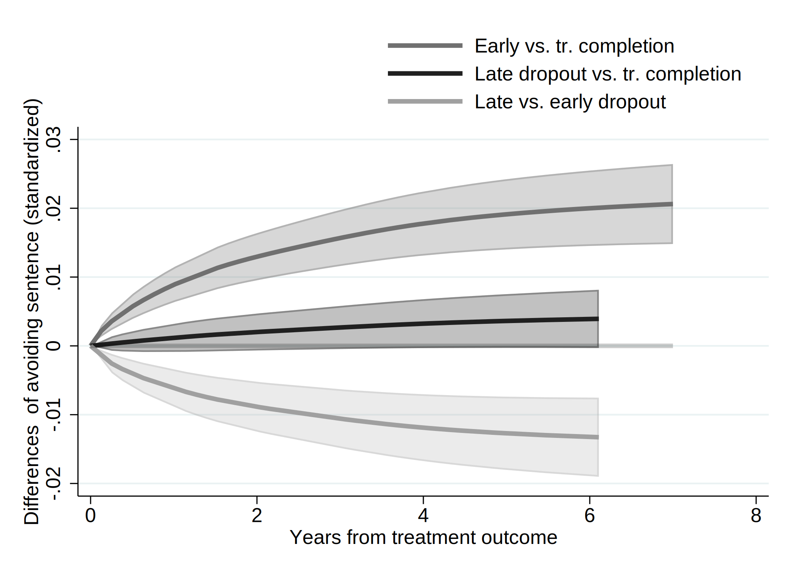
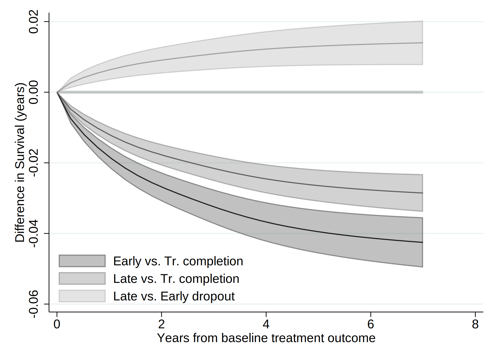
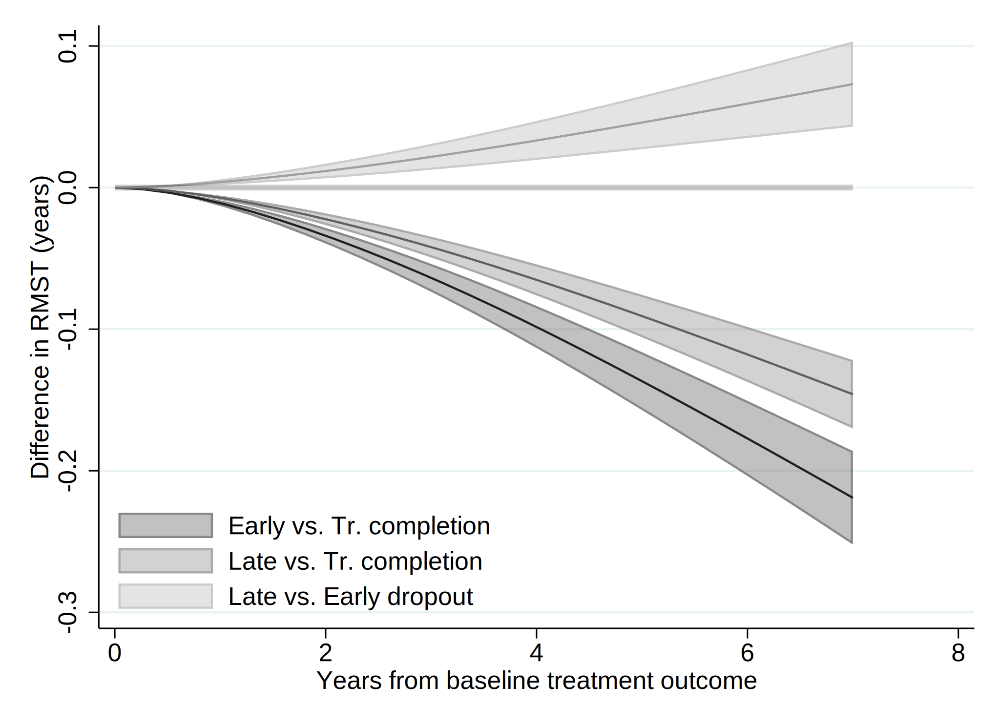

. clear all
. cap noi which tabout
C:\Users\CISS Fondecyt\ado\plus\t\tabout.ado
*! 2.0.8 Ian Watson 15mar2019
*! tabout version 3 (beta) available at: http://tabout.net.au
. if _rc==111 {
. cap noi ssc install tabout
. }
. cap noi which pathutil
C:\Users\CISS Fondecyt\ado\plus\p\pathutil.ado
*! version 2.2.0 19nov2020 daniel klein
. if _rc==111 {
. cap noi net install pathutil, from("http://fmwww.bc.edu/repec/bocode/p/")
. }
. cap noi which pathutil
C:\Users\CISS Fondecyt\ado\plus\p\pathutil.ado
*! version 2.2.0 19nov2020 daniel klein
. if _rc==111 {
. ssc install dirtools
. }
. cap noi which project
C:\Users\CISS Fondecyt\ado\plus\p\project.ado
*! version 1.3.1 22dec2013 picard@netbox.com
. if _rc==111 {
. ssc install project
. }
. cap noi which stipw
C:\Users\CISS Fondecyt\ado\plus\s\stipw.ado
*! Version 1.0.0 17Jan2022
. if _rc==111 {
. ssc install stipw
. }
. cap noi which stpm2
C:\Users\CISS Fondecyt\ado\plus\s\stpm2.ado
*! version 1.7.5 May2021
. if _rc==111 {
. ssc install stpm2
. }
. cap noi which rcsgen
C:\Users\CISS Fondecyt\ado\plus\r\rcsgen.ado
*! version 1.5.9 13FEB2022
. if _rc==111 {
. ssc install rcsgen
. }
. cap noi which matselrc
C:\Users\CISS Fondecyt\ado\plus\m\matselrc.ado
*! NJC 1.1.0 20 Apr 2000 (STB-56: dm79)
. if _rc==111 {
. cap noi net install dm79, from(http://www.stata.com/stb/stb56)
. }
. cap noi which stpm2_standsurv
C:\Users\CISS Fondecyt\ado\plus\s\stpm2_standsurv.ado
*! version 1.1.2 12Jun2018
. if _rc==111 {
. cap noi net install stpm2_standsurv.pkg, from(http://fmwww.bc.edu/RePEc/bocode/s)
. }
. cap noi which fs
C:\Users\CISS Fondecyt\ado\plus\f\fs.ado
*! NJC 1.0.5 23 November 2006
. if _rc==111 {
. ssc install fs
. }
. cap noi which mkspline2
C:\Users\CISS Fondecyt\ado\plus\m\mkspline2.ado
*! version 1.0.0 MLB 04Apr2009
. if _rc==111 {
. ssc install postrcspline
. }
.
Date created: 19:49:33 2 Apr 2023.
Get the folder
C:\Users\CISS Fondecyt\Mi unidad\Alvacast\SISTRAT 2022 (github)
Fecha: 2 Apr 2023, considerando un SO Windows para el usuario: CISS Fondecyt
Path data= ;
Tiempo: 2 Apr 2023, considerando un SO Windows
The file is located and named as: C:\Users\CISS Fondecyt\Mi unidad\Alvacast\SISTRAT 2022 (github)fiscalia_mariel_feb_2023_match_SENDA_miss_pris.dta
=============================================================================
=============================================================================
We open the files
. use "fiscalia_mariel_feb_2023_match_SENDA_miss_pris.dta", clear
.
. *b) select 10% of the data
. /*
> set seed 2125
> sample 10
> */
.
.
. fs mariel_ags_*.do
mariel_ags_b.do mariel_ags_b_m1.do mariel_ags_b_m2.do
. di "`r(dofile)'"
.
. *tostring tr_modality, gen(tr_modality_str)
.
. cap noi encode tr_modality_str, gen(newtr_modality)
variable tr_modality_str not found
. cap confirm variable newtr_modality
. if !_rc {
. cap noi drop tr_modality
. cap noi rename newtr_modality tr_modality
. }
.
. cap noi encode condicion_ocupacional_cor, gen(newcondicion_ocupacional_cor)
not possible with numeric variable
. cap confirm variable newcondicion_ocupacional_cor
. if !_rc {
. cap noi drop condicion_ocupacional_cor
. cap noi rename newcondicion_ocupacional_cor condicion_ocupacional_cor
. }
.
. cap noi encode tipo_centro, gen(newtipo_centro)
variable tipo_centro not found
. cap confirm variable newtipo_centro
. if !_rc {
. cap noi drop tipo_centro
. cap noi rename newtipo_centro tipo_centro
. }
.
. cap noi encode sus_ini_mod_mvv, gen(newsus_ini_mod_mvv)
. cap confirm variable newsus_ini_mod_mvv
. if !_rc {
. cap noi drop sus_ini_mod_mvv
. cap noi rename newsus_ini_mod_mvv sus_ini_mod_mvv
. }
.
. cap noi encode dg_trs_cons_sus_or, gen(newdg_trs_cons_sus_or)
. cap confirm variable newdg_trs_cons_sus_or
. if !_rc {
. cap noi drop dg_trs_cons_sus_or
. cap noi rename newdg_trs_cons_sus_or dg_trs_cons_sus_or
. }
.
. cap noi encode con_quien_vive_joel, gen(newcon_quien_vive_joel)
. cap confirm variable newcon_quien_vive_joel
. if !_rc {
. cap noi drop con_quien_vive_joel
. cap noi rename newcon_quien_vive_joel con_quien_vive_joel
. }
.
.
. *order and encode
. cap noi decode freq_cons_sus_prin, gen(str_freq_cons_sus_prin)
. cap confirm variable str_freq_cons_sus_prin
. if !_rc {
. cap noi drop freq_cons_sus_prin
. label def freq_cons_sus_prin2 1 "Less than 1 day a week" 2 "1 day a week or more" 3 "2 to 3 days a week" 4 "4 to 6 days a week" 5 "Daily"
. encode str_freq_cons_sus_prin, gen(freq_cons_sus_prin) label (freq_cons_sus_prin2)
. }
. cap noi decode dg_trs_cons_sus_or, gen(str_dg_trs_cons_sus_or)
. cap confirm variable str_dg_trs_cons_sus_or
. if !_rc {
. cap noi drop dg_trs_cons_sus_or
. cap label def dg_trs_cons_sus_or2 1 "Hazardous consumption" 2 "Drug dependence"
. encode str_dg_trs_cons_sus_or, gen(dg_trs_cons_sus_or) label (dg_trs_cons_sus_or2)
. }
.
.
. cap noi encode escolaridad_rec, gen(esc_rec)
not possible with numeric variable
. cap noi encode sex, generate(sex_enc)
. cap noi encode sus_principal_mod, gen(sus_prin_mod)
not possible with numeric variable
. cap noi encode freq_cons_sus_prin, gen(fr_sus_prin)
not possible with numeric variable
. cap noi encode compromiso_biopsicosocial, gen(comp_biosoc)
variable compromiso_biopsicosocial not found
. cap noi encode tenencia_de_la_vivienda_mod, gen(ten_viv)
not possible with numeric variable
. *encode dg_cie_10_rec, generate(dg_cie_10_mental_h) *already numeric
. cap noi encode dg_trs_cons_sus_or, gen(sud_severity_icd10)
not possible with numeric variable
. cap noi encode macrozona, gen(macrozone)
not possible with numeric variable
.
. /*
> *2023-02-28, not done in R
> cap noi recode numero_de_hijos_mod (0=0 "No children") (1/10=1 "Children"), gen(newnumero_de_hijos_mod)
> cap confirm variable newnumero_de_hijos_mod
> if !_rc {
> drop numero_de_hijos_mod
> cap noi rename newnumero_de_hijos_mod numero_de_hijos_mod
> }
> */
.
. *same for condemnatory sentence
. mkspline2 rc_x = edad_al_ing_1, cubic nknots(4) displayknots
| knot1 knot2 knot3 knot4
-------------+--------------------------------------------
edad_al_in~1 | 21.18685 29.99178 38.92615 56.32477
.
. *not necessary: 2023-02-28
. *gen motivodeegreso_mod_imp_rec3 = 1
. *replace motivodeegreso_mod_imp_rec3 = 2 if strpos(motivodeegreso_mod_imp_rec,"Early")>0
. *replace motivodeegreso_mod_imp_rec3 = 3 if strpos(motivodeegreso_mod_imp_rec,"Late")>0
.
. *encode policonsumo, generate(policon) *already numeric
. // Generate a restricted cubic spline variable for a variable "x" with 4 knots
. *https://chat.openai.com/chat/4a9396cd-2caa-4a2e-b5f4-ed2c2d0779b3
. *https://www.stata.com/meeting/nordic-and-baltic15/abstracts/materials/sweden15_oskarsson.pdf
. *mkspline xspline = edad_al_ing_1, cubic nknots(4)
. *gen rcs_x = xspline1*xspline2 xspline3 xspline4
.
. *https://www.statalist.org/forums/forum/general-stata-discussion/general/1638622-comparing-cox-proportional-hazard-linear-and-non-linear-restricted-
> cubic-spline-models-using-likelihood-ratio-test
.
=============================================================================
=============================================================================
Reset-time
. *if missing offender_d (status) , means that there was a record and the time is the time of offense
.
. *set the indicator
. gen event=0
. replace event=1 if !missing(offender_d)
(5,144 real changes made)
. *replace event=1 if !missing(sex)
.
. *correct time to event if _st=0
. gen diff= age_offending_imp-edad_al_egres_imp
. gen diffc= cond(diff<0.001, 0.001, diff)
. drop diff
. rename diffc diff
. lab var diff "Time to offense leading to condemnatory sentence"
.
. *age time
. *stset age_offending_imp, fail(event ==1) enter(edad_al_egres_imp)
. *reset time
. stset diff, failure(event ==1)
failure event: event == 1
obs. time interval: (0, diff]
exit on or before: failure
------------------------------------------------------------------------------
70,863 total observations
0 exclusions
------------------------------------------------------------------------------
70,863 observations remaining, representing
5,144 failures in single-record/single-failure data
302,812.79 total analysis time at risk and under observation
at risk from t = 0
earliest observed entry t = 0
last observed exit t = 10.75828
.
. stdescribe, weight
failure _d: event == 1
analysis time _t: diff
|-------------- per subject --------------|
Category total mean min median max
------------------------------------------------------------------------------
no. of subjects 70863
no. of records 70863 1 1 1 1
(first) entry time 0 0 0 0
(final) exit time 4.273214 .001 3.964384 10.75828
subjects with gap 0
time on gap if gap 0
time at risk 302812.79 4.273214 .001 3.964384 10.75828
failures 5144 .0725908 0 0 1
------------------------------------------------------------------------------
We calculate the incidence rate.
. stsum, by (motivodeegreso_mod_imp_rec)
failure _d: event == 1
analysis time _t: diff
| Incidence Number of |------ Survival time -----|
motivo~c | Time at risk rate subjects 25% 50% 75%
---------+---------------------------------------------------------------------
Treatmen | 76,638.2951 .0086641 19277 . . .
Treatmen | 65,879.5092 .0259717 15797 . . .
Treatmen | 160,294.984 .0172744 35789 . . .
---------+---------------------------------------------------------------------
Total | 302,812.789 .0169874 70863 . . .
. *Micki Hill & Paul C Lambert & Michael J Crowther, 2021. "Introducing stipw: inverse probability weighted parametric survival models," London Stata
> Conference 2021 15, Stata Users Group.
. *https://view.officeapps.live.com/op/view.aspx?src=http%3A%2F%2Ffmwww.bc.edu%2Frepec%2Fusug2021%2Fusug21_hill.pptx&wdOrigin=BROWSELINK
.
. *Treatment variable should be a binary variable with values 0 and 1.
. gen motivodeegreso_mod_imp_rec2 = 0
. replace motivodeegreso_mod_imp_rec2 = 1 if motivodeegreso_mod_imp_rec==2
(15,797 real changes made)
. replace motivodeegreso_mod_imp_rec2 = 1 if motivodeegreso_mod_imp_rec==3
(35,789 real changes made)
.
. recode motivodeegreso_mod_imp_rec2 (0=1 "Tr Completion") (1=0 "Tr Non-completion (Late & Early)"), gen(caus_disch_mod_imp_rec)
(70863 differences between motivodeegreso_mod_imp_rec2 and caus_disch_mod_imp_rec)
.
. cap noi gen motegr_dum3= motivodeegreso_mod_imp_rec2
. replace motegr_dum3 = 0 if motivodeegreso_mod_imp_rec==2
(15,797 real changes made)
. cap noi gen motegr_dum2= motivodeegreso_mod_imp_rec2
. replace motegr_dum2 = 0 if motivodeegreso_mod_imp_rec==3
(35,789 real changes made)
. lab var motegr_dum3 "Baseline treatment outcome(dich, 1= Late Dropout)"
. lab var motegr_dum2 "Baseline treatment outcome(dich, 1= Early Dropout)"
. lab var caus_disch_mod_imp_rec "Baseline treatment outcome(dich)"
.
.
. *Factor variables not allowed for tvc() option. Create your own dummy varibles.
. gen motivodeegreso_mod_imp_rec_earl = 1
. replace motivodeegreso_mod_imp_rec_earl = 0 if motivodeegreso_mod_imp_rec==1
(19,277 real changes made)
. replace motivodeegreso_mod_imp_rec_earl = 0 if motivodeegreso_mod_imp_rec==3
(35,789 real changes made)
.
. gen motivodeegreso_mod_imp_rec_late = 1
. replace motivodeegreso_mod_imp_rec_late = 0 if motivodeegreso_mod_imp_rec==1
(19,277 real changes made)
. replace motivodeegreso_mod_imp_rec_late = 0 if motivodeegreso_mod_imp_rec==2
(15,797 real changes made)
.
. *recode motivodeegreso_mod_imp_rec_earl (1=1 "Early dropout") (0=0 "Tr. comp & Late dropout"), gen(newmotivodeegreso_mod_imp_rec_e)
. *recode motivodeegreso_mod_imp_rec_late (1=1 "Late dropout") (0=0 "Tr. comp & Early dropout"), gen(newmotivodeegreso_mod_imp_rec_l)
.
. lab var motivodeegreso_mod_imp_rec_earl "Baseline treatment outcome- Early dropout(dich)"
. lab var motivodeegreso_mod_imp_rec_late "Baseline treatment outcome- Late dropout(dich)"
.
. cap noi rename motivodeegreso_mod_imp_rec_late mot_egr_late
. cap noi rename motivodeegreso_mod_imp_rec_earl mot_egr_early
=============================================================================
=============================================================================
We generated a graph with every type of treatment and the Nelson-Aalen estimate.
. sts graph, na by (motivodeegreso_mod_imp_rec) ci ///
> title("Comission of an offense (impprisonment)") ///
> subtitle("Nelson-Aalen Cum Hazards w/ Confidence Intervals 95%") ///
> risktable(, size(*.5) order(1 "Tr Completion" 2 "Early Disch" 3 "Late Disch")) ///
> ytitle("Cum. Hazards") ylabel(#8) ///
> xtitle("Years since tr. outcome") xlabel(#8) ///
> note("Source: nDP, SENDA's SUD Treatments & POs Office Data period 2010-2019 ") ///
> legend(rows(3)) ///
> legend(cols(4)) ///
> graphregion(color(white) lwidth(large)) bgcolor(white) ///
> plotregion(fcolor(white)) graphregion(fcolor(white) ) /// //text(.5 1 "IR = <0.001") ///
> legend(order(1 "95CI Tr Completion" 2 "Tr Completion" 3 "95CI Early Tr Disch" 4 "Early Tr Disch " 5 "95CI Late Tr Disch" 6 "Late Tr Disch" )size(*.5
> )region(lstyle(none)) region(c(none)) nobox)
failure _d: event == 1
analysis time _t: diff
(note: named style large not found in class linewidth, default attributes used)
(note: linewidth not found in scheme, default attributes used)
(note: named style large not found in class linewidth, default attributes used)
(note: linewidth not found in scheme, default attributes used)
. graph save "`c(pwd)'\_figs\tto_2023_pris_m1.gph", replace
(file C:\Users\CISS Fondecyt\Mi unidad\Alvacast\SISTRAT 2022 (github)\_figs\tto_2023_pris_m1.gph saved)
=============================================================================
=============================================================================
. /*
> vars_cov<-c("motivodeegreso_mod_imp_rec", "tr_modality", "edad_al_ing_1", "sex", "edad_ini_cons", "escolaridad_rec", "sus_principal_mod", "freq_cons
> _sus_prin", "condicion_ocupacional_corr", "policonsumo", "num_hijos_mod_joel_bin", "tenencia_de_la_vivienda_mod", "macrozona", "n_off_vio", "n_off_a
> cq", "n_off_sud", "n_off_oth", "dg_cie_10_rec", "dg_trs_cons_sus_or", "clas_r", "porc_pobr", "sus_ini_mod_mvv", "ano_nac_corr", "con_quien_vive_joe
> l", "fis_comorbidity_icd_10")
> */
.
. global covs "i.motivodeegreso_mod_imp_rec i.tr_modality i.sex_enc edad_ini_cons i.escolaridad_rec i.sus_principal_mod i.freq_cons_sus_prin i.condici
> on_ocupacional_cor i.policonsumo i.num_hijos_mod_joel_bin i.tenencia_de_la_vivienda_mod i.macrozona i.n_off_vio i.n_off_acq i.n_off_sud i.n_off_oth
> i.dg_cie_10_rec i.dg_trs_cons_sus_or i.clas_r porc_pobr i.sus_ini_mod_mvv ano_nac_corr i.con_quien_vive_joel i.fis_comorbidity_icd_10"
.
«dd_include: “${pathdata2}mat_scho_test_02_2023_1_pris_m1.html” » tag dd_include failed to find file mat_scho_test_02_2023_1_pris_m1.html r(601);
. // VERIFY FIRST SPLINE VARIABLE IS THE ORIGINAL VARIABLE
. assert float(edad_al_ing_1) == float(rc_x1)
.
. // MODEL WITH FULL SPLINE
. qui noi stcox $covs rc*
failure _d: event == 1
analysis time _t: diff
Iteration 0: log likelihood = -55523.635
Iteration 1: log likelihood = -53064.211
Iteration 2: log likelihood = -52545.345
Iteration 3: log likelihood = -52543.043
Iteration 4: log likelihood = -52543.041
Refining estimates:
Iteration 0: log likelihood = -52543.041
Cox regression -- Breslow method for ties
No. of subjects = 70,863 Number of obs = 70,863
No. of failures = 5,144
Time at risk = 302812.7888
LR chi2(51) = 5961.19
Log likelihood = -52543.041 Prob > chi2 = 0.0000
-------------------------------------------------------------------------------------------------------------
_t | Haz. Ratio Std. Err. z P>|z| [95% Conf. Interval]
--------------------------------------------+----------------------------------------------------------------
motivodeegreso_mod_imp_rec |
Treatment non-completion (Early) | 1.884404 .0981311 12.17 0.000 1.70156 2.086895
Treatment non-completion (Late) | 1.578257 .0701245 10.27 0.000 1.44663 1.72186
|
tr_modality |
Residential | 1.150163 .0429181 3.75 0.000 1.069048 1.237434
|
sex_enc |
Women | .5899026 .0255316 -12.19 0.000 .5419252 .6421275
edad_ini_cons | .973513 .0040329 -6.48 0.000 .9656407 .9814496
|
escolaridad_rec |
2-Completed high school or less | .8859481 .0274859 -3.90 0.000 .8336819 .9414912
1-More than high school | .6580041 .036147 -7.62 0.000 .590838 .7328057
|
sus_principal_mod |
Cocaine hydrochloride | 1.196657 .0709668 3.03 0.002 1.065344 1.344156
Cocaine paste | 1.71875 .0824318 11.29 0.000 1.564548 1.88815
Marijuana | 1.142536 .0793249 1.92 0.055 .9971767 1.309085
Other | 1.35583 .1840874 2.24 0.025 1.039043 1.7692
|
freq_cons_sus_prin |
1 day a week or more | .9738254 .0966081 -0.27 0.789 .801748 1.182835
2 to 3 days a week | .9910605 .0795741 -0.11 0.911 .8467507 1.159965
4 to 6 days a week | 1.034083 .0860077 0.40 0.687 .8785338 1.217173
Daily | 1.083616 .0862068 1.01 0.313 .9271678 1.266463
|
condicion_ocupacional_corr |
Inactive | 1.084016 .0669211 1.31 0.191 .960478 1.223445
Looking for a job for the first time | 1.146334 .2805966 0.56 0.577 .7095061 1.852106
No activity | 1.233706 .0806776 3.21 0.001 1.085295 1.402412
Not seeking for work | 1.322057 .1358087 2.72 0.007 1.080962 1.616926
Unemployed | 1.20921 .0419433 5.48 0.000 1.129735 1.294276
|
1.policonsumo | 1.00362 .0430418 0.08 0.933 .9227079 1.091627
1.num_hijos_mod_joel_bin | 1.137312 .0394767 3.71 0.000 1.062513 1.217378
|
tenencia_de_la_vivienda_mod |
Others | 1.048896 .1362236 0.37 0.713 .8131746 1.352947
Owner/Transferred dwellings/Pays Dividends | .9794562 .1106882 -0.18 0.854 .7848575 1.222304
Renting | .9893639 .1124914 -0.09 0.925 .7917241 1.236341
Stays temporarily with a relative | .9709575 .1099212 -0.26 0.795 .7777437 1.212171
|
macrozona |
North | 1.420945 .0526803 9.48 0.000 1.321356 1.528041
South | 1.552346 .0870059 7.85 0.000 1.39085 1.732594
|
n_off_vio |
1 | 1.457764 .0501976 10.95 0.000 1.362625 1.559546
|
n_off_acq |
1 | 2.796119 .0870609 33.02 0.000 2.630585 2.972069
|
n_off_sud |
1 | 1.376311 .0456138 9.64 0.000 1.289752 1.46868
|
n_off_oth |
1 | 1.701012 .0564014 16.02 0.000 1.593982 1.815228
|
dg_cie_10_rec |
Diagnosis unknown (under study) | 1.100792 .0471597 2.24 0.025 1.012135 1.197215
With psychiatric comorbidity | 1.085812 .0366507 2.44 0.015 1.016302 1.160075
|
dg_trs_cons_sus_or |
Drug dependence | 1.033287 .0387763 0.87 0.383 .9600141 1.112152
|
clas_r |
Mixta | .9379319 .0520943 -1.15 0.249 .8411901 1.0458
Rural | .863297 .0539399 -2.35 0.019 .7637936 .9757632
|
porc_pobr | 1.66451 .3595064 2.36 0.018 1.090036 2.541743
|
sus_ini_mod_mvv |
Cocaine hydrochloride | 1.098158 .0720589 1.43 0.154 .9656296 1.248875
Cocaine paste | 1.268234 .0730058 4.13 0.000 1.132922 1.419707
Marijuana | 1.153607 .0378324 4.36 0.000 1.08179 1.230192
Other | 1.379569 .1165374 3.81 0.000 1.169067 1.627975
|
ano_nac_corr | .8455368 .0067619 -20.98 0.000 .832387 .8588943
|
con_quien_vive_joel |
Family of origin | .863208 .0473362 -2.68 0.007 .7752427 .9611547
Others | 1.075051 .0686417 1.13 0.257 .9485929 1.218366
With couple/children | .9458194 .0519347 -1.01 0.310 .8493154 1.053289
|
fis_comorbidity_icd_10 |
Diagnosis unknown (under study) | 1.082794 .032835 2.62 0.009 1.020314 1.1491
One or more | .840642 .0632671 -2.31 0.021 .7253528 .9742556
|
rc_x1 | .8434646 .0086551 -16.59 0.000 .8266703 .8606001
rc_x2 | .8821128 .0305598 -3.62 0.000 .824205 .9440891
rc_x3 | 1.294844 .1193905 2.80 0.005 1.080769 1.551322
-------------------------------------------------------------------------------------------------------------
. estat ic
Akaike's information criterion and Bayesian information criterion
-----------------------------------------------------------------------------
Model | N ll(null) ll(model) df AIC BIC
-------------+---------------------------------------------------------------
. | 70,863 -55523.64 -52543.04 51 105188.1 105655.7
-----------------------------------------------------------------------------
Note: BIC uses N = number of observations. See [R] BIC note.
. estimates store full_spline
. scalar ll_1= e(ll)
. // MODEL WITH ONLY LINEAR TERM
. qui noi stcox $covs rc_x1
failure _d: event == 1
analysis time _t: diff
Iteration 0: log likelihood = -55523.635
Iteration 1: log likelihood = -53050.534
Iteration 2: log likelihood = -52560.229
Iteration 3: log likelihood = -52558.832
Iteration 4: log likelihood = -52558.832
Refining estimates:
Iteration 0: log likelihood = -52558.832
Cox regression -- Breslow method for ties
No. of subjects = 70,863 Number of obs = 70,863
No. of failures = 5,144
Time at risk = 302812.7888
LR chi2(49) = 5929.61
Log likelihood = -52558.832 Prob > chi2 = 0.0000
-------------------------------------------------------------------------------------------------------------
_t | Haz. Ratio Std. Err. z P>|z| [95% Conf. Interval]
--------------------------------------------+----------------------------------------------------------------
motivodeegreso_mod_imp_rec |
Treatment non-completion (Early) | 1.886179 .0982619 12.18 0.000 1.703096 2.088945
Treatment non-completion (Late) | 1.580301 .0702164 10.30 0.000 1.448501 1.724093
|
tr_modality |
Residential | 1.143671 .0426495 3.60 0.000 1.063062 1.230393
|
sex_enc |
Women | .5888584 .0254551 -12.25 0.000 .5410224 .6409238
edad_ini_cons | .9733961 .0039936 -6.57 0.000 .9656002 .9812549
|
escolaridad_rec |
2-Completed high school or less | .9002364 .0278138 -3.40 0.001 .8473401 .9564348
1-More than high school | .6794858 .0371275 -7.07 0.000 .6104783 .7562939
|
sus_principal_mod |
Cocaine hydrochloride | 1.222019 .0724536 3.38 0.001 1.087954 1.372606
Cocaine paste | 1.768974 .0846252 11.92 0.000 1.61065 1.942861
Marijuana | 1.145128 .0796271 1.95 0.051 .9992298 1.31233
Other | 1.35767 .1845741 2.25 0.025 1.040098 1.772207
|
freq_cons_sus_prin |
1 day a week or more | .9706511 .0962954 -0.30 0.764 .7991311 1.178985
2 to 3 days a week | .9897477 .0794768 -0.13 0.898 .8456156 1.158447
4 to 6 days a week | 1.029478 .0856337 0.35 0.727 .874607 1.211774
Daily | 1.080416 .0859617 0.97 0.331 .9244139 1.262745
|
condicion_ocupacional_corr |
Inactive | 1.060497 .0652407 0.95 0.340 .9400358 1.196395
Looking for a job for the first time | 1.096626 .2683173 0.38 0.706 .6788758 1.77144
No activity | 1.211994 .0791813 2.94 0.003 1.066327 1.377561
Not seeking for work | 1.30488 .1340026 2.59 0.010 1.066983 1.595818
Unemployed | 1.202885 .0417213 5.33 0.000 1.12383 1.287501
|
1.policonsumo | 1.013918 .0434855 0.32 0.747 .9321719 1.102833
1.num_hijos_mod_joel_bin | 1.167331 .0402325 4.49 0.000 1.091081 1.24891
|
tenencia_de_la_vivienda_mod |
Others | 1.043175 .1355065 0.33 0.745 .8087003 1.345633
Owner/Transferred dwellings/Pays Dividends | .9685326 .1094391 -0.28 0.777 .7761273 1.208636
Renting | .9904664 .1126103 -0.08 0.933 .7926165 1.237703
Stays temporarily with a relative | .9698048 .1097813 -0.27 0.787 .7768352 1.210709
|
macrozona |
North | 1.408468 .0521732 9.25 0.000 1.309834 1.514529
South | 1.555748 .0871593 7.89 0.000 1.393964 1.736309
|
n_off_vio |
1 | 1.454508 .0500971 10.88 0.000 1.35956 1.556086
|
n_off_acq |
1 | 2.796169 .0871489 32.99 0.000 2.630473 2.972303
|
n_off_sud |
1 | 1.384685 .0458561 9.83 0.000 1.297664 1.477543
|
n_off_oth |
1 | 1.704443 .0564911 16.09 0.000 1.597242 1.818839
|
dg_cie_10_rec |
Diagnosis unknown (under study) | 1.101732 .0472025 2.26 0.024 1.012995 1.198243
With psychiatric comorbidity | 1.090338 .0367894 2.56 0.010 1.020564 1.164882
|
dg_trs_cons_sus_or |
Drug dependence | 1.03841 .0389459 1.00 0.315 .9648153 1.117618
|
clas_r |
Mixta | .9419758 .0523031 -1.08 0.282 .8448446 1.050274
Rural | .8671207 .0541775 -2.28 0.022 .7671789 .980082
|
porc_pobr | 1.65026 .3561016 2.32 0.020 1.081125 2.519005
|
sus_ini_mod_mvv |
Cocaine hydrochloride | 1.106079 .0725794 1.54 0.124 .9725935 1.257884
Cocaine paste | 1.274831 .0733736 4.22 0.000 1.138836 1.427066
Marijuana | 1.147762 .0376558 4.20 0.000 1.07628 1.22399
Other | 1.387549 .1172585 3.88 0.000 1.175751 1.6375
|
ano_nac_corr | .8453248 .0067566 -21.02 0.000 .8321853 .8586718
|
con_quien_vive_joel |
Family of origin | .8599531 .0472136 -2.75 0.006 .772221 .9576524
Others | 1.073964 .0685973 1.12 0.264 .9475909 1.21719
With couple/children | .9522297 .0522638 -0.89 0.372 .8551117 1.060378
|
fis_comorbidity_icd_10 |
Diagnosis unknown (under study) | 1.081475 .0327956 2.58 0.010 1.019069 1.147702
One or more | .8298684 .062449 -2.48 0.013 .716069 .9617531
|
rc_x1 | .8183393 .0066577 -24.64 0.000 .805394 .8314927
-------------------------------------------------------------------------------------------------------------
. estat ic
Akaike's information criterion and Bayesian information criterion
-----------------------------------------------------------------------------
Model | N ll(null) ll(model) df AIC BIC
-------------+---------------------------------------------------------------
. | 70,863 -55523.64 -52558.83 49 105215.7 105664.9
-----------------------------------------------------------------------------
Note: BIC uses N = number of observations. See [R] BIC note.
. scalar ll_2= e(ll)
. estimates store linear_term
.
. lrtest full_spline linear_term
Likelihood-ratio test LR chi2(2) = 31.58
(Assumption: linear_term nested in full_spline) Prob > chi2 = 0.0000
.
. scalar ll_diff= round(`=scalar(ll_1)'-`=scalar(ll_2)',.01)
. di "Log-likelihood difference (spline - linear): `=scalar(ll_diff)'"
Log-likelihood difference (spline - linear): 15.79
.
. * the presence of censored observations makes it difficult to decide further among them. (This is partly due to the fact that both the Cox model and
> the parametric survival models assume that censoring is orthogonal to survival time, a mathematically handy assumption that is often demonstrably a
> nd seriously in error, and the actual data generation process for survival is often too unknown or too messy to simulate.) So in this context, relia
> nce on LR tests or IC statistics is a fallback position.
Log-likelihood difference (spline - linear): 15.79
Nevetheless, we chose the model with spline terms due to linearity over a better fit.
=============================================================================
=============================================================================
In view of nonproportional hazards, we explored different shapes of time-dependent effects and baseline hazards.
. *______________________________________________
. *______________________________________________
. * ADJUSTED ROYSTON PARMAR - NO STAGGERED ENTRY, BINARY TREATMENT (1-DROPOUT VS. 0-COMPLETION)
.
. /*
> vars_cov<-c("motivodeegreso_mod_imp_rec", "tr_modality", "edad_al_ing_1", "sex", "edad_ini_cons", "escolaridad_rec", "sus_principal_mod", "freq_cons
> _sus_prin", "condicion_ocupacional_corr", "policonsumo", "num_hijos_mod_joel_bin", "tenencia_de_la_vivienda_mod", "macrozona", "n_off_vio", "n_off_a
> cq", "n_off_sud", "n_off_oth", "dg_cie_10_rec", "dg_trs_cons_sus_or", "clas_r", "porc_pobr", "sus_ini_mod_mvv", "ano_nac_corr", "con_quien_vive_joe
> l", "fis_comorbidity_icd_10")
> */
.
. cap noi tab tr_modality, gen(tr_mod)
Treatment |
Modality | Freq. Percent Cum.
------------+-----------------------------------
Ambulatory | 60,462 85.32 85.32
Residential | 10,401 14.68 100.00
------------+-----------------------------------
Total | 70,863 100.00
. cap noi tab sex_enc, gen(sex_dum)
Sex | Freq. Percent Cum.
------------+-----------------------------------
Men | 54,048 76.27 76.27
Women | 16,815 23.73 100.00
------------+-----------------------------------
Total | 70,863 100.00
. cap noi tab escolaridad_rec, gen(esc)
Educational Attainment | Freq. Percent Cum.
-----------------------------------+-----------------------------------
3-Completed primary school or less | 20,338 28.70 28.70
2-Completed high school or less | 39,170 55.28 83.98
1-More than high school | 11,355 16.02 100.00
-----------------------------------+-----------------------------------
Total | 70,863 100.00
. cap noi tab sus_principal_mod, gen(sus_prin)
Primary Substance |
(admission to |
treatment) | Freq. Percent Cum.
----------------------+-----------------------------------
Alcohol | 23,864 33.68 33.68
Cocaine hydrochloride | 13,243 18.69 52.36
Cocaine paste | 27,791 39.22 91.58
Marijuana | 4,748 6.70 98.28
Other | 1,217 1.72 100.00
----------------------+-----------------------------------
Total | 70,863 100.00
. cap noi tab freq_cons_sus_prin, gen(fr_cons_sus_prin)
Frequency of Substance |
Use (Primary |
Substance) | Freq. Percent Cum.
-----------------------+-----------------------------------
Less than 1 day a week | 3,496 4.93 4.93
1 day a week or more | 4,831 6.82 11.75
2 to 3 days a week | 20,197 28.50 40.25
4 to 6 days a week | 11,667 16.46 56.72
Daily | 30,672 43.28 100.00
-----------------------+-----------------------------------
Total | 70,863 100.00
. cap noi tab condicion_ocupacional_cor, gen(cond_ocu)
Corrected Occupational Status (f) | Freq. Percent Cum.
-------------------------------------+-----------------------------------
Employed | 35,368 49.91 49.91
Inactive | 7,169 10.12 60.03
Looking for a job for the first time | 159 0.22 60.25
No activity | 3,558 5.02 65.27
Not seeking for work | 713 1.01 66.28
Unemployed | 23,896 33.72 100.00
-------------------------------------+-----------------------------------
Total | 70,863 100.00
. cap noi tab num_hijos_mod_joel_bin, gen(num_hij)
Number of |
Children |
(dichotomiz |
ed) | Freq. Percent Cum.
------------+-----------------------------------
0 | 16,538 23.34 23.34
1 | 54,325 76.66 100.00
------------+-----------------------------------
Total | 70,863 100.00
. cap noi tab tenencia_de_la_vivienda_mod, gen(tenviv)
Housing Situation (Tenure Status) | Freq. Percent Cum.
----------------------------------------+-----------------------------------
Illegal Settlement | 775 1.09 1.09
Others | 2,031 2.87 3.96
Owner/Transferred dwellings/Pays Divide | 26,522 37.43 41.39
Renting | 13,652 19.27 60.65
Stays temporarily with a relative | 27,883 39.35 100.00
----------------------------------------+-----------------------------------
Total | 70,863 100.00
. cap noi tab macrozona, gen(mzone)
Macro |
Administrat |
ive Zone in |
Chile | Freq. Percent Cum.
------------+-----------------------------------
Center | 53,698 75.78 75.78
North | 10,486 14.80 90.57
South | 6,679 9.43 100.00
------------+-----------------------------------
Total | 70,863 100.00
. cap noi tab clas_r, gen(rural)
Socioeconom |
ic |
Classificat |
ion | Freq. Percent Cum.
------------+-----------------------------------
Urbana | 58,278 82.24 82.24
Mixta | 6,835 9.65 91.89
Rural | 5,750 8.11 100.00
------------+-----------------------------------
Total | 70,863 100.00
. cap noi tab sus_ini_mod_mvv, gen(susini)
sus_ini_mod_mvv | Freq. Percent Cum.
----------------------+-----------------------------------
Alcohol | 42,210 59.57 59.57
Cocaine hydrochloride | 4,015 5.67 65.23
Cocaine paste | 3,315 4.68 69.91
Marijuana | 19,670 27.76 97.67
Other | 1,653 2.33 100.00
----------------------+-----------------------------------
Total | 70,863 100.00
. cap noi tab con_quien_vive_joel, gen(cohab)
con_quien_vive_joel | Freq. Percent Cum.
---------------------+-----------------------------------
Alone | 6,689 9.44 9.44
Family of origin | 29,340 41.40 50.84
Others | 6,109 8.62 59.46
With couple/children | 28,725 40.54 100.00
---------------------+-----------------------------------
Total | 70,863 100.00
. cap noi tab fis_comorbidity_icd_10, gen(fis_com)
Physical Comorbidity (ICD-10) | Freq. Percent Cum.
--------------------------------+-----------------------------------
Without physical comorbidity | 28,053 39.59 39.59
Diagnosis unknown (under study) | 38,395 54.18 93.77
One or more | 4,415 6.23 100.00
--------------------------------+-----------------------------------
Total | 70,863 100.00
. cap noi tab dg_cie_10_rec, gen(psy_com)
Psychiatric Comorbidity |
(ICD-10) | Freq. Percent Cum.
--------------------------------+-----------------------------------
Without psychiatric comorbidity | 27,922 39.40 39.40
Diagnosis unknown (under study) | 13,273 18.73 58.13
With psychiatric comorbidity | 29,668 41.87 100.00
--------------------------------+-----------------------------------
Total | 70,863 100.00
. cap noi tab dg_trs_cons_sus_or, gen(dep)
dg_trs_cons_sus_or | Freq. Percent Cum.
----------------------+-----------------------------------
Hazardous consumption | 19,697 27.80 27.80
Drug dependence | 51,166 72.20 100.00
----------------------+-----------------------------------
Total | 70,863 100.00
.
. /*
> *NO LONGER USEFUL
> local varslab "dg_fis_anemia dg_fis_card dg_fis_in_study dg_fis_enf_som dg_fis_ets dg_fis_hep_alc dg_fis_hep_b dg_fis_hep_cro dg_fis_inf dg_fis_otr_
> cond_fis_ries_vit dg_fis_otr_cond_fis dg_fis_pat_buc dg_fis_pat_ges_intrau dg_fis_trau_sec"
> forvalues i = 1/14 {
> local v : word `i' of `varslab'
> di "`v'"
> gen `v'2= 0
> replace `v'2 =1 if `v'==2
> }
> */
.
. global covs_3b "mot_egr_early mot_egr_late i.tr_modality i.sex_enc edad_ini_cons i.escolaridad_rec i.sus_principal_mod i.freq_cons_sus_prin i.condic
> ion_ocupacional_cor i.policonsumo i.num_hijos_mod_joel_bin i.tenencia_de_la_vivienda_mod i.macrozona i.n_off_vio i.n_off_acq i.n_off_sud i.n_off_oth
> i.dg_cie_10_rec i.dg_trs_cons_sus_or i.clas_r porc_pobr i.sus_ini_mod_mvv ano_nac_corr i.con_quien_vive_joel i.fis_comorbidity_icd_10 rc_x1 rc_x2 r
> c_x3"
.
. *REALLY NEEDS DUMMY VARS
. global covs_3b_pre_dum "mot_egr_early mot_egr_late tr_mod2 sex_dum2 edad_ini_cons esc1 esc2 sus_prin2 sus_prin3 sus_prin4 sus_prin5 fr_cons_sus_prin
> 2 fr_cons_sus_prin3 fr_cons_sus_prin4 fr_cons_sus_prin5 cond_ocu2 cond_ocu3 cond_ocu4 cond_ocu5 cond_ocu6 policonsumo num_hij2 tenviv1 tenviv2 tenvi
> v4 tenviv5 mzone2 mzone3 n_off_vio n_off_acq n_off_sud n_off_oth psy_com2 dep2 rural2 rural3 porc_pobr susini2 susini3 susini4 susini5 ano_nac_corr
> cohab2 cohab3 cohab4 fis_com2 rc_x1 rc_x2 rc_x3"
.
. forvalues i=1/10 {
2. forvalues j=1/7 {
3. qui noi stpm2 $covs_3b_pre_dum , scale(hazard) df(`i') eform tvc(mot_egr_early mot_egr_late) dftvc(`j')
4. estimates store m_nostag_rp`i'_tvc_`j'
5. }
6. }
Iteration 0: log likelihood = -21965.629
Iteration 1: log likelihood = -21857.582
Iteration 2: log likelihood = -21856.23
Iteration 3: log likelihood = -21856.23
Log likelihood = -21856.23 Number of obs = 70,863
---------------------------------------------------------------------------------------
| exp(b) Std. Err. z P>|z| [95% Conf. Interval]
----------------------+----------------------------------------------------------------
xb |
mot_egr_early | 1.950563 .106277 12.26 0.000 1.753001 2.170391
mot_egr_late | 1.636171 .0771238 10.45 0.000 1.491783 1.794533
tr_mod2 | 1.150696 .0429146 3.76 0.000 1.069585 1.237958
sex_dum2 | .5902908 .0254664 -12.22 0.000 .5424296 .642375
edad_ini_cons | .9734306 .0040323 -6.50 0.000 .9655594 .9813659
esc1 | 1.52148 .0835681 7.64 0.000 1.366197 1.694411
esc2 | 1.345989 .0694404 5.76 0.000 1.216543 1.489209
sus_prin2 | 1.1919 .0706573 2.96 0.003 1.061157 1.338752
sus_prin3 | 1.713585 .0820949 11.24 0.000 1.560005 1.882284
sus_prin4 | 1.137395 .0789364 1.86 0.064 .9927429 1.303123
sus_prin5 | 1.348288 .1830323 2.20 0.028 1.03331 1.759279
fr_cons_sus_prin2 | .9776434 .0969828 -0.23 0.820 .8048979 1.187463
fr_cons_sus_prin3 | .995821 .07994 -0.05 0.958 .8508455 1.165499
fr_cons_sus_prin4 | 1.037803 .0862871 0.45 0.655 .8817446 1.221483
fr_cons_sus_prin5 | 1.089828 .0866548 1.08 0.279 .9325605 1.273618
cond_ocu2 | 1.089886 .0672217 1.40 0.163 .9657859 1.229932
cond_ocu3 | 1.143457 .2799164 0.55 0.584 .7076961 1.847534
cond_ocu4 | 1.248072 .0815059 3.39 0.001 1.098124 1.418494
cond_ocu5 | 1.33165 .1367129 2.79 0.005 1.088935 1.628464
cond_ocu6 | 1.211939 .0420103 5.55 0.000 1.132335 1.29714
policonsumo | 1.003811 .0429753 0.09 0.929 .923018 1.091676
num_hij2 | 1.136752 .0394375 3.69 0.000 1.062025 1.216737
tenviv1 | 1.015093 .11468 0.13 0.895 .8134696 1.266689
tenviv2 | 1.064257 .0799823 0.83 0.407 .9184931 1.233153
tenviv4 | 1.010397 .0419846 0.25 0.803 .9313702 1.096129
tenviv5 | .9908889 .0331282 -0.27 0.784 .9280405 1.057994
mzone2 | 1.417196 .0525047 9.41 0.000 1.317936 1.523931
mzone3 | 1.550308 .0868333 7.83 0.000 1.389126 1.730191
n_off_vio | 1.465396 .0505191 11.08 0.000 1.369651 1.567834
n_off_acq | 2.821031 .08799 33.25 0.000 2.65374 2.998869
n_off_sud | 1.381611 .0458381 9.74 0.000 1.294628 1.474437
n_off_oth | 1.709345 .0567741 16.14 0.000 1.601614 1.824322
psy_com2 | 1.047826 .0402307 1.22 0.224 .9718686 1.129719
dep2 | 1.03261 .0387376 0.86 0.392 .9594097 1.111395
rural2 | .937512 .0520534 -1.16 0.245 .8408445 1.045293
rural3 | .865654 .0540473 -2.31 0.021 .7659481 .9783389
porc_pobr | 1.658529 .3583667 2.34 0.019 1.085924 2.533066
susini2 | 1.091978 .0716106 1.34 0.180 .9602694 1.241751
susini3 | 1.275938 .0734499 4.23 0.000 1.139803 1.428332
susini4 | 1.159131 .0380104 4.50 0.000 1.086975 1.236076
susini5 | 1.382419 .1167894 3.83 0.000 1.171463 1.631364
ano_nac_corr | .8650581 .0068213 -18.38 0.000 .8517915 .8785314
cohab2 | .8621904 .0472842 -2.70 0.007 .7743221 .9600297
cohab3 | 1.074369 .0685906 1.12 0.261 .9480041 1.217577
cohab4 | .9445028 .05187 -1.04 0.298 .8481197 1.051839
fis_com2 | 1.116894 .0327426 3.77 0.000 1.054529 1.182948
rc_x1 | .8630748 .0087815 -14.47 0.000 .8460338 .8804589
rc_x2 | .8805635 .030503 -3.67 0.000 .822763 .9424246
rc_x3 | 1.299427 .1197976 2.84 0.004 1.084619 1.556777
_rcs1 | 2.134952 .0577588 28.03 0.000 2.024696 2.251213
_rcs_mot_egr_early1 | .912469 .0279029 -3.00 0.003 .859387 .9688297
_rcs_mot_egr_late1 | .9274713 .0272644 -2.56 0.010 .8755444 .982478
_cons | 8.7e+123 1.4e+125 17.99 0.000 2.7e+110 2.8e+137
---------------------------------------------------------------------------------------
Note: Estimates are transformed only in the first equation.
Iteration 0: log likelihood = -21852.046
Iteration 1: log likelihood = -21797.019
Iteration 2: log likelihood = -21796.399
Iteration 3: log likelihood = -21796.398
Log likelihood = -21796.398 Number of obs = 70,863
---------------------------------------------------------------------------------------
| exp(b) Std. Err. z P>|z| [95% Conf. Interval]
----------------------+----------------------------------------------------------------
xb |
mot_egr_early | 1.997332 .1091216 12.66 0.000 1.79451 2.223077
mot_egr_late | 1.665028 .0786375 10.80 0.000 1.51782 1.826513
tr_mod2 | 1.150718 .0429096 3.76 0.000 1.069617 1.237969
sex_dum2 | .5915382 .0255216 -12.17 0.000 .5435734 .6437354
edad_ini_cons | .9735105 .0040319 -6.48 0.000 .9656402 .981445
esc1 | 1.51923 .083452 7.61 0.000 1.364164 1.691923
esc2 | 1.345578 .0694209 5.75 0.000 1.216169 1.488758
sus_prin2 | 1.189316 .0704993 2.92 0.003 1.058864 1.335839
sus_prin3 | 1.709726 .0819016 11.20 0.000 1.556508 1.878028
sus_prin4 | 1.137321 .0789302 1.85 0.064 .9926809 1.303037
sus_prin5 | 1.344518 .1825209 2.18 0.029 1.03042 1.75436
fr_cons_sus_prin2 | .9776179 .0969791 -0.23 0.819 .8048787 1.187429
fr_cons_sus_prin3 | .9963056 .0799764 -0.05 0.963 .8512637 1.16606
fr_cons_sus_prin4 | 1.037674 .0862724 0.44 0.656 .8816416 1.221322
fr_cons_sus_prin5 | 1.089343 .0866094 1.08 0.282 .9321569 1.273035
cond_ocu2 | 1.090237 .067242 1.40 0.161 .9660994 1.230326
cond_ocu3 | 1.135709 .2780153 0.52 0.603 .7029063 1.835001
cond_ocu4 | 1.247362 .0814558 3.38 0.001 1.097506 1.41768
cond_ocu5 | 1.329753 .1365102 2.78 0.006 1.087397 1.626125
cond_ocu6 | 1.210923 .0419754 5.52 0.000 1.131385 1.296052
policonsumo | 1.005162 .0430297 0.12 0.904 .9242666 1.093138
num_hij2 | 1.136752 .039441 3.69 0.000 1.062019 1.216744
tenviv1 | 1.017072 .1148944 0.15 0.881 .8150706 1.269137
tenviv2 | 1.063673 .0799422 0.82 0.411 .9179831 1.232485
tenviv4 | 1.010965 .0420083 0.26 0.793 .9318933 1.096745
tenviv5 | .9915952 .0331532 -0.25 0.801 .9286994 1.058751
mzone2 | 1.414257 .0523954 9.36 0.000 1.315204 1.52077
mzone3 | 1.547024 .0866244 7.79 0.000 1.386228 1.726472
n_off_vio | 1.462566 .0504213 11.03 0.000 1.367007 1.564805
n_off_acq | 2.807603 .087584 33.09 0.000 2.641084 2.984621
n_off_sud | 1.380855 .0458078 9.73 0.000 1.29393 1.47362
n_off_oth | 1.705225 .0566383 16.07 0.000 1.597752 1.819927
psy_com2 | 1.048481 .0402855 1.23 0.218 .9724226 1.130488
dep2 | 1.032405 .038733 0.85 0.395 .9592141 1.111181
rural2 | .9366369 .0520016 -1.18 0.238 .8400652 1.04431
rural3 | .8641285 .0539617 -2.34 0.019 .7645817 .976636
porc_pobr | 1.685856 .3642192 2.42 0.016 1.103884 2.574646
susini2 | 1.090385 .0715087 1.32 0.187 .9588645 1.239946
susini3 | 1.27519 .0733998 4.22 0.000 1.139147 1.42748
susini4 | 1.159131 .0380114 4.50 0.000 1.086974 1.236078
susini5 | 1.381468 .1166993 3.83 0.000 1.170673 1.630219
ano_nac_corr | .8538917 .0067806 -19.89 0.000 .8407048 .8672855
cohab2 | .8626539 .0473069 -2.69 0.007 .774743 .96054
cohab3 | 1.07536 .0686616 1.14 0.255 .9488659 1.218717
cohab4 | .9445471 .0518713 -1.04 0.299 .8481615 1.051886
fis_com2 | 1.117116 .0327564 3.78 0.000 1.054724 1.183198
rc_x1 | .8520486 .008704 -15.67 0.000 .8351587 .8692801
rc_x2 | .8808563 .0305119 -3.66 0.000 .823039 .9427352
rc_x3 | 1.297764 .1196432 2.83 0.005 1.083233 1.554783
_rcs1 | 2.118576 .0569156 27.95 0.000 2.00991 2.233118
_rcs_mot_egr_early1 | .9198429 .0280935 -2.74 0.006 .8663962 .9765865
_rcs_mot_egr_early2 | 1.073895 .0124832 6.13 0.000 1.049705 1.098643
_rcs_mot_egr_late1 | .9464898 .0278979 -1.87 0.062 .8933603 1.002779
_rcs_mot_egr_late2 | 1.089382 .0109883 8.49 0.000 1.068056 1.111133
_cons | 2.0e+135 3.2e+136 19.50 0.000 5.0e+121 7.9e+148
---------------------------------------------------------------------------------------
Note: Estimates are transformed only in the first equation.
Iteration 0: log likelihood = -21793.551
Iteration 1: log likelihood = -21782.719
Iteration 2: log likelihood = -21782.69
Iteration 3: log likelihood = -21782.69
Log likelihood = -21782.69 Number of obs = 70,863
---------------------------------------------------------------------------------------
| exp(b) Std. Err. z P>|z| [95% Conf. Interval]
----------------------+----------------------------------------------------------------
xb |
mot_egr_early | 2.007833 .1097704 12.75 0.000 1.803813 2.234929
mot_egr_late | 1.668288 .0788422 10.83 0.000 1.520701 1.830199
tr_mod2 | 1.150732 .0429066 3.77 0.000 1.069636 1.237976
sex_dum2 | .5919365 .0255374 -12.15 0.000 .5439419 .6441659
edad_ini_cons | .9735006 .0040321 -6.48 0.000 .9656299 .9814354
esc1 | 1.518331 .0834071 7.60 0.000 1.363349 1.690931
esc2 | 1.345021 .0693935 5.75 0.000 1.215663 1.488144
sus_prin2 | 1.190625 .0705834 2.94 0.003 1.060019 1.337323
sus_prin3 | 1.710856 .0819617 11.21 0.000 1.557525 1.879281
sus_prin4 | 1.139093 .0790585 1.88 0.061 .9942181 1.305078
sus_prin5 | 1.346688 .1828233 2.19 0.028 1.032072 1.757212
fr_cons_sus_prin2 | .9774567 .0969629 -0.23 0.818 .8047464 1.187233
fr_cons_sus_prin3 | .9960303 .0799547 -0.05 0.960 .8510279 1.165739
fr_cons_sus_prin4 | 1.03766 .0862706 0.44 0.657 .8816301 1.221303
fr_cons_sus_prin5 | 1.089169 .0865957 1.07 0.283 .9320076 1.272832
cond_ocu2 | 1.089823 .067214 1.39 0.163 .9657369 1.229853
cond_ocu3 | 1.134473 .2777116 0.52 0.606 .7021426 1.833001
cond_ocu4 | 1.245556 .0813401 3.36 0.001 1.095913 1.415632
cond_ocu5 | 1.330339 .1365679 2.78 0.005 1.08788 1.626836
cond_ocu6 | 1.211229 .041985 5.53 0.000 1.131672 1.296377
policonsumo | 1.006087 .0430719 0.14 0.887 .9251124 1.094149
num_hij2 | 1.136566 .0394366 3.69 0.000 1.061842 1.216549
tenviv1 | 1.018209 .1150171 0.16 0.873 .81599 1.270541
tenviv2 | 1.064827 .0800313 0.84 0.403 .9189744 1.233827
tenviv4 | 1.011667 .0420369 0.28 0.780 .9325416 1.097505
tenviv5 | .9923362 .0331798 -0.23 0.818 .9293902 1.059546
mzone2 | 1.414949 .0524259 9.37 0.000 1.315838 1.521525
mzone3 | 1.546382 .0865957 7.78 0.000 1.38564 1.72577
n_off_vio | 1.462295 .0503948 11.03 0.000 1.366785 1.564479
n_off_acq | 2.803476 .0874321 33.05 0.000 2.637244 2.980185
n_off_sud | 1.379845 .0457668 9.71 0.000 1.292997 1.472526
n_off_oth | 1.703978 .056578 16.05 0.000 1.596619 1.818557
psy_com2 | 1.048159 .0402891 1.22 0.221 .9720948 1.130175
dep2 | 1.032723 .0387454 0.86 0.391 .9595081 1.111524
rural2 | .9361356 .0519748 -1.19 0.235 .8396138 1.043753
rural3 | .8636956 .0539417 -2.35 0.019 .7641864 .9761625
porc_pobr | 1.713388 .3701304 2.49 0.013 1.12196 2.616583
susini2 | 1.091788 .0716053 1.34 0.181 .9600903 1.241551
susini3 | 1.273263 .0732905 4.20 0.000 1.137423 1.425326
susini4 | 1.158265 .0379846 4.48 0.000 1.086158 1.235158
susini5 | 1.380669 .1166353 3.82 0.000 1.169991 1.629284
ano_nac_corr | .8504647 .0067821 -20.31 0.000 .8372755 .8638617
cohab2 | .8631277 .0473318 -2.68 0.007 .7751706 .9610651
cohab3 | 1.076097 .0687085 1.15 0.251 .949516 1.219552
cohab4 | .9449231 .0518926 -1.03 0.302 .8484979 1.052306
fis_com2 | 1.116232 .0327341 3.75 0.000 1.053884 1.182269
rc_x1 | .8486619 .0086907 -16.02 0.000 .8317982 .8658674
rc_x2 | .8808286 .0305122 -3.66 0.000 .8230107 .9427083
rc_x3 | 1.29782 .1196528 2.83 0.005 1.083272 1.554859
_rcs1 | 2.113312 .0566461 27.92 0.000 2.005154 2.227305
_rcs_mot_egr_early1 | .9243681 .0282506 -2.57 0.010 .8706237 .9814303
_rcs_mot_egr_early2 | 1.068692 .0116303 6.10 0.000 1.046139 1.091732
_rcs_mot_egr_early3 | 1.033725 .00859 3.99 0.000 1.017026 1.050699
_rcs_mot_egr_late1 | .9508421 .0280123 -1.71 0.087 .897494 1.007361
_rcs_mot_egr_late2 | 1.080366 .0104725 7.97 0.000 1.060034 1.101088
_rcs_mot_egr_late3 | 1.032885 .0071458 4.68 0.000 1.018974 1.046986
_cons | 6.5e+138 1.0e+140 19.92 0.000 1.4e+125 3.0e+152
---------------------------------------------------------------------------------------
Note: Estimates are transformed only in the first equation.
Iteration 0: log likelihood = -21801.356
Iteration 1: log likelihood = -21779.277
Iteration 2: log likelihood = -21779.039
Iteration 3: log likelihood = -21779.039
Log likelihood = -21779.039 Number of obs = 70,863
---------------------------------------------------------------------------------------
| exp(b) Std. Err. z P>|z| [95% Conf. Interval]
----------------------+----------------------------------------------------------------
xb |
mot_egr_early | 2.009779 .1098938 12.77 0.000 1.805531 2.237132
mot_egr_late | 1.668947 .0788858 10.84 0.000 1.521279 1.830949
tr_mod2 | 1.150739 .0429065 3.77 0.000 1.069643 1.237983
sex_dum2 | .5920986 .0255442 -12.15 0.000 .5440911 .644342
edad_ini_cons | .9734945 .0040321 -6.49 0.000 .9656237 .9814295
esc1 | 1.518019 .0833912 7.60 0.000 1.363067 1.690586
esc2 | 1.344832 .0693841 5.74 0.000 1.215491 1.487936
sus_prin2 | 1.191521 .0706406 2.96 0.003 1.060809 1.338339
sus_prin3 | 1.711909 .082018 11.22 0.000 1.558474 1.880451
sus_prin4 | 1.140023 .0791266 1.89 0.059 .9950239 1.306152
sus_prin5 | 1.348214 .1830369 2.20 0.028 1.033232 1.75922
fr_cons_sus_prin2 | .9774678 .096964 -0.23 0.818 .8047555 1.187247
fr_cons_sus_prin3 | .9960034 .0799527 -0.05 0.960 .8510045 1.165708
fr_cons_sus_prin4 | 1.037571 .0862633 0.44 0.657 .881555 1.221199
fr_cons_sus_prin5 | 1.089101 .0865903 1.07 0.283 .9319495 1.272753
cond_ocu2 | 1.089436 .0671896 1.39 0.165 .9653943 1.229415
cond_ocu3 | 1.136226 .2781395 0.52 0.602 .7032298 1.83583
cond_ocu4 | 1.244745 .0812853 3.35 0.001 1.095203 1.414706
cond_ocu5 | 1.330932 .1366296 2.78 0.005 1.088364 1.627563
cond_ocu6 | 1.211368 .04199 5.53 0.000 1.131802 1.296527
policonsumo | 1.006363 .0430842 0.15 0.882 .925365 1.09445
num_hij2 | 1.136533 .0394352 3.69 0.000 1.061811 1.216514
tenviv1 | 1.018923 .1151001 0.17 0.868 .8165587 1.271438
tenviv2 | 1.065597 .0800919 0.85 0.398 .9196345 1.234726
tenviv4 | 1.012057 .0420535 0.29 0.773 .9329008 1.09793
tenviv5 | .9927535 .033194 -0.22 0.828 .9297804 1.059992
mzone2 | 1.415315 .0524424 9.37 0.000 1.316173 1.521924
mzone3 | 1.546865 .0866294 7.79 0.000 1.386061 1.726324
n_off_vio | 1.462211 .0503853 11.03 0.000 1.366719 1.564375
n_off_acq | 2.801937 .0873724 33.04 0.000 2.635818 2.978525
n_off_sud | 1.379318 .0457459 9.70 0.000 1.29251 1.471957
n_off_oth | 1.70361 .0565577 16.05 0.000 1.596289 1.818147
psy_com2 | 1.048364 .0402999 1.23 0.219 .9722796 1.130402
dep2 | 1.032781 .0387478 0.86 0.390 .9595614 1.111587
rural2 | .9362216 .0519799 -1.19 0.235 .8396903 1.04385
rural3 | .863886 .0539548 -2.34 0.019 .7643528 .9763804
porc_pobr | 1.71529 .370524 2.50 0.012 1.123227 2.619436
susini2 | 1.093082 .0716939 1.36 0.175 .9612212 1.243031
susini3 | 1.272842 .0732676 4.19 0.000 1.137045 1.424858
susini4 | 1.157752 .0379688 4.47 0.000 1.085676 1.234613
susini5 | 1.37996 .1165788 3.81 0.000 1.169384 1.628456
ano_nac_corr | .8497876 .006782 -20.39 0.000 .8365985 .8631846
cohab2 | .8630964 .0473305 -2.68 0.007 .7751417 .9610313
cohab3 | 1.075903 .0686966 1.15 0.252 .9493444 1.219333
cohab4 | .9448776 .0518908 -1.03 0.302 .8484559 1.052257
fis_com2 | 1.115643 .0327172 3.73 0.000 1.053326 1.181646
rc_x1 | .8479978 .0086877 -16.09 0.000 .83114 .8651974
rc_x2 | .8807599 .0305097 -3.67 0.000 .8229467 .9426345
rc_x3 | 1.298099 .1196781 2.83 0.005 1.083506 1.555193
_rcs1 | 2.112224 .05659 27.91 0.000 2.004172 2.226103
_rcs_mot_egr_early1 | .9247182 .0282543 -2.56 0.010 .8709663 .9817873
_rcs_mot_egr_early2 | 1.067437 .0116095 6.00 0.000 1.044924 1.090435
_rcs_mot_egr_early3 | 1.03605 .008815 4.16 0.000 1.018916 1.053472
_rcs_mot_egr_early4 | 1.009136 .0062022 1.48 0.139 .9970525 1.021365
_rcs_mot_egr_late1 | .9509718 .0280023 -1.71 0.088 .897642 1.00747
_rcs_mot_egr_late2 | 1.080186 .0107371 7.76 0.000 1.059345 1.101437
_rcs_mot_egr_late3 | 1.030285 .0074622 4.12 0.000 1.015762 1.045015
_rcs_mot_egr_late4 | 1.017734 .0049983 3.58 0.000 1.007984 1.027578
_cons | 3.2e+139 5.2e+140 20.00 0.000 6.9e+125 1.5e+153
---------------------------------------------------------------------------------------
Note: Estimates are transformed only in the first equation.
Iteration 0: log likelihood = -21787.91
Iteration 1: log likelihood = -21775.445
Iteration 2: log likelihood = -21775.391
Iteration 3: log likelihood = -21775.391
Log likelihood = -21775.391 Number of obs = 70,863
---------------------------------------------------------------------------------------
| exp(b) Std. Err. z P>|z| [95% Conf. Interval]
----------------------+----------------------------------------------------------------
xb |
mot_egr_early | 2.011595 .1100025 12.78 0.000 1.807146 2.239174
mot_egr_late | 1.669191 .0789065 10.84 0.000 1.521486 1.831236
tr_mod2 | 1.150707 .0429038 3.76 0.000 1.069616 1.237946
sex_dum2 | .5922814 .0255517 -12.14 0.000 .5442599 .6445401
edad_ini_cons | .9734822 .0040322 -6.49 0.000 .9656112 .9814174
esc1 | 1.517841 .083382 7.60 0.000 1.362905 1.690389
esc2 | 1.344645 .0693745 5.74 0.000 1.215323 1.487729
sus_prin2 | 1.192126 .0706788 2.96 0.003 1.061344 1.339024
sus_prin3 | 1.712569 .0820525 11.23 0.000 1.559069 1.881182
sus_prin4 | 1.140732 .0791774 1.90 0.058 .9956402 1.306968
sus_prin5 | 1.348725 .1831101 2.20 0.028 1.033618 1.759897
fr_cons_sus_prin2 | .97745 .0969623 -0.23 0.818 .8047409 1.187225
fr_cons_sus_prin3 | .9958742 .0799424 -0.05 0.959 .850894 1.165557
fr_cons_sus_prin4 | 1.037483 .086256 0.44 0.658 .8814799 1.221096
fr_cons_sus_prin5 | 1.088966 .0865803 1.07 0.284 .9318329 1.272597
cond_ocu2 | 1.088974 .0671608 1.38 0.167 .9649859 1.228893
cond_ocu3 | 1.137679 .2784931 0.53 0.598 .7041313 1.838171
cond_ocu4 | 1.244013 .0812336 3.34 0.001 1.094566 1.413866
cond_ocu5 | 1.331905 .1367288 2.79 0.005 1.089161 1.628751
cond_ocu6 | 1.211604 .0419977 5.54 0.000 1.132024 1.296779
policonsumo | 1.006415 .0430857 0.15 0.881 .9254145 1.094506
num_hij2 | 1.136543 .039436 3.69 0.000 1.061819 1.216525
tenviv1 | 1.019343 .1151486 0.17 0.865 .816894 1.271965
tenviv2 | 1.066313 .0801488 0.85 0.393 .920248 1.235563
tenviv4 | 1.012543 .0420744 0.30 0.764 .9333479 1.098459
tenviv5 | .9930552 .0332039 -0.21 0.835 .9300633 1.060313
mzone2 | 1.415462 .0524494 9.38 0.000 1.316307 1.522086
mzone3 | 1.547081 .0866459 7.79 0.000 1.386247 1.726575
n_off_vio | 1.462046 .0503731 11.02 0.000 1.366576 1.564185
n_off_acq | 2.800415 .0873135 33.03 0.000 2.634408 2.976883
n_off_sud | 1.378784 .0457246 9.69 0.000 1.292015 1.471379
n_off_oth | 1.703251 .056537 16.04 0.000 1.595968 1.817746
psy_com2 | 1.048063 .0402927 1.22 0.222 .9719932 1.130087
dep2 | 1.032712 .038746 0.86 0.391 .9594965 1.111515
rural2 | .9362059 .0519788 -1.19 0.235 .8396765 1.043832
rural3 | .8642015 .0539757 -2.34 0.019 .76463 .9767395
porc_pobr | 1.718134 .3711072 2.51 0.012 1.12513 2.623686
susini2 | 1.09418 .0717689 1.37 0.170 .9621816 1.244286
susini3 | 1.272665 .0732581 4.19 0.000 1.136885 1.424661
susini4 | 1.157202 .0379513 4.45 0.000 1.085159 1.234028
susini5 | 1.379744 .1165619 3.81 0.000 1.169198 1.628203
ano_nac_corr | .8493236 .0067802 -20.46 0.000 .8361381 .8627171
cohab2 | .8630943 .0473304 -2.68 0.007 .7751398 .9610289
cohab3 | 1.075768 .0686881 1.14 0.253 .9492252 1.219181
cohab4 | .9447517 .0518834 -1.03 0.301 .8483436 1.052116
fis_com2 | 1.115315 .032707 3.72 0.000 1.053018 1.181297
rc_x1 | .8475388 .0086843 -16.14 0.000 .8306876 .8647318
rc_x2 | .8806872 .0305076 -3.67 0.000 .8228781 .9425576
rc_x3 | 1.298412 .1197092 2.83 0.005 1.083763 1.555573
_rcs1 | 2.111445 .0565491 27.91 0.000 2.00347 2.22524
_rcs_mot_egr_early1 | .9253276 .0282737 -2.54 0.011 .8715388 .9824361
_rcs_mot_egr_early2 | 1.066609 .0115402 5.96 0.000 1.044228 1.089469
_rcs_mot_egr_early3 | 1.037982 .0088978 4.35 0.000 1.020688 1.055569
_rcs_mot_egr_early4 | 1.011944 .0064005 1.88 0.060 .9994767 1.024567
_rcs_mot_egr_early5 | 1.009088 .0046025 1.98 0.047 1.000108 1.018149
_rcs_mot_egr_late1 | .9512328 .0280029 -1.70 0.089 .8979014 1.007732
_rcs_mot_egr_late2 | 1.079007 .0107455 7.64 0.000 1.05815 1.100274
_rcs_mot_egr_late3 | 1.030865 .0076941 4.07 0.000 1.015895 1.046056
_rcs_mot_egr_late4 | 1.018963 .0052173 3.67 0.000 1.008789 1.029241
_rcs_mot_egr_late5 | 1.011933 .0036636 3.28 0.001 1.004778 1.019139
_cons | 9.7e+139 1.6e+141 20.07 0.000 2.1e+126 4.6e+153
---------------------------------------------------------------------------------------
Note: Estimates are transformed only in the first equation.
Iteration 0: log likelihood = -21789.296
Iteration 1: log likelihood = -21771.783
Iteration 2: log likelihood = -21771.645
Iteration 3: log likelihood = -21771.645
Log likelihood = -21771.645 Number of obs = 70,863
---------------------------------------------------------------------------------------
| exp(b) Std. Err. z P>|z| [95% Conf. Interval]
----------------------+----------------------------------------------------------------
xb |
mot_egr_early | 2.01232 .1100484 12.79 0.000 1.807786 2.239994
mot_egr_late | 1.669372 .0789197 10.84 0.000 1.521642 1.831444
tr_mod2 | 1.150745 .0429035 3.77 0.000 1.069655 1.237983
sex_dum2 | .5924388 .0255581 -12.13 0.000 .5444051 .6447106
edad_ini_cons | .9734705 .0040323 -6.49 0.000 .9655993 .9814058
esc1 | 1.517798 .0833801 7.60 0.000 1.362867 1.690343
esc2 | 1.344558 .0693698 5.74 0.000 1.215244 1.487632
sus_prin2 | 1.192512 .0707035 2.97 0.003 1.061684 1.339461
sus_prin3 | 1.713035 .0820761 11.23 0.000 1.559491 1.881696
sus_prin4 | 1.141113 .0792048 1.90 0.057 .9959712 1.307407
sus_prin5 | 1.348946 .1831398 2.20 0.027 1.033787 1.760184
fr_cons_sus_prin2 | .9774618 .0969635 -0.23 0.818 .8047504 1.18724
fr_cons_sus_prin3 | .9957724 .0799341 -0.05 0.958 .8508072 1.165438
fr_cons_sus_prin4 | 1.037507 .086258 0.44 0.658 .8814998 1.221123
fr_cons_sus_prin5 | 1.088854 .0865722 1.07 0.284 .9317357 1.272468
cond_ocu2 | 1.088626 .0671393 1.38 0.169 .9646779 1.228501
cond_ocu3 | 1.138831 .2787737 0.53 0.595 .7048455 1.840027
cond_ocu4 | 1.243579 .0812009 3.34 0.001 1.094191 1.413363
cond_ocu5 | 1.332484 .136788 2.80 0.005 1.089635 1.629459
cond_ocu6 | 1.211799 .0420036 5.54 0.000 1.132208 1.296985
policonsumo | 1.00635 .0430824 0.15 0.882 .925356 1.094434
num_hij2 | 1.136536 .0394362 3.69 0.000 1.061812 1.216519
tenviv1 | 1.019339 .115149 0.17 0.865 .8168895 1.271962
tenviv2 | 1.066946 .0801979 0.86 0.389 .920791 1.236299
tenviv4 | 1.01286 .0420875 0.31 0.758 .9336401 1.098803
tenviv5 | .9932654 .0332107 -0.20 0.840 .9302605 1.060537
mzone2 | 1.415535 .0524535 9.38 0.000 1.316372 1.522167
mzone3 | 1.547298 .08666 7.79 0.000 1.386438 1.726822
n_off_vio | 1.461936 .0503643 11.02 0.000 1.366482 1.564057
n_off_acq | 2.799523 .0872759 33.02 0.000 2.633586 2.975914
n_off_sud | 1.378446 .0457108 9.68 0.000 1.291704 1.471013
n_off_oth | 1.703063 .0565239 16.04 0.000 1.595805 1.817531
psy_com2 | 1.047849 .0402875 1.22 0.224 .9717886 1.129862
dep2 | 1.032658 .0387445 0.86 0.392 .9594446 1.111457
rural2 | .9361294 .0519737 -1.19 0.235 .8396096 1.043745
rural3 | .8642837 .0539817 -2.34 0.020 .7647011 .9768344
porc_pobr | 1.720246 .3715494 2.51 0.012 1.12653 2.626869
susini2 | 1.09499 .0718237 1.38 0.167 .962891 1.245211
susini3 | 1.272647 .0732575 4.19 0.000 1.136868 1.424642
susini4 | 1.156807 .0379384 4.44 0.000 1.084788 1.233606
susini5 | 1.37941 .1165333 3.81 0.000 1.168916 1.627808
ano_nac_corr | .8491254 .0067794 -20.48 0.000 .8359415 .8625173
cohab2 | .8631753 .0473346 -2.68 0.007 .775213 .9611186
cohab3 | 1.075715 .0686846 1.14 0.253 .9491781 1.21912
cohab4 | .9446956 .0518798 -1.04 0.300 .8482942 1.052052
fis_com2 | 1.115232 .0327034 3.72 0.000 1.052941 1.181207
rc_x1 | .8473497 .0086829 -16.16 0.000 .8305013 .8645399
rc_x2 | .8806076 .0305048 -3.67 0.000 .8228038 .9424723
rc_x3 | 1.298732 .1197399 2.84 0.005 1.084029 1.555959
_rcs1 | 2.111083 .05653 27.90 0.000 2.003144 2.224839
_rcs_mot_egr_early1 | .92523 .0282653 -2.54 0.011 .8714569 .9823212
_rcs_mot_egr_early2 | 1.0657 .0115533 5.87 0.000 1.043295 1.088586
_rcs_mot_egr_early3 | 1.037192 .0090311 4.19 0.000 1.019641 1.055044
_rcs_mot_egr_early4 | 1.015404 .0063643 2.44 0.015 1.003006 1.027955
_rcs_mot_egr_early5 | 1.007607 .0047442 1.61 0.108 .9983513 1.016948
_rcs_mot_egr_early6 | 1.010309 .0037672 2.75 0.006 1.002952 1.017719
_rcs_mot_egr_late1 | .9512197 .0279976 -1.70 0.089 .8978982 1.007708
_rcs_mot_egr_late2 | 1.078943 .0108436 7.56 0.000 1.057897 1.100406
_rcs_mot_egr_late3 | 1.028974 .0079236 3.71 0.000 1.013561 1.044622
_rcs_mot_egr_late4 | 1.02081 .0053267 3.95 0.000 1.010423 1.031304
_rcs_mot_egr_late5 | 1.012414 .003833 3.26 0.001 1.004929 1.019955
_rcs_mot_egr_late6 | 1.009615 .0029759 3.25 0.001 1.003799 1.015465
_cons | 1.6e+140 2.5e+141 20.09 0.000 3.3e+126 7.3e+153
---------------------------------------------------------------------------------------
Note: Estimates are transformed only in the first equation.
Iteration 0: log likelihood = -21786.722
Iteration 1: log likelihood = -21771.387
Iteration 2: log likelihood = -21771.287
Iteration 3: log likelihood = -21771.287
Log likelihood = -21771.287 Number of obs = 70,863
---------------------------------------------------------------------------------------
| exp(b) Std. Err. z P>|z| [95% Conf. Interval]
----------------------+----------------------------------------------------------------
xb |
mot_egr_early | 2.012581 .1100658 12.79 0.000 1.808015 2.240292
mot_egr_late | 1.669453 .0789256 10.84 0.000 1.521712 1.831537
tr_mod2 | 1.150729 .042903 3.77 0.000 1.06964 1.237966
sex_dum2 | .5924907 .0255602 -12.13 0.000 .5444531 .6447668
edad_ini_cons | .9734659 .0040324 -6.49 0.000 .9655946 .9814013
esc1 | 1.517848 .0833825 7.60 0.000 1.362912 1.690397
esc2 | 1.344571 .0693704 5.74 0.000 1.215256 1.487646
sus_prin2 | 1.192636 .0707116 2.97 0.003 1.061794 1.339602
sus_prin3 | 1.713254 .0820878 11.24 0.000 1.559688 1.88194
sus_prin4 | 1.141309 .0792188 1.90 0.057 .9961411 1.307632
sus_prin5 | 1.349185 .183173 2.21 0.027 1.033969 1.760497
fr_cons_sus_prin2 | .9774646 .0969638 -0.23 0.818 .8047527 1.187243
fr_cons_sus_prin3 | .9957292 .0799307 -0.05 0.957 .8507702 1.165387
fr_cons_sus_prin4 | 1.037483 .0862562 0.44 0.658 .8814799 1.221096
fr_cons_sus_prin5 | 1.088766 .0865656 1.07 0.285 .9316594 1.272365
cond_ocu2 | 1.088554 .0671348 1.38 0.169 .9646136 1.228418
cond_ocu3 | 1.139281 .2788839 0.53 0.594 .7051246 1.840755
cond_ocu4 | 1.243336 .0811837 3.34 0.001 1.09398 1.413083
cond_ocu5 | 1.332689 .1368087 2.80 0.005 1.089803 1.629709
cond_ocu6 | 1.211916 .0420077 5.55 0.000 1.132317 1.29711
policonsumo | 1.006264 .0430786 0.15 0.884 .9252765 1.09434
num_hij2 | 1.136548 .0394369 3.69 0.000 1.061822 1.216531
tenviv1 | 1.019419 .1151579 0.17 0.865 .8169535 1.272061
tenviv2 | 1.067191 .0802171 0.87 0.387 .9210011 1.236585
tenviv4 | 1.012956 .0420914 0.31 0.757 .9337284 1.098906
tenviv5 | .9933274 .0332127 -0.20 0.841 .9303187 1.060603
mzone2 | 1.415558 .052455 9.38 0.000 1.316393 1.522194
mzone3 | 1.547484 .0866716 7.80 0.000 1.386602 1.727032
n_off_vio | 1.461832 .0503591 11.02 0.000 1.366389 1.563943
n_off_acq | 2.799227 .0872627 33.02 0.000 2.633316 2.975592
n_off_sud | 1.378306 .0457048 9.68 0.000 1.291575 1.470861
n_off_oth | 1.702948 .0565178 16.04 0.000 1.595701 1.817403
psy_com2 | 1.047826 .0402886 1.22 0.224 .9717641 1.129842
dep2 | 1.03261 .0387428 0.86 0.392 .9594006 1.111407
rural2 | .9361566 .0519749 -1.19 0.235 .8396346 1.043775
rural3 | .8643234 .0539844 -2.33 0.020 .7647359 .9768796
porc_pobr | 1.719799 .3714434 2.51 0.012 1.12625 2.626158
susini2 | 1.095364 .0718494 1.39 0.165 .9632178 1.245639
susini3 | 1.272449 .0732468 4.19 0.000 1.13669 1.424422
susini4 | 1.15664 .0379331 4.44 0.000 1.084631 1.233429
susini5 | 1.379223 .1165179 3.81 0.000 1.168757 1.627589
ano_nac_corr | .8490302 .006779 -20.50 0.000 .8358471 .8624212
cohab2 | .8631923 .0473354 -2.68 0.007 .7752285 .9611372
cohab3 | 1.075758 .0686873 1.14 0.253 .9492161 1.219169
cohab4 | .9446716 .0518785 -1.04 0.300 .8482726 1.052026
fis_com2 | 1.115159 .032701 3.72 0.000 1.052873 1.181129
rc_x1 | .8472628 .0086822 -16.17 0.000 .8304157 .8644517
rc_x2 | .8805562 .0305031 -3.67 0.000 .8227556 .9424174
rc_x3 | 1.298928 .1197584 2.84 0.005 1.084191 1.556195
_rcs1 | 2.110926 .0565217 27.90 0.000 2.003002 2.224665
_rcs_mot_egr_early1 | .925391 .028271 -2.54 0.011 .8716072 .9824936
_rcs_mot_egr_early2 | 1.064878 .0114923 5.82 0.000 1.04259 1.087642
_rcs_mot_egr_early3 | 1.038542 .0090202 4.35 0.000 1.021012 1.056373
_rcs_mot_egr_early4 | 1.015726 .0064992 2.44 0.015 1.003067 1.028544
_rcs_mot_egr_early5 | 1.008445 .0048375 1.75 0.080 .9990077 1.017971
_rcs_mot_egr_early6 | 1.009744 .0039463 2.48 0.013 1.002039 1.017508
_rcs_mot_egr_early7 | 1.007087 .0032291 2.20 0.028 1.000778 1.013436
_rcs_mot_egr_late1 | .9512524 .0279968 -1.70 0.090 .8979324 1.007739
_rcs_mot_egr_late2 | 1.078517 .0109223 7.46 0.000 1.057321 1.100139
_rcs_mot_egr_late3 | 1.028471 .0081248 3.55 0.000 1.012669 1.044519
_rcs_mot_egr_late4 | 1.021926 .0055091 4.02 0.000 1.011185 1.032781
_rcs_mot_egr_late5 | 1.012323 .0039001 3.18 0.001 1.004708 1.019996
_rcs_mot_egr_late6 | 1.011585 .0031047 3.75 0.000 1.005518 1.017688
_rcs_mot_egr_late7 | 1.006408 .0025303 2.54 0.011 1.001461 1.01138
_cons | 1.9e+140 3.1e+141 20.11 0.000 4.1e+126 9.2e+153
---------------------------------------------------------------------------------------
Note: Estimates are transformed only in the first equation.
Iteration 0: log likelihood = -21842.551
Iteration 1: log likelihood = -21791.556
Iteration 2: log likelihood = -21791.032
Iteration 3: log likelihood = -21791.032
Log likelihood = -21791.032 Number of obs = 70,863
---------------------------------------------------------------------------------------
| exp(b) Std. Err. z P>|z| [95% Conf. Interval]
----------------------+----------------------------------------------------------------
xb |
mot_egr_early | 1.985226 .1081844 12.58 0.000 1.78412 2.209002
mot_egr_late | 1.651674 .0778136 10.65 0.000 1.505992 1.811449
tr_mod2 | 1.151929 .0429524 3.79 0.000 1.070747 1.239267
sex_dum2 | .5914888 .0255193 -12.17 0.000 .5435284 .6436813
edad_ini_cons | .973481 .0040323 -6.49 0.000 .9656098 .9814163
esc1 | 1.518805 .0834267 7.61 0.000 1.363786 1.691445
esc2 | 1.345495 .0694156 5.75 0.000 1.216095 1.488663
sus_prin2 | 1.190233 .070559 2.94 0.003 1.059672 1.336881
sus_prin3 | 1.710706 .0819608 11.21 0.000 1.557377 1.87913
sus_prin4 | 1.137775 .0789662 1.86 0.063 .9930695 1.303567
sus_prin5 | 1.347139 .182869 2.20 0.028 1.03244 1.757761
fr_cons_sus_prin2 | .9775016 .0969666 -0.23 0.819 .8047846 1.187286
fr_cons_sus_prin3 | .9963836 .0799815 -0.05 0.964 .8513322 1.166149
fr_cons_sus_prin4 | 1.037951 .0862956 0.45 0.654 .8818762 1.221648
fr_cons_sus_prin5 | 1.089509 .0866231 1.08 0.281 .9322983 1.27323
cond_ocu2 | 1.090152 .0672389 1.40 0.162 .96602 1.230234
cond_ocu3 | 1.138029 .2785843 0.53 0.597 .7043408 1.838753
cond_ocu4 | 1.246466 .0814001 3.37 0.001 1.096713 1.416667
cond_ocu5 | 1.328426 .1363773 2.77 0.006 1.086306 1.62451
cond_ocu6 | 1.210796 .0419726 5.52 0.000 1.131264 1.29592
policonsumo | 1.005691 .0430572 0.13 0.895 .9247446 1.093724
num_hij2 | 1.136581 .0394341 3.69 0.000 1.061861 1.216558
tenviv1 | 1.016527 .1148387 0.15 0.885 .8146239 1.268471
tenviv2 | 1.06365 .0799426 0.82 0.412 .9179592 1.232463
tenviv4 | 1.010397 .0419848 0.25 0.803 .9313698 1.096129
tenviv5 | .9911849 .033139 -0.26 0.791 .9283159 1.058312
mzone2 | 1.414294 .0524001 9.36 0.000 1.315232 1.520817
mzone3 | 1.545341 .0865361 7.77 0.000 1.38471 1.724606
n_off_vio | 1.462592 .050416 11.03 0.000 1.367043 1.56482
n_off_acq | 2.806596 .0875311 33.09 0.000 2.640176 2.983506
n_off_sud | 1.38044 .0457917 9.72 0.000 1.293546 1.473172
n_off_oth | 1.704934 .0566204 16.07 0.000 1.597495 1.819599
psy_com2 | 1.048453 .0402744 1.23 0.218 .9724152 1.130437
dep2 | 1.032431 .0387345 0.85 0.395 .9592373 1.111211
rural2 | .9369791 .0520234 -1.17 0.241 .8403672 1.044698
rural3 | .8643759 .0539731 -2.33 0.020 .7648075 .9769068
porc_pobr | 1.68267 .3635599 2.41 0.016 1.10176 2.569867
susini2 | 1.09088 .0715403 1.33 0.185 .959301 1.240507
susini3 | 1.274666 .0733709 4.22 0.000 1.138677 1.426896
susini4 | 1.159013 .038007 4.50 0.000 1.086864 1.235951
susini5 | 1.380986 .1166544 3.82 0.000 1.170272 1.629641
ano_nac_corr | .8523983 .0067784 -20.08 0.000 .839216 .8657877
cohab2 | .8629079 .0473195 -2.69 0.007 .7749735 .9608199
cohab3 | 1.076005 .0687019 1.15 0.251 .9494362 1.219446
cohab4 | .9448529 .0518877 -1.03 0.302 .8484367 1.052226
fis_com2 | 1.1164 .0327315 3.76 0.000 1.054055 1.182431
rc_x1 | .8505655 .008696 -15.83 0.000 .8336913 .8677813
rc_x2 | .8809934 .0305158 -3.66 0.000 .8231686 .9428803
rc_x3 | 1.296924 .119562 2.82 0.005 1.082538 1.553767
_rcs1 | 2.176123 .0588964 28.73 0.000 2.063696 2.294675
_rcs2 | 1.082878 .0079312 10.87 0.000 1.067444 1.098535
_rcs_mot_egr_early1 | .8968416 .0273186 -3.57 0.000 .8448652 .9520157
_rcs_mot_egr_late1 | .9187534 .0268804 -2.90 0.004 .8675509 .9729779
_cons | 6.8e+136 1.1e+138 19.69 0.000 1.6e+123 2.8e+150
---------------------------------------------------------------------------------------
Note: Estimates are transformed only in the first equation.
Iteration 0: log likelihood = -21842.975
Iteration 1: log likelihood = -21791.206
Iteration 2: log likelihood = -21790.583
Iteration 3: log likelihood = -21790.582
Log likelihood = -21790.582 Number of obs = 70,863
---------------------------------------------------------------------------------------
| exp(b) Std. Err. z P>|z| [95% Conf. Interval]
----------------------+----------------------------------------------------------------
xb |
mot_egr_early | 1.983413 .108138 12.56 0.000 1.782398 2.207099
mot_egr_late | 1.652433 .0778667 10.66 0.000 1.506653 1.812319
tr_mod2 | 1.151673 .0429446 3.79 0.000 1.070505 1.238995
sex_dum2 | .5914879 .0255193 -12.17 0.000 .5435273 .6436805
edad_ini_cons | .9734843 .0040323 -6.49 0.000 .9656131 .9814196
esc1 | 1.51879 .0834257 7.61 0.000 1.363773 1.691428
esc2 | 1.345466 .0694142 5.75 0.000 1.216069 1.488632
sus_prin2 | 1.190342 .0705666 2.94 0.003 1.059767 1.337006
sus_prin3 | 1.710887 .0819699 11.21 0.000 1.557542 1.87933
sus_prin4 | 1.137943 .0789788 1.86 0.063 .9932145 1.303761
sus_prin5 | 1.347704 .1829496 2.20 0.028 1.032868 1.758508
fr_cons_sus_prin2 | .977544 .0969709 -0.23 0.819 .8048193 1.187338
fr_cons_sus_prin3 | .9964735 .0799887 -0.04 0.965 .851409 1.166254
fr_cons_sus_prin4 | 1.03798 .0862977 0.45 0.654 .8819015 1.221681
fr_cons_sus_prin5 | 1.089582 .0866278 1.08 0.281 .9323622 1.273313
cond_ocu2 | 1.089982 .0672289 1.40 0.162 .965869 1.230044
cond_ocu3 | 1.138353 .2786649 0.53 0.597 .7045403 1.839282
cond_ocu4 | 1.246736 .0814159 3.38 0.001 1.096953 1.41697
cond_ocu5 | 1.328928 .1364309 2.77 0.006 1.086713 1.625129
cond_ocu6 | 1.21078 .0419719 5.52 0.000 1.131249 1.295903
policonsumo | 1.005745 .04306 0.13 0.894 .9247934 1.093784
num_hij2 | 1.136592 .0394344 3.69 0.000 1.061872 1.216571
tenviv1 | 1.016583 .1148462 0.15 0.884 .8146674 1.268544
tenviv2 | 1.063466 .0799293 0.82 0.413 .9177995 1.232251
tenviv4 | 1.010523 .0419905 0.25 0.801 .9314855 1.096267
tenviv5 | .9913205 .0331437 -0.26 0.794 .9284427 1.058457
mzone2 | 1.414503 .0524078 9.36 0.000 1.315426 1.521042
mzone3 | 1.545635 .0865522 7.78 0.000 1.384974 1.724933
n_off_vio | 1.462661 .0504185 11.03 0.000 1.367107 1.564894
n_off_acq | 2.806725 .0875324 33.09 0.000 2.640303 2.983637
n_off_sud | 1.380378 .0457887 9.72 0.000 1.293489 1.473103
n_off_oth | 1.705043 .0566233 16.07 0.000 1.597598 1.819714
psy_com2 | 1.04916 .040308 1.25 0.212 .9730586 1.131212
dep2 | 1.032425 .0387346 0.85 0.395 .9592302 1.111204
rural2 | .9369102 .0520199 -1.17 0.241 .8403049 1.044622
rural3 | .8641508 .0539606 -2.34 0.019 .7646056 .9766559
porc_pobr | 1.680279 .3630687 2.40 0.016 1.100162 2.566291
susini2 | 1.091067 .071554 1.33 0.184 .9594625 1.240722
susini3 | 1.274845 .0733815 4.22 0.000 1.138836 1.427097
susini4 | 1.158896 .0380035 4.50 0.000 1.086754 1.235827
susini5 | 1.380834 .1166425 3.82 0.000 1.170141 1.629463
ano_nac_corr | .852377 .0067796 -20.08 0.000 .8391923 .8657688
cohab2 | .8626275 .0473048 -2.69 0.007 .7747205 .9605092
cohab3 | 1.075613 .0686781 1.14 0.254 .9490879 1.219004
cohab4 | .9446023 .0518739 -1.04 0.299 .8482117 1.051947
fis_com2 | 1.11625 .0327284 3.75 0.000 1.053912 1.182276
rc_x1 | .8505304 .0086968 -15.83 0.000 .8336546 .8677479
rc_x2 | .8810471 .0305175 -3.66 0.000 .823219 .9429373
rc_x3 | 1.296742 .1195452 2.82 0.005 1.082387 1.553549
_rcs1 | 2.172791 .0630308 26.75 0.000 2.0527 2.299909
_rcs2 | 1.079392 .0254554 3.24 0.001 1.030636 1.130454
_rcs_mot_egr_early1 | .8963375 .0291235 -3.37 0.001 .8410361 .9552753
_rcs_mot_egr_early2 | .995277 .0260808 -0.18 0.857 .9454501 1.04773
_rcs_mot_egr_late1 | .9223576 .0290435 -2.57 0.010 .8671543 .9810751
_rcs_mot_egr_late2 | 1.009649 .025802 0.38 0.707 .9603236 1.061508
_cons | 7.1e+136 1.1e+138 19.69 0.000 1.7e+123 3.0e+150
---------------------------------------------------------------------------------------
Note: Estimates are transformed only in the first equation.
Iteration 0: log likelihood = -21784.974
Iteration 1: log likelihood = -21777.02
Iteration 2: log likelihood = -21776.981
Iteration 3: log likelihood = -21776.981
Log likelihood = -21776.981 Number of obs = 70,863
---------------------------------------------------------------------------------------
| exp(b) Std. Err. z P>|z| [95% Conf. Interval]
----------------------+----------------------------------------------------------------
xb |
mot_egr_early | 1.993216 .1087483 12.64 0.000 1.791074 2.218172
mot_egr_late | 1.655197 .0780497 10.69 0.000 1.509079 1.815464
tr_mod2 | 1.151683 .0429416 3.79 0.000 1.070521 1.238999
sex_dum2 | .5918803 .0255349 -12.16 0.000 .5438903 .6441047
edad_ini_cons | .9734749 .0040325 -6.49 0.000 .9656034 .9814106
esc1 | 1.517907 .0833816 7.60 0.000 1.362972 1.690454
esc2 | 1.344925 .0693876 5.74 0.000 1.215578 1.488036
sus_prin2 | 1.191582 .0706462 2.96 0.003 1.06086 1.338412
sus_prin3 | 1.711946 .0820261 11.22 0.000 1.558496 1.880505
sus_prin4 | 1.139653 .0791025 1.88 0.060 .9946986 1.305732
sus_prin5 | 1.349747 .1832342 2.21 0.027 1.034423 1.761193
fr_cons_sus_prin2 | .9773915 .0969556 -0.23 0.818 .8046941 1.187152
fr_cons_sus_prin3 | .996211 .079968 -0.05 0.962 .8511841 1.165948
fr_cons_sus_prin4 | 1.037975 .0862966 0.45 0.654 .8818981 1.221674
fr_cons_sus_prin5 | 1.089411 .0866144 1.08 0.281 .9322159 1.273114
cond_ocu2 | 1.089598 .0672028 1.39 0.164 .965533 1.229605
cond_ocu3 | 1.13702 .2783376 0.52 0.600 .7037167 1.837125
cond_ocu4 | 1.245007 .0813052 3.36 0.001 1.095428 1.41501
cond_ocu5 | 1.329458 .136483 2.77 0.006 1.087151 1.625771
cond_ocu6 | 1.211071 .0419811 5.52 0.000 1.131522 1.296212
policonsumo | 1.006639 .0431007 0.15 0.877 .9256105 1.09476
num_hij2 | 1.136404 .0394299 3.69 0.000 1.061692 1.216373
tenviv1 | 1.017658 .114962 0.15 0.877 .8155374 1.269871
tenviv2 | 1.064575 .0800149 0.83 0.405 .9187527 1.233541
tenviv4 | 1.011209 .0420183 0.27 0.788 .9321194 1.09701
tenviv5 | .9920457 .0331698 -0.24 0.811 .9291185 1.059235
mzone2 | 1.415164 .052437 9.37 0.000 1.316033 1.521763
mzone3 | 1.544996 .0865233 7.77 0.000 1.384389 1.724236
n_off_vio | 1.462387 .0503924 11.03 0.000 1.366881 1.564566
n_off_acq | 2.802693 .0873844 33.05 0.000 2.636551 2.979305
n_off_sud | 1.37941 .0457492 9.70 0.000 1.292595 1.472055
n_off_oth | 1.703832 .0565648 16.05 0.000 1.596497 1.818383
psy_com2 | 1.048848 .040312 1.24 0.215 .9727406 1.13091
dep2 | 1.032737 .0387468 0.86 0.391 .9595199 1.111542
rural2 | .9364145 .0519933 -1.18 0.237 .8398586 1.044071
rural3 | .863702 .0539396 -2.35 0.019 .7641964 .9761643
porc_pobr | 1.707367 .368887 2.48 0.013 1.117943 2.607559
susini2 | 1.09241 .0716465 1.35 0.178 .9606361 1.242259
susini3 | 1.272949 .0732739 4.19 0.000 1.13714 1.424978
susini4 | 1.158059 .0379775 4.47 0.000 1.085966 1.234938
susini5 | 1.380068 .116581 3.81 0.000 1.169487 1.628566
ano_nac_corr | .849004 .0067803 -20.50 0.000 .8358183 .8623977
cohab2 | .8631021 .0473297 -2.68 0.007 .7751488 .9610352
cohab3 | 1.076351 .0687253 1.15 0.249 .9497399 1.219842
cohab4 | .9449802 .0518953 -1.03 0.303 .8485499 1.052369
fis_com2 | 1.115403 .0327071 3.72 0.000 1.053106 1.181386
rc_x1 | .8471987 .0086832 -16.18 0.000 .8303497 .8643896
rc_x2 | .8810157 .0305177 -3.66 0.000 .8231874 .9429064
rc_x3 | 1.296812 .119556 2.82 0.005 1.082438 1.553643
_rcs1 | 2.166229 .0626033 26.75 0.000 2.046939 2.29247
_rcs2 | 1.078123 .0252495 3.21 0.001 1.029754 1.128765
_rcs_mot_egr_early1 | .9013338 .029251 -3.20 0.001 .8457882 .9605273
_rcs_mot_egr_early2 | .9917009 .0254892 -0.32 0.746 .9429804 1.042939
_rcs_mot_egr_early3 | 1.028979 .0086749 3.39 0.001 1.012116 1.046123
_rcs_mot_egr_late1 | .9272438 .0291243 -2.40 0.016 .8718828 .9861199
_rcs_mot_egr_late2 | 1.002451 .0253079 0.10 0.923 .9540554 1.053301
_rcs_mot_egr_late3 | 1.028285 .0072547 3.95 0.000 1.014164 1.042603
_cons | 2.1e+140 3.3e+141 20.11 0.000 4.4e+126 9.9e+153
---------------------------------------------------------------------------------------
Note: Estimates are transformed only in the first equation.
Iteration 0: log likelihood = -21792.243
Iteration 1: log likelihood = -21773.207
Iteration 2: log likelihood = -21772.967
Iteration 3: log likelihood = -21772.967
Log likelihood = -21772.967 Number of obs = 70,863
---------------------------------------------------------------------------------------
| exp(b) Std. Err. z P>|z| [95% Conf. Interval]
----------------------+----------------------------------------------------------------
xb |
mot_egr_early | 1.995113 .1088587 12.66 0.000 1.792766 2.220298
mot_egr_late | 1.655726 .0780781 10.69 0.000 1.509554 1.816051
tr_mod2 | 1.151705 .0429419 3.79 0.000 1.070542 1.239021
sex_dum2 | .5920534 .0255422 -12.15 0.000 .5440497 .6442927
edad_ini_cons | .9734676 .0040326 -6.49 0.000 .9655959 .9814035
esc1 | 1.517563 .0833639 7.59 0.000 1.362661 1.690073
esc2 | 1.344709 .0693768 5.74 0.000 1.215382 1.487797
sus_prin2 | 1.192579 .07071 2.97 0.003 1.06174 1.339542
sus_prin3 | 1.713109 .0820883 11.23 0.000 1.559543 1.881797
sus_prin4 | 1.14067 .079177 1.90 0.058 .995579 1.306905
sus_prin5 | 1.35149 .1834775 2.22 0.027 1.035748 1.763484
fr_cons_sus_prin2 | .9773964 .0969561 -0.23 0.818 .8046981 1.187158
fr_cons_sus_prin3 | .996174 .0799652 -0.05 0.962 .8511522 1.165905
fr_cons_sus_prin4 | 1.037883 .086289 0.45 0.655 .88182 1.221565
fr_cons_sus_prin5 | 1.089342 .086609 1.08 0.282 .9321566 1.273033
cond_ocu2 | 1.089169 .0671759 1.38 0.166 .9651534 1.22912
cond_ocu3 | 1.138946 .2788074 0.53 0.595 .7049101 1.840231
cond_ocu4 | 1.244097 .0812439 3.34 0.001 1.094631 1.413971
cond_ocu5 | 1.330103 .13655 2.78 0.005 1.087677 1.626563
cond_ocu6 | 1.211222 .0419865 5.53 0.000 1.131664 1.296374
policonsumo | 1.006952 .0431148 0.16 0.871 .9258975 1.095103
num_hij2 | 1.136369 .0394285 3.68 0.000 1.061659 1.216335
tenviv1 | 1.018412 .1150497 0.16 0.872 .8161381 1.270819
tenviv2 | 1.0654 .0800799 0.84 0.399 .9194604 1.234505
tenviv4 | 1.011614 .0420355 0.28 0.781 .9324916 1.09745
tenviv5 | .9924786 .0331845 -0.23 0.821 .9295235 1.059698
mzone2 | 1.415568 .0524552 9.38 0.000 1.316402 1.522204
mzone3 | 1.545452 .086556 7.77 0.000 1.384785 1.72476
n_off_vio | 1.462303 .0503821 11.03 0.000 1.366816 1.56446
n_off_acq | 2.801009 .0873185 33.04 0.000 2.634991 2.977486
n_off_sud | 1.378823 .0457259 9.69 0.000 1.292052 1.471421
n_off_oth | 1.703419 .0565421 16.05 0.000 1.596127 1.817924
psy_com2 | 1.049058 .040323 1.25 0.213 .9729304 1.131143
dep2 | 1.032799 .0387495 0.86 0.390 .9595768 1.111609
rural2 | .9365099 .0519991 -1.18 0.237 .8399433 1.044179
rural3 | .8639169 .0539543 -2.34 0.019 .7643844 .9764098
porc_pobr | 1.709377 .3693015 2.48 0.013 1.119284 2.61057
susini2 | 1.093814 .0717426 1.37 0.172 .9618635 1.243865
susini3 | 1.272468 .0732477 4.19 0.000 1.136708 1.424443
susini4 | 1.157496 .0379601 4.46 0.000 1.085436 1.23434
susini5 | 1.379296 .1165194 3.81 0.000 1.168827 1.627664
ano_nac_corr | .848234 .0067804 -20.59 0.000 .8350483 .8616279
cohab2 | .8630692 .0473283 -2.69 0.007 .7751186 .9609994
cohab3 | 1.076153 .0687129 1.15 0.250 .949564 1.219617
cohab4 | .9449309 .0518933 -1.03 0.302 .8485045 1.052315
fis_com2 | 1.114749 .0326883 3.70 0.000 1.052488 1.180694
rc_x1 | .8464412 .0086799 -16.26 0.000 .8295987 .8636256
rc_x2 | .8809507 .0305153 -3.66 0.000 .8231268 .9428366
rc_x3 | 1.297073 .1195795 2.82 0.005 1.082657 1.553955
_rcs1 | 2.16774 .0628104 26.70 0.000 2.048064 2.294408
_rcs2 | 1.081077 .0254882 3.31 0.001 1.032258 1.132205
_rcs_mot_egr_early1 | .9005181 .0292942 -3.22 0.001 .8448946 .9598036
_rcs_mot_egr_early2 | .9880919 .0254707 -0.46 0.642 .9394104 1.039296
_rcs_mot_egr_early3 | 1.027748 .009091 3.09 0.002 1.010083 1.045721
_rcs_mot_egr_early4 | 1.009224 .0061949 1.50 0.135 .9971553 1.02144
_rcs_mot_egr_late1 | .9261364 .0291626 -2.44 0.015 .8707067 .9850948
_rcs_mot_egr_late2 | .9998817 .0253975 -0.00 0.996 .9513222 1.05092
_rcs_mot_egr_late3 | 1.022027 .0078078 2.85 0.004 1.006838 1.037445
_rcs_mot_egr_late4 | 1.017829 .0049932 3.60 0.000 1.00809 1.027663
_cons | 1.3e+141 2.1e+142 20.20 0.000 2.6e+127 6.3e+154
---------------------------------------------------------------------------------------
Note: Estimates are transformed only in the first equation.
Iteration 0: log likelihood = -21778.933
Iteration 1: log likelihood = -21769.244
Iteration 2: log likelihood = -21769.174
Iteration 3: log likelihood = -21769.174
Log likelihood = -21769.174 Number of obs = 70,863
---------------------------------------------------------------------------------------
| exp(b) Std. Err. z P>|z| [95% Conf. Interval]
----------------------+----------------------------------------------------------------
xb |
mot_egr_early | 1.996818 .1089575 12.67 0.000 1.794288 2.222208
mot_egr_late | 1.655868 .0780906 10.69 0.000 1.509673 1.816219
tr_mod2 | 1.151684 .0429396 3.79 0.000 1.070525 1.238995
sex_dum2 | .5922375 .0255497 -12.14 0.000 .5442196 .6444921
edad_ini_cons | .9734549 .0040327 -6.49 0.000 .965583 .9813909
esc1 | 1.517378 .0833544 7.59 0.000 1.362494 1.689869
esc2 | 1.34452 .069367 5.74 0.000 1.215211 1.487588
sus_prin2 | 1.193199 .0707491 2.98 0.003 1.062288 1.340244
sus_prin3 | 1.713788 .0821239 11.24 0.000 1.560155 1.882548
sus_prin4 | 1.14139 .0792286 1.91 0.057 .9962051 1.307735
sus_prin5 | 1.352038 .1835557 2.22 0.026 1.036163 1.764209
fr_cons_sus_prin2 | .9773793 .0969544 -0.23 0.818 .8046841 1.187137
fr_cons_sus_prin3 | .9960462 .079955 -0.05 0.961 .851043 1.165756
fr_cons_sus_prin4 | 1.037799 .086282 0.45 0.655 .8817482 1.221466
fr_cons_sus_prin5 | 1.089209 .0865991 1.07 0.282 .9320414 1.272879
cond_ocu2 | 1.088701 .0671467 1.38 0.168 .9647393 1.228591
cond_ocu3 | 1.140453 .2791744 0.54 0.591 .7058454 1.84266
cond_ocu4 | 1.243355 .0811915 3.34 0.001 1.093986 1.41312
cond_ocu5 | 1.331068 .1366485 2.79 0.005 1.088467 1.627741
cond_ocu6 | 1.211458 .0419942 5.53 0.000 1.131885 1.296626
policonsumo | 1.007009 .0431165 0.16 0.870 .9259509 1.095163
num_hij2 | 1.136376 .0394291 3.68 0.000 1.061665 1.216343
tenviv1 | 1.018822 .1150971 0.17 0.869 .8164648 1.271333
tenviv2 | 1.066123 .0801373 0.85 0.394 .9200783 1.235348
tenviv4 | 1.012099 .0420564 0.29 0.772 .9329372 1.097977
tenviv5 | .9927791 .0331944 -0.22 0.828 .9298052 1.060018
mzone2 | 1.415716 .0524623 9.38 0.000 1.316538 1.522367
mzone3 | 1.545657 .0865719 7.77 0.000 1.384961 1.724998
n_off_vio | 1.462136 .0503697 11.03 0.000 1.366672 1.564268
n_off_acq | 2.799464 .0872585 33.03 0.000 2.63356 2.97582
n_off_sud | 1.378278 .0457043 9.68 0.000 1.291548 1.470832
n_off_oth | 1.703056 .056521 16.04 0.000 1.595803 1.817517
psy_com2 | 1.048765 .040316 1.24 0.215 .9726508 1.130836
dep2 | 1.032731 .0387477 0.86 0.391 .9595118 1.111537
rural2 | .9364983 .0519983 -1.18 0.237 .8399332 1.044165
rural3 | .8642345 .0539752 -2.34 0.019 .7646635 .9767713
porc_pobr | 1.712103 .36986 2.49 0.013 1.121109 2.614642
susini2 | 1.094933 .0718191 1.38 0.167 .9628428 1.245144
susini3 | 1.272286 .073238 4.18 0.000 1.136543 1.42424
susini4 | 1.156938 .0379424 4.45 0.000 1.084912 1.233746
susini5 | 1.379066 .1165014 3.80 0.000 1.16863 1.627396
ano_nac_corr | .8477508 .0067783 -20.66 0.000 .8345691 .8611407
cohab2 | .863067 .0473282 -2.69 0.007 .7751166 .960997
cohab3 | 1.076019 .0687046 1.15 0.251 .9494457 1.219466
cohab4 | .9448045 .0518859 -1.03 0.301 .8483918 1.052174
fis_com2 | 1.11441 .0326776 3.69 0.000 1.052169 1.180333
rc_x1 | .845963 .0086763 -16.31 0.000 .8291275 .8631403
rc_x2 | .8808795 .0305132 -3.66 0.000 .8230596 .9427612
rc_x3 | 1.297377 .1196099 2.82 0.005 1.082906 1.554324
_rcs1 | 2.167924 .0628601 26.69 0.000 2.048156 2.294696
_rcs2 | 1.082148 .0255483 3.34 0.001 1.033216 1.133399
_rcs_mot_egr_early1 | .9006804 .0293257 -3.21 0.001 .8449987 .9600313
_rcs_mot_egr_early2 | .9866275 .0253645 -0.52 0.601 .9381456 1.037615
_rcs_mot_egr_early3 | 1.027152 .0093743 2.94 0.003 1.008942 1.04569
_rcs_mot_egr_early4 | 1.01111 .006391 1.75 0.080 .9986617 1.023714
_rcs_mot_egr_early5 | 1.009245 .0045972 2.02 0.043 1.000274 1.018295
_rcs_mot_egr_late1 | .9259543 .0291767 -2.44 0.015 .870499 .9849424
_rcs_mot_egr_late2 | .9980897 .0253116 -0.08 0.940 .9496927 1.048953
_rcs_mot_egr_late3 | 1.020104 .00826 2.46 0.014 1.004042 1.036422
_rcs_mot_egr_late4 | 1.018131 .0052128 3.51 0.000 1.007965 1.028399
_rcs_mot_egr_late5 | 1.012091 .0036601 3.32 0.001 1.004943 1.01929
_cons | 4.1e+141 6.6e+142 20.27 0.000 8.3e+127 2.0e+155
---------------------------------------------------------------------------------------
Note: Estimates are transformed only in the first equation.
Iteration 0: log likelihood = -21780.365
Iteration 1: log likelihood = -21765.676
Iteration 2: log likelihood = -21765.526
Iteration 3: log likelihood = -21765.526
Log likelihood = -21765.526 Number of obs = 70,863
---------------------------------------------------------------------------------------
| exp(b) Std. Err. z P>|z| [95% Conf. Interval]
----------------------+----------------------------------------------------------------
xb |
mot_egr_early | 1.9975 .1090033 12.68 0.000 1.794886 2.222986
mot_egr_late | 1.656032 .0781052 10.70 0.000 1.509811 1.816414
tr_mod2 | 1.151714 .042939 3.79 0.000 1.070557 1.239024
sex_dum2 | .5923939 .0255561 -12.14 0.000 .544364 .6446616
edad_ini_cons | .9734434 .0040327 -6.50 0.000 .9655714 .9813796
esc1 | 1.517341 .0833528 7.59 0.000 1.36246 1.689829
esc2 | 1.344434 .0693624 5.74 0.000 1.215134 1.487493
sus_prin2 | 1.193574 .070773 2.98 0.003 1.062618 1.340668
sus_prin3 | 1.714242 .0821468 11.25 0.000 1.560566 1.88305
sus_prin4 | 1.141764 .0792555 1.91 0.056 .9965295 1.308165
sus_prin5 | 1.352234 .1835821 2.22 0.026 1.036313 1.764463
fr_cons_sus_prin2 | .9773912 .0969557 -0.23 0.818 .8046937 1.187152
fr_cons_sus_prin3 | .9959434 .0799467 -0.05 0.960 .8509552 1.165635
fr_cons_sus_prin4 | 1.037819 .0862838 0.45 0.655 .8817655 1.221491
fr_cons_sus_prin5 | 1.089095 .0865908 1.07 0.283 .9319423 1.272747
cond_ocu2 | 1.088359 .0671256 1.37 0.170 .9644366 1.228205
cond_ocu3 | 1.141579 .2794487 0.54 0.589 .7065437 1.844475
cond_ocu4 | 1.24293 .0811594 3.33 0.001 1.093619 1.412627
cond_ocu5 | 1.331648 .1367077 2.79 0.005 1.088942 1.628449
cond_ocu6 | 1.211653 .042 5.54 0.000 1.132069 1.296833
policonsumo | 1.006939 .043113 0.16 0.872 .9258879 1.095086
num_hij2 | 1.13637 .0394294 3.68 0.000 1.061659 1.216338
tenviv1 | 1.018821 .1150978 0.17 0.869 .816463 1.271334
tenviv2 | 1.06675 .0801861 0.86 0.390 .9206174 1.236079
tenviv4 | 1.012416 .0420695 0.30 0.767 .9332295 1.098321
tenviv5 | .9929887 .0332012 -0.21 0.833 .930002 1.060241
mzone2 | 1.415788 .0524663 9.38 0.000 1.316601 1.522446
mzone3 | 1.545885 .0865866 7.78 0.000 1.385162 1.725257
n_off_vio | 1.462026 .0503611 11.03 0.000 1.366579 1.56414
n_off_acq | 2.79859 .0872217 33.02 0.000 2.632756 2.974871
n_off_sud | 1.377947 .0456907 9.67 0.000 1.291243 1.470473
n_off_oth | 1.702871 .0565082 16.04 0.000 1.595642 1.817306
psy_com2 | 1.048548 .0403108 1.23 0.218 .9724434 1.130608
dep2 | 1.032676 .0387462 0.86 0.391 .9594603 1.11148
rural2 | .9364225 .0519932 -1.18 0.237 .8398668 1.044079
rural3 | .8643163 .0539812 -2.33 0.020 .7647343 .9768658
porc_pobr | 1.714201 .3702989 2.49 0.013 1.1225 2.617803
susini2 | 1.095734 .0718733 1.39 0.163 .9635442 1.246059
susini3 | 1.272268 .0732373 4.18 0.000 1.136527 1.424222
susini4 | 1.156548 .0379297 4.43 0.000 1.084546 1.23333
susini5 | 1.378739 .1164734 3.80 0.000 1.168353 1.627009
ano_nac_corr | .8475673 .0067776 -20.68 0.000 .8343869 .8609558
cohab2 | .8631488 .0473324 -2.68 0.007 .7751905 .9610875
cohab3 | 1.075965 .0687011 1.15 0.252 .9493985 1.219405
cohab4 | .9447498 .0518823 -1.03 0.301 .8483436 1.052112
fis_com2 | 1.114334 .0326743 3.69 0.000 1.052099 1.18025
rc_x1 | .8457885 .008675 -16.33 0.000 .8289556 .8629633
rc_x2 | .8807987 .0305104 -3.66 0.000 .8229842 .9426747
rc_x3 | 1.297704 .1196411 2.83 0.005 1.083177 1.554718
_rcs1 | 2.166844 .0627708 26.69 0.000 2.047243 2.293432
_rcs2 | 1.081385 .0254942 3.32 0.001 1.032554 1.132525
_rcs_mot_egr_early1 | .9009073 .0293074 -3.21 0.001 .8452587 .9602196
_rcs_mot_egr_early2 | .9866605 .0252935 -0.52 0.600 .938311 1.037501
_rcs_mot_egr_early3 | 1.025221 .0096186 2.65 0.008 1.006541 1.044248
_rcs_mot_egr_early4 | 1.013608 .0063702 2.15 0.032 1.001199 1.02617
_rcs_mot_egr_early5 | 1.007654 .0047374 1.62 0.105 .9984111 1.016982
_rcs_mot_egr_early6 | 1.010325 .0037609 2.76 0.006 1.00298 1.017723
_rcs_mot_egr_late1 | .9262636 .0291609 -2.43 0.015 .8708369 .985218
_rcs_mot_egr_late2 | .9989078 .0252874 -0.04 0.966 .9505549 1.04972
_rcs_mot_egr_late3 | 1.017099 .0086028 2.00 0.045 1.000376 1.0341
_rcs_mot_egr_late4 | 1.019007 .0053411 3.59 0.000 1.008592 1.02953
_rcs_mot_egr_late5 | 1.012469 .0038285 3.28 0.001 1.004993 1.02
_rcs_mot_egr_late6 | 1.009641 .0029716 3.26 0.001 1.003833 1.015482
_cons | 6.3e+141 1.0e+143 20.29 0.000 1.3e+128 3.1e+155
---------------------------------------------------------------------------------------
Note: Estimates are transformed only in the first equation.
Iteration 0: log likelihood = -21777.852
Iteration 1: log likelihood = -21765.249
Iteration 2: log likelihood = -21765.131
Iteration 3: log likelihood = -21765.131
Log likelihood = -21765.131 Number of obs = 70,863
---------------------------------------------------------------------------------------
| exp(b) Std. Err. z P>|z| [95% Conf. Interval]
----------------------+----------------------------------------------------------------
xb |
mot_egr_early | 1.997738 .1090184 12.68 0.000 1.795096 2.223256
mot_egr_late | 1.65609 .0781091 10.70 0.000 1.509862 1.81648
tr_mod2 | 1.151701 .0429386 3.79 0.000 1.070544 1.23901
sex_dum2 | .5924454 .0255582 -12.13 0.000 .5444116 .6447174
edad_ini_cons | .9734388 .0040328 -6.50 0.000 .9655666 .9813751
esc1 | 1.517389 .0833552 7.59 0.000 1.362504 1.689882
esc2 | 1.344447 .069363 5.74 0.000 1.215145 1.487507
sus_prin2 | 1.193701 .0707814 2.99 0.003 1.06273 1.340813
sus_prin3 | 1.714464 .0821588 11.25 0.000 1.560767 1.883297
sus_prin4 | 1.141961 .0792696 1.91 0.056 .9967006 1.308391
sus_prin5 | 1.352482 .1836165 2.22 0.026 1.036502 1.764789
fr_cons_sus_prin2 | .9773945 .096956 -0.23 0.818 .8046964 1.187156
fr_cons_sus_prin3 | .9959011 .0799433 -0.05 0.959 .8509191 1.165586
fr_cons_sus_prin4 | 1.037797 .0862821 0.45 0.655 .8817469 1.221465
fr_cons_sus_prin5 | 1.089008 .0865843 1.07 0.284 .9318672 1.272647
cond_ocu2 | 1.088286 .067121 1.37 0.170 .9643719 1.228123
cond_ocu3 | 1.142039 .2795613 0.54 0.587 .706829 1.845219
cond_ocu4 | 1.242686 .0811422 3.33 0.001 1.093406 1.412347
cond_ocu5 | 1.331849 .136728 2.79 0.005 1.089106 1.628694
cond_ocu6 | 1.211769 .0420041 5.54 0.000 1.132177 1.296957
policonsumo | 1.006854 .0431092 0.16 0.873 .9258097 1.094993
num_hij2 | 1.136381 .03943 3.68 0.000 1.061669 1.216351
tenviv1 | 1.0189 .1151066 0.17 0.868 .8165259 1.271431
tenviv2 | 1.066995 .0802052 0.86 0.388 .920827 1.236364
tenviv4 | 1.01251 .0420733 0.30 0.765 .9333165 1.098423
tenviv5 | .9930495 .0332032 -0.21 0.835 .930059 1.060306
mzone2 | 1.415812 .0524679 9.38 0.000 1.316622 1.522474
mzone3 | 1.546066 .0865979 7.78 0.000 1.385322 1.725462
n_off_vio | 1.461923 .0503559 11.02 0.000 1.366486 1.564027
n_off_acq | 2.798292 .0872083 33.02 0.000 2.632483 2.974546
n_off_sud | 1.377805 .0456847 9.67 0.000 1.291112 1.470319
n_off_oth | 1.702755 .056502 16.04 0.000 1.595537 1.817177
psy_com2 | 1.048527 .0403119 1.23 0.218 .972421 1.13059
dep2 | 1.032629 .0387445 0.86 0.392 .9594165 1.111429
rural2 | .9364505 .0519944 -1.18 0.237 .8398925 1.044109
rural3 | .8643566 .0539839 -2.33 0.020 .7647697 .9769116
porc_pobr | 1.71372 .3701859 2.49 0.013 1.122197 2.61704
susini2 | 1.096111 .0718991 1.40 0.162 .9638734 1.24649
susini3 | 1.272069 .0732266 4.18 0.000 1.136348 1.424
susini4 | 1.15638 .0379243 4.43 0.000 1.084388 1.233151
susini5 | 1.37855 .1164577 3.80 0.000 1.168192 1.626787
ano_nac_corr | .8474678 .0067771 -20.70 0.000 .8342884 .8608554
cohab2 | .8631654 .0473332 -2.68 0.007 .7752056 .9611057
cohab3 | 1.076008 .0687037 1.15 0.251 .9494363 1.219453
cohab4 | .9447255 .051881 -1.04 0.300 .8483218 1.052085
fis_com2 | 1.114259 .0326718 3.69 0.000 1.052028 1.18017
rc_x1 | .8456973 .0086743 -16.34 0.000 .8288658 .8628707
rc_x2 | .880748 .0305087 -3.67 0.000 .8229366 .9426205
rc_x3 | 1.297896 .1196593 2.83 0.005 1.083337 1.554949
_rcs1 | 2.166934 .062786 26.69 0.000 2.047304 2.293554
_rcs2 | 1.081657 .0255102 3.33 0.001 1.032796 1.13283
_rcs_mot_egr_early1 | .9009532 .0293162 -3.21 0.001 .8452883 .9602837
_rcs_mot_egr_early2 | .9859513 .0251818 -0.55 0.580 .9378109 1.036563
_rcs_mot_egr_early3 | 1.024754 .0098047 2.56 0.011 1.005716 1.044152
_rcs_mot_egr_early4 | 1.013089 .0065258 2.02 0.044 1.000379 1.02596
_rcs_mot_egr_early5 | 1.008246 .0048303 1.71 0.086 .9988232 1.017758
_rcs_mot_egr_early6 | 1.009801 .00394 2.50 0.012 1.002108 1.017553
_rcs_mot_egr_early7 | 1.007085 .0032231 2.21 0.027 1.000788 1.013422
_rcs_mot_egr_late1 | .926184 .0291636 -2.44 0.015 .8707525 .9851442
_rcs_mot_egr_late2 | .9985651 .0252348 -0.06 0.955 .9503107 1.04927
_rcs_mot_egr_late3 | 1.01482 .0089937 1.66 0.097 .9973449 1.032601
_rcs_mot_egr_late4 | 1.019275 .0055493 3.51 0.000 1.008457 1.03021
_rcs_mot_egr_late5 | 1.012129 .0038953 3.13 0.002 1.004523 1.019792
_rcs_mot_egr_late6 | 1.011651 .0031004 3.78 0.000 1.005593 1.017746
_rcs_mot_egr_late7 | 1.006414 .0025262 2.55 0.011 1.001475 1.011378
_cons | 8.0e+141 1.3e+143 20.31 0.000 1.6e+128 4.0e+155
---------------------------------------------------------------------------------------
Note: Estimates are transformed only in the first equation.
Iteration 0: log likelihood = -21781.703
Iteration 1: log likelihood = -21773.518
Iteration 2: log likelihood = -21773.475
Iteration 3: log likelihood = -21773.475
Log likelihood = -21773.475 Number of obs = 70,863
---------------------------------------------------------------------------------------
| exp(b) Std. Err. z P>|z| [95% Conf. Interval]
----------------------+----------------------------------------------------------------
xb |
mot_egr_early | 1.993529 .1086635 12.66 0.000 1.791534 2.218298
mot_egr_late | 1.653293 .0778932 10.67 0.000 1.507462 1.813232
tr_mod2 | 1.152168 .0429583 3.80 0.000 1.070974 1.239517
sex_dum2 | .591895 .025535 -12.16 0.000 .5439048 .6441195
edad_ini_cons | .9734502 .0040327 -6.50 0.000 .9655782 .9813864
esc1 | 1.517643 .0833662 7.59 0.000 1.362737 1.690158
esc2 | 1.3448 .0693804 5.74 0.000 1.215466 1.487896
sus_prin2 | 1.192529 .0707069 2.97 0.003 1.061696 1.339486
sus_prin3 | 1.713039 .0820871 11.23 0.000 1.559475 1.881724
sus_prin4 | 1.140279 .079149 1.89 0.059 .9952389 1.306455
sus_prin5 | 1.351712 .1835003 2.22 0.026 1.035929 1.763755
fr_cons_sus_prin2 | .9774067 .0969565 -0.23 0.818 .8047076 1.187169
fr_cons_sus_prin3 | .996186 .0799651 -0.05 0.962 .8511643 1.165917
fr_cons_sus_prin4 | 1.038179 .0863135 0.45 0.652 .8820716 1.221914
fr_cons_sus_prin5 | 1.089458 .0866187 1.08 0.281 .9322548 1.27317
cond_ocu2 | 1.089397 .0671911 1.39 0.165 .9653534 1.229379
cond_ocu3 | 1.138617 .2787262 0.53 0.596 .7047079 1.839698
cond_ocu4 | 1.24384 .081231 3.34 0.001 1.094399 1.413688
cond_ocu5 | 1.32926 .1364645 2.77 0.006 1.086986 1.625533
cond_ocu6 | 1.211064 .0419823 5.52 0.000 1.131513 1.296207
policonsumo | 1.006989 .0431179 0.16 0.871 .9259288 1.095147
num_hij2 | 1.136264 .0394243 3.68 0.000 1.061563 1.216222
tenviv1 | 1.017438 .1149412 0.15 0.878 .8153549 1.269607
tenviv2 | 1.065248 .080067 0.84 0.400 .9193315 1.234325
tenviv4 | 1.011025 .0420103 0.26 0.792 .9319502 1.09681
tenviv5 | .9919276 .0331652 -0.24 0.808 .9290092 1.059107
mzone2 | 1.415405 .0524485 9.38 0.000 1.316252 1.522027
mzone3 | 1.544209 .0864803 7.76 0.000 1.383682 1.72336
n_off_vio | 1.462295 .0503827 11.03 0.000 1.366807 1.564454
n_off_acq | 2.801657 .087336 33.05 0.000 2.635606 2.97817
n_off_sud | 1.378926 .04573 9.69 0.000 1.292148 1.471532
n_off_oth | 1.703534 .0565466 16.05 0.000 1.596233 1.818048
psy_com2 | 1.048778 .0402975 1.24 0.215 .972697 1.13081
dep2 | 1.032802 .0387498 0.86 0.390 .9595787 1.111612
rural2 | .9367132 .0520101 -1.18 0.239 .8401261 1.044405
rural3 | .863939 .0539522 -2.34 0.019 .76441 .9764272
porc_pobr | 1.706498 .3686555 2.47 0.013 1.11743 2.6061
susini2 | 1.093285 .0717045 1.36 0.174 .9614047 1.243256
susini3 | 1.272439 .0732448 4.19 0.000 1.136683 1.424407
susini4 | 1.157743 .0379667 4.47 0.000 1.085671 1.2346
susini5 | 1.379862 .1165636 3.81 0.000 1.169313 1.628324
ano_nac_corr | .8481991 .0067776 -20.60 0.000 .8350189 .8615875
cohab2 | .8633364 .0473409 -2.68 0.007 .7753621 .9612924
cohab3 | 1.076619 .068741 1.16 0.248 .9499785 1.220142
cohab4 | .9451859 .0519057 -1.03 0.305 .8487362 1.052596
fis_com2 | 1.114694 .0326829 3.70 0.000 1.052443 1.180628
rc_x1 | .8463984 .0086775 -16.27 0.000 .8295606 .8635779
rc_x2 | .881055 .0305185 -3.66 0.000 .8232251 .9429473
rc_x3 | 1.296514 .1195259 2.82 0.005 1.082193 1.553279
_rcs1 | 2.182114 .0589407 28.89 0.000 2.069597 2.300748
_rcs2 | 1.074676 .0074221 10.43 0.000 1.060226 1.089321
_rcs3 | 1.035255 .0052332 6.85 0.000 1.025049 1.045563
_rcs_mot_egr_early1 | .8959997 .0272148 -3.62 0.000 .8442163 .9509594
_rcs_mot_egr_late1 | .9188774 .0268091 -2.90 0.004 .8678067 .9729536
_cons | 1.4e+141 2.3e+142 20.21 0.000 2.9e+127 6.8e+154
---------------------------------------------------------------------------------------
Note: Estimates are transformed only in the first equation.
Iteration 0: log likelihood = -21782.456
Iteration 1: log likelihood = -21773.266
Iteration 2: log likelihood = -21773.213
Iteration 3: log likelihood = -21773.213
Log likelihood = -21773.213 Number of obs = 70,863
---------------------------------------------------------------------------------------
| exp(b) Std. Err. z P>|z| [95% Conf. Interval]
----------------------+----------------------------------------------------------------
xb |
mot_egr_early | 1.992387 .1086396 12.64 0.000 1.790441 2.217112
mot_egr_late | 1.653717 .0779246 10.68 0.000 1.507828 1.813721
tr_mod2 | 1.151976 .0429526 3.79 0.000 1.070793 1.239314
sex_dum2 | .591896 .0255351 -12.16 0.000 .5439056 .6441208
edad_ini_cons | .9734534 .0040327 -6.49 0.000 .9655814 .9813896
esc1 | 1.517643 .0833661 7.59 0.000 1.362737 1.690158
esc2 | 1.344786 .0693798 5.74 0.000 1.215453 1.487881
sus_prin2 | 1.192564 .0707096 2.97 0.003 1.061725 1.339526
sus_prin3 | 1.713118 .082091 11.23 0.000 1.559547 1.881811
sus_prin4 | 1.140364 .0791555 1.89 0.058 .9953128 1.306555
sus_prin5 | 1.351995 .1835419 2.22 0.026 1.036142 1.764132
fr_cons_sus_prin2 | .977437 .0969596 -0.23 0.818 .8047323 1.187206
fr_cons_sus_prin3 | .9962465 .07997 -0.05 0.963 .851216 1.165987
fr_cons_sus_prin4 | 1.038191 .0863143 0.45 0.652 .8820826 1.221928
fr_cons_sus_prin5 | 1.089501 .0866215 1.08 0.281 .9322931 1.273219
cond_ocu2 | 1.089294 .067185 1.39 0.166 .9652613 1.229264
cond_ocu3 | 1.13876 .2787623 0.53 0.596 .7047949 1.839932
cond_ocu4 | 1.244049 .0812436 3.34 0.001 1.094584 1.413923
cond_ocu5 | 1.329608 .1365016 2.77 0.006 1.087268 1.625963
cond_ocu6 | 1.211053 .0419818 5.52 0.000 1.131503 1.296196
policonsumo | 1.007009 .043119 0.16 0.870 .9259467 1.095169
num_hij2 | 1.136278 .0394247 3.68 0.000 1.061575 1.216237
tenviv1 | 1.017481 .1149466 0.15 0.878 .8153886 1.269662
tenviv2 | 1.065116 .0800574 0.84 0.401 .919217 1.234173
tenviv4 | 1.011118 .0420145 0.27 0.790 .9320352 1.096911
tenviv5 | .992023 .0331685 -0.24 0.811 .9290982 1.059209
mzone2 | 1.415527 .0524529 9.38 0.000 1.316365 1.522158
mzone3 | 1.544434 .0864926 7.76 0.000 1.383884 1.72361
n_off_vio | 1.462334 .0503844 11.03 0.000 1.366843 1.564496
n_off_acq | 2.801759 .0873383 33.05 0.000 2.635704 2.978276
n_off_sud | 1.378902 .0457287 9.69 0.000 1.292126 1.471506
n_off_oth | 1.703609 .056549 16.05 0.000 1.596304 1.818128
psy_com2 | 1.049237 .0403207 1.25 0.211 .9731127 1.131316
dep2 | 1.032795 .0387498 0.86 0.390 .9595722 1.111605
rural2 | .9366603 .0520074 -1.18 0.239 .8400783 1.044346
rural3 | .8637846 .0539437 -2.34 0.019 .7642713 .9762551
porc_pobr | 1.704937 .3683398 2.47 0.014 1.11638 2.603781
susini2 | 1.093376 .0717115 1.36 0.173 .9614828 1.243362
susini3 | 1.272575 .073253 4.19 0.000 1.136805 1.424561
susini4 | 1.157676 .0379647 4.46 0.000 1.085608 1.234529
susini5 | 1.37977 .1165564 3.81 0.000 1.169233 1.628216
ano_nac_corr | .8482083 .0067787 -20.60 0.000 .8350259 .8615989
cohab2 | .8631477 .0473312 -2.68 0.007 .7751915 .9610838
cohab3 | 1.076351 .068725 1.15 0.249 .9497404 1.219841
cohab4 | .9450157 .0518965 -1.03 0.303 .8485832 1.052407
fis_com2 | 1.114623 .0326819 3.70 0.000 1.052373 1.180555
rc_x1 | .8463985 .0086783 -16.26 0.000 .8295591 .8635798
rc_x2 | .8810881 .0305196 -3.65 0.000 .8232562 .9429826
rc_x3 | 1.296408 .1195163 2.82 0.005 1.082105 1.553154
_rcs1 | 2.177553 .0629336 26.93 0.000 2.057634 2.304461
_rcs2 | 1.070248 .0238432 3.05 0.002 1.024522 1.118015
_rcs3 | 1.034866 .0053764 6.60 0.000 1.024381 1.045457
_rcs_mot_egr_early1 | .896524 .0290247 -3.37 0.001 .8414039 .955255
_rcs_mot_egr_early2 | .9988697 .0246557 -0.05 0.963 .9516957 1.048382
_rcs_mot_egr_late1 | .9224769 .0289352 -2.57 0.010 .8674731 .9809684
_rcs_mot_egr_late2 | 1.008833 .0242824 0.37 0.715 .9623459 1.057567
_cons | 1.4e+141 2.2e+142 20.21 0.000 2.8e+127 6.7e+154
---------------------------------------------------------------------------------------
Note: Estimates are transformed only in the first equation.
Iteration 0: log likelihood = -21781.761
Iteration 1: log likelihood = -21772.77
Iteration 2: log likelihood = -21772.708
Iteration 3: log likelihood = -21772.708
Log likelihood = -21772.708 Number of obs = 70,863
---------------------------------------------------------------------------------------
| exp(b) Std. Err. z P>|z| [95% Conf. Interval]
----------------------+----------------------------------------------------------------
xb |
mot_egr_early | 1.994201 .1087591 12.66 0.000 1.792034 2.219174
mot_egr_late | 1.655458 .0780287 10.69 0.000 1.509376 1.815678
tr_mod2 | 1.152062 .0429563 3.80 0.000 1.070872 1.239408
sex_dum2 | .5918779 .0255343 -12.16 0.000 .543889 .6441009
edad_ini_cons | .9734461 .0040328 -6.50 0.000 .965574 .9813824
esc1 | 1.517618 .0833642 7.59 0.000 1.362715 1.690129
esc2 | 1.344767 .0693785 5.74 0.000 1.215437 1.487859
sus_prin2 | 1.192791 .0707248 2.97 0.003 1.061924 1.339785
sus_prin3 | 1.7134 .0821083 11.24 0.000 1.559797 1.882129
sus_prin4 | 1.140464 .0791634 1.89 0.058 .9953981 1.306671
sus_prin5 | 1.352527 .1836172 2.22 0.026 1.036545 1.764834
fr_cons_sus_prin2 | .977463 .0969621 -0.23 0.818 .8047538 1.187237
fr_cons_sus_prin3 | .9962484 .0799702 -0.05 0.963 .8512175 1.16599
fr_cons_sus_prin4 | 1.038257 .0863198 0.45 0.652 .8821378 1.222005
fr_cons_sus_prin5 | 1.089522 .0866234 1.08 0.281 .9323103 1.273244
cond_ocu2 | 1.089226 .0671814 1.39 0.166 .9652005 1.229189
cond_ocu3 | 1.139291 .2788951 0.53 0.594 .7051196 1.840798
cond_ocu4 | 1.243757 .0812259 3.34 0.001 1.094325 1.413594
cond_ocu5 | 1.329578 .1365005 2.77 0.006 1.087241 1.625931
cond_ocu6 | 1.211024 .0419815 5.52 0.000 1.131475 1.296166
policonsumo | 1.007064 .0431218 0.16 0.869 .9259958 1.095229
num_hij2 | 1.13623 .0394227 3.68 0.000 1.061531 1.216185
tenviv1 | 1.01732 .1149305 0.15 0.879 .8152563 1.269466
tenviv2 | 1.065288 .080071 0.84 0.400 .9193642 1.234373
tenviv4 | 1.011027 .042011 0.26 0.792 .9319505 1.096813
tenviv5 | .9919423 .0331661 -0.24 0.809 .9290221 1.059124
mzone2 | 1.415572 .0524554 9.38 0.000 1.316406 1.522208
mzone3 | 1.544224 .0864818 7.76 0.000 1.383694 1.723377
n_off_vio | 1.462308 .0503824 11.03 0.000 1.36682 1.564466
n_off_acq | 2.801655 .0873315 33.05 0.000 2.635612 2.978159
n_off_sud | 1.378782 .0457242 9.69 0.000 1.292015 1.471377
n_off_oth | 1.703585 .0565468 16.05 0.000 1.596283 1.818099
psy_com2 | 1.049306 .0403283 1.25 0.210 .9731675 1.131401
dep2 | 1.032794 .03875 0.86 0.390 .9595711 1.111605
rural2 | .9367893 .0520146 -1.18 0.240 .8401939 1.04449
rural3 | .8638749 .053949 -2.34 0.019 .7643519 .9763565
porc_pobr | 1.702683 .3679058 2.46 0.014 1.114837 2.600498
susini2 | 1.093604 .0717273 1.36 0.172 .9616817 1.243623
susini3 | 1.272582 .0732535 4.19 0.000 1.136811 1.424569
susini4 | 1.15762 .0379628 4.46 0.000 1.085555 1.234469
susini5 | 1.379828 .1165626 3.81 0.000 1.16928 1.628288
ano_nac_corr | .8481871 .0067786 -20.60 0.000 .8350047 .8615775
cohab2 | .863175 .0473332 -2.68 0.007 .7752151 .9611154
cohab3 | 1.07634 .0687254 1.15 0.249 .9497285 1.219831
cohab4 | .945034 .0518977 -1.03 0.303 .8485992 1.052428
fis_com2 | 1.11443 .0326765 3.70 0.000 1.052191 1.180351
rc_x1 | .8463734 .0086781 -16.27 0.000 .8295344 .8635542
rc_x2 | .8811139 .0305203 -3.65 0.000 .8232807 .9430098
rc_x3 | 1.296266 .1195025 2.81 0.005 1.081987 1.552981
_rcs1 | 2.184624 .0638396 26.74 0.000 2.063016 2.3134
_rcs2 | 1.062578 .0234112 2.75 0.006 1.017669 1.109468
_rcs3 | 1.049606 .0165602 3.07 0.002 1.017645 1.08257
_rcs_mot_egr_early1 | .8934283 .0292654 -3.44 0.001 .8378717 .9526686
_rcs_mot_egr_early2 | 1.006194 .024673 0.25 0.801 .9589791 1.055733
_rcs_mot_egr_early3 | .985161 .017533 -0.84 0.401 .9513895 1.020131
_rcs_mot_egr_late1 | .9190858 .0291609 -2.66 0.008 .8636723 .9780548
_rcs_mot_egr_late2 | 1.01717 .0244328 0.71 0.478 .9703925 1.066203
_rcs_mot_egr_late3 | .984397 .0169211 -0.91 0.360 .9517846 1.018127
_cons | 1.4e+141 2.3e+142 20.21 0.000 3.0e+127 7.1e+154
---------------------------------------------------------------------------------------
Note: Estimates are transformed only in the first equation.
Iteration 0: log likelihood = -21791.574
Iteration 1: log likelihood = -21770.715
Iteration 2: log likelihood = -21770.432
Iteration 3: log likelihood = -21770.432
Log likelihood = -21770.432 Number of obs = 70,863
---------------------------------------------------------------------------------------
| exp(b) Std. Err. z P>|z| [95% Conf. Interval]
----------------------+----------------------------------------------------------------
xb |
mot_egr_early | 1.993994 .1087479 12.65 0.000 1.791848 2.218944
mot_egr_late | 1.654633 .0779882 10.68 0.000 1.508627 1.81477
tr_mod2 | 1.151998 .0429537 3.79 0.000 1.070813 1.239339
sex_dum2 | .5920072 .0255399 -12.15 0.000 .5440078 .6442416
edad_ini_cons | .9734475 .0040328 -6.50 0.000 .9655754 .9813839
esc1 | 1.517391 .0833531 7.59 0.000 1.362509 1.689879
esc2 | 1.344631 .0693721 5.74 0.000 1.215313 1.48771
sus_prin2 | 1.193389 .0707629 2.98 0.003 1.062452 1.340462
sus_prin3 | 1.714107 .0821453 11.24 0.000 1.560435 1.882912
sus_prin4 | 1.141144 .0792131 1.90 0.057 .9959872 1.307455
sus_prin5 | 1.353507 .1837552 2.23 0.026 1.037288 1.766125
fr_cons_sus_prin2 | .9774521 .0969612 -0.23 0.818 .8047446 1.187225
fr_cons_sus_prin3 | .9962251 .0799687 -0.05 0.962 .8511969 1.165963
fr_cons_sus_prin4 | 1.03812 .0863085 0.45 0.653 .8820213 1.221844
fr_cons_sus_prin5 | 1.089452 .0866178 1.08 0.281 .9322504 1.273162
cond_ocu2 | 1.088986 .0671659 1.38 0.167 .9649891 1.228916
cond_ocu3 | 1.140375 .2791593 0.54 0.592 .7057927 1.842547
cond_ocu4 | 1.243308 .0811949 3.33 0.001 1.093932 1.41308
cond_ocu5 | 1.329993 .1365432 2.78 0.005 1.08758 1.626438
cond_ocu6 | 1.211143 .0419854 5.53 0.000 1.131587 1.296293
policonsumo | 1.007251 .04313 0.17 0.866 .9261673 1.095432
num_hij2 | 1.136236 .0394229 3.68 0.000 1.061537 1.216191
tenviv1 | 1.018052 .115014 0.16 0.874 .8158414 1.270381
tenviv2 | 1.065812 .0801121 0.85 0.396 .9198134 1.234984
tenviv4 | 1.011369 .0420256 0.27 0.786 .9322657 1.097185
tenviv5 | .9923359 .0331797 -0.23 0.818 .9293899 1.059545
mzone2 | 1.415867 .0524685 9.38 0.000 1.316676 1.52253
mzone3 | 1.544849 .0865228 7.77 0.000 1.384243 1.724088
n_off_vio | 1.462284 .0503772 11.03 0.000 1.366806 1.564431
n_off_acq | 2.800594 .0872922 33.04 0.000 2.634626 2.977018
n_off_sud | 1.378462 .0457115 9.68 0.000 1.291719 1.471031
n_off_oth | 1.703325 .0565332 16.05 0.000 1.596049 1.817811
psy_com2 | 1.04948 .0403378 1.26 0.209 .9733236 1.131594
dep2 | 1.032859 .0387524 0.86 0.389 .9596314 1.111675
rural2 | .9367953 .0520153 -1.18 0.240 .8401986 1.044498
rural3 | .8639789 .0539568 -2.34 0.019 .7644415 .976477
porc_pobr | 1.705112 .3684138 2.47 0.014 1.116449 2.604157
susini2 | 1.094516 .0717901 1.38 0.169 .9624787 1.244667
susini3 | 1.272212 .0732333 4.18 0.000 1.136478 1.424157
susini4 | 1.157271 .0379524 4.45 0.000 1.085226 1.234099
susini5 | 1.379149 .1165082 3.81 0.000 1.168701 1.627494
ano_nac_corr | .8477443 .0067794 -20.65 0.000 .8345606 .8611363
cohab2 | .8631261 .0473311 -2.68 0.007 .7751702 .961062
cohab3 | 1.07617 .0687147 1.15 0.250 .9495777 1.219638
cohab4 | .9449985 .0518967 -1.03 0.303 .8485658 1.05239
fis_com2 | 1.114072 .0326672 3.68 0.000 1.051851 1.179974
rc_x1 | .8459445 .0086768 -16.31 0.000 .8291081 .8631227
rc_x2 | .8810347 .0305175 -3.66 0.000 .8232067 .942925
rc_x3 | 1.296617 .1195345 2.82 0.005 1.08228 1.553401
_rcs1 | 2.176878 .0632546 26.77 0.000 2.056365 2.304453
_rcs2 | 1.065772 .0240704 2.82 0.005 1.019624 1.114009
_rcs3 | 1.039626 .0159037 2.54 0.011 1.008918 1.071268
_rcs_mot_egr_early1 | .8965947 .0292313 -3.35 0.001 .8410946 .955757
_rcs_mot_egr_early2 | 1.003356 .0251742 0.13 0.894 .9552088 1.05393
_rcs_mot_egr_early3 | .9949928 .0170701 -0.29 0.770 .9620924 1.029018
_rcs_mot_egr_early4 | 1.0009 .0070189 0.13 0.898 .987237 1.014752
_rcs_mot_egr_late1 | .9222255 .0291028 -2.57 0.010 .8669133 .9810667
_rcs_mot_egr_late2 | 1.015608 .025126 0.63 0.531 .9675369 1.066067
_rcs_mot_egr_late3 | .9893874 .0164136 -0.64 0.520 .9577348 1.022086
_rcs_mot_egr_late4 | 1.009536 .0059928 1.60 0.110 .9978581 1.02135
_cons | 4.1e+141 6.7e+142 20.27 0.000 8.3e+127 2.1e+155
---------------------------------------------------------------------------------------
Note: Estimates are transformed only in the first equation.
Iteration 0: log likelihood = -21776.225
Iteration 1: log likelihood = -21765.405
Iteration 2: log likelihood = -21765.318
Iteration 3: log likelihood = -21765.318
Log likelihood = -21765.318 Number of obs = 70,863
---------------------------------------------------------------------------------------
| exp(b) Std. Err. z P>|z| [95% Conf. Interval]
----------------------+----------------------------------------------------------------
xb |
mot_egr_early | 1.997668 .1089716 12.69 0.000 1.795109 2.223084
mot_egr_late | 1.656154 .0780808 10.70 0.000 1.509976 1.816483
tr_mod2 | 1.152032 .0429534 3.80 0.000 1.070847 1.239371
sex_dum2 | .5922149 .0255483 -12.14 0.000 .5441998 .6444665
edad_ini_cons | .9734278 .004033 -6.50 0.000 .9655553 .9813644
esc1 | 1.517123 .0833388 7.59 0.000 1.362267 1.689581
esc2 | 1.344386 .0693593 5.74 0.000 1.215091 1.487438
sus_prin2 | 1.194293 .0708202 2.99 0.003 1.063251 1.341486
sus_prin3 | 1.715114 .082199 11.26 0.000 1.561342 1.88403
sus_prin4 | 1.142103 .0792822 1.91 0.056 .99682 1.30856
sus_prin5 | 1.354572 .1839048 2.24 0.025 1.038097 1.767528
fr_cons_sus_prin2 | .9774577 .0969617 -0.23 0.818 .8047494 1.187231
fr_cons_sus_prin3 | .9960994 .0799585 -0.05 0.961 .8510898 1.165816
fr_cons_sus_prin4 | 1.038086 .0863057 0.45 0.653 .8819933 1.221805
fr_cons_sus_prin5 | 1.089328 .0866086 1.08 0.282 .932143 1.273018
cond_ocu2 | 1.088384 .0671287 1.37 0.170 .9644559 1.228237
cond_ocu3 | 1.142463 .2796682 0.54 0.586 .707087 1.845913
cond_ocu4 | 1.242245 .0811214 3.32 0.001 1.093004 1.411863
cond_ocu5 | 1.331131 .1366602 2.79 0.005 1.08851 1.627831
cond_ocu6 | 1.211394 .041994 5.53 0.000 1.131821 1.296561
policonsumo | 1.007392 .0431357 0.17 0.863 .9262978 1.095585
num_hij2 | 1.136201 .0394218 3.68 0.000 1.061504 1.216154
tenviv1 | 1.018428 .1150592 0.16 0.872 .8161387 1.270857
tenviv2 | 1.066763 .0801875 0.86 0.390 .9206271 1.236095
tenviv4 | 1.011894 .0420481 0.28 0.776 .9327474 1.097755
tenviv5 | .9926531 .03319 -0.22 0.825 .9296876 1.059883
mzone2 | 1.416084 .0524789 9.39 0.000 1.316874 1.522768
mzone3 | 1.544923 .0865321 7.77 0.000 1.384301 1.724182
n_off_vio | 1.462062 .0503609 11.03 0.000 1.366615 1.564176
n_off_acq | 2.798629 .0872141 33.02 0.000 2.632808 2.974894
n_off_sud | 1.377727 .0456823 9.66 0.000 1.291039 1.470236
n_off_oth | 1.702875 .0565063 16.04 0.000 1.595649 1.817306
psy_com2 | 1.049219 .0403321 1.25 0.211 .9730744 1.131323
dep2 | 1.032788 .0387508 0.86 0.390 .9595635 1.111601
rural2 | .9368713 .0520193 -1.17 0.240 .8402671 1.044582
rural3 | .8643857 .0539832 -2.33 0.020 .7647998 .9769389
porc_pobr | 1.707136 .3688211 2.48 0.013 1.117813 2.607159
susini2 | 1.095994 .0718908 1.40 0.162 .9637718 1.246356
susini3 | 1.271974 .0732205 4.18 0.000 1.136264 1.423893
susini4 | 1.15656 .0379297 4.44 0.000 1.084558 1.233342
susini5 | 1.378916 .1164904 3.80 0.000 1.168499 1.627223
ano_nac_corr | .8470538 .0067765 -20.75 0.000 .8338756 .8604402
cohab2 | .8631389 .0473318 -2.68 0.007 .7751817 .9610763
cohab3 | 1.076014 .0687052 1.15 0.251 .9494395 1.219463
cohab4 | .944867 .0518888 -1.03 0.302 .8484488 1.052242
fis_com2 | 1.113505 .0326491 3.67 0.000 1.051318 1.17937
rc_x1 | .845257 .0086716 -16.39 0.000 .8284307 .862425
rc_x2 | .8809782 .0305158 -3.66 0.000 .8231534 .9428652
rc_x3 | 1.296836 .1195568 2.82 0.005 1.08246 1.553668
_rcs1 | 2.182866 .0637338 26.74 0.000 2.061457 2.311425
_rcs2 | 1.062362 .0233448 2.75 0.006 1.017578 1.109116
_rcs3 | 1.049923 .0164743 3.10 0.002 1.018125 1.082714
_rcs_mot_egr_early1 | .8942936 .0292828 -3.41 0.001 .8387033 .9535685
_rcs_mot_egr_early2 | 1.007682 .0247443 0.31 0.755 .9603326 1.057366
_rcs_mot_egr_early3 | .9882245 .016502 -0.71 0.478 .9564046 1.021103
_rcs_mot_egr_early4 | .9940239 .0085759 -0.69 0.487 .9773568 1.010975
_rcs_mot_egr_early5 | 1.008014 .0045997 1.75 0.080 .999039 1.01707
_rcs_mot_egr_late1 | .9194097 .0291463 -2.65 0.008 .8640226 .9783474
_rcs_mot_egr_late2 | 1.019444 .0246737 0.80 0.426 .9722139 1.068969
_rcs_mot_egr_late3 | .9813818 .0158814 -1.16 0.246 .9507434 1.013008
_rcs_mot_egr_late4 | 1.000978 .0077828 0.13 0.900 .9858393 1.016348
_rcs_mot_egr_late5 | 1.01085 .0036678 2.97 0.003 1.003686 1.018064
_cons | 2.1e+142 3.4e+143 20.36 0.000 4.3e+128 1.1e+156
---------------------------------------------------------------------------------------
Note: Estimates are transformed only in the first equation.
Iteration 0: log likelihood = -21777.503
Iteration 1: log likelihood = -21761.691
Iteration 2: log likelihood = -21761.522
Iteration 3: log likelihood = -21761.522
Log likelihood = -21761.522 Number of obs = 70,863
---------------------------------------------------------------------------------------
| exp(b) Std. Err. z P>|z| [95% Conf. Interval]
----------------------+----------------------------------------------------------------
xb |
mot_egr_early | 1.998368 .109015 12.69 0.000 1.795729 2.223874
mot_egr_late | 1.656283 .0780903 10.70 0.000 1.510088 1.816632
tr_mod2 | 1.152082 .0429535 3.80 0.000 1.070897 1.239421
sex_dum2 | .5923819 .0255551 -12.14 0.000 .5443539 .6446474
edad_ini_cons | .9734156 .0040331 -6.50 0.000 .965543 .9813525
esc1 | 1.517081 .0833369 7.59 0.000 1.362229 1.689536
esc2 | 1.344301 .0693547 5.73 0.000 1.215015 1.487344
sus_prin2 | 1.194694 .0708459 3.00 0.003 1.063604 1.341941
sus_prin3 | 1.715605 .082224 11.26 0.000 1.561787 1.884573
sus_prin4 | 1.142499 .0793108 1.92 0.055 .9971642 1.309017
sus_prin5 | 1.354825 .1839391 2.24 0.025 1.038291 1.767858
fr_cons_sus_prin2 | .9774705 .096963 -0.23 0.818 .8047598 1.187247
fr_cons_sus_prin3 | .9959907 .0799497 -0.05 0.960 .850997 1.165689
fr_cons_sus_prin4 | 1.038106 .0863074 0.45 0.653 .8820094 1.221828
fr_cons_sus_prin5 | 1.089206 .0865998 1.07 0.282 .9320374 1.272878
cond_ocu2 | 1.088024 .0671064 1.37 0.171 .9641365 1.22783
cond_ocu3 | 1.143741 .2799798 0.55 0.583 .7078797 1.847974
cond_ocu4 | 1.241773 .0810861 3.32 0.001 1.092597 1.411317
cond_ocu5 | 1.331715 .1367198 2.79 0.005 1.088988 1.628544
cond_ocu6 | 1.211594 .042 5.54 0.000 1.132009 1.296773
policonsumo | 1.007325 .0431323 0.17 0.865 .9262376 1.095511
num_hij2 | 1.136195 .0394221 3.68 0.000 1.061498 1.216149
tenviv1 | 1.018435 .1150608 0.16 0.872 .8161432 1.270868
tenviv2 | 1.067419 .0802386 0.87 0.385 .9211909 1.23686
tenviv4 | 1.012219 .0420616 0.29 0.770 .9330478 1.098109
tenviv5 | .9928694 .033197 -0.21 0.831 .9298906 1.060114
mzone2 | 1.41616 .0524832 9.39 0.000 1.316942 1.522853
mzone3 | 1.545138 .0865461 7.77 0.000 1.38449 1.724427
n_off_vio | 1.461946 .0503517 11.03 0.000 1.366516 1.564041
n_off_acq | 2.797681 .0871743 33.02 0.000 2.631935 2.973865
n_off_sud | 1.377372 .0456677 9.66 0.000 1.290711 1.469851
n_off_oth | 1.702664 .0564924 16.04 0.000 1.595465 1.817067
psy_com2 | 1.049007 .0403271 1.24 0.213 .9728712 1.1311
dep2 | 1.032729 .0387492 0.86 0.391 .959507 1.111538
rural2 | .9367973 .0520143 -1.18 0.240 .8402024 1.044497
rural3 | .8644717 .0539895 -2.33 0.020 .7648743 .9770381
porc_pobr | 1.709202 .3692529 2.48 0.013 1.119183 2.61027
susini2 | 1.096852 .0719489 1.41 0.159 .9645232 1.247335
susini3 | 1.271949 .0732195 4.18 0.000 1.136241 1.423866
susini4 | 1.156149 .0379163 4.42 0.000 1.084173 1.232904
susini5 | 1.378549 .1164591 3.80 0.000 1.168189 1.626789
ano_nac_corr | .8468317 .0067757 -20.78 0.000 .8336551 .8602165
cohab2 | .8632232 .0473361 -2.68 0.007 .775258 .9611694
cohab3 | 1.075957 .0687015 1.15 0.252 .9493896 1.219398
cohab4 | .9448071 .0518849 -1.03 0.301 .848396 1.052174
fis_com2 | 1.113414 .0326453 3.66 0.000 1.051234 1.179272
rc_x1 | .8450452 .00867 -16.41 0.000 .8282219 .8622101
rc_x2 | .8808926 .0305128 -3.66 0.000 .8230734 .9427734
rc_x3 | 1.297178 .1195894 2.82 0.005 1.082743 1.55408
_rcs1 | 2.182986 .063767 26.73 0.000 2.061516 2.311614
_rcs2 | 1.062973 .0234098 2.77 0.006 1.018067 1.10986
_rcs3 | 1.04988 .0165477 3.09 0.002 1.017943 1.082819
_rcs_mot_egr_early1 | .8939957 .0292832 -3.42 0.001 .8384052 .9532721
_rcs_mot_egr_early2 | 1.007075 .0248046 0.29 0.775 .9596138 1.056884
_rcs_mot_egr_early3 | .9885873 .0160005 -0.71 0.478 .9577192 1.02045
_rcs_mot_egr_early4 | .993109 .0094877 -0.72 0.469 .9746865 1.01188
_rcs_mot_egr_early5 | 1.002645 .0049805 0.53 0.595 .9929307 1.012454
_rcs_mot_egr_early6 | 1.010333 .0037579 2.76 0.006 1.002995 1.017726
_rcs_mot_egr_late1 | .9191796 .0291509 -2.66 0.008 .8637843 .9781274
_rcs_mot_egr_late2 | 1.019571 .0247717 0.80 0.425 .9721575 1.069297
_rcs_mot_egr_late3 | .9807565 .0153663 -1.24 0.215 .9510967 1.011341
_rcs_mot_egr_late4 | .9984015 .0088881 -0.18 0.857 .9811323 1.015975
_rcs_mot_egr_late5 | 1.007441 .0041389 1.80 0.071 .9993611 1.015586
_rcs_mot_egr_late6 | 1.009655 .0029694 3.27 0.001 1.003852 1.015492
_cons | 3.6e+142 5.8e+143 20.39 0.000 7.2e+128 1.8e+156
---------------------------------------------------------------------------------------
Note: Estimates are transformed only in the first equation.
Iteration 0: log likelihood = -21774.855
Iteration 1: log likelihood = -21761.11
Iteration 2: log likelihood = -21760.974
Iteration 3: log likelihood = -21760.974
Log likelihood = -21760.974 Number of obs = 70,863
---------------------------------------------------------------------------------------
| exp(b) Std. Err. z P>|z| [95% Conf. Interval]
----------------------+----------------------------------------------------------------
xb |
mot_egr_early | 1.998852 .1090466 12.70 0.000 1.796155 2.224425
mot_egr_late | 1.656515 .0781049 10.70 0.000 1.510293 1.816895
tr_mod2 | 1.152071 .0429532 3.80 0.000 1.070887 1.23941
sex_dum2 | .5924347 .0255572 -12.14 0.000 .5444027 .6447045
edad_ini_cons | .9734104 .0040331 -6.50 0.000 .9655377 .9813474
esc1 | 1.517126 .0833391 7.59 0.000 1.36227 1.689585
esc2 | 1.34431 .069355 5.74 0.000 1.215023 1.487353
sus_prin2 | 1.194847 .0708559 3.00 0.003 1.063738 1.342114
sus_prin3 | 1.715861 .0822378 11.27 0.000 1.562017 1.884857
sus_prin4 | 1.142715 .0793263 1.92 0.055 .9973515 1.309265
sus_prin5 | 1.35512 .1839799 2.24 0.025 1.038515 1.768244
fr_cons_sus_prin2 | .9774758 .0969635 -0.23 0.818 .8047641 1.187253
fr_cons_sus_prin3 | .9959496 .0799464 -0.05 0.960 .8509618 1.16564
fr_cons_sus_prin4 | 1.038089 .0863061 0.45 0.653 .8819949 1.221808
fr_cons_sus_prin5 | 1.089119 .0865933 1.07 0.283 .9319618 1.272777
cond_ocu2 | 1.087945 .0671015 1.37 0.172 .9640664 1.22774
cond_ocu3 | 1.144252 .2801048 0.55 0.582 .7081962 1.848799
cond_ocu4 | 1.241502 .0810671 3.31 0.001 1.092361 1.411006
cond_ocu5 | 1.331928 .1367415 2.79 0.005 1.089162 1.628804
cond_ocu6 | 1.211713 .0420042 5.54 0.000 1.132121 1.296901
policonsumo | 1.007242 .0431286 0.17 0.866 .9261619 1.095421
num_hij2 | 1.136205 .0394227 3.68 0.000 1.061506 1.21616
tenviv1 | 1.018509 .1150692 0.16 0.871 .8162025 1.270961
tenviv2 | 1.067689 .0802598 0.87 0.384 .9214225 1.237174
tenviv4 | 1.012313 .0420654 0.29 0.768 .9331341 1.09821
tenviv5 | .9929295 .033199 -0.21 0.832 .929947 1.060178
mzone2 | 1.41619 .0524851 9.39 0.000 1.316969 1.522887
mzone3 | 1.54532 .0865574 7.77 0.000 1.384651 1.724632
n_off_vio | 1.461836 .0503461 11.02 0.000 1.366416 1.56392
n_off_acq | 2.797358 .0871597 33.01 0.000 2.63164 2.973512
n_off_sud | 1.377215 .0456611 9.65 0.000 1.290566 1.469681
n_off_oth | 1.702542 .0564857 16.04 0.000 1.595355 1.81693
psy_com2 | 1.048993 .0403285 1.24 0.213 .9728553 1.13109
dep2 | 1.032681 .0387475 0.86 0.391 .9594628 1.111487
rural2 | .9368326 .0520159 -1.18 0.240 .8402347 1.044536
rural3 | .8645174 .0539925 -2.33 0.020 .7649145 .97709
porc_pobr | 1.708573 .3691082 2.48 0.013 1.118783 2.609283
susini2 | 1.097262 .071977 1.41 0.157 .9648821 1.247805
susini3 | 1.271733 .0732079 4.18 0.000 1.136047 1.423626
susini4 | 1.15597 .0379105 4.42 0.000 1.084004 1.232713
susini5 | 1.378352 .1164428 3.80 0.000 1.168022 1.626558
ano_nac_corr | .8467188 .0067751 -20.79 0.000 .8335434 .8601024
cohab2 | .863243 .0473371 -2.68 0.007 .775276 .9611913
cohab3 | 1.076 .0687042 1.15 0.251 .9494277 1.219447
cohab4 | .9447845 .0518837 -1.03 0.301 .8483757 1.052149
fis_com2 | 1.113321 .0326422 3.66 0.000 1.051147 1.179172
rc_x1 | .8449406 .0086692 -16.42 0.000 .8281191 .8621039
rc_x2 | .8808417 .0305111 -3.66 0.000 .8230258 .9427191
rc_x3 | 1.297367 .1196072 2.82 0.005 1.082901 1.554308
_rcs1 | 2.183614 .0638145 26.72 0.000 2.062054 2.312339
_rcs2 | 1.062623 .0233273 2.77 0.006 1.017872 1.109342
_rcs3 | 1.050939 .0165452 3.16 0.002 1.019007 1.083873
_rcs_mot_egr_early1 | .8937787 .0292915 -3.43 0.001 .8381735 .9530729
_rcs_mot_egr_early2 | 1.007825 .0247461 0.32 0.751 .9604724 1.057513
_rcs_mot_egr_early3 | .9897714 .0154199 -0.66 0.509 .9600058 1.02046
_rcs_mot_egr_early4 | .9898718 .0102039 -0.99 0.323 .9700732 1.010075
_rcs_mot_egr_early5 | .9999751 .0054971 -0.00 0.996 .9892588 1.010807
_rcs_mot_egr_early6 | 1.008368 .0039524 2.13 0.033 1.000651 1.016144
_rcs_mot_egr_early7 | 1.007234 .0032222 2.25 0.024 1.000938 1.013569
_rcs_mot_egr_late1 | .9188694 .0291527 -2.67 0.008 .8634715 .9778215
_rcs_mot_egr_late2 | 1.020703 .0247728 0.84 0.398 .9732859 1.07043
_rcs_mot_egr_late3 | .9802241 .0148415 -1.32 0.187 .9515627 1.009749
_rcs_mot_egr_late4 | .9959306 .0096733 -0.42 0.675 .9771507 1.015072
_rcs_mot_egr_late5 | 1.003819 .0047203 0.81 0.418 .9946098 1.013113
_rcs_mot_egr_late6 | 1.010216 .0031225 3.29 0.001 1.004115 1.016355
_rcs_mot_egr_late7 | 1.006564 .0025258 2.61 0.009 1.001626 1.011527
_cons | 4.8e+142 7.6e+143 20.41 0.000 9.4e+128 2.4e+156
---------------------------------------------------------------------------------------
Note: Estimates are transformed only in the first equation.
Iteration 0: log likelihood = -21790.134
Iteration 1: log likelihood = -21769.037
Iteration 2: log likelihood = -21768.782
Iteration 3: log likelihood = -21768.782
Log likelihood = -21768.782 Number of obs = 70,863
---------------------------------------------------------------------------------------
| exp(b) Std. Err. z P>|z| [95% Conf. Interval]
----------------------+----------------------------------------------------------------
xb |
mot_egr_early | 1.993958 .1086859 12.66 0.000 1.791922 2.218773
mot_egr_late | 1.652238 .0778417 10.66 0.000 1.506503 1.812071
tr_mod2 | 1.152047 .0429533 3.80 0.000 1.070862 1.239386
sex_dum2 | .5920882 .0255428 -12.15 0.000 .5440833 .6443286
edad_ini_cons | .9734352 .0040329 -6.50 0.000 .9655628 .9813718
esc1 | 1.517275 .0833466 7.59 0.000 1.362406 1.68975
esc2 | 1.344387 .0693592 5.74 0.000 1.215092 1.487439
sus_prin2 | 1.193866 .0707929 2.99 0.003 1.062874 1.341003
sus_prin3 | 1.714551 .0821692 11.25 0.000 1.560835 1.883406
sus_prin4 | 1.141512 .0792391 1.91 0.057 .9963077 1.307878
sus_prin5 | 1.353683 .1837765 2.23 0.026 1.037427 1.766349
fr_cons_sus_prin2 | .9773686 .0969526 -0.23 0.817 .8046764 1.187122
fr_cons_sus_prin3 | .9959841 .0799491 -0.05 0.960 .8509915 1.165681
fr_cons_sus_prin4 | 1.038103 .0863075 0.45 0.653 .882007 1.221825
fr_cons_sus_prin5 | 1.089336 .0866099 1.08 0.282 .9321486 1.273029
cond_ocu2 | 1.088771 .0671523 1.38 0.168 .9647988 1.228672
cond_ocu3 | 1.140326 .2791431 0.54 0.592 .7057669 1.842454
cond_ocu4 | 1.242339 .0811321 3.32 0.001 1.09308 1.411981
cond_ocu5 | 1.330771 .1366206 2.78 0.005 1.08822 1.627384
cond_ocu6 | 1.211329 .0419917 5.53 0.000 1.131761 1.296492
policonsumo | 1.007332 .0431334 0.17 0.865 .9262427 1.095521
num_hij2 | 1.136269 .0394244 3.68 0.000 1.061568 1.216228
tenviv1 | 1.018138 .1150215 0.16 0.874 .8159139 1.270483
tenviv2 | 1.066419 .0801587 0.86 0.392 .920336 1.23569
tenviv4 | 1.011442 .042028 0.27 0.784 .9323335 1.097263
tenviv5 | .9922987 .0331778 -0.23 0.817 .9293563 1.059504
mzone2 | 1.415957 .0524723 9.39 0.000 1.316759 1.522628
mzone3 | 1.544291 .0864923 7.76 0.000 1.383743 1.723468
n_off_vio | 1.462211 .0503692 11.03 0.000 1.366748 1.564342
n_off_acq | 2.799605 .087253 33.03 0.000 2.63371 2.975949
n_off_sud | 1.378086 .0456974 9.67 0.000 1.291369 1.470626
n_off_oth | 1.702955 .0565145 16.04 0.000 1.595714 1.817403
psy_com2 | 1.048694 .0402977 1.24 0.216 .9726129 1.130726
dep2 | 1.032846 .038752 0.86 0.389 .9596189 1.111661
rural2 | .9368096 .0520157 -1.18 0.240 .8402122 1.044513
rural3 | .8642968 .0539762 -2.34 0.020 .7647236 .9768352
porc_pobr | 1.709729 .369308 2.48 0.013 1.119604 2.610899
susini2 | 1.094965 .0718203 1.38 0.167 .9628723 1.245179
susini3 | 1.27174 .0732063 4.18 0.000 1.136056 1.423629
susini4 | 1.156917 .0379411 4.44 0.000 1.084894 1.233722
susini5 | 1.379248 .1165154 3.81 0.000 1.168786 1.627607
ano_nac_corr | .8473511 .0067772 -20.71 0.000 .8341717 .8607388
cohab2 | .8633409 .0473406 -2.68 0.007 .7753671 .9612962
cohab3 | 1.076356 .0687235 1.15 0.249 .9497473 1.219842
cohab4 | .9450834 .0518994 -1.03 0.304 .8486455 1.05248
fis_com2 | 1.113859 .0326583 3.68 0.000 1.051655 1.179743
rc_x1 | .8455493 .0086735 -16.36 0.000 .8287194 .8627211
rc_x2 | .880994 .0305165 -3.66 0.000 .8231678 .9428824
rc_x3 | 1.296789 .1195515 2.82 0.005 1.082422 1.553609
_rcs1 | 2.179023 .0588019 28.86 0.000 2.066768 2.297375
_rcs2 | 1.073701 .0075346 10.13 0.000 1.059034 1.08857
_rcs3 | 1.034044 .0054165 6.39 0.000 1.023483 1.044715
_rcs4 | 1.016514 .0036877 4.51 0.000 1.009312 1.023768
_rcs_mot_egr_early1 | .8971604 .0272223 -3.58 0.000 .8453611 .9521336
_rcs_mot_egr_late1 | .9197571 .0268092 -2.87 0.004 .8686848 .9738321
_cons | 1.1e+142 1.7e+143 20.32 0.000 2.1e+128 5.3e+155
---------------------------------------------------------------------------------------
Note: Estimates are transformed only in the first equation.
Iteration 0: log likelihood = -21790.803
Iteration 1: log likelihood = -21768.762
Iteration 2: log likelihood = -21768.483
Iteration 3: log likelihood = -21768.483
Log likelihood = -21768.483 Number of obs = 70,863
---------------------------------------------------------------------------------------
| exp(b) Std. Err. z P>|z| [95% Conf. Interval]
----------------------+----------------------------------------------------------------
xb |
mot_egr_early | 1.9929 .1086738 12.65 0.000 1.79089 2.217695
mot_egr_late | 1.652736 .0778829 10.66 0.000 1.506925 1.812655
tr_mod2 | 1.151831 .0429467 3.79 0.000 1.070659 1.239157
sex_dum2 | .5920938 .0255432 -12.15 0.000 .5440882 .644335
edad_ini_cons | .9734393 .0040329 -6.50 0.000 .9655669 .9813758
esc1 | 1.517278 .0833467 7.59 0.000 1.362408 1.689752
esc2 | 1.344371 .0693585 5.74 0.000 1.215078 1.487422
sus_prin2 | 1.193883 .0707945 2.99 0.003 1.062888 1.341022
sus_prin3 | 1.714609 .0821718 11.25 0.000 1.560887 1.883469
sus_prin4 | 1.141593 .0792451 1.91 0.056 .9963777 1.307972
sus_prin5 | 1.353908 .1838102 2.23 0.026 1.037594 1.76665
fr_cons_sus_prin2 | .9774003 .0969559 -0.23 0.818 .8047023 1.187161
fr_cons_sus_prin3 | .9960424 .0799539 -0.05 0.961 .8510411 1.165749
fr_cons_sus_prin4 | 1.038109 .0863078 0.45 0.653 .8820126 1.221832
fr_cons_sus_prin5 | 1.089373 .0866122 1.08 0.282 .932182 1.273071
cond_ocu2 | 1.088669 .0671462 1.38 0.168 .9647079 1.228558
cond_ocu3 | 1.140407 .2791641 0.54 0.591 .7058161 1.842589
cond_ocu4 | 1.242557 .0811452 3.33 0.001 1.093273 1.412226
cond_ocu5 | 1.331151 .136661 2.79 0.005 1.088529 1.627852
cond_ocu6 | 1.211321 .0419913 5.53 0.000 1.131753 1.296483
policonsumo | 1.007346 .0431341 0.17 0.864 .9262551 1.095536
num_hij2 | 1.136287 .039425 3.68 0.000 1.061584 1.216246
tenviv1 | 1.018203 .1150292 0.16 0.873 .8159651 1.270565
tenviv2 | 1.066291 .0801493 0.85 0.393 .9202251 1.235542
tenviv4 | 1.011549 .0420328 0.28 0.782 .9324315 1.097379
tenviv5 | .9924056 .0331816 -0.23 0.820 .9294561 1.059619
mzone2 | 1.416075 .0524765 9.39 0.000 1.316869 1.522754
mzone3 | 1.544544 .0865061 7.76 0.000 1.38397 1.723749
n_off_vio | 1.462244 .0503708 11.03 0.000 1.366778 1.564378
n_off_acq | 2.799691 .0872551 33.03 0.000 2.633792 2.976039
n_off_sud | 1.378066 .0456962 9.67 0.000 1.291351 1.470603
n_off_oth | 1.703025 .0565168 16.04 0.000 1.59578 1.817478
psy_com2 | 1.049149 .0403208 1.25 0.212 .9730244 1.131228
dep2 | 1.032839 .0387519 0.86 0.389 .9596125 1.111654
rural2 | .936749 .0520124 -1.18 0.239 .8401577 1.044445
rural3 | .8641368 .0539674 -2.34 0.019 .76458 .976657
porc_pobr | 1.708336 .3690269 2.48 0.013 1.118666 2.608831
susini2 | 1.095048 .0718267 1.38 0.166 .9629437 1.245276
susini3 | 1.271879 .0732146 4.18 0.000 1.13618 1.423786
susini4 | 1.15685 .0379391 4.44 0.000 1.08483 1.233651
susini5 | 1.379157 .1165086 3.81 0.000 1.168708 1.627503
ano_nac_corr | .8473647 .0067783 -20.71 0.000 .8341831 .8607545
cohab2 | .8631495 .0473307 -2.68 0.007 .7751941 .9610845
cohab3 | 1.076078 .0687069 1.15 0.251 .9495001 1.21953
cohab4 | .9449082 .0518898 -1.03 0.302 .848488 1.052285
fis_com2 | 1.113801 .0326577 3.68 0.000 1.051597 1.179684
rc_x1 | .8455541 .0086743 -16.35 0.000 .8287224 .8627275
rc_x2 | .8810237 .0305175 -3.66 0.000 .8231957 .942914
rc_x3 | 1.296702 .1195437 2.82 0.005 1.08235 1.553506
_rcs1 | 2.172325 .0626115 26.92 0.000 2.05301 2.298573
_rcs2 | 1.067156 .0236496 2.93 0.003 1.021796 1.11453
_rcs3 | 1.033253 .0058251 5.80 0.000 1.021899 1.044734
_rcs4 | 1.016507 .0036873 4.51 0.000 1.009306 1.02376
_rcs_mot_egr_early1 | .8985586 .0290185 -3.31 0.001 .843446 .9572725
_rcs_mot_egr_early2 | 1.000896 .0246569 0.04 0.971 .9537172 1.050408
_rcs_mot_egr_late1 | .9244049 .0289207 -2.51 0.012 .8694243 .9828624
_rcs_mot_egr_late2 | 1.011208 .0242783 0.46 0.642 .9647255 1.05993
_cons | 1.0e+142 1.6e+143 20.32 0.000 2.0e+128 5.1e+155
---------------------------------------------------------------------------------------
Note: Estimates are transformed only in the first equation.
Iteration 0: log likelihood = -21790.757
Iteration 1: log likelihood = -21767.777
Iteration 2: log likelihood = -21767.441
Iteration 3: log likelihood = -21767.441
Log likelihood = -21767.441 Number of obs = 70,863
---------------------------------------------------------------------------------------
| exp(b) Std. Err. z P>|z| [95% Conf. Interval]
----------------------+----------------------------------------------------------------
xb |
mot_egr_early | 1.996402 .1088971 12.67 0.000 1.793981 2.221663
mot_egr_late | 1.655984 .0780669 10.70 0.000 1.509832 1.816284
tr_mod2 | 1.151984 .0429528 3.79 0.000 1.0708 1.239322
sex_dum2 | .5920829 .0255425 -12.15 0.000 .5440786 .6443227
edad_ini_cons | .9734269 .004033 -6.50 0.000 .9655543 .9813636
esc1 | 1.517217 .0833426 7.59 0.000 1.362355 1.689683
esc2 | 1.344321 .0693555 5.74 0.000 1.215033 1.487365
sus_prin2 | 1.194269 .0708198 2.99 0.003 1.063228 1.341462
sus_prin3 | 1.715079 .0821996 11.26 0.000 1.561306 1.883997
sus_prin4 | 1.141797 .0792606 1.91 0.056 .9965532 1.308209
sus_prin5 | 1.354721 .1839239 2.24 0.025 1.038213 1.76772
fr_cons_sus_prin2 | .9774348 .0969591 -0.23 0.818 .804731 1.187203
fr_cons_sus_prin3 | .9960315 .0799529 -0.05 0.960 .851032 1.165736
fr_cons_sus_prin4 | 1.038203 .0863157 0.45 0.652 .8820921 1.221943
fr_cons_sus_prin5 | 1.089391 .0866141 1.08 0.282 .9321967 1.273093
cond_ocu2 | 1.088523 .0671381 1.38 0.169 .9645778 1.228396
cond_ocu3 | 1.141364 .2794011 0.54 0.589 .7064043 1.844143
cond_ocu4 | 1.242036 .0811126 3.32 0.001 1.092812 1.411637
cond_ocu5 | 1.331177 .1366661 2.79 0.005 1.088546 1.627889
cond_ocu6 | 1.211297 .0419913 5.53 0.000 1.131729 1.296459
policonsumo | 1.007428 .0431382 0.17 0.863 .9263294 1.095627
num_hij2 | 1.136205 .0394216 3.68 0.000 1.061509 1.216158
tenviv1 | 1.017972 .1150063 0.16 0.875 .8157753 1.270285
tenviv2 | 1.066601 .0801739 0.86 0.391 .9204907 1.235905
tenviv4 | 1.011443 .0420288 0.27 0.784 .9323333 1.097265
tenviv5 | .9922943 .0331779 -0.23 0.817 .9293516 1.0595
mzone2 | 1.416135 .0524799 9.39 0.000 1.316923 1.522821
mzone3 | 1.544188 .0864873 7.76 0.000 1.383649 1.723354
n_off_vio | 1.462189 .0503666 11.03 0.000 1.366731 1.564315
n_off_acq | 2.799391 .0872394 33.03 0.000 2.633522 2.975707
n_off_sud | 1.377835 .0456874 9.67 0.000 1.291137 1.470355
n_off_oth | 1.70296 .0565117 16.04 0.000 1.595725 1.817403
psy_com2 | 1.049203 .040327 1.25 0.211 .973067 1.131295
dep2 | 1.032826 .0387519 0.86 0.389 .9595991 1.111641
rural2 | .936957 .052024 -1.17 0.241 .8403441 1.044677
rural3 | .8643173 .0539781 -2.33 0.020 .7647408 .9768597
porc_pobr | 1.705121 .3683867 2.47 0.014 1.116492 2.604084
susini2 | 1.095486 .0718567 1.39 0.164 .9633272 1.245777
susini3 | 1.27189 .0732154 4.18 0.000 1.136189 1.423797
susini4 | 1.156721 .0379347 4.44 0.000 1.084709 1.233513
susini5 | 1.379259 .1165185 3.81 0.000 1.168792 1.627626
ano_nac_corr | .8472875 .0067778 -20.72 0.000 .8341069 .8606764
cohab2 | .8632007 .047334 -2.68 0.007 .7752393 .9611425
cohab3 | 1.076069 .0687075 1.15 0.251 .94949 1.219522
cohab4 | .9449345 .0518912 -1.03 0.302 .8485116 1.052315
fis_com2 | 1.113481 .0326477 3.67 0.000 1.051296 1.179343
rc_x1 | .8454719 .0086735 -16.36 0.000 .8286419 .8626437
rc_x2 | .8810561 .0305183 -3.66 0.000 .8232265 .942948
rc_x3 | 1.296512 .1195251 2.82 0.005 1.082192 1.553276
_rcs1 | 2.187279 .0640248 26.74 0.000 2.065325 2.316435
_rcs2 | 1.058618 .0232069 2.60 0.009 1.014097 1.105094
_rcs3 | 1.053901 .0156999 3.52 0.000 1.023574 1.085126
_rcs4 | 1.02094 .0048462 4.37 0.000 1.011486 1.030483
_rcs_mot_egr_early1 | .8921717 .0292544 -3.48 0.001 .8366376 .9513919
_rcs_mot_egr_early2 | 1.008034 .024585 0.33 0.743 .9609817 1.05739
_rcs_mot_egr_early3 | .9792859 .0167059 -1.23 0.220 .9470843 1.012582
_rcs_mot_egr_late1 | .9172385 .0291403 -2.72 0.007 .8618664 .9761681
_rcs_mot_egr_late2 | 1.019831 .0243429 0.82 0.411 .9732181 1.068675
_rcs_mot_egr_late3 | .9772939 .0160341 -1.40 0.162 .9463676 1.009231
_cons | 1.2e+142 2.0e+143 20.33 0.000 2.5e+128 6.2e+155
---------------------------------------------------------------------------------------
Note: Estimates are transformed only in the first equation.
Iteration 0: log likelihood = -21789.874
Iteration 1: log likelihood = -21766.795
Iteration 2: log likelihood = -21766.344
Iteration 3: log likelihood = -21766.344
Log likelihood = -21766.344 Number of obs = 70,863
---------------------------------------------------------------------------------------
| exp(b) Std. Err. z P>|z| [95% Conf. Interval]
----------------------+----------------------------------------------------------------
xb |
mot_egr_early | 1.994632 .1087918 12.66 0.000 1.792406 2.219674
mot_egr_late | 1.654776 .0780019 10.69 0.000 1.508745 1.814942
tr_mod2 | 1.1521 .0429587 3.80 0.000 1.070906 1.239451
sex_dum2 | .5920592 .0255417 -12.15 0.000 .5440564 .6442973
edad_ini_cons | .9734286 .004033 -6.50 0.000 .965556 .9813653
esc1 | 1.517147 .0833386 7.59 0.000 1.362292 1.689605
esc2 | 1.344383 .0693587 5.74 0.000 1.21509 1.487434
sus_prin2 | 1.194334 .0708242 2.99 0.003 1.063284 1.341536
sus_prin3 | 1.715332 .0822138 11.26 0.000 1.561533 1.884279
sus_prin4 | 1.141844 .079264 1.91 0.056 .9965949 1.308264
sus_prin5 | 1.354744 .1839286 2.24 0.025 1.038228 1.767753
fr_cons_sus_prin2 | .9775372 .0969693 -0.23 0.819 .8048152 1.187327
fr_cons_sus_prin3 | .9961934 .0799658 -0.05 0.962 .8511705 1.165925
fr_cons_sus_prin4 | 1.038314 .0863249 0.45 0.651 .8821863 1.222073
fr_cons_sus_prin5 | 1.089413 .0866154 1.08 0.281 .9322154 1.273117
cond_ocu2 | 1.088621 .0671443 1.38 0.169 .9646637 1.228506
cond_ocu3 | 1.141746 .2794953 0.54 0.588 .7066402 1.844763
cond_ocu4 | 1.242022 .0811122 3.32 0.001 1.092799 1.411622
cond_ocu5 | 1.3309 .1366406 2.78 0.005 1.088314 1.627558
cond_ocu6 | 1.211165 .0419875 5.53 0.000 1.131604 1.296319
policonsumo | 1.007394 .0431368 0.17 0.863 .926298 1.09559
num_hij2 | 1.136117 .0394178 3.68 0.000 1.061428 1.216062
tenviv1 | 1.017844 .114995 0.16 0.876 .8156676 1.270132
tenviv2 | 1.066736 .0801836 0.86 0.390 .9206073 1.236059
tenviv4 | 1.011325 .042024 0.27 0.786 .9322243 1.097137
tenviv5 | .9923091 .0331786 -0.23 0.817 .9293651 1.059516
mzone2 | 1.416134 .0524806 9.39 0.000 1.316921 1.522822
mzone3 | 1.544381 .0865 7.76 0.000 1.383818 1.723574
n_off_vio | 1.462114 .050365 11.03 0.000 1.366659 1.564236
n_off_acq | 2.799429 .0872405 33.03 0.000 2.633558 2.975747
n_off_sud | 1.377889 .0456883 9.67 0.000 1.291189 1.47041
n_off_oth | 1.703074 .0565162 16.04 0.000 1.595829 1.817525
psy_com2 | 1.04974 .040348 1.26 0.207 .973565 1.131876
dep2 | 1.032847 .0387527 0.86 0.389 .9596191 1.111664
rural2 | .9372055 .0520375 -1.17 0.243 .8405676 1.044954
rural3 | .8642485 .0539733 -2.34 0.019 .7646807 .9767808
porc_pobr | 1.700222 .3673657 2.46 0.014 1.113236 2.596714
susini2 | 1.09575 .0718739 1.39 0.163 .963559 1.246076
susini3 | 1.271979 .0732206 4.18 0.000 1.136269 1.423898
susini4 | 1.156745 .0379349 4.44 0.000 1.084733 1.233538
susini5 | 1.379171 .1165123 3.81 0.000 1.168715 1.627524
ano_nac_corr | .84732 .0067779 -20.71 0.000 .834139 .8607091
cohab2 | .8632115 .0473359 -2.68 0.007 .7752467 .9611573
cohab3 | 1.075965 .0687023 1.15 0.252 .9493962 1.219408
cohab4 | .9449925 .0518956 -1.03 0.303 .8485617 1.052382
fis_com2 | 1.113231 .0326403 3.66 0.000 1.051061 1.179079
rc_x1 | .8455241 .0086736 -16.36 0.000 .8286938 .8626961
rc_x2 | .8809886 .0305149 -3.66 0.000 .8231653 .9428736
rc_x3 | 1.296724 .1195411 2.82 0.005 1.082375 1.553522
_rcs1 | 2.18319 .0636297 26.79 0.000 2.061973 2.311533
_rcs2 | 1.062441 .024715 2.60 0.009 1.015088 1.112003
_rcs3 | 1.038737 .0173837 2.27 0.023 1.005218 1.073373
_rcs4 | 1.033573 .0115422 2.96 0.003 1.011196 1.056445
_rcs_mot_egr_early1 | .8938248 .0292197 -3.43 0.001 .8383513 .9529689
_rcs_mot_egr_early2 | 1.005162 .0257659 0.20 0.841 .9559093 1.056952
_rcs_mot_egr_early3 | .9977142 .0187058 -0.12 0.903 .9617169 1.035059
_rcs_mot_egr_early4 | .9764995 .0124361 -1.87 0.062 .9524269 1.00118
_rcs_mot_egr_late1 | .9192805 .0290991 -2.66 0.008 .8639806 .9781201
_rcs_mot_egr_late2 | 1.017153 .0256873 0.67 0.501 .9680321 1.068766
_rcs_mot_egr_late3 | .9921635 .0180688 -0.43 0.666 .9573739 1.028217
_rcs_mot_egr_late4 | .9848318 .0120043 -1.25 0.210 .9615826 1.008643
_cons | 1.1e+142 1.8e+143 20.32 0.000 2.3e+128 5.7e+155
---------------------------------------------------------------------------------------
Note: Estimates are transformed only in the first equation.
Iteration 0: log likelihood = -21776.089
Iteration 1: log likelihood = -21764.985
Iteration 2: log likelihood = -21764.889
Iteration 3: log likelihood = -21764.889
Log likelihood = -21764.889 Number of obs = 70,863
---------------------------------------------------------------------------------------
| exp(b) Std. Err. z P>|z| [95% Conf. Interval]
----------------------+----------------------------------------------------------------
xb |
mot_egr_early | 1.996003 .1088834 12.67 0.000 1.793608 2.221237
mot_egr_late | 1.654788 .07802 10.68 0.000 1.508724 1.814993
tr_mod2 | 1.152066 .0429552 3.80 0.000 1.070878 1.239409
sex_dum2 | .5922071 .0255479 -12.14 0.000 .5441927 .6444579
edad_ini_cons | .9734251 .004033 -6.50 0.000 .9655526 .9813619
esc1 | 1.517071 .0833356 7.59 0.000 1.362221 1.689522
esc2 | 1.344332 .0693564 5.74 0.000 1.215043 1.487378
sus_prin2 | 1.194474 .0708323 3.00 0.003 1.063409 1.341692
sus_prin3 | 1.715364 .0822136 11.26 0.000 1.561565 1.884311
sus_prin4 | 1.142215 .0792905 1.92 0.055 .9969168 1.308689
sus_prin5 | 1.354824 .1839403 2.24 0.025 1.038288 1.76786
fr_cons_sus_prin2 | .9774707 .0969629 -0.23 0.818 .8047602 1.187247
fr_cons_sus_prin3 | .9961007 .0799585 -0.05 0.961 .851091 1.165817
fr_cons_sus_prin4 | 1.038137 .0863101 0.45 0.653 .8820364 1.221865
fr_cons_sus_prin5 | 1.089331 .086609 1.08 0.282 .9321454 1.273022
cond_ocu2 | 1.088339 .0671262 1.37 0.170 .9644155 1.228186
cond_ocu3 | 1.142672 .2797199 0.54 0.586 .7072164 1.846253
cond_ocu4 | 1.241987 .0811057 3.32 0.001 1.092775 1.411572
cond_ocu5 | 1.331301 .1366789 2.79 0.005 1.088647 1.628042
cond_ocu6 | 1.211378 .0419939 5.53 0.000 1.131805 1.296545
policonsumo | 1.007426 .0431374 0.17 0.863 .9263289 1.095623
num_hij2 | 1.136173 .0394206 3.68 0.000 1.061479 1.216124
tenviv1 | 1.018371 .1150536 0.16 0.872 .8160916 1.270788
tenviv2 | 1.066892 .0801975 0.86 0.389 .9207386 1.236246
tenviv4 | 1.011825 .0420454 0.28 0.777 .9326844 1.097682
tenviv5 | .9926123 .0331887 -0.22 0.824 .9296493 1.05984
mzone2 | 1.416141 .0524814 9.39 0.000 1.316927 1.522831
mzone3 | 1.54476 .0865241 7.76 0.000 1.384153 1.724003
n_off_vio | 1.462051 .0503595 11.03 0.000 1.366606 1.564162
n_off_acq | 2.798507 .0872075 33.02 0.000 2.632698 2.974758
n_off_sud | 1.37764 .0456787 9.66 0.000 1.290959 1.470142
n_off_oth | 1.702857 .0565044 16.04 0.000 1.595634 1.817284
psy_com2 | 1.049314 .0403356 1.25 0.210 .9731624 1.131424
dep2 | 1.03279 .038751 0.86 0.390 .9595652 1.111603
rural2 | .9369886 .0520261 -1.17 0.241 .840372 1.044713
rural3 | .8644345 .0539861 -2.33 0.020 .7648433 .9769937
porc_pobr | 1.705543 .3684855 2.47 0.013 1.116758 2.604751
susini2 | 1.096193 .0719045 1.40 0.161 .9639456 1.246583
susini3 | 1.27192 .0732176 4.18 0.000 1.136216 1.423833
susini4 | 1.156482 .0379271 4.43 0.000 1.084485 1.233259
susini5 | 1.378934 .1164924 3.80 0.000 1.168514 1.627245
ano_nac_corr | .8469905 .0067764 -20.76 0.000 .8338126 .8603768
cohab2 | .8631516 .0473325 -2.68 0.007 .7751931 .9610905
cohab3 | 1.07597 .0687024 1.15 0.251 .9494006 1.219413
cohab4 | .9448764 .0518892 -1.03 0.302 .8484575 1.052252
fis_com2 | 1.113313 .0326436 3.66 0.000 1.051137 1.179168
rc_x1 | .8451943 .0086712 -16.39 0.000 .8283688 .8623616
rc_x2 | .8809696 .0305153 -3.66 0.000 .8231458 .9428554
rc_x3 | 1.296853 .1195572 2.82 0.005 1.082476 1.553686
_rcs1 | 2.181498 .0637555 26.69 0.000 2.060051 2.310104
_rcs2 | 1.060983 .0236339 2.66 0.008 1.015657 1.10833
_rcs3 | 1.049066 .0172289 2.92 0.004 1.015835 1.083383
_rcs4 | 1.016086 .009962 1.63 0.104 .9967476 1.0358
_rcs_mot_egr_early1 | .8949995 .0293364 -3.38 0.001 .8393093 .954385
_rcs_mot_egr_early2 | 1.00704 .0249469 0.28 0.777 .9593132 1.057142
_rcs_mot_egr_early3 | .9905852 .0182321 -0.51 0.607 .9554879 1.026972
_rcs_mot_egr_early4 | .9904703 .0112046 -0.85 0.397 .9687514 1.012676
_rcs_mot_egr_early5 | 1.004084 .0059236 0.69 0.490 .9925409 1.015762
_rcs_mot_egr_late1 | .9200743 .0292002 -2.62 0.009 .8645866 .9791231
_rcs_mot_egr_late2 | 1.018711 .0248833 0.76 0.448 .9710895 1.068667
_rcs_mot_egr_late3 | .9837786 .0177403 -0.91 0.364 .9496156 1.019171
_rcs_mot_egr_late4 | .9973637 .0107092 -0.25 0.806 .9765934 1.018576
_rcs_mot_egr_late5 | 1.00697 .005186 1.35 0.177 .9968566 1.017186
_cons | 2.5e+142 4.0e+143 20.37 0.000 4.9e+128 1.3e+156
---------------------------------------------------------------------------------------
Note: Estimates are transformed only in the first equation.
Iteration 0: log likelihood = -21778.105
Iteration 1: log likelihood = -21759.515
Iteration 2: log likelihood = -21759.204
Iteration 3: log likelihood = -21759.204
Log likelihood = -21759.204 Number of obs = 70,863
---------------------------------------------------------------------------------------
| exp(b) Std. Err. z P>|z| [95% Conf. Interval]
----------------------+----------------------------------------------------------------
xb |
mot_egr_early | 1.996491 .1088993 12.68 0.000 1.794065 2.221756
mot_egr_late | 1.654604 .0779993 10.68 0.000 1.508578 1.814765
tr_mod2 | 1.1521 .0429555 3.80 0.000 1.070911 1.239444
sex_dum2 | .5923795 .0255548 -12.14 0.000 .544352 .6446445
edad_ini_cons | .9734065 .0040332 -6.51 0.000 .9655337 .9813436
esc1 | 1.516928 .0833277 7.59 0.000 1.362093 1.689363
esc2 | 1.344115 .0693448 5.73 0.000 1.214848 1.487138
sus_prin2 | 1.195253 .0708824 3.01 0.003 1.064096 1.342576
sus_prin3 | 1.716357 .0822664 11.27 0.000 1.56246 1.885412
sus_prin4 | 1.14286 .0793369 1.92 0.054 .9974776 1.309433
sus_prin5 | 1.355367 .1840165 2.24 0.025 1.0387 1.768575
fr_cons_sus_prin2 | .9775258 .0969683 -0.23 0.819 .8048056 1.187314
fr_cons_sus_prin3 | .9959769 .0799484 -0.05 0.960 .8509855 1.165672
fr_cons_sus_prin4 | 1.038243 .0863191 0.45 0.652 .882126 1.22199
fr_cons_sus_prin5 | 1.08919 .0865991 1.07 0.283 .9320226 1.27286
cond_ocu2 | 1.087853 .0670965 1.37 0.172 .9639841 1.227639
cond_ocu3 | 1.144216 .2800967 0.55 0.582 .7081727 1.848743
cond_ocu4 | 1.240977 .081036 3.31 0.001 1.091893 1.410416
cond_ocu5 | 1.332379 .1367914 2.80 0.005 1.089525 1.629364
cond_ocu6 | 1.211571 .0420002 5.54 0.000 1.131986 1.296751
policonsumo | 1.007393 .0431355 0.17 0.863 .9262998 1.095586
num_hij2 | 1.136128 .039419 3.68 0.000 1.061436 1.216075
tenviv1 | 1.018262 .1150439 0.16 0.873 .8160003 1.270659
tenviv2 | 1.067978 .0802813 0.87 0.382 .9216718 1.237508
tenviv4 | 1.012103 .042057 0.29 0.772 .9329403 1.097983
tenviv5 | .9928015 .0331947 -0.22 0.829 .929827 1.060041
mzone2 | 1.416335 .0524907 9.39 0.000 1.317103 1.523044
mzone3 | 1.544801 .0865296 7.76 0.000 1.384184 1.724055
n_off_vio | 1.461873 .0503459 11.03 0.000 1.366453 1.563956
n_off_acq | 2.797146 .0871497 33.01 0.000 2.631446 2.973279
n_off_sud | 1.377071 .0456555 9.65 0.000 1.290433 1.469526
n_off_oth | 1.702562 .0564846 16.04 0.000 1.595377 1.816948
psy_com2 | 1.049211 .0403347 1.25 0.211 .9730607 1.13132
dep2 | 1.032737 .0387498 0.86 0.391 .9595144 1.111548
rural2 | .9370915 .0520302 -1.17 0.242 .840467 1.044824
rural3 | .864637 .0539995 -2.33 0.020 .765021 .9772243
porc_pobr | 1.70515 .3683881 2.47 0.014 1.116517 2.604113
susini2 | 1.097533 .0719953 1.42 0.156 .9651189 1.248113
susini3 | 1.271829 .0732129 4.18 0.000 1.136134 1.423732
susini4 | 1.155852 .0379063 4.42 0.000 1.083894 1.232587
susini5 | 1.378649 .1164692 3.80 0.000 1.168272 1.626911
ano_nac_corr | .8466993 .0067754 -20.80 0.000 .8335233 .8600836
cohab2 | .8632731 .0473391 -2.68 0.007 .7753024 .9612256
cohab3 | 1.075767 .0686897 1.14 0.253 .9492213 1.219183
cohab4 | .9448084 .0518846 -1.03 0.301 .848398 1.052175
fis_com2 | 1.11287 .0326282 3.65 0.000 1.050723 1.178693
rc_x1 | .8449153 .0086691 -16.42 0.000 .8280938 .8620785
rc_x2 | .8808478 .0305105 -3.66 0.000 .8230331 .9427238
rc_x3 | 1.297318 .1195994 2.82 0.005 1.082865 1.554242
_rcs1 | 2.18116 .0635115 26.78 0.000 2.060165 2.309261
_rcs2 | 1.063339 .0247961 2.63 0.008 1.015834 1.113067
_rcs3 | 1.037796 .0172601 2.23 0.026 1.004512 1.072182
_rcs4 | 1.032597 .0113391 2.92 0.003 1.01061 1.055062
_rcs_mot_egr_early1 | .8946956 .0292292 -3.41 0.001 .8392029 .9538577
_rcs_mot_egr_early2 | 1.004009 .0259297 0.15 0.877 .9544526 1.056139
_rcs_mot_egr_early3 | 1.004471 .0184026 0.24 0.808 .9690425 1.041195
_rcs_mot_egr_early4 | .9818927 .0107573 -1.67 0.095 .9610335 1.003205
_rcs_mot_egr_early5 | .9880518 .0081886 -1.45 0.147 .9721321 1.004232
_rcs_mot_egr_early6 | 1.007507 .0038607 1.95 0.051 .9999689 1.015103
_rcs_mot_egr_late1 | .9199898 .0290943 -2.64 0.008 .8646974 .9788179
_rcs_mot_egr_late2 | 1.016417 .0259367 0.64 0.523 .966832 1.068544
_rcs_mot_egr_late3 | .9966545 .017909 -0.19 0.852 .9621644 1.032381
_rcs_mot_egr_late4 | .9870928 .0102692 -1.25 0.212 .9671694 1.007427
_rcs_mot_egr_late5 | .9927719 .0077479 -0.93 0.353 .9777017 1.008074
_rcs_mot_egr_late6 | 1.006873 .0030986 2.23 0.026 1.000818 1.012964
_cons | 5.0e+142 8.0e+143 20.41 0.000 9.8e+128 2.5e+156
---------------------------------------------------------------------------------------
Note: Estimates are transformed only in the first equation.
Iteration 0: log likelihood = -21775.55
Iteration 1: log likelihood = -21759.301
Iteration 2: log likelihood = -21759.042
Iteration 3: log likelihood = -21759.042
Log likelihood = -21759.042 Number of obs = 70,863
---------------------------------------------------------------------------------------
| exp(b) Std. Err. z P>|z| [95% Conf. Interval]
----------------------+----------------------------------------------------------------
xb |
mot_egr_early | 1.996662 .1089116 12.68 0.000 1.794214 2.221953
mot_egr_late | 1.654649 .0780032 10.68 0.000 1.508615 1.814818
tr_mod2 | 1.152095 .0429553 3.80 0.000 1.070907 1.239439
sex_dum2 | .5924469 .0255575 -12.14 0.000 .5444143 .6447174
edad_ini_cons | .9734015 .0040332 -6.51 0.000 .9655285 .9813386
esc1 | 1.516986 .0833306 7.59 0.000 1.362146 1.689428
esc2 | 1.344141 .069346 5.73 0.000 1.214871 1.487166
sus_prin2 | 1.195383 .0708909 3.01 0.003 1.06421 1.342723
sus_prin3 | 1.716587 .0822787 11.27 0.000 1.562667 1.885668
sus_prin4 | 1.143074 .0793523 1.93 0.054 .9976634 1.309679
sus_prin5 | 1.355638 .1840538 2.24 0.025 1.038907 1.76893
fr_cons_sus_prin2 | .9775231 .096968 -0.23 0.819 .8048034 1.18731
fr_cons_sus_prin3 | .9959219 .079944 -0.05 0.959 .8509385 1.165608
fr_cons_sus_prin4 | 1.038208 .0863163 0.45 0.652 .8820961 1.221949
fr_cons_sus_prin5 | 1.089083 .086591 1.07 0.283 .9319301 1.272736
cond_ocu2 | 1.087763 .0670908 1.36 0.173 .9639044 1.227537
cond_ocu3 | 1.144762 .2802301 0.55 0.581 .7085113 1.849625
cond_ocu4 | 1.240726 .081018 3.30 0.001 1.091675 1.410128
cond_ocu5 | 1.332584 .136812 2.80 0.005 1.089694 1.629614
cond_ocu6 | 1.211703 .0420047 5.54 0.000 1.13211 1.296892
policonsumo | 1.007296 .0431311 0.17 0.865 .9262102 1.09548
num_hij2 | 1.136141 .0394198 3.68 0.000 1.061448 1.21609
tenviv1 | 1.01834 .1150525 0.16 0.872 .8160627 1.270755
tenviv2 | 1.068247 .0803025 0.88 0.380 .9219024 1.237823
tenviv4 | 1.012223 .0420619 0.29 0.770 .9330509 1.098113
tenviv5 | .9928802 .0331973 -0.21 0.831 .9299008 1.060125
mzone2 | 1.416356 .0524923 9.39 0.000 1.317121 1.523068
mzone3 | 1.545014 .0865428 7.77 0.000 1.384373 1.724296
n_off_vio | 1.461758 .0503401 11.02 0.000 1.366349 1.563828
n_off_acq | 2.796817 .0871349 33.01 0.000 2.631145 2.97292
n_off_sud | 1.376929 .0456493 9.65 0.000 1.290302 1.469371
n_off_oth | 1.702431 .0564776 16.04 0.000 1.595259 1.816803
psy_com2 | 1.04918 .0403357 1.25 0.212 .9730283 1.131291
dep2 | 1.032682 .0387478 0.86 0.391 .9594628 1.111488
rural2 | .93712 .0520314 -1.17 0.242 .8404932 1.044855
rural3 | .8646691 .0540018 -2.33 0.020 .7650491 .9772611
porc_pobr | 1.704956 .3683354 2.47 0.014 1.116403 2.603785
susini2 | 1.09794 .0720232 1.42 0.154 .9654748 1.248579
susini3 | 1.271612 .0732013 4.17 0.000 1.135938 1.423491
susini4 | 1.155675 .0379007 4.41 0.000 1.083728 1.232399
susini5 | 1.378425 .1164504 3.80 0.000 1.168081 1.626647
ano_nac_corr | .8465814 .0067749 -20.81 0.000 .8334065 .8599647
cohab2 | .8632983 .0473402 -2.68 0.007 .7753254 .9612532
cohab3 | 1.075832 .0686937 1.14 0.252 .9492788 1.219257
cohab4 | .9447856 .0518833 -1.03 0.301 .8483776 1.052149
fis_com2 | 1.112809 .0326261 3.65 0.000 1.050665 1.178628
rc_x1 | .8448068 .0086683 -16.44 0.000 .8279869 .8619683
rc_x2 | .8807931 .0305087 -3.66 0.000 .8229818 .9426655
rc_x3 | 1.297525 .1196191 2.83 0.005 1.083037 1.554491
_rcs1 | 2.181018 .0635272 26.77 0.000 2.059995 2.309152
_rcs2 | 1.062978 .0246672 2.63 0.008 1.015714 1.112441
_rcs3 | 1.039288 .0173765 2.30 0.021 1.005782 1.073909
_rcs4 | 1.031207 .0114146 2.78 0.005 1.009076 1.053824
_rcs_mot_egr_early1 | .8949034 .0292452 -3.40 0.001 .839381 .9540984
_rcs_mot_egr_early2 | 1.004387 .0258705 0.17 0.865 .9549408 1.056394
_rcs_mot_egr_early3 | 1.005273 .0180966 0.29 0.770 .9704226 1.041375
_rcs_mot_egr_early4 | .9838708 .0104234 -1.53 0.125 .963652 1.004514
_rcs_mot_egr_early5 | .9858853 .0090172 -1.55 0.120 .9683694 1.003718
_rcs_mot_egr_early6 | 1.001445 .0049429 0.29 0.770 .9918043 1.01118
_rcs_mot_egr_early7 | 1.006504 .0032213 2.03 0.043 1.00021 1.012838
_rcs_mot_egr_late1 | .9199927 .0291033 -2.64 0.008 .8646836 .9788395
_rcs_mot_egr_late2 | 1.017208 .0259358 0.67 0.503 .9676236 1.069332
_rcs_mot_egr_late3 | .9955516 .0175987 -0.25 0.801 .9616496 1.030649
_rcs_mot_egr_late4 | .989871 .00992 -1.02 0.310 .9706178 1.009506
_rcs_mot_egr_late5 | .9896894 .0086004 -1.19 0.233 .9729755 1.00669
_rcs_mot_egr_late6 | 1.003294 .0043167 0.76 0.445 .9948693 1.011791
_rcs_mot_egr_late7 | 1.005835 .0025281 2.31 0.021 1.000892 1.010802
_cons | 6.6e+142 1.1e+144 20.42 0.000 1.3e+129 3.4e+156
---------------------------------------------------------------------------------------
Note: Estimates are transformed only in the first equation.
Iteration 0: log likelihood = -21773.459
Iteration 1: log likelihood = -21763.689
Iteration 2: log likelihood = -21763.63
Iteration 3: log likelihood = -21763.63
Log likelihood = -21763.63 Number of obs = 70,863
---------------------------------------------------------------------------------------
| exp(b) Std. Err. z P>|z| [95% Conf. Interval]
----------------------+----------------------------------------------------------------
xb |
mot_egr_early | 1.994102 .1086908 12.66 0.000 1.792057 2.218928
mot_egr_late | 1.651296 .077793 10.65 0.000 1.505652 1.811028
tr_mod2 | 1.152051 .0429522 3.80 0.000 1.070869 1.239388
sex_dum2 | .5923059 .0255517 -12.14 0.000 .5442842 .6445645
edad_ini_cons | .9734192 .004033 -6.50 0.000 .9655466 .981356
esc1 | 1.517013 .0833324 7.59 0.000 1.362169 1.689458
esc2 | 1.344104 .0693444 5.73 0.000 1.214838 1.487126
sus_prin2 | 1.194752 .0708493 3.00 0.003 1.063655 1.342005
sus_prin3 | 1.715622 .0822262 11.26 0.000 1.561799 1.884594
sus_prin4 | 1.142472 .0793078 1.92 0.055 .9971417 1.308983
sus_prin5 | 1.354482 .1838897 2.23 0.025 1.038032 1.767404
fr_cons_sus_prin2 | .9773744 .0969531 -0.23 0.818 .8046813 1.187129
fr_cons_sus_prin3 | .9958577 .0799389 -0.05 0.959 .8508836 1.165533
fr_cons_sus_prin4 | 1.03809 .0863065 0.45 0.653 .8819957 1.22181
fr_cons_sus_prin5 | 1.089192 .0865993 1.07 0.283 .9320242 1.272863
cond_ocu2 | 1.08814 .0671133 1.37 0.171 .9642396 1.22796
cond_ocu3 | 1.142493 .2796717 0.54 0.586 .7071106 1.84595
cond_ocu4 | 1.241276 .0810581 3.31 0.001 1.092152 1.410762
cond_ocu5 | 1.332155 .1367619 2.79 0.005 1.089353 1.629075
cond_ocu6 | 1.211583 .0420001 5.54 0.000 1.131998 1.296762
policonsumo | 1.007385 .0431348 0.17 0.864 .9262924 1.095576
num_hij2 | 1.136238 .0394233 3.68 0.000 1.061538 1.216194
tenviv1 | 1.018512 .115066 0.16 0.871 .8162104 1.270956
tenviv2 | 1.067376 .080234 0.87 0.386 .9211556 1.236806
tenviv4 | 1.011932 .042049 0.29 0.775 .9327847 1.097796
tenviv5 | .9926197 .0331882 -0.22 0.825 .9296575 1.059846
mzone2 | 1.416165 .0524821 9.39 0.000 1.316949 1.522856
mzone3 | 1.544396 .0865047 7.76 0.000 1.383825 1.723599
n_off_vio | 1.462003 .0503532 11.03 0.000 1.36657 1.564101
n_off_acq | 2.797747 .0871775 33.02 0.000 2.631995 2.973937
n_off_sud | 1.377378 .0456686 9.66 0.000 1.290716 1.469859
n_off_oth | 1.702587 .0564902 16.04 0.000 1.595392 1.816985
psy_com2 | 1.048537 .0402954 1.23 0.217 .9724609 1.130565
dep2 | 1.032758 .0387498 0.86 0.390 .9595351 1.111569
rural2 | .9369758 .0520248 -1.17 0.241 .8403616 1.044698
rural3 | .8647198 .0540038 -2.33 0.020 .7650958 .977316
porc_pobr | 1.709887 .3693125 2.48 0.013 1.119746 2.611052
susini2 | 1.096545 .0719278 1.41 0.160 .9642551 1.246984
susini3 | 1.271521 .0731949 4.17 0.000 1.135859 1.423386
susini4 | 1.156171 .0379171 4.42 0.000 1.084193 1.232927
susini5 | 1.378934 .1164905 3.80 0.000 1.168518 1.627241
ano_nac_corr | .8467815 .0067747 -20.79 0.000 .833607 .8601643
cohab2 | .8633183 .0473393 -2.68 0.007 .775347 .961271
cohab3 | 1.076089 .0687066 1.15 0.251 .9495113 1.21954
cohab4 | .9449197 .0518895 -1.03 0.302 .8485001 1.052296
fis_com2 | 1.113255 .0326388 3.66 0.000 1.051088 1.1791
rc_x1 | .8449858 .0086692 -16.42 0.000 .8281642 .8621491
rc_x2 | .8808934 .030513 -3.66 0.000 .8230739 .9427746
rc_x3 | 1.29721 .1195913 2.82 0.005 1.082772 1.554116
_rcs1 | 2.177527 .0587084 28.86 0.000 2.065448 2.295688
_rcs2 | 1.072413 .0074958 10.00 0.000 1.057822 1.087205
_rcs3 | 1.035318 .0055303 6.50 0.000 1.024535 1.046214
_rcs4 | 1.017659 .003821 4.66 0.000 1.010197 1.025175
_rcs5 | 1.012385 .0027141 4.59 0.000 1.00708 1.017719
_rcs_mot_egr_early1 | .8980823 .0272228 -3.55 0.000 .8462807 .9530548
_rcs_mot_egr_late1 | .9204822 .0268054 -2.85 0.004 .8694159 .974548
_cons | 4.1e+142 6.6e+143 20.40 0.000 8.1e+128 2.1e+156
---------------------------------------------------------------------------------------
Note: Estimates are transformed only in the first equation.
Iteration 0: log likelihood = -21774.248
Iteration 1: log likelihood = -21763.406
Iteration 2: log likelihood = -21763.334
Iteration 3: log likelihood = -21763.334
Log likelihood = -21763.334 Number of obs = 70,863
---------------------------------------------------------------------------------------
| exp(b) Std. Err. z P>|z| [95% Conf. Interval]
----------------------+----------------------------------------------------------------
xb |
mot_egr_early | 1.993113 .1086829 12.65 0.000 1.791087 2.217928
mot_egr_late | 1.651782 .0778349 10.65 0.000 1.506061 1.811602
tr_mod2 | 1.151836 .0429456 3.79 0.000 1.070666 1.23916
sex_dum2 | .5923121 .0255521 -12.14 0.000 .5442897 .6445714
edad_ini_cons | .9734233 .004033 -6.50 0.000 .9655508 .9813601
esc1 | 1.517016 .0833327 7.59 0.000 1.362173 1.689462
esc2 | 1.34409 .0693438 5.73 0.000 1.214824 1.48711
sus_prin2 | 1.19476 .0708503 3.00 0.003 1.063662 1.342016
sus_prin3 | 1.715668 .0822282 11.26 0.000 1.561842 1.884645
sus_prin4 | 1.142546 .0793133 1.92 0.055 .9972059 1.309068
sus_prin5 | 1.35468 .1839198 2.24 0.025 1.038179 1.76767
fr_cons_sus_prin2 | .9774056 .0969563 -0.23 0.818 .8047067 1.187167
fr_cons_sus_prin3 | .9959135 .0799435 -0.05 0.959 .8509312 1.165598
fr_cons_sus_prin4 | 1.038094 .0863066 0.45 0.653 .8819994 1.221814
fr_cons_sus_prin5 | 1.089227 .0866014 1.07 0.282 .9320552 1.272902
cond_ocu2 | 1.088043 .0671076 1.37 0.171 .9641537 1.227852
cond_ocu3 | 1.14255 .2796867 0.54 0.586 .7071447 1.846045
cond_ocu4 | 1.241491 .081071 3.31 0.001 1.092343 1.411004
cond_ocu5 | 1.332525 .1368011 2.80 0.005 1.089653 1.62953
cond_ocu6 | 1.211575 .0419997 5.54 0.000 1.131991 1.296754
policonsumo | 1.007396 .0431354 0.17 0.863 .9263022 1.095588
num_hij2 | 1.136256 .039424 3.68 0.000 1.061555 1.216213
tenviv1 | 1.018578 .1150738 0.16 0.871 .8162625 1.271039
tenviv2 | 1.067251 .0802249 0.87 0.387 .9210477 1.236662
tenviv4 | 1.012039 .0420537 0.29 0.773 .932882 1.097912
tenviv5 | .9927253 .0331919 -0.22 0.827 .9297561 1.059959
mzone2 | 1.416276 .0524861 9.39 0.000 1.317052 1.522975
mzone3 | 1.544647 .0865184 7.76 0.000 1.384051 1.723878
n_off_vio | 1.462033 .0503547 11.03 0.000 1.366597 1.564134
n_off_acq | 2.797829 .0871797 33.02 0.000 2.632073 2.974024
n_off_sud | 1.377361 .0456676 9.66 0.000 1.2907 1.46984
n_off_oth | 1.702654 .0564924 16.04 0.000 1.595454 1.817056
psy_com2 | 1.048974 .0403176 1.24 0.214 .9728561 1.131048
dep2 | 1.032752 .0387498 0.86 0.390 .9595288 1.111562
rural2 | .9369146 .0520214 -1.17 0.241 .8403065 1.04463
rural3 | .864563 .0539952 -2.33 0.020 .764955 .9771414
porc_pobr | 1.708592 .3690517 2.48 0.013 1.118874 2.609131
susini2 | 1.09662 .0719336 1.41 0.160 .9643192 1.247071
susini3 | 1.271657 .0732029 4.17 0.000 1.13598 1.423539
susini4 | 1.156107 .0379152 4.42 0.000 1.084133 1.23286
susini5 | 1.378848 .1164839 3.80 0.000 1.168443 1.627141
ano_nac_corr | .8467972 .0067758 -20.78 0.000 .8336205 .8601822
cohab2 | .8631328 .0473297 -2.68 0.007 .7751793 .9610658
cohab3 | 1.075819 .0686904 1.14 0.252 .9492711 1.219236
cohab4 | .9447491 .0518802 -1.03 0.301 .8483468 1.052106
fis_com2 | 1.113204 .0326385 3.66 0.000 1.051037 1.179048
rc_x1 | .8449931 .0086701 -16.41 0.000 .8281697 .8621582
rc_x2 | .8809212 .0305139 -3.66 0.000 .8231 .9428042
rc_x3 | 1.297132 .1195843 2.82 0.005 1.082706 1.554023
_rcs1 | 2.170417 .062481 26.92 0.000 2.051347 2.296398
_rcs2 | 1.065503 .0234552 2.88 0.004 1.020509 1.11248
_rcs3 | 1.034281 .0061853 5.64 0.000 1.022228 1.046475
_rcs4 | 1.017569 .0038292 4.63 0.000 1.010091 1.025102
_rcs5 | 1.012383 .002714 4.59 0.000 1.007077 1.017716
_rcs_mot_egr_early1 | .8996731 .0290211 -3.28 0.001 .8445535 .9583901
_rcs_mot_egr_early2 | 1.001443 .0245812 0.06 0.953 .9544053 1.050799
_rcs_mot_egr_late1 | .9253077 .0289162 -2.48 0.013 .8703337 .9837541
_rcs_mot_egr_late2 | 1.011543 .024204 0.48 0.631 .9651989 1.060112
_cons | 4.0e+142 6.4e+143 20.39 0.000 7.8e+128 2.0e+156
---------------------------------------------------------------------------------------
Note: Estimates are transformed only in the first equation.
Iteration 0: log likelihood = -21773.829
Iteration 1: log likelihood = -21763.019
Iteration 2: log likelihood = -21762.913
Iteration 3: log likelihood = -21762.913
Log likelihood = -21762.913 Number of obs = 70,863
---------------------------------------------------------------------------------------
| exp(b) Std. Err. z P>|z| [95% Conf. Interval]
----------------------+----------------------------------------------------------------
xb |
mot_egr_early | 1.994881 .1087944 12.66 0.000 1.792648 2.219927
mot_egr_late | 1.653577 .0779376 10.67 0.000 1.507665 1.81361
tr_mod2 | 1.151947 .0429501 3.79 0.000 1.070768 1.239279
sex_dum2 | .592293 .0255512 -12.14 0.000 .5442724 .6445505
edad_ini_cons | .9734156 .0040331 -6.50 0.000 .9655429 .9813525
esc1 | 1.516991 .0833307 7.59 0.000 1.362151 1.689432
esc2 | 1.344065 .0693423 5.73 0.000 1.214802 1.487083
sus_prin2 | 1.194978 .0708648 3.00 0.003 1.063854 1.342265
sus_prin3 | 1.715927 .0822441 11.27 0.000 1.562071 1.884937
sus_prin4 | 1.14263 .0793201 1.92 0.055 .9972777 1.309167
sus_prin5 | 1.355195 .1839922 2.24 0.025 1.03857 1.768348
fr_cons_sus_prin2 | .9774171 .0969574 -0.23 0.818 .8047164 1.187181
fr_cons_sus_prin3 | .995897 .0799422 -0.05 0.959 .850917 1.165579
fr_cons_sus_prin4 | 1.038149 .0863113 0.45 0.652 .8820456 1.221879
fr_cons_sus_prin5 | 1.089239 .0866027 1.08 0.282 .9320647 1.272917
cond_ocu2 | 1.087984 .0671045 1.37 0.172 .9641002 1.227786
cond_ocu3 | 1.143038 .2798087 0.55 0.585 .7074431 1.846841
cond_ocu4 | 1.241182 .0810523 3.31 0.001 1.092068 1.410656
cond_ocu5 | 1.33244 .1367941 2.80 0.005 1.089581 1.62943
cond_ocu6 | 1.211551 .0419995 5.54 0.000 1.131968 1.29673
policonsumo | 1.007449 .0431382 0.17 0.862 .9263506 1.095648
num_hij2 | 1.136201 .0394217 3.68 0.000 1.061504 1.216153
tenviv1 | 1.01841 .1150567 0.16 0.872 .816125 1.270834
tenviv2 | 1.06741 .0802375 0.87 0.385 .9211832 1.236848
tenviv4 | 1.011934 .0420496 0.29 0.775 .9327852 1.097799
tenviv5 | .9926282 .0331889 -0.22 0.825 .9296647 1.059856
mzone2 | 1.416313 .0524882 9.39 0.000 1.317086 1.523017
mzone3 | 1.544382 .0865043 7.76 0.000 1.383812 1.723584
n_off_vio | 1.462017 .0503529 11.03 0.000 1.366584 1.564114
n_off_acq | 2.797731 .0871731 33.02 0.000 2.631987 2.973912
n_off_sud | 1.37724 .0456631 9.65 0.000 1.290588 1.46971
n_off_oth | 1.702622 .0564899 16.04 0.000 1.595427 1.817019
psy_com2 | 1.04899 .0403222 1.24 0.213 .9728636 1.131073
dep2 | 1.03275 .03875 0.86 0.390 .9595272 1.111561
rural2 | .9370376 .0520284 -1.17 0.242 .8404166 1.044767
rural3 | .8646662 .0540013 -2.33 0.020 .7650469 .9772572
porc_pobr | 1.706777 .3687075 2.47 0.013 1.117623 2.606502
susini2 | 1.096831 .0719483 1.41 0.159 .9645041 1.247314
susini3 | 1.271652 .0732028 4.17 0.000 1.135975 1.423534
susini4 | 1.156065 .0379137 4.42 0.000 1.084093 1.232815
susini5 | 1.378932 .1164921 3.80 0.000 1.168513 1.627243
ano_nac_corr | .8467723 .0067757 -20.79 0.000 .8335957 .8601571
cohab2 | .8631804 .0473327 -2.68 0.007 .7752214 .9611196
cohab3 | 1.075846 .068693 1.14 0.252 .9492937 1.219269
cohab4 | .9447865 .0518823 -1.03 0.301 .8483802 1.052148
fis_com2 | 1.113029 .0326333 3.65 0.000 1.050872 1.178863
rc_x1 | .8449649 .0086699 -16.42 0.000 .828142 .8621295
rc_x2 | .8809465 .0305146 -3.66 0.000 .8231239 .942831
rc_x3 | 1.296987 .1195704 2.82 0.005 1.082586 1.553849
_rcs1 | 2.180017 .0635727 26.72 0.000 2.058911 2.308247
_rcs2 | 1.060506 .0237937 2.62 0.009 1.014882 1.108181
_rcs3 | 1.046539 .0149429 3.19 0.001 1.017657 1.07624
_rcs4 | 1.022457 .0067049 3.39 0.001 1.009399 1.035683
_rcs5 | 1.012631 .002729 4.66 0.000 1.007297 1.017994
_rcs_mot_egr_early1 | .8956418 .0292785 -3.37 0.001 .8400566 .9549049
_rcs_mot_egr_early2 | 1.004971 .0248891 0.20 0.841 .9573544 1.054956
_rcs_mot_egr_early3 | .987274 .0169831 -0.74 0.457 .9545426 1.021128
_rcs_mot_egr_late1 | .9206266 .0291493 -2.61 0.009 .8652316 .9795681
_rcs_mot_egr_late2 | 1.016378 .0246748 0.67 0.503 .9691492 1.065909
_rcs_mot_egr_late3 | .9854063 .0163726 -0.88 0.376 .9538333 1.018024
_cons | 4.2e+142 6.8e+143 20.40 0.000 8.3e+128 2.1e+156
---------------------------------------------------------------------------------------
Note: Estimates are transformed only in the first equation.
Iteration 0: log likelihood = -21774.071
Iteration 1: log likelihood = -21759.471
Iteration 2: log likelihood = -21759.299
Iteration 3: log likelihood = -21759.299
Log likelihood = -21759.299 Number of obs = 70,863
---------------------------------------------------------------------------------------
| exp(b) Std. Err. z P>|z| [95% Conf. Interval]
----------------------+----------------------------------------------------------------
xb |
mot_egr_early | 1.998095 .1090092 12.69 0.000 1.795467 2.22359
mot_egr_late | 1.656238 .0780912 10.70 0.000 1.510041 1.816589
tr_mod2 | 1.152111 .0429578 3.80 0.000 1.070918 1.23946
sex_dum2 | .5923245 .0255525 -12.14 0.000 .5443014 .6445847
edad_ini_cons | .9734064 .0040332 -6.51 0.000 .9655335 .9813435
esc1 | 1.516864 .0833231 7.58 0.000 1.362037 1.68929
esc2 | 1.344044 .0693408 5.73 0.000 1.214784 1.487058
sus_prin2 | 1.195388 .0708913 3.01 0.003 1.064215 1.34273
sus_prin3 | 1.716658 .0822842 11.27 0.000 1.562728 1.885751
sus_prin4 | 1.142967 .079344 1.92 0.054 .9975712 1.309555
sus_prin5 | 1.355505 .1840376 2.24 0.025 1.038802 1.768761
fr_cons_sus_prin2 | .9775746 .0969729 -0.23 0.819 .8048462 1.187372
fr_cons_sus_prin3 | .9960206 .0799517 -0.05 0.960 .8510232 1.165723
fr_cons_sus_prin4 | 1.038351 .086328 0.45 0.651 .8822175 1.222117
fr_cons_sus_prin5 | 1.089207 .0866003 1.07 0.282 .9320378 1.27288
cond_ocu2 | 1.087859 .0670974 1.37 0.172 .9639888 1.227647
cond_ocu3 | 1.144162 .2800842 0.55 0.582 .7081382 1.848658
cond_ocu4 | 1.240626 .0810156 3.30 0.001 1.09158 1.410023
cond_ocu5 | 1.332512 .1368058 2.80 0.005 1.089633 1.629528
cond_ocu6 | 1.211442 .0419967 5.53 0.000 1.131864 1.296615
policonsumo | 1.007368 .0431344 0.17 0.864 .926276 1.095558
num_hij2 | 1.136061 .0394158 3.68 0.000 1.061375 1.216001
tenviv1 | 1.018066 .115023 0.16 0.874 .8158411 1.270417
tenviv2 | 1.06808 .0802885 0.88 0.381 .9217607 1.237626
tenviv4 | 1.011849 .0420462 0.28 0.777 .9327067 1.097707
tenviv5 | .9926549 .0331897 -0.22 0.825 .9296899 1.059884
mzone2 | 1.416338 .0524907 9.39 0.000 1.317106 1.523047
mzone3 | 1.544446 .0865104 7.76 0.000 1.383865 1.723661
n_off_vio | 1.46179 .0503431 11.02 0.000 1.366376 1.563867
n_off_acq | 2.797139 .0871479 33.01 0.000 2.631443 2.973269
n_off_sud | 1.377031 .0456532 9.65 0.000 1.290397 1.46948
n_off_oth | 1.702618 .0564863 16.04 0.000 1.59543 1.817008
psy_com2 | 1.049547 .0403443 1.26 0.208 .9733786 1.131675
dep2 | 1.032745 .0387503 0.86 0.391 .9595208 1.111556
rural2 | .9374703 .0520511 -1.16 0.245 .840807 1.045246
rural3 | .8647734 .0540074 -2.33 0.020 .7651429 .977377
porc_pobr | 1.699299 .3671297 2.45 0.014 1.112679 2.595195
susini2 | 1.097728 .072008 1.42 0.155 .9652913 1.248336
susini3 | 1.271715 .0732065 4.18 0.000 1.136031 1.423604
susini4 | 1.155814 .0379046 4.42 0.000 1.083859 1.232545
susini5 | 1.37883 .1164851 3.80 0.000 1.168423 1.627126
ano_nac_corr | .8467049 .0067751 -20.80 0.000 .8335295 .8600885
cohab2 | .8632417 .0473373 -2.68 0.007 .7752742 .9611905
cohab3 | 1.075633 .0686812 1.14 0.254 .9491028 1.219032
cohab4 | .9448136 .0518845 -1.03 0.301 .8484033 1.05218
fis_com2 | 1.112478 .0326151 3.64 0.000 1.050355 1.178274
rc_x1 | .8449194 .0086689 -16.42 0.000 .8280984 .8620821
rc_x2 | .880844 .0305096 -3.66 0.000 .8230308 .9427181
rc_x3 | 1.297317 .1195963 2.82 0.005 1.082869 1.554233
_rcs1 | 2.186186 .0636997 26.84 0.000 2.064835 2.314669
_rcs2 | 1.061308 .0251022 2.52 0.012 1.013231 1.111665
_rcs3 | 1.03152 .0167122 1.92 0.055 .9992796 1.064801
_rcs4 | 1.040997 .0099879 4.19 0.000 1.021604 1.060758
_rcs5 | 1.021386 .0044904 4.81 0.000 1.012623 1.030225
_rcs_mot_egr_early1 | .8924861 .0291787 -3.48 0.001 .8370905 .9515474
_rcs_mot_egr_early2 | 1.005821 .0260176 0.22 0.822 .9560985 1.058129
_rcs_mot_egr_early3 | 1.002218 .018293 0.12 0.903 .9669983 1.038721
_rcs_mot_egr_early4 | .9688743 .010992 -2.79 0.005 .9475681 .9906596
_rcs_mot_egr_late1 | .9177114 .0290475 -2.71 0.007 .8625093 .9764465
_rcs_mot_egr_late2 | 1.017136 .0258924 0.67 0.504 .9676331 1.069172
_rcs_mot_egr_late3 | .9965999 .0175554 -0.19 0.847 .9627791 1.031609
_rcs_mot_egr_late4 | .9766444 .0104957 -2.20 0.028 .9562884 .9974338
_cons | 4.9e+142 7.9e+143 20.41 0.000 9.7e+128 2.5e+156
---------------------------------------------------------------------------------------
Note: Estimates are transformed only in the first equation.
Iteration 0: log likelihood = -21773.928
Iteration 1: log likelihood = -21761.227
Iteration 2: log likelihood = -21761.049
Iteration 3: log likelihood = -21761.048
Log likelihood = -21761.048 Number of obs = 70,863
---------------------------------------------------------------------------------------
| exp(b) Std. Err. z P>|z| [95% Conf. Interval]
----------------------+----------------------------------------------------------------
xb |
mot_egr_early | 1.996326 .10889 12.67 0.000 1.793917 2.221572
mot_egr_late | 1.654911 .0780133 10.69 0.000 1.508859 1.815101
tr_mod2 | 1.152113 .0429584 3.80 0.000 1.070919 1.239462
sex_dum2 | .5922715 .0255504 -12.14 0.000 .5442524 .6445273
edad_ini_cons | .9734136 .0040331 -6.50 0.000 .9655408 .9813505
esc1 | 1.51689 .0833245 7.59 0.000 1.362061 1.689318
esc2 | 1.344073 .0693425 5.73 0.000 1.21481 1.487091
sus_prin2 | 1.195218 .0708806 3.01 0.003 1.064064 1.342537
sus_prin3 | 1.716455 .0822739 11.27 0.000 1.562544 1.885527
sus_prin4 | 1.14282 .0793336 1.92 0.054 .9974429 1.309385
sus_prin5 | 1.355453 .1840298 2.24 0.025 1.038764 1.768691
fr_cons_sus_prin2 | .9775338 .0969689 -0.23 0.819 .8048125 1.187323
fr_cons_sus_prin3 | .9960411 .0799535 -0.05 0.961 .8510404 1.165747
fr_cons_sus_prin4 | 1.038311 .0863248 0.45 0.651 .8821833 1.22207
fr_cons_sus_prin5 | 1.089247 .0866033 1.08 0.282 .932072 1.272926
cond_ocu2 | 1.087991 .0671054 1.37 0.172 .9641057 1.227795
cond_ocu3 | 1.143843 .2800067 0.55 0.583 .7079402 1.848145
cond_ocu4 | 1.240829 .0810306 3.30 0.001 1.091755 1.410258
cond_ocu5 | 1.332324 .136787 2.79 0.005 1.089478 1.6293
cond_ocu6 | 1.211394 .0419952 5.53 0.000 1.131819 1.296564
policonsumo | 1.007389 .0431356 0.17 0.863 .9262952 1.095582
num_hij2 | 1.136088 .0394167 3.68 0.000 1.061401 1.216031
tenviv1 | 1.018169 .1150334 0.16 0.873 .8159259 1.270543
tenviv2 | 1.067772 .0802645 0.87 0.383 .9214967 1.237267
tenviv4 | 1.011725 .0420411 0.28 0.779 .9325923 1.097573
tenviv5 | .9925834 .0331876 -0.22 0.824 .9296224 1.059809
mzone2 | 1.4163 .0524888 9.39 0.000 1.317071 1.523004
mzone3 | 1.544381 .0865073 7.76 0.000 1.383805 1.723589
n_off_vio | 1.46187 .0503476 11.03 0.000 1.366447 1.563956
n_off_acq | 2.797577 .0871651 33.02 0.000 2.631849 2.973742
n_off_sud | 1.3772 .0456599 9.65 0.000 1.290554 1.469664
n_off_oth | 1.702714 .0564921 16.04 0.000 1.595515 1.817116
psy_com2 | 1.049569 .0403459 1.26 0.208 .973398 1.131701
dep2 | 1.032765 .0387509 0.86 0.390 .9595398 1.111577
rural2 | .9374655 .0520518 -1.16 0.245 .8408009 1.045243
rural3 | .8647358 .0540048 -2.33 0.020 .76511 .9773341
porc_pobr | 1.699096 .3671003 2.45 0.014 1.112527 2.594928
susini2 | 1.09737 .0719841 1.42 0.157 .9649769 1.247927
susini3 | 1.271655 .0732032 4.17 0.000 1.135977 1.423538
susini4 | 1.155976 .0379101 4.42 0.000 1.084011 1.232718
susini5 | 1.378818 .1164837 3.80 0.000 1.168414 1.627111
ano_nac_corr | .8467618 .0067757 -20.79 0.000 .8335853 .8601466
cohab2 | .8632043 .0473352 -2.68 0.007 .7752407 .9611487
cohab3 | 1.075694 .0686846 1.14 0.253 .9491578 1.2191
cohab4 | .9448466 .0518865 -1.03 0.302 .8484325 1.052217
fis_com2 | 1.11256 .0326188 3.64 0.000 1.05043 1.178364
rc_x1 | .8449726 .0086696 -16.42 0.000 .8281501 .8621368
rc_x2 | .8808695 .0305106 -3.66 0.000 .8230545 .9427458
rc_x3 | 1.297233 .1195884 2.82 0.005 1.082799 1.554132
_rcs1 | 2.183572 .0636584 26.79 0.000 2.062301 2.311973
_rcs2 | 1.058999 .0242038 2.51 0.012 1.012607 1.107516
_rcs3 | 1.040859 .0176917 2.36 0.018 1.006755 1.076118
_rcs4 | 1.028639 .0118038 2.46 0.014 1.005762 1.052036
_rcs5 | 1.02424 .0085575 2.87 0.004 1.007604 1.04115
_rcs_mot_egr_early1 | .8939056 .0292361 -3.43 0.001 .838402 .9530837
_rcs_mot_egr_early2 | 1.007646 .0254366 0.30 0.763 .9590045 1.058755
_rcs_mot_egr_early3 | .9975363 .0189657 -0.13 0.897 .9610483 1.03541
_rcs_mot_egr_early4 | .9839185 .0128818 -1.24 0.216 .9589918 1.009493
_rcs_mot_egr_early5 | .9852776 .0093723 -1.56 0.119 .9670785 1.003819
_rcs_mot_egr_late1 | .9190097 .029098 -2.67 0.008 .8637122 .9778476
_rcs_mot_egr_late2 | 1.01934 .025372 0.77 0.442 .9708049 1.070301
_rcs_mot_egr_late3 | .9907024 .0183686 -0.50 0.614 .955347 1.027366
_rcs_mot_egr_late4 | .9907512 .0124407 -0.74 0.459 .9666655 1.015437
_rcs_mot_egr_late5 | .9880701 .0089921 -1.32 0.187 .9706022 1.005852
_cons | 4.3e+142 6.9e+143 20.40 0.000 8.5e+128 2.2e+156
---------------------------------------------------------------------------------------
Note: Estimates are transformed only in the first equation.
Iteration 0: log likelihood = -21777.609
Iteration 1: log likelihood = -21758.412
Iteration 2: log likelihood = -21758.091
Iteration 3: log likelihood = -21758.091
Log likelihood = -21758.091 Number of obs = 70,863
---------------------------------------------------------------------------------------
| exp(b) Std. Err. z P>|z| [95% Conf. Interval]
----------------------+----------------------------------------------------------------
xb |
mot_egr_early | 1.99589 .1088611 12.67 0.000 1.793535 2.221076
mot_egr_late | 1.654179 .0779741 10.68 0.000 1.5082 1.814287
tr_mod2 | 1.152125 .042957 3.80 0.000 1.070934 1.239472
sex_dum2 | .5923773 .0255547 -12.14 0.000 .54435 .644642
edad_ini_cons | .9734043 .0040332 -6.51 0.000 .9655313 .9813414
esc1 | 1.516855 .0833233 7.58 0.000 1.362029 1.689281
esc2 | 1.344025 .06934 5.73 0.000 1.214767 1.487038
sus_prin2 | 1.19544 .0708945 3.01 0.003 1.064261 1.342788
sus_prin3 | 1.716645 .0822824 11.27 0.000 1.562718 1.885733
sus_prin4 | 1.143029 .0793488 1.93 0.054 .9976248 1.309627
sus_prin5 | 1.355525 .1840387 2.24 0.025 1.03882 1.768783
fr_cons_sus_prin2 | .9775338 .096969 -0.23 0.819 .8048124 1.187323
fr_cons_sus_prin3 | .9959776 .0799483 -0.05 0.960 .8509863 1.165672
fr_cons_sus_prin4 | 1.038317 .0863252 0.45 0.651 .8821883 1.222076
fr_cons_sus_prin5 | 1.0892 .0865998 1.07 0.283 .9320308 1.272872
cond_ocu2 | 1.087754 .0670908 1.36 0.173 .9638962 1.227528
cond_ocu3 | 1.144435 .280151 0.55 0.582 .7083081 1.8491
cond_ocu4 | 1.240723 .08102 3.30 0.001 1.091669 1.410129
cond_ocu5 | 1.332623 .1368175 2.80 0.005 1.089724 1.629665
cond_ocu6 | 1.211542 .0419995 5.54 0.000 1.131959 1.296721
policonsumo | 1.007388 .0431353 0.17 0.864 .9262949 1.095581
num_hij2 | 1.13609 .0394173 3.68 0.000 1.061402 1.216034
tenviv1 | 1.018158 .1150329 0.16 0.873 .8159152 1.27053
tenviv2 | 1.068128 .0802925 0.88 0.381 .9218019 1.237683
tenviv4 | 1.012025 .0420538 0.29 0.774 .9328686 1.097899
tenviv5 | .9927657 .0331935 -0.22 0.828 .9297935 1.060003
mzone2 | 1.416362 .0524919 9.39 0.000 1.317127 1.523073
mzone3 | 1.544599 .0865203 7.76 0.000 1.384 1.723835
n_off_vio | 1.461835 .0503433 11.03 0.000 1.36642 1.563912
n_off_acq | 2.796985 .087141 33.01 0.000 2.631302 2.973101
n_off_sud | 1.376984 .0456515 9.65 0.000 1.290353 1.46943
n_off_oth | 1.702598 .0564838 16.04 0.000 1.595414 1.816982
psy_com2 | 1.049317 .0403386 1.25 0.210 .9731595 1.131434
dep2 | 1.03274 .0387503 0.86 0.391 .9595166 1.111552
rural2 | .9372895 .0520415 -1.17 0.243 .8406441 1.045046
rural3 | .8647542 .0540068 -2.33 0.020 .7651249 .9773566
porc_pobr | 1.702518 .3678284 2.46 0.014 1.114782 2.600121
susini2 | 1.097802 .0720134 1.42 0.155 .9653552 1.248421
susini3 | 1.27175 .0732087 4.18 0.000 1.136062 1.423644
susini4 | 1.155733 .0379023 4.41 0.000 1.083783 1.23246
susini5 | 1.378645 .1164688 3.80 0.000 1.168268 1.626906
ano_nac_corr | .8466382 .0067752 -20.80 0.000 .8334625 .8600221
cohab2 | .8632609 .0473383 -2.68 0.007 .7752915 .9612118
cohab3 | 1.075681 .0686841 1.14 0.253 .9491458 1.219086
cohab4 | .9448025 .0518839 -1.03 0.301 .8483933 1.052167
fis_com2 | 1.112618 .0326201 3.64 0.000 1.050486 1.178424
rc_x1 | .8448516 .0086687 -16.43 0.000 .8280309 .862014
rc_x2 | .8808414 .0305098 -3.66 0.000 .8230279 .9427161
rc_x3 | 1.297349 .1196009 2.82 0.005 1.082893 1.554275
_rcs1 | 2.181089 .0635089 26.78 0.000 2.0601 2.309185
_rcs2 | 1.060775 .0246559 2.54 0.011 1.013535 1.110218
_rcs3 | 1.037247 .017608 2.15 0.031 1.003304 1.072338
_rcs4 | 1.033001 .0114403 2.93 0.003 1.01082 1.055669
_rcs5 | 1.018382 .0071663 2.59 0.010 1.004433 1.032525
_rcs_mot_egr_early1 | .8948212 .0292342 -3.40 0.001 .8393192 .9539934
_rcs_mot_egr_early2 | 1.005616 .0258047 0.22 0.827 .956291 1.057486
_rcs_mot_egr_early3 | 1.001993 .0190437 0.10 0.917 .9653544 1.040022
_rcs_mot_egr_early4 | .9847016 .0120291 -1.26 0.207 .961405 1.008563
_rcs_mot_egr_early5 | .9842895 .0084957 -1.83 0.067 .9677782 1.001082
_rcs_mot_egr_early6 | 1.0017 .0052698 0.32 0.747 .991424 1.012082
_rcs_mot_egr_late1 | .9200146 .0290966 -2.64 0.008 .8647179 .9788474
_rcs_mot_egr_late2 | 1.018153 .0258158 0.71 0.478 .9687922 1.07003
_rcs_mot_egr_late3 | .9939444 .0185536 -0.33 0.745 .9582371 1.030982
_rcs_mot_egr_late4 | .9900196 .0116597 -0.85 0.394 .9674287 1.013138
_rcs_mot_egr_late5 | .9889742 .0080789 -1.36 0.175 .9732659 1.004936
_rcs_mot_egr_late6 | 1.00109 .0047222 0.23 0.817 .991877 1.010388
_cons | 5.8e+142 9.3e+143 20.42 0.000 1.1e+129 2.9e+156
---------------------------------------------------------------------------------------
Note: Estimates are transformed only in the first equation.
Iteration 0: log likelihood = -21774.311
Iteration 1: log likelihood = -21758.103
Iteration 2: log likelihood = -21757.877
Iteration 3: log likelihood = -21757.877
Log likelihood = -21757.877 Number of obs = 70,863
---------------------------------------------------------------------------------------
| exp(b) Std. Err. z P>|z| [95% Conf. Interval]
----------------------+----------------------------------------------------------------
xb |
mot_egr_early | 1.996087 .1088735 12.67 0.000 1.793709 2.221299
mot_egr_late | 1.654197 .0779755 10.68 0.000 1.508215 1.814308
tr_mod2 | 1.152131 .0429571 3.80 0.000 1.070939 1.239478
sex_dum2 | .5924533 .0255578 -12.13 0.000 .5444202 .6447243
edad_ini_cons | .9733991 .0040332 -6.51 0.000 .9655261 .9813363
esc1 | 1.516906 .0833258 7.59 0.000 1.362075 1.689337
esc2 | 1.344046 .0693409 5.73 0.000 1.214785 1.48706
sus_prin2 | 1.195594 .0709046 3.01 0.003 1.064396 1.342964
sus_prin3 | 1.716907 .0822964 11.28 0.000 1.562954 1.886024
sus_prin4 | 1.143233 .0793635 1.93 0.054 .9978013 1.309861
sus_prin5 | 1.355792 .1840758 2.24 0.025 1.039023 1.769133
fr_cons_sus_prin2 | .977536 .0969692 -0.23 0.819 .8048142 1.187326
fr_cons_sus_prin3 | .9959112 .0799431 -0.05 0.959 .8509295 1.165595
fr_cons_sus_prin4 | 1.038277 .0863221 0.45 0.651 .8821545 1.22203
fr_cons_sus_prin5 | 1.089091 .0865919 1.07 0.283 .9319372 1.272747
cond_ocu2 | 1.087641 .0670836 1.36 0.173 .9637959 1.2274
cond_ocu3 | 1.14515 .2803254 0.55 0.580 .7087511 1.850253
cond_ocu4 | 1.240408 .0809979 3.30 0.001 1.091394 1.409768
cond_ocu5 | 1.33287 .1368423 2.80 0.005 1.089926 1.629965
cond_ocu6 | 1.211657 .0420034 5.54 0.000 1.132067 1.296844
policonsumo | 1.007302 .0431314 0.17 0.865 .926216 1.095486
num_hij2 | 1.136113 .0394184 3.68 0.000 1.061423 1.21606
tenviv1 | 1.018244 .1150424 0.16 0.873 .8159846 1.270637
tenviv2 | 1.068436 .0803166 0.88 0.379 .9220655 1.238041
tenviv4 | 1.012143 .0420586 0.29 0.771 .9329771 1.098026
tenviv5 | .9928486 .0331962 -0.21 0.830 .9298713 1.060091
mzone2 | 1.416404 .0524942 9.39 0.000 1.317165 1.52312
mzone3 | 1.54477 .0865309 7.76 0.000 1.38415 1.724027
n_off_vio | 1.46174 .050338 11.02 0.000 1.366336 1.563807
n_off_acq | 2.79661 .0871249 33.01 0.000 2.630958 2.972693
n_off_sud | 1.376836 .0456451 9.65 0.000 1.290218 1.469269
n_off_oth | 1.70244 .056476 16.04 0.000 1.59527 1.816808
psy_com2 | 1.049286 .0403393 1.25 0.211 .9731272 1.131404
dep2 | 1.032686 .0387484 0.86 0.391 .9594656 1.111493
rural2 | .9373114 .0520422 -1.17 0.244 .8406646 1.045069
rural3 | .8647828 .0540088 -2.33 0.020 .7651497 .9773896
porc_pobr | 1.702435 .3678005 2.46 0.014 1.11474 2.599964
susini2 | 1.098233 .072043 1.43 0.153 .9657321 1.248914
susini3 | 1.27158 .0731995 4.17 0.000 1.135909 1.423455
susini4 | 1.15555 .0378964 4.41 0.000 1.083611 1.232264
susini5 | 1.378391 .1164477 3.80 0.000 1.168052 1.626607
ano_nac_corr | .8465296 .0067748 -20.82 0.000 .8333549 .8599126
cohab2 | .8632802 .047339 -2.68 0.007 .7753095 .9612326
cohab3 | 1.075696 .0686847 1.14 0.253 .9491591 1.219102
cohab4 | .9447604 .0518814 -1.03 0.301 .8483559 1.05212
fis_com2 | 1.11255 .0326178 3.64 0.000 1.050423 1.178353
rc_x1 | .8447531 .008668 -16.44 0.000 .8279339 .861914
rc_x2 | .8807768 .0305077 -3.67 0.000 .8229674 .9426471
rc_x3 | 1.297599 .1196244 2.83 0.005 1.083101 1.554576
_rcs1 | 2.180842 .0634929 26.78 0.000 2.059882 2.308905
_rcs2 | 1.060903 .0246629 2.54 0.011 1.013649 1.11036
_rcs3 | 1.037235 .0175673 2.16 0.031 1.003369 1.072244
_rcs4 | 1.032657 .011679 2.84 0.004 1.010018 1.055803
_rcs5 | 1.018647 .0081433 2.31 0.021 1.00281 1.034733
_rcs_mot_egr_early1 | .8950071 .0292384 -3.40 0.001 .8394969 .9541878
_rcs_mot_egr_early2 | 1.005419 .0258407 0.21 0.833 .9560268 1.057363
_rcs_mot_egr_early3 | 1.00419 .0188381 0.22 0.824 .9679384 1.041799
_rcs_mot_egr_early4 | .9862652 .0118581 -1.15 0.250 .9632956 1.009783
_rcs_mot_egr_early5 | .9842652 .0084384 -1.85 0.064 .9678645 1.000944
_rcs_mot_egr_early6 | .9946624 .0074347 -0.72 0.474 .9801968 1.009341
_rcs_mot_egr_early7 | 1.003537 .0035652 0.99 0.320 .9965735 1.010549
_rcs_mot_egr_late1 | .920052 .0290935 -2.64 0.008 .8647608 .9788784
_rcs_mot_egr_late2 | 1.018281 .025921 0.71 0.477 .9687235 1.070374
_rcs_mot_egr_late3 | .9944705 .0184305 -0.30 0.765 .9589957 1.031258
_rcs_mot_egr_late4 | .9922599 .0114314 -0.67 0.500 .9701058 1.01492
_rcs_mot_egr_late5 | .9880322 .0079973 -1.49 0.137 .9724815 1.003831
_rcs_mot_egr_late6 | .9964964 .0070354 -0.50 0.619 .9828022 1.010381
_rcs_mot_egr_late7 | 1.002883 .0029554 0.98 0.329 .9971077 1.008693
_cons | 7.5e+142 1.2e+144 20.43 0.000 1.5e+129 3.8e+156
---------------------------------------------------------------------------------------
Note: Estimates are transformed only in the first equation.
Iteration 0: log likelihood = -21774.145
Iteration 1: log likelihood = -21759.979
Iteration 2: log likelihood = -21759.872
Iteration 3: log likelihood = -21759.872
Log likelihood = -21759.872 Number of obs = 70,863
---------------------------------------------------------------------------------------
| exp(b) Std. Err. z P>|z| [95% Conf. Interval]
----------------------+----------------------------------------------------------------
xb |
mot_egr_early | 1.994852 .1087314 12.67 0.000 1.792731 2.219761
mot_egr_late | 1.651233 .0777884 10.65 0.000 1.505598 1.810956
tr_mod2 | 1.152116 .0429533 3.80 0.000 1.070932 1.239455
sex_dum2 | .5924607 .0255581 -12.13 0.000 .544427 .6447322
edad_ini_cons | .9734059 .0040331 -6.51 0.000 .9655331 .9813429
esc1 | 1.516986 .0833309 7.59 0.000 1.362145 1.689428
esc2 | 1.344025 .06934 5.73 0.000 1.214766 1.487037
sus_prin2 | 1.195219 .0708791 3.01 0.003 1.064068 1.342535
sus_prin3 | 1.716276 .0822599 11.27 0.000 1.56239 1.885318
sus_prin4 | 1.142999 .0793454 1.93 0.054 .9975999 1.309589
sus_prin5 | 1.354906 .1839488 2.24 0.025 1.038354 1.76796
fr_cons_sus_prin2 | .977386 .0969542 -0.23 0.818 .8046908 1.187143
fr_cons_sus_prin3 | .9957392 .0799293 -0.05 0.958 .8507824 1.165394
fr_cons_sus_prin4 | 1.038108 .086308 0.45 0.653 .882011 1.221831
fr_cons_sus_prin5 | 1.08905 .0865887 1.07 0.283 .9319019 1.272699
cond_ocu2 | 1.087743 .0670889 1.36 0.173 .9638878 1.227513
cond_ocu3 | 1.143944 .2800258 0.55 0.583 .70801 1.84829
cond_ocu4 | 1.240744 .0810192 3.30 0.001 1.091691 1.410148
cond_ocu5 | 1.332646 .1368113 2.80 0.005 1.089756 1.629673
cond_ocu6 | 1.211739 .0420048 5.54 0.000 1.132146 1.296928
policonsumo | 1.007253 .0431286 0.17 0.866 .9261719 1.095431
num_hij2 | 1.136224 .0394231 3.68 0.000 1.061525 1.21618
tenviv1 | 1.018513 .1150669 0.16 0.871 .8162099 1.270959
tenviv2 | 1.068074 .0802883 0.88 0.381 .9217552 1.23762
tenviv4 | 1.012196 .0420598 0.29 0.770 .933028 1.098082
tenviv5 | .9928354 .0331953 -0.22 0.830 .9298599 1.060076
mzone2 | 1.416263 .0524875 9.39 0.000 1.317037 1.522965
mzone3 | 1.544621 .0865199 7.76 0.000 1.384022 1.723855
n_off_vio | 1.461835 .0503418 11.03 0.000 1.366423 1.563909
n_off_acq | 2.796745 .0871343 33.01 0.000 2.631075 2.972847
n_off_sud | 1.376993 .0456524 9.65 0.000 1.290361 1.469441
n_off_oth | 1.702386 .0564758 16.04 0.000 1.595218 1.816754
psy_com2 | 1.048481 .0402961 1.23 0.218 .9724036 1.130511
dep2 | 1.032711 .0387488 0.86 0.391 .9594905 1.11152
rural2 | .9370524 .0520279 -1.17 0.242 .8404322 1.044781
rural3 | .8649187 .054017 -2.32 0.020 .7652705 .9775424
porc_pobr | 1.709119 .3691358 2.48 0.013 1.119256 2.609846
susini2 | 1.097617 .0720002 1.42 0.156 .9651941 1.248208
susini3 | 1.271345 .0731854 4.17 0.000 1.135701 1.423191
susini4 | 1.15569 .0379013 4.41 0.000 1.083742 1.232415
susini5 | 1.378443 .1164494 3.80 0.000 1.1681 1.626662
ano_nac_corr | .8465336 .0067735 -20.82 0.000 .8333613 .859914
cohab2 | .8633277 .0473393 -2.68 0.007 .7753563 .9612803
cohab3 | 1.07592 .0686957 1.15 0.252 .9493631 1.219349
cohab4 | .9448006 .0518821 -1.03 0.301 .8483947 1.052162
fis_com2 | 1.112992 .0326294 3.65 0.000 1.050843 1.178818
rc_x1 | .8447476 .0086673 -16.44 0.000 .8279298 .8619071
rc_x2 | .8807967 .0305094 -3.66 0.000 .822984 .9426706
rc_x3 | 1.297611 .1196287 2.83 0.005 1.083106 1.554598
_rcs1 | 2.177066 .0586595 28.87 0.000 2.065078 2.295126
_rcs2 | 1.071884 .0075279 9.88 0.000 1.057231 1.086741
_rcs3 | 1.033961 .0056547 6.11 0.000 1.022937 1.045104
_rcs4 | 1.019485 .0038677 5.09 0.000 1.011932 1.027094
_rcs5 | 1.012627 .0028211 4.50 0.000 1.007113 1.018171
_rcs6 | 1.01034 .0021956 4.73 0.000 1.006046 1.014653
_rcs_mot_egr_early1 | .8978523 .0271955 -3.56 0.000 .8461013 .9527685
_rcs_mot_egr_late1 | .9205885 .0267904 -2.84 0.004 .8695497 .974623
_cons | 7.4e+142 1.2e+144 20.43 0.000 1.5e+129 3.7e+156
---------------------------------------------------------------------------------------
Note: Estimates are transformed only in the first equation.
Iteration 0: log likelihood = -21774.868
Iteration 1: log likelihood = -21759.707
Iteration 2: log likelihood = -21759.585
Iteration 3: log likelihood = -21759.585
Log likelihood = -21759.585 Number of obs = 70,863
---------------------------------------------------------------------------------------
| exp(b) Std. Err. z P>|z| [95% Conf. Interval]
----------------------+----------------------------------------------------------------
xb |
mot_egr_early | 1.993798 .1087157 12.66 0.000 1.79171 2.218679
mot_egr_late | 1.651669 .0778242 10.65 0.000 1.505968 1.811467
tr_mod2 | 1.151911 .0429471 3.79 0.000 1.070739 1.239238
sex_dum2 | .5924643 .0255583 -12.13 0.000 .5444302 .6447364
edad_ini_cons | .9734096 .0040331 -6.50 0.000 .9655368 .9813466
esc1 | 1.516986 .083331 7.59 0.000 1.362146 1.689428
esc2 | 1.344009 .0693393 5.73 0.000 1.214752 1.48702
sus_prin2 | 1.195245 .0708813 3.01 0.003 1.06409 1.342566
sus_prin3 | 1.716344 .0822631 11.27 0.000 1.562453 1.885393
sus_prin4 | 1.143082 .0793516 1.93 0.054 .9976719 1.309685
sus_prin5 | 1.355158 .1839862 2.24 0.025 1.038543 1.768297
fr_cons_sus_prin2 | .9774168 .0969574 -0.23 0.818 .804716 1.187181
fr_cons_sus_prin3 | .9957973 .079934 -0.05 0.958 .850832 1.165462
fr_cons_sus_prin4 | 1.038116 .0863084 0.45 0.653 .882018 1.22184
fr_cons_sus_prin5 | 1.08909 .0865912 1.07 0.283 .9319367 1.272743
cond_ocu2 | 1.087641 .0670829 1.36 0.173 .9637969 1.227398
cond_ocu3 | 1.144051 .2800531 0.55 0.582 .708075 1.848467
cond_ocu4 | 1.240952 .0810317 3.31 0.001 1.091876 1.410382
cond_ocu5 | 1.333011 .1368501 2.80 0.005 1.090052 1.630122
cond_ocu6 | 1.21173 .0420044 5.54 0.000 1.132138 1.296919
policonsumo | 1.007269 .0431294 0.17 0.866 .9261872 1.09545
num_hij2 | 1.136241 .0394237 3.68 0.000 1.061541 1.216198
tenviv1 | 1.018568 .1150735 0.16 0.871 .8162532 1.271028
tenviv2 | 1.067947 .080279 0.87 0.382 .921645 1.237473
tenviv4 | 1.012296 .0420643 0.29 0.769 .9331196 1.098191
tenviv5 | .9929371 .0331988 -0.21 0.832 .9299548 1.060185
mzone2 | 1.416383 .0524918 9.39 0.000 1.317148 1.523093
mzone3 | 1.54486 .086533 7.76 0.000 1.384237 1.724122
n_off_vio | 1.46187 .0503434 11.03 0.000 1.366455 1.563947
n_off_acq | 2.796835 .0871364 33.01 0.000 2.631161 2.972942
n_off_sud | 1.37697 .0456511 9.65 0.000 1.29034 1.469416
n_off_oth | 1.702455 .056478 16.04 0.000 1.595283 1.816828
psy_com2 | 1.048932 .0403187 1.24 0.214 .9728117 1.131008
dep2 | 1.032706 .0387488 0.86 0.391 .9594848 1.111514
rural2 | .936995 .0520249 -1.17 0.241 .8403805 1.044717
rural3 | .8647625 .0540084 -2.33 0.020 .7651303 .9773685
porc_pobr | 1.707685 .3688457 2.48 0.013 1.118292 2.607715
susini2 | 1.097704 .0720069 1.42 0.155 .9652687 1.248309
susini3 | 1.271479 .0731934 4.17 0.000 1.135819 1.423341
susini4 | 1.155622 .0378993 4.41 0.000 1.083677 1.232342
susini5 | 1.378347 .1164421 3.80 0.000 1.168017 1.626551
ano_nac_corr | .8465439 .0067746 -20.82 0.000 .8333695 .8599265
cohab2 | .8631387 .0473295 -2.68 0.007 .7751854 .9610712
cohab3 | 1.075649 .0686795 1.14 0.253 .949122 1.219044
cohab4 | .9446285 .0518727 -1.04 0.300 .8482399 1.05197
fis_com2 | 1.112929 .0326287 3.65 0.000 1.05078 1.178753
rc_x1 | .8447491 .0086681 -16.44 0.000 .8279296 .8619104
rc_x2 | .8808274 .0305104 -3.66 0.000 .8230128 .9427033
rc_x3 | 1.297519 .1196204 2.83 0.005 1.083029 1.554487
_rcs1 | 2.171257 .0625552 26.91 0.000 2.052049 2.297391
_rcs2 | 1.066298 .0235134 2.91 0.004 1.021194 1.113394
_rcs3 | 1.033003 .0064486 5.20 0.000 1.020441 1.04572
_rcs4 | 1.019337 .0039007 5.00 0.000 1.01172 1.027011
_rcs5 | 1.012613 .002821 4.50 0.000 1.007099 1.018157
_rcs6 | 1.010336 .0021959 4.73 0.000 1.006042 1.014649
_rcs_mot_egr_early1 | .8988299 .0290123 -3.30 0.001 .8437282 .9575302
_rcs_mot_egr_early2 | 1.000003 .0246103 0.00 1.000 .9529128 1.049421
_rcs_mot_egr_late1 | .9248465 .028921 -2.50 0.012 .8698644 .9833038
_rcs_mot_egr_late2 | 1.010236 .0242373 0.42 0.671 .9638317 1.058875
_cons | 7.2e+142 1.2e+144 20.43 0.000 1.4e+129 3.7e+156
---------------------------------------------------------------------------------------
Note: Estimates are transformed only in the first equation.
Iteration 0: log likelihood = -21774.357
Iteration 1: log likelihood = -21759.242
Iteration 2: log likelihood = -21759.092
Iteration 3: log likelihood = -21759.092
Log likelihood = -21759.092 Number of obs = 70,863
---------------------------------------------------------------------------------------
| exp(b) Std. Err. z P>|z| [95% Conf. Interval]
----------------------+----------------------------------------------------------------
xb |
mot_egr_early | 1.995817 .1088458 12.67 0.000 1.793489 2.22097
mot_egr_late | 1.653673 .077941 10.67 0.000 1.507755 1.813713
tr_mod2 | 1.152013 .0429512 3.80 0.000 1.070833 1.239348
sex_dum2 | .5924447 .0255574 -12.14 0.000 .5444124 .6447148
edad_ini_cons | .9734018 .0040332 -6.51 0.000 .9655289 .9813389
esc1 | 1.51696 .0833289 7.59 0.000 1.362123 1.689398
esc2 | 1.343985 .0693378 5.73 0.000 1.21473 1.486993
sus_prin2 | 1.195468 .070896 3.01 0.003 1.064286 1.34282
sus_prin3 | 1.716613 .0822795 11.27 0.000 1.562691 1.885695
sus_prin4 | 1.143172 .0793587 1.93 0.054 .9977487 1.30979
sus_prin5 | 1.355682 .1840598 2.24 0.025 1.038941 1.768987
fr_cons_sus_prin2 | .9774343 .0969591 -0.23 0.818 .8047305 1.187202
fr_cons_sus_prin3 | .9957875 .0799333 -0.05 0.958 .8508236 1.16545
fr_cons_sus_prin4 | 1.038177 .0863136 0.45 0.652 .8820698 1.221912
fr_cons_sus_prin5 | 1.089105 .0865927 1.07 0.283 .9319494 1.272762
cond_ocu2 | 1.087578 .0670796 1.36 0.173 .9637399 1.227328
cond_ocu3 | 1.144544 .2801764 0.55 0.581 .708377 1.849272
cond_ocu4 | 1.240645 .0810131 3.30 0.001 1.091604 1.410037
cond_ocu5 | 1.332943 .136845 2.80 0.005 1.089994 1.630043
cond_ocu6 | 1.211704 .0420041 5.54 0.000 1.132112 1.296892
policonsumo | 1.007323 .0431322 0.17 0.865 .9262353 1.095509
num_hij2 | 1.136185 .0394214 3.68 0.000 1.06149 1.216138
tenviv1 | 1.018393 .1150558 0.16 0.872 .81611 1.270815
tenviv2 | 1.068116 .0802925 0.88 0.381 .9217902 1.237671
tenviv4 | 1.012194 .0420603 0.29 0.771 .9330248 1.098081
tenviv5 | .992843 .0331959 -0.21 0.830 .9298663 1.060085
mzone2 | 1.41642 .0524939 9.39 0.000 1.317182 1.523135
mzone3 | 1.544608 .0865196 7.76 0.000 1.384009 1.723841
n_off_vio | 1.461847 .0503414 11.03 0.000 1.366436 1.563921
n_off_acq | 2.796732 .0871297 33.01 0.000 2.63107 2.972824
n_off_sud | 1.376848 .0456466 9.65 0.000 1.290227 1.469284
n_off_oth | 1.702427 .0564756 16.04 0.000 1.595258 1.816795
psy_com2 | 1.048965 .0403238 1.24 0.214 .9728357 1.131052
dep2 | 1.032705 .0387491 0.86 0.391 .9594841 1.111515
rural2 | .9371227 .052032 -1.17 0.242 .8404949 1.044859
rural3 | .8648641 .0540144 -2.32 0.020 .7652209 .9774824
porc_pobr | 1.705681 .3684607 2.47 0.013 1.116919 2.604798
susini2 | 1.097925 .0720221 1.42 0.154 .965462 1.248562
susini3 | 1.271481 .0731936 4.17 0.000 1.135821 1.423344
susini4 | 1.155574 .0378976 4.41 0.000 1.083633 1.232291
susini5 | 1.378431 .1164503 3.80 0.000 1.168087 1.626652
ano_nac_corr | .8465222 .0067745 -20.82 0.000 .8333479 .8599047
cohab2 | .8631814 .0473323 -2.68 0.007 .7752231 .9611196
cohab3 | 1.075664 .0686813 1.14 0.253 .9491338 1.219063
cohab4 | .9446606 .0518746 -1.04 0.300 .8482686 1.052006
fis_com2 | 1.112744 .0326232 3.64 0.000 1.050607 1.178557
rc_x1 | .8447237 .0086679 -16.44 0.000 .8279046 .8618845
rc_x2 | .8808545 .0305112 -3.66 0.000 .8230385 .942732
rc_x3 | 1.297367 .1196058 2.82 0.005 1.082903 1.554305
_rcs1 | 2.180356 .0635527 26.74 0.000 2.059287 2.308544
_rcs2 | 1.059381 .0237997 2.57 0.010 1.013747 1.10707
_rcs3 | 1.045253 .0142963 3.24 0.001 1.017606 1.073653
_rcs4 | 1.025834 .0078444 3.34 0.001 1.010574 1.041325
_rcs5 | 1.013987 .0031703 4.44 0.000 1.007792 1.02022
_rcs6 | 1.01037 .0021968 4.75 0.000 1.006074 1.014685
_rcs_mot_egr_early1 | .8949583 .0292435 -3.40 0.001 .8394389 .9541496
_rcs_mot_egr_early2 | 1.005241 .0249027 0.21 0.833 .957599 1.055254
_rcs_mot_egr_early3 | .9859903 .017 -0.82 0.413 .9532276 1.019879
_rcs_mot_egr_late1 | .9204187 .0291271 -2.62 0.009 .8650649 .9793145
_rcs_mot_egr_late2 | 1.016783 .0246897 0.69 0.493 .9695252 1.066344
_rcs_mot_egr_late3 | .9843906 .0163882 -0.95 0.345 .9527887 1.017041
_cons | 7.6e+142 1.2e+144 20.43 0.000 1.5e+129 3.9e+156
---------------------------------------------------------------------------------------
Note: Estimates are transformed only in the first equation.
Iteration 0: log likelihood = -21774.477
Iteration 1: log likelihood = -21757.523
Iteration 2: log likelihood = -21757.316
Iteration 3: log likelihood = -21757.316
Log likelihood = -21757.316 Number of obs = 70,863
---------------------------------------------------------------------------------------
| exp(b) Std. Err. z P>|z| [95% Conf. Interval]
----------------------+----------------------------------------------------------------
xb |
mot_egr_early | 1.99664 .1089039 12.68 0.000 1.794205 2.221915
mot_egr_late | 1.654442 .0779858 10.68 0.000 1.508441 1.814575
tr_mod2 | 1.152176 .0429589 3.80 0.000 1.070981 1.239527
sex_dum2 | .5924425 .0255573 -12.14 0.000 .5444103 .6447126
edad_ini_cons | .9733982 .0040332 -6.51 0.000 .9655252 .9813354
esc1 | 1.516871 .0833237 7.58 0.000 1.362044 1.689298
esc2 | 1.344016 .0693392 5.73 0.000 1.214759 1.487027
sus_prin2 | 1.195686 .0709103 3.01 0.003 1.064478 1.343067
sus_prin3 | 1.717052 .082304 11.28 0.000 1.563085 1.886185
sus_prin4 | 1.143337 .0793706 1.93 0.054 .9978927 1.309981
sus_prin5 | 1.355906 .1840926 2.24 0.025 1.039109 1.769286
fr_cons_sus_prin2 | .9775467 .0969702 -0.23 0.819 .8048232 1.187339
fr_cons_sus_prin3 | .9959167 .0799434 -0.05 0.959 .8509344 1.165601
fr_cons_sus_prin4 | 1.038307 .0863244 0.45 0.651 .8821803 1.222065
fr_cons_sus_prin5 | 1.089099 .0865922 1.07 0.283 .9319442 1.272755
cond_ocu2 | 1.087587 .0670805 1.36 0.173 .9637479 1.22734
cond_ocu3 | 1.145285 .2803581 0.55 0.579 .7088347 1.850469
cond_ocu4 | 1.240353 .0809944 3.30 0.001 1.091345 1.409705
cond_ocu5 | 1.332769 .1368305 2.80 0.005 1.089846 1.629838
cond_ocu6 | 1.21159 .0420011 5.54 0.000 1.132004 1.296772
policonsumo | 1.007291 .0431308 0.17 0.865 .9262065 1.095475
num_hij2 | 1.13607 .0394165 3.68 0.000 1.061383 1.216012
tenviv1 | 1.018197 .1150376 0.16 0.873 .8159468 1.27058
tenviv2 | 1.068453 .080318 0.88 0.378 .9220803 1.238061
tenviv4 | 1.012079 .0420556 0.29 0.773 .9329187 1.097956
tenviv5 | .992837 .0331957 -0.22 0.830 .9298606 1.060079
mzone2 | 1.41642 .052495 9.39 0.000 1.317179 1.523137
mzone3 | 1.544678 .0865255 7.76 0.000 1.384069 1.723925
n_off_vio | 1.461709 .0503363 11.02 0.000 1.366308 1.563772
n_off_acq | 2.796502 .0871196 33.01 0.000 2.630859 2.972574
n_off_sud | 1.376778 .0456426 9.64 0.000 1.290164 1.469206
n_off_oth | 1.702469 .056476 16.04 0.000 1.5953 1.816838
psy_com2 | 1.04944 .0403421 1.26 0.209 .9732758 1.131564
dep2 | 1.032707 .0387494 0.86 0.391 .9594847 1.111516
rural2 | .9374594 .0520502 -1.16 0.245 .8407978 1.045234
rural3 | .8649008 .0540159 -2.32 0.020 .7652546 .9775222
porc_pobr | 1.699981 .3672631 2.46 0.014 1.113143 2.596195
susini2 | 1.098426 .0720552 1.43 0.152 .9659018 1.249132
susini3 | 1.271533 .0731967 4.17 0.000 1.135867 1.423402
susini4 | 1.155503 .0378947 4.41 0.000 1.083568 1.232215
susini5 | 1.378379 .1164473 3.80 0.000 1.168041 1.626594
ano_nac_corr | .846493 .0067741 -20.82 0.000 .8333195 .8598747
cohab2 | .8632335 .0473363 -2.68 0.007 .7752679 .9611802
cohab3 | 1.075576 .0686771 1.14 0.254 .9490531 1.218966
cohab4 | .9447305 .0518794 -1.04 0.301 .8483297 1.052086
fis_com2 | 1.112377 .0326114 3.63 0.000 1.050262 1.178166
rc_x1 | .8447137 .0086673 -16.45 0.000 .8278957 .8618733
rc_x2 | .880785 .0305077 -3.66 0.000 .8229755 .9426552
rc_x3 | 1.297572 .1196209 2.83 0.005 1.08308 1.554541
_rcs1 | 2.182323 .0635508 26.80 0.000 2.061254 2.310504
_rcs2 | 1.059759 .0246192 2.50 0.012 1.012588 1.109127
_rcs3 | 1.035186 .0170553 2.10 0.036 1.002292 1.069159
_rcs4 | 1.034184 .0092842 3.74 0.000 1.016147 1.052542
_rcs5 | 1.023046 .0070432 3.31 0.001 1.009335 1.036944
_rcs6 | 1.011757 .0023494 5.03 0.000 1.007163 1.016372
_rcs_mot_egr_early1 | .8940461 .029204 -3.43 0.001 .8386011 .9531569
_rcs_mot_egr_early2 | 1.0064 .0256104 0.25 0.802 .9574357 1.057868
_rcs_mot_egr_early3 | .9968646 .0186336 -0.17 0.867 .9610043 1.034063
_rcs_mot_egr_early4 | .9767731 .0119638 -1.92 0.055 .9536037 1.000506
_rcs_mot_egr_late1 | .9194833 .0290814 -2.65 0.008 .8642155 .9782855
_rcs_mot_egr_late2 | 1.017925 .0254909 0.71 0.478 .9691697 1.069132
_rcs_mot_egr_late3 | .9910228 .0179238 -0.50 0.618 .9565082 1.026783
_rcs_mot_egr_late4 | .9845052 .0115111 -1.34 0.182 .9622003 1.007327
_cons | 8.2e+142 1.3e+144 20.44 0.000 1.6e+129 4.1e+156
---------------------------------------------------------------------------------------
Note: Estimates are transformed only in the first equation.
Iteration 0: log likelihood = -21773.198
Iteration 1: log likelihood = -21757.232
Iteration 2: log likelihood = -21757.052
Iteration 3: log likelihood = -21757.052
Log likelihood = -21757.052 Number of obs = 70,863
---------------------------------------------------------------------------------------
| exp(b) Std. Err. z P>|z| [95% Conf. Interval]
----------------------+----------------------------------------------------------------
xb |
mot_egr_early | 1.997404 .108944 12.68 0.000 1.794895 2.222762
mot_egr_late | 1.655055 .0780107 10.69 0.000 1.509007 1.815238
tr_mod2 | 1.152192 .0429598 3.80 0.000 1.070996 1.239545
sex_dum2 | .5924574 .025558 -12.13 0.000 .5444239 .6447288
edad_ini_cons | .9733984 .0040332 -6.51 0.000 .9655254 .9813356
esc1 | 1.516898 .0833248 7.59 0.000 1.362068 1.689327
esc2 | 1.344006 .0693386 5.73 0.000 1.21475 1.487016
sus_prin2 | 1.195737 .0709137 3.01 0.003 1.064523 1.343126
sus_prin3 | 1.717194 .0823117 11.28 0.000 1.563212 1.886343
sus_prin4 | 1.1434 .079375 1.93 0.054 .9979474 1.310052
sus_prin5 | 1.355961 .1841005 2.24 0.025 1.039151 1.769359
fr_cons_sus_prin2 | .9775398 .0969695 -0.23 0.819 .8048174 1.18733
fr_cons_sus_prin3 | .9958867 .0799411 -0.05 0.959 .8509086 1.165566
fr_cons_sus_prin4 | 1.038311 .0863248 0.45 0.651 .8821833 1.22207
fr_cons_sus_prin5 | 1.089062 .0865895 1.07 0.283 .9319124 1.272713
cond_ocu2 | 1.087549 .0670782 1.36 0.174 .9637136 1.227296
cond_ocu3 | 1.145567 .2804273 0.56 0.579 .7090094 1.850926
cond_ocu4 | 1.240187 .0809838 3.30 0.001 1.091199 1.409517
cond_ocu5 | 1.332868 .1368416 2.80 0.005 1.089926 1.629962
cond_ocu6 | 1.211583 .0420009 5.54 0.000 1.131997 1.296765
policonsumo | 1.007226 .0431279 0.17 0.866 .9261464 1.095403
num_hij2 | 1.136081 .0394168 3.68 0.000 1.061393 1.216023
tenviv1 | 1.018197 .1150369 0.16 0.873 .8159472 1.270578
tenviv2 | 1.06857 .0803267 0.88 0.378 .9221817 1.238197
tenviv4 | 1.012021 .0420531 0.29 0.774 .9328658 1.097893
tenviv5 | .9928243 .0331953 -0.22 0.829 .9298486 1.060065
mzone2 | 1.416413 .052495 9.39 0.000 1.317173 1.52313
mzone3 | 1.544647 .0865246 7.76 0.000 1.38404 1.723892
n_off_vio | 1.461672 .0503344 11.02 0.000 1.366274 1.563732
n_off_acq | 2.796447 .0871162 33.01 0.000 2.630811 2.972512
n_off_sud | 1.376759 .0456413 9.64 0.000 1.290148 1.469185
n_off_oth | 1.702458 .0564749 16.04 0.000 1.595291 1.816824
psy_com2 | 1.049482 .0403452 1.26 0.209 .9733127 1.131613
dep2 | 1.032698 .0387492 0.86 0.391 .9594762 1.111507
rural2 | .9375497 .0520551 -1.16 0.245 .8408789 1.045334
rural3 | .8649515 .0540191 -2.32 0.020 .7652994 .9775795
porc_pobr | 1.698295 .3669077 2.45 0.014 1.112028 2.593646
susini2 | 1.098594 .0720668 1.43 0.152 .9660492 1.249325
susini3 | 1.271422 .0731906 4.17 0.000 1.135767 1.423279
susini4 | 1.155438 .0378925 4.41 0.000 1.083507 1.232145
susini5 | 1.378219 .1164337 3.80 0.000 1.167905 1.626405
ano_nac_corr | .8464745 .0067741 -20.83 0.000 .833301 .8598562
cohab2 | .863228 .0473357 -2.68 0.007 .7752634 .9611734
cohab3 | 1.075526 .0686735 1.14 0.254 .9490099 1.218908
cohab4 | .9447182 .0518784 -1.04 0.300 .8483191 1.052072
fis_com2 | 1.112293 .0326089 3.63 0.000 1.050182 1.178077
rc_x1 | .8446977 .0086673 -16.45 0.000 .8278798 .8618573
rc_x2 | .8807532 .0305064 -3.67 0.000 .8229461 .9426208
rc_x3 | 1.297712 .1196332 2.83 0.005 1.083199 1.554708
_rcs1 | 2.183589 .0635935 26.82 0.000 2.062438 2.311856
_rcs2 | 1.058197 .0242478 2.47 0.014 1.011724 1.106805
_rcs3 | 1.039365 .0177385 2.26 0.024 1.005174 1.07472
_rcs4 | 1.028443 .0107137 2.69 0.007 1.007657 1.049657
_rcs5 | 1.024723 .0074021 3.38 0.001 1.010317 1.039334
_rcs6 | 1.015785 .0041106 3.87 0.000 1.00776 1.023874
_rcs_mot_egr_early1 | .8934271 .0291893 -3.45 0.001 .8380103 .9525085
_rcs_mot_egr_early2 | 1.007665 .0254546 0.30 0.762 .9589898 1.058811
_rcs_mot_egr_early3 | .9968821 .0189805 -0.16 0.870 .9603665 1.034786
_rcs_mot_egr_early4 | .9836594 .0122165 -1.33 0.185 .9600046 1.007897
_rcs_mot_egr_early5 | .98638 .0080317 -1.68 0.092 .9707631 1.002248
_rcs_mot_egr_late1 | .9188929 .0290605 -2.67 0.007 .8636646 .9776528
_rcs_mot_egr_late2 | 1.019654 .0253873 0.78 0.434 .9710905 1.070646
_rcs_mot_egr_late3 | .9897403 .0182849 -0.56 0.577 .9545436 1.026235
_rcs_mot_egr_late4 | .9905663 .0117007 -0.80 0.422 .9678967 1.013767
_rcs_mot_egr_late5 | .9888569 .0075579 -1.47 0.143 .9741541 1.003782
_cons | 8.5e+142 1.4e+144 20.44 0.000 1.7e+129 4.3e+156
---------------------------------------------------------------------------------------
Note: Estimates are transformed only in the first equation.
Iteration 0: log likelihood = -21774.744
Iteration 1: log likelihood = -21756.724
Iteration 2: log likelihood = -21756.455
Iteration 3: log likelihood = -21756.455
Log likelihood = -21756.455 Number of obs = 70,863
---------------------------------------------------------------------------------------
| exp(b) Std. Err. z P>|z| [95% Conf. Interval]
----------------------+----------------------------------------------------------------
xb |
mot_egr_early | 1.997094 .1089372 12.68 0.000 1.794599 2.222439
mot_egr_late | 1.655119 .0780268 10.69 0.000 1.509042 1.815337
tr_mod2 | 1.152165 .0429587 3.80 0.000 1.07097 1.239515
sex_dum2 | .5924394 .0255573 -12.14 0.000 .5444073 .6447093
edad_ini_cons | .9734006 .0040332 -6.51 0.000 .9655276 .9813377
esc1 | 1.516855 .0833227 7.58 0.000 1.362029 1.68928
esc2 | 1.343961 .0693364 5.73 0.000 1.214709 1.486966
sus_prin2 | 1.195693 .0709109 3.01 0.003 1.064483 1.343075
sus_prin3 | 1.717066 .0823051 11.28 0.000 1.563097 1.886202
sus_prin4 | 1.143289 .0793671 1.93 0.054 .9978509 1.309925
sus_prin5 | 1.35571 .1840649 2.24 0.025 1.03896 1.769027
fr_cons_sus_prin2 | .9775457 .0969701 -0.23 0.819 .8048223 1.187337
fr_cons_sus_prin3 | .995917 .0799435 -0.05 0.959 .8509345 1.165602
fr_cons_sus_prin4 | 1.038343 .0863276 0.45 0.651 .8822107 1.222108
fr_cons_sus_prin5 | 1.089111 .0865933 1.07 0.283 .9319541 1.272769
cond_ocu2 | 1.087583 .0670804 1.36 0.173 .9637436 1.227335
cond_ocu3 | 1.145173 .2803312 0.55 0.580 .7087652 1.850291
cond_ocu4 | 1.240257 .0809887 3.30 0.001 1.09126 1.409597
cond_ocu5 | 1.333009 .1368574 2.80 0.005 1.090039 1.630138
cond_ocu6 | 1.211578 .0420007 5.54 0.000 1.131992 1.296759
policonsumo | 1.007293 .0431309 0.17 0.865 .926208 1.095477
num_hij2 | 1.136074 .0394165 3.68 0.000 1.061387 1.216016
tenviv1 | 1.018119 .1150286 0.16 0.874 .8158838 1.270482
tenviv2 | 1.068496 .0803205 0.88 0.378 .9221185 1.23811
tenviv4 | 1.012007 .0420527 0.29 0.774 .9328527 1.097879
tenviv5 | .9927831 .033194 -0.22 0.828 .9298099 1.060021
mzone2 | 1.416393 .0524939 9.39 0.000 1.317155 1.523108
mzone3 | 1.544538 .0865186 7.76 0.000 1.383941 1.72377
n_off_vio | 1.461724 .0503368 11.02 0.000 1.366322 1.563788
n_off_acq | 2.796581 .0871219 33.01 0.000 2.630934 2.972658
n_off_sud | 1.376804 .0456435 9.65 0.000 1.290189 1.469234
n_off_oth | 1.70252 .0564777 16.04 0.000 1.595348 1.816892
psy_com2 | 1.049399 .0403426 1.25 0.210 .9732349 1.131525
dep2 | 1.032701 .0387493 0.86 0.391 .959479 1.11151
rural2 | .9375056 .0520532 -1.16 0.245 .8408384 1.045286
rural3 | .8648901 .0540154 -2.32 0.020 .7652449 .9775104
porc_pobr | 1.699421 .3671623 2.45 0.014 1.11275 2.5954
susini2 | 1.098358 .072051 1.43 0.153 .9658421 1.249055
susini3 | 1.271563 .0731986 4.17 0.000 1.135894 1.423436
susini4 | 1.155499 .0378945 4.41 0.000 1.083564 1.23221
susini5 | 1.378421 .1164498 3.80 0.000 1.168078 1.626642
ano_nac_corr | .8465233 .0067746 -20.82 0.000 .8333489 .8599059
cohab2 | .8632731 .0473386 -2.68 0.007 .7753032 .9612244
cohab3 | 1.075583 .0686773 1.14 0.254 .9490598 1.218973
cohab4 | .9447694 .0518814 -1.03 0.301 .8483648 1.052129
fis_com2 | 1.112366 .0326116 3.63 0.000 1.05025 1.178156
rc_x1 | .8447428 .0086679 -16.44 0.000 .8279238 .8619034
rc_x2 | .8807759 .0305071 -3.67 0.000 .8229674 .9426451
rc_x3 | 1.297619 .1196245 2.83 0.005 1.083121 1.554596
_rcs1 | 2.183786 .063685 26.78 0.000 2.062466 2.312243
_rcs2 | 1.05818 .024095 2.48 0.013 1.011993 1.106475
_rcs3 | 1.04076 .018017 2.31 0.021 1.00604 1.076679
_rcs4 | 1.024121 .0122415 1.99 0.046 1.000407 1.048397
_rcs5 | 1.029612 .0088727 3.39 0.001 1.012368 1.04715
_rcs6 | 1.013345 .0065743 2.04 0.041 1.000542 1.026313
_rcs_mot_egr_early1 | .8935616 .0292304 -3.44 0.001 .8380691 .9527286
_rcs_mot_egr_early2 | 1.007562 .0253678 0.30 0.765 .9590488 1.058529
_rcs_mot_egr_early3 | .9968596 .0192953 -0.16 0.871 .9597498 1.035404
_rcs_mot_egr_early4 | .9916444 .0133739 -0.62 0.534 .9657754 1.018206
_rcs_mot_egr_early5 | .9787079 .009604 -2.19 0.028 .9600643 .9977136
_rcs_mot_egr_early6 | .9970322 .0074551 -0.40 0.691 .9825271 1.011752
_rcs_mot_egr_late1 | .9187402 .0290963 -2.68 0.007 .8634464 .977575
_rcs_mot_egr_late2 | 1.020065 .0253494 0.80 0.424 .9715721 1.070979
_rcs_mot_egr_late3 | .9889673 .0187174 -0.59 0.558 .9529539 1.026342
_rcs_mot_egr_late4 | .9969325 .0129936 -0.24 0.814 .971788 1.022728
_rcs_mot_egr_late5 | .983393 .0092511 -1.78 0.075 .9654274 1.001693
_rcs_mot_egr_late6 | .9963664 .007096 -0.51 0.609 .9825551 1.010372
_cons | 7.6e+142 1.2e+144 20.43 0.000 1.5e+129 3.9e+156
---------------------------------------------------------------------------------------
Note: Estimates are transformed only in the first equation.
Iteration 0: log likelihood = -21773.335
Iteration 1: log likelihood = -21757.553
Iteration 2: log likelihood = -21757.294
Iteration 3: log likelihood = -21757.294
Log likelihood = -21757.294 Number of obs = 70,863
---------------------------------------------------------------------------------------
| exp(b) Std. Err. z P>|z| [95% Conf. Interval]
----------------------+----------------------------------------------------------------
xb |
mot_egr_early | 1.99597 .1088618 12.67 0.000 1.793613 2.221157
mot_egr_late | 1.654014 .0779617 10.68 0.000 1.508057 1.814096
tr_mod2 | 1.152154 .0429581 3.80 0.000 1.07096 1.239503
sex_dum2 | .5924598 .0255581 -12.13 0.000 .5444261 .6447314
edad_ini_cons | .9733979 .0040332 -6.51 0.000 .9655249 .9813351
esc1 | 1.516901 .0833253 7.59 0.000 1.362071 1.689331
esc2 | 1.344023 .0693396 5.73 0.000 1.214765 1.487034
sus_prin2 | 1.195675 .0709097 3.01 0.003 1.064468 1.343055
sus_prin3 | 1.717044 .0823035 11.28 0.000 1.563078 1.886176
sus_prin4 | 1.143312 .079369 1.93 0.054 .9978707 1.309952
sus_prin5 | 1.355888 .1840896 2.24 0.025 1.039096 1.769261
fr_cons_sus_prin2 | .9775307 .0969686 -0.23 0.819 .8048099 1.187319
fr_cons_sus_prin3 | .9958987 .079942 -0.05 0.959 .8509189 1.16558
fr_cons_sus_prin4 | 1.0383 .0863239 0.45 0.651 .8821741 1.222057
fr_cons_sus_prin5 | 1.089091 .0865918 1.07 0.283 .9319369 1.272746
cond_ocu2 | 1.087572 .0670795 1.36 0.173 .9637346 1.227322
cond_ocu3 | 1.145357 .2803762 0.55 0.579 .7088792 1.850588
cond_ocu4 | 1.240309 .0809915 3.30 0.001 1.091307 1.409655
cond_ocu5 | 1.332928 .1368483 2.80 0.005 1.089974 1.630037
cond_ocu6 | 1.211626 .0420024 5.54 0.000 1.132037 1.29681
policonsumo | 1.007287 .0431307 0.17 0.865 .9262024 1.09547
num_hij2 | 1.136104 .0394179 3.68 0.000 1.061414 1.216049
tenviv1 | 1.018203 .1150379 0.16 0.873 .815952 1.270587
tenviv2 | 1.068477 .0803198 0.88 0.378 .9221014 1.238089
tenviv4 | 1.012095 .0420565 0.29 0.772 .932933 1.097974
tenviv5 | .9928404 .0331959 -0.21 0.830 .9298637 1.060082
mzone2 | 1.416421 .052495 9.39 0.000 1.317181 1.523139
mzone3 | 1.544662 .0865254 7.76 0.000 1.384053 1.723909
n_off_vio | 1.461722 .0503366 11.02 0.000 1.36632 1.563786
n_off_acq | 2.796527 .0871202 33.01 0.000 2.630883 2.972601
n_off_sud | 1.376797 .0456432 9.65 0.000 1.290183 1.469227
n_off_oth | 1.702456 .0564755 16.04 0.000 1.595288 1.816824
psy_com2 | 1.049327 .0403407 1.25 0.210 .9731657 1.131448
dep2 | 1.032687 .0387487 0.86 0.391 .9594666 1.111496
rural2 | .9374317 .052049 -1.16 0.245 .8407724 1.045203
rural3 | .8648662 .054014 -2.32 0.020 .7652236 .9774837
porc_pobr | 1.700694 .3674298 2.46 0.014 1.113593 2.597321
susini2 | 1.098385 .0720532 1.43 0.153 .9658653 1.249088
susini3 | 1.271526 .0731966 4.17 0.000 1.135861 1.423395
susini4 | 1.155489 .0378944 4.41 0.000 1.083554 1.2322
susini5 | 1.378306 .1164408 3.80 0.000 1.16798 1.626508
ano_nac_corr | .8464876 .0067745 -20.82 0.000 .8333134 .8598701
cohab2 | .8632491 .0473371 -2.68 0.007 .7752819 .9611975
cohab3 | 1.075612 .0686793 1.14 0.254 .9490852 1.219006
cohab4 | .9447315 .0518794 -1.04 0.301 .8483307 1.052087
fis_com2 | 1.112438 .032614 3.63 0.000 1.050318 1.178233
rc_x1 | .8447081 .0086676 -16.45 0.000 .8278896 .8618682
rc_x2 | .8807775 .0305075 -3.67 0.000 .8229683 .9426474
rc_x3 | 1.297613 .1196251 2.83 0.005 1.083114 1.554592
_rcs1 | 2.181024 .0635149 26.78 0.000 2.060024 2.309133
_rcs2 | 1.059701 .0245709 2.50 0.012 1.012621 1.10897
_rcs3 | 1.037111 .0179713 2.10 0.035 1.002479 1.072939
_rcs4 | 1.030663 .0117098 2.66 0.008 1.007966 1.053871
_rcs5 | 1.022961 .0082386 2.82 0.005 1.006941 1.039237
_rcs6 | 1.012163 .0055021 2.22 0.026 1.001436 1.023005
_rcs_mot_egr_early1 | .8948917 .0292423 -3.40 0.001 .8393747 .9540806
_rcs_mot_egr_early2 | 1.006041 .0257516 0.24 0.814 .9568134 1.0578
_rcs_mot_egr_early3 | 1.002582 .0193203 0.13 0.894 .9654216 1.041174
_rcs_mot_egr_early4 | .9861639 .0126623 -1.09 0.278 .961656 1.011296
_rcs_mot_egr_early5 | .9856547 .0089505 -1.59 0.112 .9682674 1.003354
_rcs_mot_egr_early6 | .9930963 .007106 -0.97 0.333 .9792659 1.007122
_rcs_mot_egr_early7 | 1.000246 .0046725 0.05 0.958 .9911298 1.009446
_rcs_mot_egr_late1 | .9200125 .0290978 -2.64 0.008 .8647135 .9788479
_rcs_mot_egr_late2 | 1.018868 .0258263 0.74 0.461 .9694864 1.070765
_rcs_mot_egr_late3 | .9929478 .0189318 -0.37 0.710 .9565269 1.030755
_rcs_mot_egr_late4 | .9921675 .0122899 -0.63 0.526 .9683698 1.01655
_rcs_mot_egr_late5 | .9894218 .0085025 -1.24 0.216 .9728967 1.006228
_rcs_mot_egr_late6 | .9949339 .0066867 -0.76 0.450 .9819141 1.008126
_rcs_mot_egr_late7 | .9996005 .0042124 -0.09 0.924 .9913783 1.007891
_cons | 8.3e+142 1.3e+144 20.44 0.000 1.6e+129 4.2e+156
---------------------------------------------------------------------------------------
Note: Estimates are transformed only in the first equation.
Iteration 0: log likelihood = -21771.037
Iteration 1: log likelihood = -21758.771
Iteration 2: log likelihood = -21758.686
Iteration 3: log likelihood = -21758.686
Log likelihood = -21758.686 Number of obs = 70,863
---------------------------------------------------------------------------------------
| exp(b) Std. Err. z P>|z| [95% Conf. Interval]
----------------------+----------------------------------------------------------------
xb |
mot_egr_early | 1.994216 .1086928 12.66 0.000 1.792166 2.219045
mot_egr_late | 1.650641 .0777562 10.64 0.000 1.505066 1.810298
tr_mod2 | 1.152139 .0429541 3.80 0.000 1.070953 1.239479
sex_dum2 | .5925387 .0255613 -12.13 0.000 .544499 .6448168
edad_ini_cons | .9733999 .0040332 -6.51 0.000 .965527 .9813369
esc1 | 1.517041 .0833337 7.59 0.000 1.362195 1.689488
esc2 | 1.344021 .0693397 5.73 0.000 1.214763 1.487033
sus_prin2 | 1.195453 .0708942 3.01 0.003 1.064274 1.342801
sus_prin3 | 1.716651 .0822796 11.27 0.000 1.562729 1.885733
sus_prin4 | 1.143296 .0793666 1.93 0.054 .9978586 1.309931
sus_prin5 | 1.355176 .183987 2.24 0.025 1.03856 1.768317
fr_cons_sus_prin2 | .9773867 .0969543 -0.23 0.818 .8046914 1.187144
fr_cons_sus_prin3 | .9956628 .0799232 -0.05 0.957 .8507171 1.165304
fr_cons_sus_prin4 | 1.038094 .0863069 0.45 0.653 .8819984 1.221814
fr_cons_sus_prin5 | 1.088928 .0865796 1.07 0.284 .9317966 1.272558
cond_ocu2 | 1.087592 .0670797 1.36 0.173 .9637538 1.227342
cond_ocu3 | 1.144708 .2802124 0.55 0.581 .7084836 1.849524
cond_ocu4 | 1.240402 .0809945 3.30 0.001 1.091394 1.409754
cond_ocu5 | 1.332931 .1368398 2.80 0.005 1.08999 1.630019
cond_ocu6 | 1.211857 .0420088 5.54 0.000 1.132256 1.297054
policonsumo | 1.007136 .0431233 0.17 0.868 .9260649 1.095303
num_hij2 | 1.13621 .0394228 3.68 0.000 1.061512 1.216165
tenviv1 | 1.018591 .1150757 0.16 0.870 .8162725 1.271056
tenviv2 | 1.06841 .0803147 0.88 0.379 .9220434 1.238011
tenviv4 | 1.012301 .042064 0.29 0.769 .9331247 1.098195
tenviv5 | .9929135 .0331978 -0.21 0.832 .9299332 1.060159
mzone2 | 1.416303 .05249 9.39 0.000 1.317072 1.52301
mzone3 | 1.544806 .0865317 7.76 0.000 1.384185 1.724065
n_off_vio | 1.461709 .0503345 11.02 0.000 1.36631 1.563768
n_off_acq | 2.796305 .0871135 33.01 0.000 2.630674 2.972364
n_off_sud | 1.37677 .045643 9.64 0.000 1.290155 1.469199
n_off_oth | 1.702261 .0564676 16.04 0.000 1.595108 1.816613
psy_com2 | 1.048502 .0402988 1.23 0.218 .9724199 1.130538
dep2 | 1.032652 .0387469 0.86 0.392 .9594344 1.111456
rural2 | .937162 .0520334 -1.17 0.242 .8405315 1.044902
rural3 | .8650328 .0540242 -2.32 0.020 .7653713 .9776715
porc_pobr | 1.707301 .3687346 2.48 0.013 1.118077 2.607045
susini2 | 1.098226 .0720415 1.43 0.153 .9657269 1.248903
susini3 | 1.27111 .0731728 4.17 0.000 1.135489 1.42293
susini4 | 1.155442 .0378932 4.41 0.000 1.08351 1.232151
susini5 | 1.378173 .1164274 3.80 0.000 1.167871 1.626346
ano_nac_corr | .8463991 .0067727 -20.84 0.000 .8332283 .8597781
cohab2 | .8633487 .0473401 -2.68 0.007 .7753757 .9613029
cohab3 | 1.075904 .0686944 1.15 0.252 .9493486 1.219329
cohab4 | .9447669 .0518799 -1.03 0.301 .848365 1.052123
fis_com2 | 1.112845 .0326242 3.65 0.000 1.050705 1.17866
rc_x1 | .8446229 .0086662 -16.46 0.000 .827807 .8617803
rc_x2 | .8807263 .0305069 -3.67 0.000 .8229183 .9425951
rc_x3 | 1.297888 .1196543 2.83 0.005 1.083337 1.55493
_rcs1 | 2.175386 .0585978 28.85 0.000 2.063516 2.293321
_rcs2 | 1.070975 .0075224 9.76 0.000 1.056332 1.08582
_rcs3 | 1.034473 .0057265 6.12 0.000 1.02331 1.045758
_rcs4 | 1.019821 .0039785 5.03 0.000 1.012053 1.027649
_rcs5 | 1.012767 .0028574 4.50 0.000 1.007182 1.018383
_rcs6 | 1.011836 .0022999 5.18 0.000 1.007339 1.016354
_rcs7 | 1.00744 .001876 3.98 0.000 1.00377 1.011124
_rcs_mot_egr_early1 | .8986482 .0272103 -3.53 0.000 .8468687 .9535937
_rcs_mot_egr_late1 | .9213079 .0268047 -2.82 0.005 .8702415 .9753709
_cons | 1.0e+143 1.6e+144 20.45 0.000 2.0e+129 5.2e+156
---------------------------------------------------------------------------------------
Note: Estimates are transformed only in the first equation.
Iteration 0: log likelihood = -21771.776
Iteration 1: log likelihood = -21758.504
Iteration 2: log likelihood = -21758.403
Iteration 3: log likelihood = -21758.403
Log likelihood = -21758.403 Number of obs = 70,863
---------------------------------------------------------------------------------------
| exp(b) Std. Err. z P>|z| [95% Conf. Interval]
----------------------+----------------------------------------------------------------
xb |
mot_egr_early | 1.993176 .1086773 12.65 0.000 1.791159 2.217978
mot_egr_late | 1.651065 .0777912 10.64 0.000 1.505425 1.810795
tr_mod2 | 1.151936 .0429479 3.79 0.000 1.070762 1.239264
sex_dum2 | .5925422 .0255615 -12.13 0.000 .544502 .6448208
edad_ini_cons | .9734035 .0040332 -6.51 0.000 .9655306 .9813406
esc1 | 1.517041 .0833337 7.59 0.000 1.362195 1.689489
esc2 | 1.344006 .0693389 5.73 0.000 1.214749 1.487016
sus_prin2 | 1.19548 .0708964 3.01 0.003 1.064297 1.342832
sus_prin3 | 1.716719 .0822828 11.28 0.000 1.562791 1.885808
sus_prin4 | 1.143378 .0793727 1.93 0.054 .9979299 1.310026
sus_prin5 | 1.355428 .1840243 2.24 0.025 1.038747 1.768653
fr_cons_sus_prin2 | .9774172 .0969575 -0.23 0.818 .8047163 1.187182
fr_cons_sus_prin3 | .9957205 .0799279 -0.05 0.957 .8507663 1.165372
fr_cons_sus_prin4 | 1.038102 .0863073 0.45 0.653 .8820056 1.221823
fr_cons_sus_prin5 | 1.088968 .086582 1.07 0.284 .9318313 1.272602
cond_ocu2 | 1.087491 .0670737 1.36 0.174 .9636638 1.227229
cond_ocu3 | 1.144816 .2802398 0.55 0.581 .7085486 1.849701
cond_ocu4 | 1.240608 .0810069 3.30 0.001 1.091577 1.409986
cond_ocu5 | 1.333291 .1368782 2.80 0.005 1.090283 1.630463
cond_ocu6 | 1.211848 .0420083 5.54 0.000 1.132248 1.297044
policonsumo | 1.007153 .0431241 0.17 0.868 .9260805 1.095322
num_hij2 | 1.136227 .0394233 3.68 0.000 1.061527 1.216183
tenviv1 | 1.018645 .1150822 0.16 0.870 .8163149 1.271124
tenviv2 | 1.068284 .0803054 0.88 0.380 .921934 1.237866
tenviv4 | 1.012399 .0420683 0.30 0.767 .9332152 1.098302
tenviv5 | .993014 .0332013 -0.21 0.834 .930027 1.060267
mzone2 | 1.416421 .0524943 9.39 0.000 1.317182 1.523137
mzone3 | 1.545042 .0865447 7.77 0.000 1.384397 1.724328
n_off_vio | 1.461743 .0503361 11.02 0.000 1.366342 1.563806
n_off_acq | 2.796395 .0871156 33.01 0.000 2.630759 2.972458
n_off_sud | 1.376747 .0456418 9.64 0.000 1.290135 1.469173
n_off_oth | 1.70233 .0564698 16.04 0.000 1.595172 1.816686
psy_com2 | 1.048948 .0403212 1.24 0.214 .9728239 1.13103
dep2 | 1.032646 .0387469 0.86 0.392 .9594287 1.111451
rural2 | .9371051 .0520304 -1.17 0.242 .8404802 1.044838
rural3 | .8648783 .0540157 -2.32 0.020 .7652326 .9774994
porc_pobr | 1.705883 .3684478 2.47 0.013 1.117124 2.604938
susini2 | 1.098311 .0720482 1.43 0.153 .9658006 1.249003
susini3 | 1.271242 .0731806 4.17 0.000 1.135606 1.423078
susini4 | 1.155375 .0378912 4.40 0.000 1.083446 1.232079
susini5 | 1.378078 .1164201 3.80 0.000 1.167789 1.626235
ano_nac_corr | .8464091 .0067739 -20.84 0.000 .8332362 .8597903
cohab2 | .8631615 .0473304 -2.68 0.007 .7752065 .9610958
cohab3 | 1.075635 .0686783 1.14 0.253 .9491099 1.219027
cohab4 | .9445965 .0518706 -1.04 0.299 .8482118 1.051934
fis_com2 | 1.112781 .0326235 3.65 0.000 1.050643 1.178595
rc_x1 | .8446241 .0086671 -16.46 0.000 .8278066 .8617833
rc_x2 | .8807568 .0305079 -3.67 0.000 .822947 .9426276
rc_x3 | 1.297796 .1196459 2.83 0.005 1.08326 1.55482
_rcs1 | 2.169673 .0624901 26.89 0.000 2.050588 2.295674
_rcs2 | 1.065511 .0233964 2.89 0.004 1.020628 1.112369
_rcs3 | 1.03341 .006747 5.03 0.000 1.02027 1.046719
_rcs4 | 1.019614 .0040429 4.90 0.000 1.011721 1.027569
_rcs5 | 1.012734 .0028585 4.48 0.000 1.007147 1.018352
_rcs6 | 1.011833 .0023001 5.17 0.000 1.007335 1.016351
_rcs7 | 1.007434 .0018764 3.98 0.000 1.003763 1.011119
_rcs_mot_egr_early1 | .8995875 .0290274 -3.28 0.001 .8444566 .9583178
_rcs_mot_egr_early2 | .9999489 .0245841 -0.00 0.998 .9529074 1.049313
_rcs_mot_egr_late1 | .9255229 .0289351 -2.48 0.013 .8705137 .9840082
_rcs_mot_egr_late2 | 1.01011 .0242107 0.42 0.675 .9637549 1.058694
_cons | 1.0e+143 1.6e+144 20.45 0.000 2.0e+129 5.1e+156
---------------------------------------------------------------------------------------
Note: Estimates are transformed only in the first equation.
Iteration 0: log likelihood = -21771.216
Iteration 1: log likelihood = -21758.102
Iteration 2: log likelihood = -21757.977
Iteration 3: log likelihood = -21757.977
Log likelihood = -21757.977 Number of obs = 70,863
---------------------------------------------------------------------------------------
| exp(b) Std. Err. z P>|z| [95% Conf. Interval]
----------------------+----------------------------------------------------------------
xb |
mot_egr_early | 1.994983 .1087932 12.66 0.000 1.792752 2.220026
mot_egr_late | 1.652895 .0778978 10.66 0.000 1.507057 1.812845
tr_mod2 | 1.152032 .0429519 3.80 0.000 1.070851 1.239369
sex_dum2 | .592524 .0255606 -12.13 0.000 .5444855 .6448008
edad_ini_cons | .9733962 .0040332 -6.51 0.000 .9655233 .9813334
esc1 | 1.517016 .0833318 7.59 0.000 1.362174 1.68946
esc2 | 1.343982 .0693375 5.73 0.000 1.214728 1.486989
sus_prin2 | 1.195686 .0709101 3.01 0.003 1.064478 1.343066
sus_prin3 | 1.716964 .0822979 11.28 0.000 1.563008 1.886085
sus_prin4 | 1.14346 .0793793 1.93 0.053 .998 1.310122
sus_prin5 | 1.355911 .1840923 2.24 0.025 1.039114 1.76929
fr_cons_sus_prin2 | .9774316 .0969588 -0.23 0.818 .8047283 1.187199
fr_cons_sus_prin3 | .9957081 .0799269 -0.05 0.957 .8507556 1.165358
fr_cons_sus_prin4 | 1.038157 .086312 0.45 0.652 .8820522 1.221888
fr_cons_sus_prin5 | 1.08898 .0865834 1.07 0.284 .9318418 1.272618
cond_ocu2 | 1.087432 .0670706 1.36 0.174 .9636109 1.227164
cond_ocu3 | 1.14526 .2803512 0.55 0.580 .7088207 1.850427
cond_ocu4 | 1.24032 .0809895 3.30 0.001 1.091321 1.409661
cond_ocu5 | 1.333224 .136873 2.80 0.005 1.090225 1.630385
cond_ocu6 | 1.211824 .0420081 5.54 0.000 1.132224 1.29702
policonsumo | 1.007203 .0431267 0.17 0.867 .9261256 1.095378
num_hij2 | 1.136174 .0394212 3.68 0.000 1.061478 1.216125
tenviv1 | 1.018483 .1150657 0.16 0.871 .816182 1.270926
tenviv2 | 1.068439 .0803178 0.88 0.379 .9220671 1.238047
tenviv4 | 1.012304 .0420647 0.29 0.769 .9331265 1.098199
tenviv5 | .9929252 .0331986 -0.21 0.832 .9299434 1.060173
mzone2 | 1.416455 .0524962 9.39 0.000 1.317213 1.523175
mzone3 | 1.544799 .0865318 7.76 0.000 1.384179 1.724059
n_off_vio | 1.461724 .0503343 11.02 0.000 1.366326 1.563783
n_off_acq | 2.796298 .0871094 33.01 0.000 2.630675 2.972349
n_off_sud | 1.376633 .0456375 9.64 0.000 1.290029 1.469051
n_off_oth | 1.702302 .0564676 16.04 0.000 1.595149 1.816654
psy_com2 | 1.048973 .0403259 1.24 0.214 .9728394 1.131064
dep2 | 1.032646 .0387471 0.86 0.392 .9594282 1.111451
rural2 | .9372233 .052037 -1.17 0.243 .8405861 1.04497
rural3 | .8649739 .0540213 -2.32 0.020 .7653178 .9776067
porc_pobr | 1.704107 .3681102 2.47 0.014 1.115902 2.602364
susini2 | 1.098514 .0720621 1.43 0.152 .9659777 1.249235
susini3 | 1.271244 .0731809 4.17 0.000 1.135608 1.423081
susini4 | 1.155332 .0378897 4.40 0.000 1.083406 1.232033
susini5 | 1.378162 .1164282 3.80 0.000 1.167858 1.626337
ano_nac_corr | .8463893 .0067738 -20.84 0.000 .8332164 .8597704
cohab2 | .8632036 .0473331 -2.68 0.007 .7752437 .9611435
cohab3 | 1.075653 .0686803 1.14 0.253 .9491246 1.21905
cohab4 | .9446286 .0518725 -1.04 0.300 .8482404 1.05197
fis_com2 | 1.112612 .0326185 3.64 0.000 1.050483 1.178416
rc_x1 | .8446008 .0086669 -16.46 0.000 .8277836 .8617596
rc_x2 | .8807822 .0305086 -3.66 0.000 .8229709 .9426545
rc_x3 | 1.297655 .1196324 2.83 0.005 1.083143 1.554649
_rcs1 | 2.178116 .0634464 26.72 0.000 2.057247 2.306087
_rcs2 | 1.059003 .0238631 2.54 0.011 1.01325 1.106822
_rcs3 | 1.043983 .01363 3.30 0.001 1.017608 1.071042
_rcs4 | 1.026343 .0086003 3.10 0.002 1.009624 1.043338
_rcs5 | 1.014911 .0037795 3.97 0.000 1.00753 1.022345
_rcs6 | 1.01219 .0023356 5.25 0.000 1.007622 1.016778
_rcs7 | 1.007428 .0018763 3.97 0.000 1.003758 1.011113
_rcs_mot_egr_early1 | .8960231 .0292594 -3.36 0.001 .8404723 .9552456
_rcs_mot_egr_early2 | 1.004613 .0249215 0.19 0.853 .9569361 1.054665
_rcs_mot_egr_early3 | .9871714 .016944 -0.75 0.452 .9545141 1.020946
_rcs_mot_egr_late1 | .9213882 .0291429 -2.59 0.010 .8660036 .9803149
_rcs_mot_egr_late2 | 1.016057 .0247089 0.66 0.512 .9687647 1.065658
_rcs_mot_egr_late3 | .985557 .0163484 -0.88 0.380 .9540301 1.018126
_cons | 1.0e+143 1.7e+144 20.45 0.000 2.1e+129 5.3e+156
---------------------------------------------------------------------------------------
Note: Estimates are transformed only in the first equation.
Iteration 0: log likelihood = -21771.294
Iteration 1: log likelihood = -21756.351
Iteration 2: log likelihood = -21756.158
Iteration 3: log likelihood = -21756.158
Log likelihood = -21756.158 Number of obs = 70,863
---------------------------------------------------------------------------------------
| exp(b) Std. Err. z P>|z| [95% Conf. Interval]
----------------------+----------------------------------------------------------------
xb |
mot_egr_early | 1.996349 .1088877 12.67 0.000 1.793945 2.22159
mot_egr_late | 1.654038 .0779664 10.68 0.000 1.508073 1.81413
tr_mod2 | 1.152188 .0429592 3.80 0.000 1.070992 1.239539
sex_dum2 | .5925127 .0255602 -12.13 0.000 .544475 .6447887
edad_ini_cons | .9733931 .0040333 -6.51 0.000 .96552 .9813304
esc1 | 1.516922 .0833263 7.59 0.000 1.36209 1.689355
esc2 | 1.344008 .0693387 5.73 0.000 1.214752 1.487018
sus_prin2 | 1.195886 .0709232 3.02 0.003 1.064654 1.343294
sus_prin3 | 1.717377 .082321 11.28 0.000 1.563378 1.886545
sus_prin4 | 1.143603 .0793895 1.93 0.053 .9981241 1.310286
sus_prin5 | 1.356107 .1841214 2.24 0.025 1.039261 1.769552
fr_cons_sus_prin2 | .9775492 .0969704 -0.23 0.819 .8048252 1.187342
fr_cons_sus_prin3 | .9958468 .0799379 -0.05 0.959 .8508746 1.165519
fr_cons_sus_prin4 | 1.038295 .0863235 0.45 0.651 .8821695 1.222051
fr_cons_sus_prin5 | 1.088989 .086584 1.07 0.284 .9318491 1.272627
cond_ocu2 | 1.087459 .0670727 1.36 0.174 .9636338 1.227195
cond_ocu3 | 1.145939 .2805178 0.56 0.578 .70924 1.851525
cond_ocu4 | 1.240041 .0809719 3.29 0.001 1.091075 1.409346
cond_ocu5 | 1.33303 .1368566 2.80 0.005 1.090061 1.630156
cond_ocu6 | 1.211701 .0420049 5.54 0.000 1.132108 1.296891
policonsumo | 1.007179 .0431257 0.17 0.867 .9261038 1.095352
num_hij2 | 1.136059 .0394163 3.68 0.000 1.061373 1.216001
tenviv1 | 1.018288 .1150477 0.16 0.873 .81602 1.270693
tenviv2 | 1.06876 .080342 0.88 0.376 .9223433 1.238419
tenviv4 | 1.012177 .0420595 0.29 0.771 .9330093 1.098062
tenviv5 | .9929081 .033198 -0.21 0.831 .9299274 1.060154
mzone2 | 1.416448 .052497 9.39 0.000 1.317204 1.523169
mzone3 | 1.544853 .0865366 7.76 0.000 1.384223 1.724122
n_off_vio | 1.461591 .0503296 11.02 0.000 1.366202 1.56364
n_off_acq | 2.796088 .0871005 33.01 0.000 2.630481 2.972121
n_off_sud | 1.376569 .0456339 9.64 0.000 1.289972 1.468979
n_off_oth | 1.702351 .0564685 16.04 0.000 1.595195 1.816704
psy_com2 | 1.049439 .0403437 1.26 0.209 .973272 1.131566
dep2 | 1.032652 .0387476 0.86 0.392 .9594336 1.111458
rural2 | .9375485 .0520545 -1.16 0.245 .8408787 1.045332
rural3 | .8650102 .0540228 -2.32 0.020 .7653513 .977646
porc_pobr | 1.698436 .3669187 2.45 0.014 1.112144 2.593803
susini2 | 1.098978 .0720927 1.44 0.150 .9663851 1.249763
susini3 | 1.271312 .0731848 4.17 0.000 1.135668 1.423156
susini4 | 1.155276 .0378873 4.40 0.000 1.083355 1.231973
susini5 | 1.378139 .1164276 3.80 0.000 1.167836 1.626312
ano_nac_corr | .8463731 .0067735 -20.84 0.000 .8332008 .8597537
cohab2 | .8632557 .0473372 -2.68 0.007 .7752883 .9612042
cohab3 | 1.075562 .068676 1.14 0.254 .9490412 1.218949
cohab4 | .9447023 .0518775 -1.04 0.300 .8483049 1.052054
fis_com2 | 1.112252 .0326069 3.63 0.000 1.050145 1.178032
rc_x1 | .8446031 .0086665 -16.46 0.000 .8277868 .861761
rc_x2 | .8807168 .0305053 -3.67 0.000 .8229119 .9425822
rc_x3 | 1.297842 .1196459 2.83 0.005 1.083306 1.554865
_rcs1 | 2.180932 .0635016 26.78 0.000 2.059956 2.309013
_rcs2 | 1.05938 .0247302 2.47 0.013 1.012002 1.108976
_rcs3 | 1.033503 .0165884 2.05 0.040 1.001496 1.066532
_rcs4 | 1.032217 .0088449 3.70 0.000 1.015026 1.049699
_rcs5 | 1.024955 .0078718 3.21 0.001 1.009642 1.0405
_rcs6 | 1.016482 .0036501 4.55 0.000 1.009353 1.023662
_rcs7 | 1.007704 .0018819 4.11 0.000 1.004022 1.011399
_rcs_mot_egr_early1 | .8946681 .0292217 -3.41 0.001 .8391894 .9538145
_rcs_mot_egr_early2 | 1.006065 .0256422 0.24 0.812 .9570414 1.057599
_rcs_mot_egr_early3 | .9978209 .0185792 -0.12 0.907 .9620628 1.034908
_rcs_mot_egr_early4 | .976667 .0119932 -1.92 0.055 .9534413 1.000458
_rcs_mot_egr_late1 | .9200782 .0290987 -2.63 0.008 .8647774 .9789154
_rcs_mot_egr_late2 | 1.017408 .0255193 0.69 0.491 .9686002 1.068674
_rcs_mot_egr_late3 | .9920656 .017915 -0.44 0.659 .9575669 1.027807
_rcs_mot_egr_late4 | .9843022 .0115733 -1.35 0.178 .9618784 1.007249
_cons | 1.1e+143 1.7e+144 20.45 0.000 2.1e+129 5.5e+156
---------------------------------------------------------------------------------------
Note: Estimates are transformed only in the first equation.
Iteration 0: log likelihood = -21770.851
Iteration 1: log likelihood = -21755.699
Iteration 2: log likelihood = -21755.515
Iteration 3: log likelihood = -21755.515
Log likelihood = -21755.515 Number of obs = 70,863
---------------------------------------------------------------------------------------
| exp(b) Std. Err. z P>|z| [95% Conf. Interval]
----------------------+----------------------------------------------------------------
xb |
mot_egr_early | 1.998323 .1090133 12.69 0.000 1.795687 2.223826
mot_egr_late | 1.65572 .0780594 10.70 0.000 1.509582 1.816005
tr_mod2 | 1.15218 .0429597 3.80 0.000 1.070983 1.239532
sex_dum2 | .5925158 .0255604 -12.13 0.000 .5444778 .644792
edad_ini_cons | .9733941 .0040333 -6.51 0.000 .965521 .9813313
esc1 | 1.51694 .0833268 7.59 0.000 1.362107 1.689374
esc2 | 1.343974 .0693368 5.73 0.000 1.214721 1.48698
sus_prin2 | 1.195949 .0709274 3.02 0.003 1.064709 1.343366
sus_prin3 | 1.71755 .0823307 11.28 0.000 1.563533 1.886739
sus_prin4 | 1.143702 .0793962 1.93 0.053 .998211 1.3104
sus_prin5 | 1.356119 .1841231 2.24 0.025 1.03927 1.769568
fr_cons_sus_prin2 | .977542 .0969697 -0.23 0.819 .8048193 1.187333
fr_cons_sus_prin3 | .995827 .0799363 -0.05 0.958 .8508576 1.165496
fr_cons_sus_prin4 | 1.038318 .0863255 0.45 0.651 .8821891 1.222078
fr_cons_sus_prin5 | 1.088951 .0865811 1.07 0.284 .931816 1.272583
cond_ocu2 | 1.087433 .0670712 1.36 0.174 .9636111 1.227166
cond_ocu3 | 1.146057 .2805471 0.56 0.578 .7093129 1.851717
cond_ocu4 | 1.239861 .0809606 3.29 0.001 1.090915 1.409142
cond_ocu5 | 1.333214 .1368768 2.80 0.005 1.090209 1.630384
cond_ocu6 | 1.2117 .042005 5.54 0.000 1.132106 1.296889
policonsumo | 1.007088 .0431216 0.16 0.869 .92602 1.095252
num_hij2 | 1.136063 .0394162 3.68 0.000 1.061377 1.216005
tenviv1 | 1.018258 .1150437 0.16 0.873 .8159967 1.270654
tenviv2 | 1.068914 .0803531 0.89 0.375 .9224769 1.238596
tenviv4 | 1.012082 .0420554 0.29 0.773 .932922 1.097958
tenviv5 | .9928727 .0331969 -0.21 0.831 .929894 1.060117
mzone2 | 1.416407 .0524957 9.39 0.000 1.317166 1.523126
mzone3 | 1.544828 .0865366 7.76 0.000 1.384198 1.724098
n_off_vio | 1.461518 .0503265 11.02 0.000 1.366135 1.563561
n_off_acq | 2.796065 .0870976 33.01 0.000 2.630463 2.972092
n_off_sud | 1.376553 .0456326 9.64 0.000 1.289958 1.468961
n_off_oth | 1.702374 .0564683 16.04 0.000 1.595219 1.816727
psy_com2 | 1.049503 .0403477 1.26 0.209 .9733287 1.131639
dep2 | 1.032647 .0387476 0.86 0.392 .9594286 1.111453
rural2 | .9376928 .0520625 -1.16 0.247 .8410081 1.045493
rural3 | .8650981 .0540282 -2.32 0.020 .7654292 .9777452
porc_pobr | 1.695667 .3663316 2.44 0.015 1.110317 2.589608
susini2 | 1.099172 .0721058 1.44 0.149 .9665557 1.249985
susini3 | 1.271132 .0731749 4.17 0.000 1.135506 1.422956
susini4 | 1.155192 .0378844 4.40 0.000 1.083275 1.231882
susini5 | 1.378007 .116416 3.80 0.000 1.167725 1.626155
ano_nac_corr | .8463644 .0067736 -20.84 0.000 .833192 .8597451
cohab2 | .8632583 .0473372 -2.68 0.007 .775291 .9612067
cohab3 | 1.075529 .0686734 1.14 0.254 .9490133 1.218911
cohab4 | .944709 .0518778 -1.04 0.300 .8483111 1.052061
fis_com2 | 1.112121 .0326029 3.62 0.000 1.050022 1.177893
rc_x1 | .8445962 .0086666 -16.46 0.000 .8277797 .8617543
rc_x2 | .8806837 .0305038 -3.67 0.000 .8228815 .9425462
rc_x3 | 1.297992 .1196586 2.83 0.005 1.083433 1.555042
_rcs1 | 2.184558 .0637258 26.79 0.000 2.063161 2.313098
_rcs2 | 1.05637 .0240008 2.41 0.016 1.010362 1.104474
_rcs3 | 1.041222 .0174788 2.41 0.016 1.007521 1.076049
_rcs4 | 1.024409 .0102257 2.42 0.016 1.004562 1.044648
_rcs5 | 1.02358 .007238 3.30 0.001 1.009492 1.037865
_rcs6 | 1.023255 .0064622 3.64 0.000 1.010667 1.035999
_rcs7 | 1.010073 .0023432 4.32 0.000 1.005491 1.014676
_rcs_mot_egr_early1 | .8929487 .02922 -3.46 0.001 .8374765 .9520953
_rcs_mot_egr_early2 | 1.008489 .0252649 0.34 0.736 .9601667 1.059243
_rcs_mot_egr_early3 | .9951374 .0187619 -0.26 0.796 .959036 1.032598
_rcs_mot_egr_early4 | .9870117 .012298 -1.05 0.294 .9632 1.011412
_rcs_mot_egr_early5 | .9829696 .0088369 -1.91 0.056 .9658012 1.000443
_rcs_mot_egr_late1 | .9183836 .0290897 -2.69 0.007 .8631026 .9772053
_rcs_mot_egr_late2 | 1.020414 .0251965 0.82 0.413 .9722059 1.071013
_rcs_mot_egr_late3 | .9879878 .0180584 -0.66 0.508 .9532205 1.024023
_rcs_mot_egr_late4 | .9939436 .0118189 -0.51 0.609 .9710468 1.01738
_rcs_mot_egr_late5 | .9854007 .0084543 -1.71 0.086 .9689692 1.002111
_cons | 1.1e+143 1.8e+144 20.45 0.000 2.2e+129 5.6e+156
---------------------------------------------------------------------------------------
Note: Estimates are transformed only in the first equation.
Iteration 0: log likelihood = -21770.791
Iteration 1: log likelihood = -21754.601
Iteration 2: log likelihood = -21754.398
Iteration 3: log likelihood = -21754.398
Log likelihood = -21754.398 Number of obs = 70,863
---------------------------------------------------------------------------------------
| exp(b) Std. Err. z P>|z| [95% Conf. Interval]
----------------------+----------------------------------------------------------------
xb |
mot_egr_early | 1.998835 .109052 12.69 0.000 1.796128 2.224419
mot_egr_late | 1.656332 .0780983 10.70 0.000 1.510122 1.816698
tr_mod2 | 1.152153 .0429587 3.80 0.000 1.070959 1.239504
sex_dum2 | .5925128 .0255604 -12.13 0.000 .5444749 .6447891
edad_ini_cons | .9733955 .0040333 -6.51 0.000 .9655225 .9813327
esc1 | 1.516915 .0833256 7.59 0.000 1.362084 1.689346
esc2 | 1.343928 .0693345 5.73 0.000 1.21468 1.486929
sus_prin2 | 1.195944 .0709271 3.02 0.003 1.064704 1.34336
sus_prin3 | 1.717508 .0823284 11.28 0.000 1.563495 1.886691
sus_prin4 | 1.143615 .0793901 1.93 0.053 .9981351 1.310299
sus_prin5 | 1.355936 .1840973 2.24 0.025 1.039131 1.769326
fr_cons_sus_prin2 | .9775551 .096971 -0.23 0.819 .8048301 1.187349
fr_cons_sus_prin3 | .9958484 .079938 -0.05 0.959 .8508759 1.165521
fr_cons_sus_prin4 | 1.038364 .0863294 0.45 0.651 .8822282 1.222133
fr_cons_sus_prin5 | 1.088991 .0865843 1.07 0.284 .9318502 1.27263
cond_ocu2 | 1.087436 .0670716 1.36 0.174 .9636128 1.227169
cond_ocu3 | 1.14593 .2805162 0.56 0.578 .7092335 1.851512
cond_ocu4 | 1.239851 .0809602 3.29 0.001 1.090907 1.409132
cond_ocu5 | 1.333384 .1368956 2.80 0.005 1.090346 1.630596
cond_ocu6 | 1.211684 .0420044 5.54 0.000 1.132091 1.296872
policonsumo | 1.007135 .0431237 0.17 0.868 .9260637 1.095304
num_hij2 | 1.136066 .0394162 3.68 0.000 1.06138 1.216008
tenviv1 | 1.018208 .1150385 0.16 0.873 .8159561 1.270593
tenviv2 | 1.068913 .0803526 0.89 0.375 .9224767 1.238594
tenviv4 | 1.012055 .0420543 0.29 0.773 .9328973 1.09793
tenviv5 | .9928409 .0331959 -0.21 0.830 .9298642 1.060083
mzone2 | 1.416403 .0524953 9.39 0.000 1.317162 1.523121
mzone3 | 1.544713 .08653 7.76 0.000 1.384096 1.723969
n_off_vio | 1.461552 .0503279 11.02 0.000 1.366166 1.563597
n_off_acq | 2.796091 .087099 33.01 0.000 2.630487 2.972121
n_off_sud | 1.376559 .0456331 9.64 0.000 1.289963 1.468967
n_off_oth | 1.702407 .0564696 16.04 0.000 1.59525 1.816763
psy_com2 | 1.049439 .0403457 1.26 0.209 .9732688 1.131571
dep2 | 1.032646 .0387476 0.86 0.392 .9594277 1.111453
rural2 | .9376797 .052062 -1.16 0.246 .840996 1.045479
rural3 | .8650686 .0540265 -2.32 0.020 .7654028 .9777121
porc_pobr | 1.695905 .3663937 2.44 0.014 1.110459 2.590003
susini2 | 1.099069 .0720992 1.44 0.150 .9664646 1.249867
susini3 | 1.271254 .0731818 4.17 0.000 1.135616 1.423093
susini4 | 1.155211 .0378851 4.40 0.000 1.083294 1.231903
susini5 | 1.378103 .1164235 3.80 0.000 1.167808 1.626267
ano_nac_corr | .8463935 .0067739 -20.84 0.000 .8332205 .8597747
cohab2 | .8632811 .0473386 -2.68 0.007 .7753112 .9612325
cohab3 | 1.0755 .0686717 1.14 0.254 .9489871 1.218878
cohab4 | .9447224 .0518784 -1.04 0.300 .8483234 1.052076
fis_com2 | 1.112156 .0326042 3.63 0.000 1.050054 1.177931
rc_x1 | .8446225 .0086669 -16.46 0.000 .8278054 .8617812
rc_x2 | .8806917 .030504 -3.67 0.000 .8228892 .9425545
rc_x3 | 1.297963 .1196555 2.83 0.005 1.083409 1.555007
_rcs1 | 2.18594 .0637866 26.80 0.000 2.064429 2.314604
_rcs2 | 1.056465 .0239129 2.43 0.015 1.010621 1.104389
_rcs3 | 1.041998 .0176248 2.43 0.015 1.00802 1.077121
_rcs4 | 1.020084 .0112032 1.81 0.070 .9983613 1.04228
_rcs5 | 1.028441 .0079312 3.64 0.000 1.013013 1.044104
_rcs6 | 1.023306 .0061626 3.83 0.000 1.011298 1.035456
_rcs7 | 1.010088 .0037118 2.73 0.006 1.002839 1.017389
_rcs_mot_egr_early1 | .8923961 .0292124 -3.48 0.001 .8369389 .9515279
_rcs_mot_egr_early2 | 1.008291 .0252239 0.33 0.741 .9600451 1.058961
_rcs_mot_egr_early3 | .9959606 .0188117 -0.21 0.830 .9597645 1.033522
_rcs_mot_egr_early4 | .9936864 .0126394 -0.50 0.619 .9692199 1.018771
_rcs_mot_egr_early5 | .9771502 .0089467 -2.52 0.012 .9597714 .9948438
_rcs_mot_egr_early6 | .9938222 .0063556 -0.97 0.333 .9814431 1.006357
_rcs_mot_egr_late1 | .9177532 .029076 -2.71 0.007 .8624985 .9765478
_rcs_mot_egr_late2 | 1.020513 .025188 0.82 0.411 .9723203 1.071094
_rcs_mot_egr_late3 | .9886645 .0181192 -0.62 0.534 .9537817 1.024823
_rcs_mot_egr_late4 | .998819 .0121673 -0.10 0.923 .975254 1.022953
_rcs_mot_egr_late5 | .9818304 .0085816 -2.10 0.036 .965154 .9987949
_rcs_mot_egr_late6 | .9931051 .0059697 -1.15 0.250 .9814734 1.004875
_cons | 1.0e+143 1.7e+144 20.45 0.000 2.0e+129 5.3e+156
---------------------------------------------------------------------------------------
Note: Estimates are transformed only in the first equation.
Iteration 0: log likelihood = -21771.354
Iteration 1: log likelihood = -21755.53
Iteration 2: log likelihood = -21755.311
Iteration 3: log likelihood = -21755.311
Log likelihood = -21755.311 Number of obs = 70,863
---------------------------------------------------------------------------------------
| exp(b) Std. Err. z P>|z| [95% Conf. Interval]
----------------------+----------------------------------------------------------------
xb |
mot_egr_early | 1.997678 .1089735 12.69 0.000 1.795116 2.223098
mot_egr_late | 1.655451 .0780458 10.69 0.000 1.509338 1.815708
tr_mod2 | 1.152152 .0429586 3.80 0.000 1.070958 1.239502
sex_dum2 | .5925107 .0255602 -12.13 0.000 .544473 .6447867
edad_ini_cons | .9733943 .0040332 -6.51 0.000 .9655213 .9813315
esc1 | 1.516966 .0833284 7.59 0.000 1.36213 1.689403
esc2 | 1.34398 .0693372 5.73 0.000 1.214727 1.486987
sus_prin2 | 1.195889 .0709232 3.02 0.003 1.064656 1.343297
sus_prin3 | 1.717437 .0823238 11.28 0.000 1.563433 1.886612
sus_prin4 | 1.143607 .0793892 1.93 0.053 .998128 1.310289
sus_prin5 | 1.35597 .1841023 2.24 0.025 1.039157 1.769372
fr_cons_sus_prin2 | .9775367 .0969691 -0.23 0.819 .804815 1.187326
fr_cons_sus_prin3 | .9958249 .0799361 -0.05 0.958 .8508559 1.165494
fr_cons_sus_prin4 | 1.038319 .0863255 0.45 0.651 .8821901 1.222079
fr_cons_sus_prin5 | 1.088985 .0865836 1.07 0.284 .9318459 1.272623
cond_ocu2 | 1.08741 .0670699 1.36 0.174 .9635906 1.227141
cond_ocu3 | 1.145826 .2804908 0.56 0.578 .7091695 1.851345
cond_ocu4 | 1.239927 .0809651 3.29 0.001 1.090973 1.409218
cond_ocu5 | 1.333243 .1368807 2.80 0.005 1.090232 1.630422
cond_ocu6 | 1.211655 .0420035 5.54 0.000 1.132064 1.296842
policonsumo | 1.007127 .0431234 0.17 0.868 .9260561 1.095295
num_hij2 | 1.136079 .0394167 3.68 0.000 1.061392 1.216022
tenviv1 | 1.01815 .1150316 0.16 0.874 .8159099 1.27052
tenviv2 | 1.068789 .0803434 0.88 0.376 .9223696 1.238451
tenviv4 | 1.012056 .0420545 0.29 0.773 .9328975 1.09793
tenviv5 | .9928473 .0331961 -0.21 0.830 .9298703 1.06009
mzone2 | 1.41643 .0524961 9.39 0.000 1.317188 1.52315
mzone3 | 1.544665 .0865271 7.76 0.000 1.384053 1.723915
n_off_vio | 1.461563 .0503284 11.02 0.000 1.366176 1.563609
n_off_acq | 2.796171 .087102 33.01 0.000 2.630561 2.972207
n_off_sud | 1.376599 .0456345 9.64 0.000 1.290001 1.469011
n_off_oth | 1.702413 .0564701 16.04 0.000 1.595255 1.81677
psy_com2 | 1.049422 .0403454 1.25 0.210 .9732528 1.131553
dep2 | 1.032641 .0387475 0.86 0.392 .9594226 1.111447
rural2 | .9377383 .0520655 -1.16 0.247 .8410482 1.045544
rural3 | .8650767 .0540271 -2.32 0.020 .7654099 .9777214
porc_pobr | 1.695811 .3663785 2.44 0.014 1.110392 2.589875
susini2 | 1.098973 .0720926 1.44 0.150 .9663808 1.249758
susini3 | 1.271228 .0731803 4.17 0.000 1.135593 1.423063
susini4 | 1.155228 .0378857 4.40 0.000 1.083309 1.23192
susini5 | 1.378076 .1164216 3.80 0.000 1.167784 1.626236
ano_nac_corr | .8463741 .0067737 -20.84 0.000 .8332015 .859755
cohab2 | .8632348 .0473359 -2.68 0.007 .7752699 .9611805
cohab3 | 1.075507 .0686721 1.14 0.254 .9489931 1.218886
cohab4 | .9446862 .0518762 -1.04 0.300 .8482912 1.052035
fis_com2 | 1.112172 .0326048 3.63 0.000 1.050069 1.177948
rc_x1 | .8445979 .0086666 -16.46 0.000 .8277812 .8617561
rc_x2 | .8807167 .030505 -3.67 0.000 .8229121 .9425816
rc_x3 | 1.297885 .1196487 2.83 0.005 1.083343 1.554913
_rcs1 | 2.18384 .0637044 26.78 0.000 2.062483 2.312336
_rcs2 | 1.057133 .0240271 2.44 0.015 1.011074 1.10529
_rcs3 | 1.041436 .0182699 2.31 0.021 1.006236 1.077867
_rcs4 | 1.022204 .0125991 1.78 0.075 .9978064 1.047199
_rcs5 | 1.026898 .0086148 3.16 0.002 1.010152 1.043923
_rcs6 | 1.019013 .0070723 2.71 0.007 1.005245 1.032969
_rcs7 | 1.012989 .0057206 2.29 0.022 1.001838 1.024263
_rcs_mot_egr_early1 | .8936175 .0292408 -3.44 0.001 .8381056 .9528061
_rcs_mot_egr_early2 | 1.007779 .0253156 0.31 0.758 .9593634 1.058639
_rcs_mot_egr_early3 | .99751 .0195055 -0.13 0.899 .9600033 1.036482
_rcs_mot_egr_early4 | .9938255 .0137915 -0.45 0.655 .967159 1.021227
_rcs_mot_egr_early5 | .9821212 .0094841 -1.87 0.062 .9637075 1.000887
_rcs_mot_egr_early6 | .9909485 .0078872 -1.14 0.253 .9756099 1.006528
_rcs_mot_egr_early7 | .9941931 .0064512 -0.90 0.369 .981629 1.006918
_rcs_mot_egr_late1 | .9186697 .0291009 -2.68 0.007 .8633674 .9775143
_rcs_mot_egr_late2 | 1.020671 .0253589 0.82 0.410 .9721591 1.071603
_rcs_mot_egr_late3 | .9878427 .018986 -0.64 0.525 .9513229 1.025764
_rcs_mot_egr_late4 | .9999002 .0134426 -0.01 0.994 .9738973 1.026597
_rcs_mot_egr_late5 | .9859117 .0090961 -1.54 0.124 .9682439 1.003902
_rcs_mot_egr_late6 | .9927735 .0075299 -0.96 0.339 .9781243 1.007642
_rcs_mot_egr_late7 | .9935366 .0061384 -1.05 0.294 .9815782 1.005641
_cons | 1.1e+143 1.7e+144 20.45 0.000 2.1e+129 5.5e+156
---------------------------------------------------------------------------------------
Note: Estimates are transformed only in the first equation.
Iteration 0: log likelihood = -21769.852
Iteration 1: log likelihood = -21757.661
Iteration 2: log likelihood = -21757.57
Iteration 3: log likelihood = -21757.57
Log likelihood = -21757.57 Number of obs = 70,863
---------------------------------------------------------------------------------------
| exp(b) Std. Err. z P>|z| [95% Conf. Interval]
----------------------+----------------------------------------------------------------
xb |
mot_egr_early | 1.994719 .1087238 12.67 0.000 1.792612 2.219613
mot_egr_late | 1.650885 .0777693 10.64 0.000 1.505285 1.810569
tr_mod2 | 1.152141 .0429542 3.80 0.000 1.070954 1.239482
sex_dum2 | .5925674 .0255625 -12.13 0.000 .5445254 .644848
edad_ini_cons | .9733969 .0040332 -6.51 0.000 .9655239 .981334
esc1 | 1.517094 .0833365 7.59 0.000 1.362243 1.689547
esc2 | 1.344028 .0693399 5.73 0.000 1.214769 1.48704
sus_prin2 | 1.195555 .0709009 3.01 0.003 1.064364 1.342917
sus_prin3 | 1.716839 .0822894 11.28 0.000 1.562899 1.885942
sus_prin4 | 1.14343 .0793761 1.93 0.054 .997975 1.310084
sus_prin5 | 1.35532 .1840071 2.24 0.025 1.038669 1.768506
fr_cons_sus_prin2 | .9773897 .0969546 -0.23 0.818 .8046939 1.187148
fr_cons_sus_prin3 | .9956267 .0799204 -0.05 0.956 .8506861 1.165262
fr_cons_sus_prin4 | 1.038101 .0863075 0.45 0.653 .8820048 1.221823
fr_cons_sus_prin5 | 1.088872 .0865754 1.07 0.284 .9317476 1.272492
cond_ocu2 | 1.087555 .0670776 1.36 0.174 .9637207 1.227301
cond_ocu3 | 1.145132 .2803162 0.55 0.580 .708746 1.850209
cond_ocu4 | 1.240256 .0809837 3.30 0.001 1.091268 1.409585
cond_ocu5 | 1.332996 .1368464 2.80 0.005 1.090044 1.630099
cond_ocu6 | 1.211923 .0420111 5.54 0.000 1.132318 1.297125
policonsumo | 1.007051 .0431195 0.16 0.870 .9259875 1.095211
num_hij2 | 1.136213 .039423 3.68 0.000 1.061514 1.216169
tenviv1 | 1.018672 .1150846 0.16 0.870 .8163379 1.271157
tenviv2 | 1.068596 .0803291 0.88 0.377 .9222032 1.238228
tenviv4 | 1.012331 .0420651 0.29 0.768 .933153 1.098228
tenviv5 | .9929436 .0331987 -0.21 0.832 .9299614 1.060191
mzone2 | 1.41631 .052491 9.39 0.000 1.317078 1.523019
mzone3 | 1.544966 .0865412 7.77 0.000 1.384328 1.724245
n_off_vio | 1.461632 .0503305 11.02 0.000 1.366241 1.563683
n_off_acq | 2.796094 .0871033 33.01 0.000 2.630481 2.972132
n_off_sud | 1.376637 .0456378 9.64 0.000 1.290033 1.469055
n_off_oth | 1.7022 .0564636 16.04 0.000 1.595054 1.816543
psy_com2 | 1.048511 .0403003 1.23 0.218 .9724257 1.130549
dep2 | 1.032626 .0387461 0.86 0.392 .9594107 1.111429
rural2 | .9371837 .0520342 -1.17 0.243 .8405517 1.044925
rural3 | .8651018 .0540285 -2.32 0.020 .7654324 .9777495
porc_pobr | 1.705783 .368404 2.47 0.013 1.117087 2.604719
susini2 | 1.098581 .0720657 1.43 0.152 .9660376 1.249309
susini3 | 1.270953 .0731643 4.17 0.000 1.135348 1.422755
susini4 | 1.155308 .0378889 4.40 0.000 1.083384 1.232008
susini5 | 1.377966 .11641 3.80 0.000 1.167695 1.626102
ano_nac_corr | .8463477 .0067725 -20.85 0.000 .8331774 .8597261
cohab2 | .863356 .0473404 -2.68 0.007 .7753825 .9613108
cohab3 | 1.07588 .0686929 1.15 0.252 .9493278 1.219302
cohab4 | .9447474 .0518788 -1.04 0.301 .8483475 1.052101
fis_com2 | 1.112788 .0326222 3.65 0.000 1.050652 1.178599
rc_x1 | .8445783 .0086659 -16.46 0.000 .8277632 .861735
rc_x2 | .8806783 .0305052 -3.67 0.000 .8228736 .9425436
rc_x3 | 1.298076 .1196715 2.83 0.005 1.083494 1.555155
_rcs1 | 2.175739 .0586161 28.85 0.000 2.063834 2.293712
_rcs2 | 1.070472 .0075068 9.71 0.000 1.055859 1.085286
_rcs3 | 1.034489 .0057401 6.11 0.000 1.0233 1.045801
_rcs4 | 1.019486 .0040456 4.86 0.000 1.011587 1.027446
_rcs5 | 1.013811 .0028664 4.85 0.000 1.008208 1.019444
_rcs6 | 1.010353 .0023033 4.52 0.000 1.005848 1.014877
_rcs7 | 1.010766 .0020257 5.34 0.000 1.006804 1.014744
_rcs8 | 1.00537 .0016928 3.18 0.001 1.002057 1.008693
_rcs_mot_egr_early1 | .8983342 .0272051 -3.54 0.000 .8465649 .9532694
_rcs_mot_egr_late1 | .9211669 .026802 -2.82 0.005 .8701056 .9752246
_cons | 1.2e+143 1.9e+144 20.46 0.000 2.3e+129 5.9e+156
---------------------------------------------------------------------------------------
Note: Estimates are transformed only in the first equation.
Iteration 0: log likelihood = -21770.703
Iteration 1: log likelihood = -21757.397
Iteration 2: log likelihood = -21757.289
Iteration 3: log likelihood = -21757.289
Log likelihood = -21757.289 Number of obs = 70,863
---------------------------------------------------------------------------------------
| exp(b) Std. Err. z P>|z| [95% Conf. Interval]
----------------------+----------------------------------------------------------------
xb |
mot_egr_early | 1.993674 .1087069 12.65 0.000 1.791602 2.218537
mot_egr_late | 1.651298 .077803 10.65 0.000 1.505636 1.811052
tr_mod2 | 1.151941 .0429482 3.79 0.000 1.070766 1.23927
sex_dum2 | .5925704 .0255627 -12.13 0.000 .544528 .6448515
edad_ini_cons | .9734004 .0040332 -6.51 0.000 .9655275 .9813376
esc1 | 1.517093 .0833364 7.59 0.000 1.362243 1.689547
esc2 | 1.344012 .0693392 5.73 0.000 1.214754 1.487022
sus_prin2 | 1.195586 .0709034 3.01 0.003 1.06439 1.342953
sus_prin3 | 1.716913 .0822929 11.28 0.000 1.562966 1.886023
sus_prin4 | 1.143514 .0793824 1.93 0.053 .9980479 1.310182
sus_prin5 | 1.355583 .184046 2.24 0.025 1.038865 1.768857
fr_cons_sus_prin2 | .9774203 .0969577 -0.23 0.818 .8047189 1.187185
fr_cons_sus_prin3 | .9956849 .0799251 -0.05 0.957 .8507358 1.16533
fr_cons_sus_prin4 | 1.03811 .0863081 0.45 0.653 .8820128 1.221833
fr_cons_sus_prin5 | 1.088912 .0865779 1.07 0.284 .9317832 1.272538
cond_ocu2 | 1.087452 .0670715 1.36 0.174 .9636296 1.227186
cond_ocu3 | 1.145252 .2803464 0.55 0.580 .7088185 1.850405
cond_ocu4 | 1.24046 .080996 3.30 0.001 1.091449 1.409815
cond_ocu5 | 1.333356 .1368846 2.80 0.005 1.090335 1.630541
cond_ocu6 | 1.211914 .0420106 5.54 0.000 1.13231 1.297115
policonsumo | 1.00707 .0431204 0.16 0.869 .9260044 1.095232
num_hij2 | 1.136229 .0394235 3.68 0.000 1.061529 1.216186
tenviv1 | 1.018723 .1150909 0.16 0.870 .816378 1.271222
tenviv2 | 1.06847 .0803199 0.88 0.378 .9220937 1.238082
tenviv4 | 1.012429 .0420694 0.30 0.766 .9332423 1.098334
tenviv5 | .9930433 .0332022 -0.21 0.835 .9300545 1.060298
mzone2 | 1.41643 .0524953 9.39 0.000 1.317189 1.523148
mzone3 | 1.5452 .086554 7.77 0.000 1.384538 1.724505
n_off_vio | 1.461667 .0503321 11.02 0.000 1.366273 1.563721
n_off_acq | 2.796184 .0871053 33.01 0.000 2.630568 2.972227
n_off_sud | 1.376613 .0456365 9.64 0.000 1.290011 1.469028
n_off_oth | 1.702269 .0564658 16.04 0.000 1.595119 1.816617
psy_com2 | 1.048959 .0403227 1.24 0.214 .9728318 1.131044
dep2 | 1.032621 .038746 0.86 0.392 .9594051 1.111424
rural2 | .9371277 .0520312 -1.17 0.242 .8405013 1.044863
rural3 | .8649477 .05402 -2.32 0.020 .7652941 .9775778
porc_pobr | 1.70434 .3681118 2.47 0.014 1.116116 2.602573
susini2 | 1.098669 .0720726 1.43 0.151 .9661138 1.249412
susini3 | 1.271085 .0731721 4.17 0.000 1.135465 1.422903
susini4 | 1.15524 .0378869 4.40 0.000 1.083319 1.231935
susini5 | 1.377869 .1164025 3.79 0.000 1.167611 1.625989
ano_nac_corr | .8463562 .0067736 -20.84 0.000 .8331838 .8597368
cohab2 | .8631684 .0473307 -2.68 0.007 .7752129 .9611032
cohab3 | 1.075611 .0686768 1.14 0.254 .949089 1.219
cohab4 | .9445768 .0518695 -1.04 0.299 .8481942 1.051912
fis_com2 | 1.112722 .0326213 3.64 0.000 1.050588 1.178531
rc_x1 | .844578 .0086667 -16.46 0.000 .8277612 .8617364
rc_x2 | .8807094 .0305062 -3.67 0.000 .8229028 .9425768
rc_x3 | 1.297981 .1196629 2.83 0.005 1.083414 1.555041
_rcs1 | 2.170319 .0625363 26.89 0.000 2.051147 2.296415
_rcs2 | 1.065316 .0233647 2.88 0.004 1.020492 1.112108
_rcs3 | 1.033424 .0068592 4.95 0.000 1.020067 1.046955
_rcs4 | 1.019234 .0041496 4.68 0.000 1.011133 1.027399
_rcs5 | 1.013758 .0028714 4.82 0.000 1.008145 1.019401
_rcs6 | 1.010343 .0023034 4.51 0.000 1.005839 1.014868
_rcs7 | 1.010763 .0020262 5.34 0.000 1.0068 1.014742
_rcs8 | 1.005365 .0016933 3.18 0.001 1.002052 1.008689
_rcs_mot_egr_early1 | .8991322 .0290259 -3.29 0.001 .8440049 .9578603
_rcs_mot_egr_early2 | .9996335 .0245826 -0.01 0.988 .9525951 1.048995
_rcs_mot_egr_late1 | .9252529 .0289362 -2.48 0.013 .8702422 .983741
_rcs_mot_egr_late2 | 1.009816 .0242143 0.41 0.684 .9634543 1.058408
_cons | 1.1e+143 1.8e+144 20.46 0.000 2.2e+129 5.8e+156
---------------------------------------------------------------------------------------
Note: Estimates are transformed only in the first equation.
Iteration 0: log likelihood = -21770.164
Iteration 1: log likelihood = -21756.948
Iteration 2: log likelihood = -21756.812
Iteration 3: log likelihood = -21756.812
Log likelihood = -21756.812 Number of obs = 70,863
---------------------------------------------------------------------------------------
| exp(b) Std. Err. z P>|z| [95% Conf. Interval]
----------------------+----------------------------------------------------------------
xb |
mot_egr_early | 1.995664 .1088343 12.67 0.000 1.793358 2.220793
mot_egr_late | 1.653263 .0779166 10.67 0.000 1.50739 1.813252
tr_mod2 | 1.15204 .0429523 3.80 0.000 1.070857 1.239377
sex_dum2 | .5925515 .0255618 -12.13 0.000 .5445108 .6448307
edad_ini_cons | .9733929 .0040333 -6.51 0.000 .9655198 .9813302
esc1 | 1.517067 .0833344 7.59 0.000 1.36222 1.689516
esc2 | 1.343989 .0693378 5.73 0.000 1.214735 1.486997
sus_prin2 | 1.195806 .070918 3.02 0.003 1.064584 1.343203
sus_prin3 | 1.717181 .0823092 11.28 0.000 1.563203 1.886324
sus_prin4 | 1.143604 .0793895 1.93 0.053 .9981248 1.310287
sus_prin5 | 1.356107 .1841195 2.24 0.025 1.039264 1.769547
fr_cons_sus_prin2 | .97744 .0969596 -0.23 0.818 .8047353 1.187209
fr_cons_sus_prin3 | .9956793 .0799247 -0.05 0.957 .850731 1.165324
fr_cons_sus_prin4 | 1.038172 .0863133 0.45 0.652 .8820652 1.221906
fr_cons_sus_prin5 | 1.08893 .0865796 1.07 0.284 .9317982 1.272559
cond_ocu2 | 1.087388 .0670681 1.36 0.174 .9635713 1.227114
cond_ocu3 | 1.145759 .2804733 0.56 0.578 .7091295 1.851233
cond_ocu4 | 1.240162 .0809779 3.30 0.001 1.091185 1.40948
cond_ocu5 | 1.333295 .1368802 2.80 0.005 1.090283 1.630472
cond_ocu6 | 1.211887 .0420103 5.54 0.000 1.132283 1.297087
policonsumo | 1.007124 .0431233 0.17 0.868 .9260531 1.095292
num_hij2 | 1.136176 .0394213 3.68 0.000 1.061481 1.216128
tenviv1 | 1.018554 .1150737 0.16 0.871 .8162388 1.271015
tenviv2 | 1.068635 .080333 0.88 0.377 .9222347 1.238275
tenviv4 | 1.01233 .0420657 0.29 0.768 .9331513 1.098228
tenviv5 | .9929542 .0331995 -0.21 0.833 .9299707 1.060203
mzone2 | 1.41647 .0524975 9.39 0.000 1.317225 1.523192
mzone3 | 1.544958 .0865411 7.77 0.000 1.38432 1.724237
n_off_vio | 1.461646 .0503302 11.02 0.000 1.366256 1.563696
n_off_acq | 2.796083 .0870987 33.01 0.000 2.630479 2.972112
n_off_sud | 1.376493 .045632 9.64 0.000 1.2899 1.4689
n_off_oth | 1.702243 .0564635 16.04 0.000 1.595097 1.816586
psy_com2 | 1.049005 .0403281 1.24 0.213 .9728675 1.131101
dep2 | 1.032621 .0387463 0.86 0.392 .9594046 1.111424
rural2 | .9372527 .0520382 -1.17 0.243 .8406133 1.045002
rural3 | .8650428 .0540256 -2.32 0.020 .7653789 .9776845
porc_pobr | 1.702313 .3677207 2.46 0.014 1.114729 2.599618
susini2 | 1.098889 .0720877 1.44 0.151 .9663059 1.249664
susini3 | 1.271092 .0731726 4.17 0.000 1.135471 1.422911
susini4 | 1.155191 .0378852 4.40 0.000 1.083274 1.231883
susini5 | 1.377941 .1164097 3.79 0.000 1.16767 1.626076
ano_nac_corr | .8463339 .0067735 -20.85 0.000 .8331616 .8597144
cohab2 | .8632054 .0473331 -2.68 0.007 .7752455 .9611452
cohab3 | 1.075618 .0686781 1.14 0.254 .9490935 1.21901
cohab4 | .9446039 .0518711 -1.04 0.299 .8482184 1.051942
fis_com2 | 1.112539 .0326158 3.64 0.000 1.050415 1.178337
rc_x1 | .8445519 .0086665 -16.46 0.000 .8277356 .8617098
rc_x2 | .8807365 .0305069 -3.67 0.000 .8229285 .9426054
rc_x3 | 1.297831 .1196484 2.83 0.005 1.083291 1.55486
_rcs1 | 2.179227 .0635091 26.73 0.000 2.05824 2.307327
_rcs2 | 1.058105 .0237671 2.51 0.012 1.012533 1.105728
_rcs3 | 1.044091 .0131433 3.43 0.001 1.018646 1.070172
_rcs4 | 1.026746 .0089621 3.02 0.002 1.00933 1.044463
_rcs5 | 1.016956 .0044515 3.84 0.000 1.008269 1.025719
_rcs6 | 1.011228 .0024876 4.54 0.000 1.006364 1.016115
_rcs7 | 1.010906 .0020325 5.40 0.000 1.006931 1.014898
_rcs8 | 1.005346 .0016937 3.17 0.002 1.002032 1.008671
_rcs_mot_egr_early1 | .8953048 .0292525 -3.38 0.001 .8397682 .9545141
_rcs_mot_egr_early2 | 1.004848 .0248569 0.20 0.845 .9572914 1.054767
_rcs_mot_egr_early3 | .9860753 .0169069 -0.82 0.413 .953489 1.019775
_rcs_mot_egr_late1 | .9209337 .0291376 -2.60 0.009 .8655597 .9798503
_rcs_mot_egr_late2 | 1.016246 .0246455 0.66 0.506 .969072 1.065717
_rcs_mot_egr_late3 | .9847418 .0163068 -0.93 0.353 .9532943 1.017227
_cons | 1.2e+143 1.9e+144 20.46 0.000 2.3e+129 6.1e+156
---------------------------------------------------------------------------------------
Note: Estimates are transformed only in the first equation.
Iteration 0: log likelihood = -21770.155
Iteration 1: log likelihood = -21755.453
Iteration 2: log likelihood = -21755.261
Iteration 3: log likelihood = -21755.261
Log likelihood = -21755.261 Number of obs = 70,863
---------------------------------------------------------------------------------------
| exp(b) Std. Err. z P>|z| [95% Conf. Interval]
----------------------+----------------------------------------------------------------
xb |
mot_egr_early | 1.996442 .1088877 12.68 0.000 1.794037 2.221682
mot_egr_late | 1.653879 .0779524 10.67 0.000 1.50794 1.813942
tr_mod2 | 1.152187 .0429592 3.80 0.000 1.070991 1.239538
sex_dum2 | .5925419 .0255615 -12.13 0.000 .5445018 .6448205
edad_ini_cons | .9733907 .0040333 -6.51 0.000 .9655176 .9813281
esc1 | 1.516978 .0833293 7.59 0.000 1.36214 1.689416
esc2 | 1.344019 .0693392 5.73 0.000 1.214762 1.48703
sus_prin2 | 1.195975 .070929 3.02 0.003 1.064733 1.343396
sus_prin3 | 1.717541 .0823294 11.28 0.000 1.563526 1.886727
sus_prin4 | 1.143724 .0793981 1.93 0.053 .9982294 1.310425
sus_prin5 | 1.356258 .1841422 2.24 0.025 1.039377 1.76975
fr_cons_sus_prin2 | .9775446 .09697 -0.23 0.819 .8048214 1.187336
fr_cons_sus_prin3 | .9958099 .0799349 -0.05 0.958 .8508429 1.165476
fr_cons_sus_prin4 | 1.038292 .0863232 0.45 0.651 .8821671 1.222048
fr_cons_sus_prin5 | 1.088936 .08658 1.07 0.284 .9318034 1.272566
cond_ocu2 | 1.08742 .0670704 1.36 0.174 .9635997 1.227152
cond_ocu3 | 1.146355 .2806196 0.56 0.577 .709498 1.852198
cond_ocu4 | 1.239933 .0809636 3.29 0.001 1.090982 1.409221
cond_ocu5 | 1.333102 .1368637 2.80 0.005 1.09012 1.630244
cond_ocu6 | 1.21177 .0420072 5.54 0.000 1.132172 1.296964
policonsumo | 1.007105 .0431224 0.17 0.869 .9260361 1.095271
num_hij2 | 1.136072 .0394169 3.68 0.000 1.061385 1.216015
tenviv1 | 1.018385 .1150582 0.16 0.872 .816098 1.270813
tenviv2 | 1.068912 .0803539 0.89 0.375 .9224742 1.238597
tenviv4 | 1.012216 .042061 0.29 0.770 .9330457 1.098104
tenviv5 | .992945 .0331992 -0.21 0.832 .929962 1.060194
mzone2 | 1.416459 .052498 9.39 0.000 1.317213 1.523183
mzone3 | 1.545022 .0865465 7.77 0.000 1.384374 1.724312
n_off_vio | 1.46153 .0503262 11.02 0.000 1.366147 1.563572
n_off_acq | 2.795907 .0870916 33.01 0.000 2.630317 2.971922
n_off_sud | 1.376454 .0456294 9.64 0.000 1.289866 1.468855
n_off_oth | 1.702293 .0564647 16.04 0.000 1.595145 1.816638
psy_com2 | 1.049434 .0403445 1.26 0.209 .9732662 1.131564
dep2 | 1.032631 .0387469 0.86 0.392 .9594134 1.111435
rural2 | .9375493 .0520542 -1.16 0.245 .8408801 1.045332
rural3 | .8650675 .0540264 -2.32 0.020 .765402 .9777109
porc_pobr | 1.697267 .3666617 2.45 0.014 1.111385 2.592005
susini2 | 1.099291 .0721141 1.44 0.149 .9666592 1.250121
susini3 | 1.271162 .0731767 4.17 0.000 1.135534 1.42299
susini4 | 1.155152 .0378833 4.40 0.000 1.083238 1.23184
susini5 | 1.377914 .1164087 3.79 0.000 1.167646 1.626047
ano_nac_corr | .8463195 .0067733 -20.85 0.000 .8331477 .8596995
cohab2 | .8632532 .0473369 -2.68 0.007 .7752864 .9612011
cohab3 | 1.075537 .0686743 1.14 0.254 .9490191 1.218921
cohab4 | .9446749 .051876 -1.04 0.300 .8482803 1.052023
fis_com2 | 1.112219 .0326057 3.63 0.000 1.050115 1.177997
rc_x1 | .8445551 .0086661 -16.46 0.000 .8277395 .8617123
rc_x2 | .880675 .0305038 -3.67 0.000 .8228729 .9425374
rc_x3 | 1.29801 .1196615 2.83 0.005 1.083446 1.555067
_rcs1 | 2.180627 .0634791 26.78 0.000 2.059693 2.308661
_rcs2 | 1.05919 .024709 2.46 0.014 1.011851 1.108743
_rcs3 | 1.033475 .0162167 2.10 0.036 1.002175 1.065753
_rcs4 | 1.029507 .0087138 3.44 0.001 1.012569 1.046728
_rcs5 | 1.025319 .007766 3.30 0.001 1.01021 1.040653
_rcs6 | 1.017232 .0050574 3.44 0.001 1.007368 1.027193
_rcs7 | 1.012624 .0023559 5.39 0.000 1.008017 1.017252
_rcs8 | 1.005343 .0016939 3.16 0.002 1.002028 1.008668
_rcs_mot_egr_early1 | .8946142 .0292153 -3.41 0.001 .8391473 .9537474
_rcs_mot_egr_early2 | 1.005738 .0256002 0.22 0.822 .9567939 1.057187
_rcs_mot_egr_early3 | .9971664 .0185383 -0.15 0.879 .961486 1.034171
_rcs_mot_egr_early4 | .9781488 .0119486 -1.81 0.071 .9550082 1.00185
_rcs_mot_egr_late1 | .9202958 .0290951 -2.63 0.009 .8650014 .979125
_rcs_mot_egr_late2 | 1.016962 .0254781 0.67 0.502 .968232 1.068145
_rcs_mot_egr_late3 | .9918561 .0179016 -0.45 0.651 .957383 1.027571
_rcs_mot_egr_late4 | .9855871 .0115348 -1.24 0.215 .9632367 1.008456
_cons | 1.2e+143 2.0e+144 20.46 0.000 2.4e+129 6.3e+156
---------------------------------------------------------------------------------------
Note: Estimates are transformed only in the first equation.
Iteration 0: log likelihood = -21770.259
Iteration 1: log likelihood = -21755.355
Iteration 2: log likelihood = -21755.161
Iteration 3: log likelihood = -21755.161
Log likelihood = -21755.161 Number of obs = 70,863
---------------------------------------------------------------------------------------
| exp(b) Std. Err. z P>|z| [95% Conf. Interval]
----------------------+----------------------------------------------------------------
xb |
mot_egr_early | 1.997427 .1089501 12.68 0.000 1.794907 2.222798
mot_egr_late | 1.65476 .0780025 10.68 0.000 1.508728 1.814927
tr_mod2 | 1.152193 .0429598 3.80 0.000 1.070996 1.239546
sex_dum2 | .5925362 .0255613 -12.13 0.000 .5444966 .6448144
edad_ini_cons | .973391 .0040333 -6.51 0.000 .9655179 .9813283
esc1 | 1.516987 .0833295 7.59 0.000 1.362148 1.689425
esc2 | 1.344006 .0693385 5.73 0.000 1.21475 1.487015
sus_prin2 | 1.196003 .0709309 3.02 0.003 1.064757 1.343428
sus_prin3 | 1.71763 .0823344 11.28 0.000 1.563606 1.886826
sus_prin4 | 1.143774 .0794014 1.94 0.053 .9982725 1.310482
sus_prin5 | 1.356299 .184148 2.24 0.025 1.039407 1.769804
fr_cons_sus_prin2 | .9775434 .0969698 -0.23 0.819 .8048205 1.187334
fr_cons_sus_prin3 | .9958002 .0799342 -0.05 0.958 .8508346 1.165465
fr_cons_sus_prin4 | 1.038312 .086325 0.45 0.651 .8821844 1.222072
fr_cons_sus_prin5 | 1.088925 .0865792 1.07 0.284 .9317937 1.272553
cond_ocu2 | 1.087407 .0670696 1.36 0.174 .9635875 1.227136
cond_ocu3 | 1.146421 .280636 0.56 0.577 .7095384 1.852305
cond_ocu4 | 1.239837 .0809578 3.29 0.001 1.090896 1.409112
cond_ocu5 | 1.333153 .1368701 2.80 0.005 1.09016 1.630309
cond_ocu6 | 1.211754 .0420068 5.54 0.000 1.132157 1.296947
policonsumo | 1.00706 .0431205 0.16 0.869 .9259942 1.095222
num_hij2 | 1.136067 .0394166 3.68 0.000 1.061381 1.21601
tenviv1 | 1.018358 .1150549 0.16 0.872 .8160769 1.270779
tenviv2 | 1.068973 .0803583 0.89 0.375 .9225272 1.238667
tenviv4 | 1.012151 .0420583 0.29 0.771 .9329854 1.098033
tenviv5 | .9929168 .0331983 -0.21 0.832 .9299354 1.060164
mzone2 | 1.416435 .0524972 9.39 0.000 1.317191 1.523157
mzone3 | 1.544975 .0865446 7.77 0.000 1.384331 1.724261
n_off_vio | 1.461498 .0503249 11.02 0.000 1.366118 1.563538
n_off_acq | 2.795913 .0870907 33.01 0.000 2.630324 2.971926
n_off_sud | 1.376449 .0456289 9.64 0.000 1.289862 1.468849
n_off_oth | 1.702312 .056465 16.04 0.000 1.595164 1.816658
psy_com2 | 1.04948 .0403474 1.26 0.209 .9733063 1.131615
dep2 | 1.032631 .038747 0.86 0.392 .9594134 1.111436
rural2 | .9376342 .052059 -1.16 0.246 .8409561 1.045427
rural3 | .8651159 .0540293 -2.32 0.020 .7654449 .9777654
porc_pobr | 1.695667 .3663271 2.44 0.015 1.110323 2.589595
susini2 | 1.099381 .0721203 1.44 0.149 .966738 1.250224
susini3 | 1.271084 .0731724 4.17 0.000 1.135463 1.422903
susini4 | 1.155111 .0378819 4.40 0.000 1.0832 1.231796
susini5 | 1.377843 .1164026 3.79 0.000 1.167586 1.625963
ano_nac_corr | .8463165 .0067733 -20.85 0.000 .8331445 .8596966
cohab2 | .8632487 .0473365 -2.68 0.007 .7752825 .9611957
cohab3 | 1.075515 .0686726 1.14 0.254 .9490002 1.218895
cohab4 | .9446783 .0518761 -1.04 0.300 .8482835 1.052027
fis_com2 | 1.112137 .0326033 3.63 0.000 1.050037 1.17791
rc_x1 | .8445525 .0086662 -16.46 0.000 .8277368 .8617098
rc_x2 | .8806608 .0305032 -3.67 0.000 .8228598 .9425219
rc_x3 | 1.298076 .1196669 2.83 0.005 1.083502 1.555144
_rcs1 | 2.182554 .0635989 26.78 0.000 2.061396 2.310834
_rcs2 | 1.056979 .0242743 2.41 0.016 1.010457 1.105643
_rcs3 | 1.038262 .0173349 2.25 0.025 1.004836 1.072799
_rcs4 | 1.026836 .009989 2.72 0.006 1.007444 1.046602
_rcs5 | 1.022767 .0075578 3.05 0.002 1.008061 1.037688
_rcs6 | 1.019518 .0067191 2.93 0.003 1.006434 1.032773
_rcs7 | 1.015708 .0044293 3.57 0.000 1.007063 1.024426
_rcs8 | 1.00592 .0017392 3.41 0.001 1.002517 1.009335
_rcs_mot_egr_early1 | .8937611 .0292167 -3.44 0.001 .8382934 .9528989
_rcs_mot_egr_early2 | 1.007545 .0254208 0.30 0.766 .9589327 1.058621
_rcs_mot_egr_early3 | .9964814 .0188833 -0.19 0.852 .9601497 1.034188
_rcs_mot_egr_early4 | .9839077 .0125787 -1.27 0.204 .9595602 1.008873
_rcs_mot_egr_early5 | .9875589 .0091946 -1.34 0.179 .9697013 1.005745
_rcs_mot_egr_late1 | .9193546 .0290925 -2.66 0.008 .8640666 .9781802
_rcs_mot_egr_late2 | 1.019271 .0253483 0.77 0.443 .9707805 1.070183
_rcs_mot_egr_late3 | .9897349 .0182676 -0.56 0.576 .9545709 1.026194
_rcs_mot_egr_late4 | .990603 .0121499 -0.77 0.441 .9670736 1.014705
_rcs_mot_egr_late5 | .9900026 .0087953 -1.13 0.258 .9729133 1.007392
_cons | 1.2e+143 2.0e+144 20.46 0.000 2.4e+129 6.3e+156
---------------------------------------------------------------------------------------
Note: Estimates are transformed only in the first equation.
Iteration 0: log likelihood = -21769.562
Iteration 1: log likelihood = -21754.214
Iteration 2: log likelihood = -21754.005
Iteration 3: log likelihood = -21754.005
Log likelihood = -21754.005 Number of obs = 70,863
---------------------------------------------------------------------------------------
| exp(b) Std. Err. z P>|z| [95% Conf. Interval]
----------------------+----------------------------------------------------------------
xb |
mot_egr_early | 1.997937 .1089972 12.69 0.000 1.795331 2.223407
mot_egr_late | 1.655539 .0780564 10.69 0.000 1.509408 1.815819
tr_mod2 | 1.152159 .0429588 3.80 0.000 1.070964 1.239509
sex_dum2 | .5925477 .0255618 -12.13 0.000 .544507 .6448269
edad_ini_cons | .973392 .0040333 -6.51 0.000 .9655189 .9813293
esc1 | 1.516981 .0833292 7.59 0.000 1.362144 1.689419
esc2 | 1.343955 .0693358 5.73 0.000 1.214704 1.486959
sus_prin2 | 1.196044 .0709336 3.02 0.003 1.064792 1.343474
sus_prin3 | 1.717688 .0823376 11.29 0.000 1.563658 1.886891
sus_prin4 | 1.143771 .0794011 1.94 0.053 .9982707 1.310479
sus_prin5 | 1.356137 .1841252 2.24 0.025 1.039284 1.76959
fr_cons_sus_prin2 | .9775493 .0969704 -0.23 0.819 .8048253 1.187342
fr_cons_sus_prin3 | .9958004 .0799342 -0.05 0.958 .8508348 1.165465
fr_cons_sus_prin4 | 1.03836 .086329 0.45 0.651 .8822249 1.222128
fr_cons_sus_prin5 | 1.08892 .0865789 1.07 0.284 .9317896 1.272548
cond_ocu2 | 1.087384 .0670685 1.36 0.174 .9635671 1.227112
cond_ocu3 | 1.146317 .2806108 0.56 0.577 .709474 1.852138
cond_ocu4 | 1.239732 .0809508 3.29 0.001 1.090805 1.408993
cond_ocu5 | 1.333447 .1369015 2.80 0.005 1.090398 1.630671
cond_ocu6 | 1.211765 .0420071 5.54 0.000 1.132167 1.296959
policonsumo | 1.007054 .0431201 0.16 0.870 .925989 1.095215
num_hij2 | 1.136058 .0394161 3.68 0.000 1.061372 1.216
tenviv1 | 1.018293 .1150477 0.16 0.873 .816024 1.270698
tenviv2 | 1.069058 .0803641 0.89 0.374 .9226011 1.238764
tenviv4 | 1.012111 .0420565 0.29 0.772 .9329489 1.09799
tenviv5 | .9928843 .0331973 -0.21 0.831 .929905 1.060129
mzone2 | 1.41641 .0524962 9.39 0.000 1.317168 1.52313
mzone3 | 1.544895 .0865407 7.76 0.000 1.384258 1.724174
n_off_vio | 1.461478 .0503238 11.02 0.000 1.3661 1.563515
n_off_acq | 2.795897 .0870889 33.01 0.000 2.630311 2.971906
n_off_sud | 1.376429 .0456279 9.64 0.000 1.289843 1.468827
n_off_oth | 1.702343 .0564653 16.04 0.000 1.595194 1.81669
psy_com2 | 1.049447 .040347 1.26 0.209 .9732745 1.131582
dep2 | 1.032617 .0387466 0.86 0.392 .9593999 1.111421
rural2 | .937712 .0520635 -1.16 0.247 .8410256 1.045514
rural3 | .8651292 .0540303 -2.32 0.020 .7654565 .9777806
porc_pobr | 1.694676 .3661234 2.44 0.015 1.109661 2.588112
susini2 | 1.099417 .0721228 1.44 0.149 .9667692 1.250265
susini3 | 1.271095 .0731732 4.17 0.000 1.135473 1.422915
susini4 | 1.155071 .0378806 4.40 0.000 1.083163 1.231754
susini5 | 1.377891 .1164059 3.79 0.000 1.167627 1.626018
ano_nac_corr | .8463283 .0067735 -20.85 0.000 .8331561 .8597087
cohab2 | .8632853 .0473386 -2.68 0.007 .7753153 .9612366
cohab3 | 1.075503 .0686717 1.14 0.254 .9489898 1.218881
cohab4 | .9447012 .0518772 -1.04 0.300 .8483045 1.052052
fis_com2 | 1.112111 .0326024 3.62 0.000 1.050012 1.177882
rc_x1 | .8445636 .0086663 -16.46 0.000 .8277476 .8617213
rc_x2 | .8806507 .0305026 -3.67 0.000 .8228509 .9425106
rc_x3 | 1.298123 .1196704 2.83 0.005 1.083542 1.555198
_rcs1 | 2.183767 .0636749 26.79 0.000 2.062465 2.312202
_rcs2 | 1.05631 .0239803 2.41 0.016 1.010339 1.104371
_rcs3 | 1.040927 .0175598 2.38 0.017 1.007073 1.075918
_rcs4 | 1.020577 .0109976 1.89 0.059 .999248 1.042361
_rcs5 | 1.02445 .0076022 3.26 0.001 1.009658 1.039459
_rcs6 | 1.023259 .0065271 3.60 0.000 1.010546 1.036132
_rcs7 | 1.016599 .0055418 3.02 0.003 1.005795 1.027519
_rcs8 | 1.006784 .0023485 2.90 0.004 1.002191 1.011397
_rcs_mot_egr_early1 | .8933694 .0292226 -3.45 0.001 .8378917 .9525204
_rcs_mot_egr_early2 | 1.007995 .0252572 0.32 0.751 .9596877 1.058734
_rcs_mot_egr_early3 | .9964358 .0188188 -0.19 0.850 .9602259 1.034011
_rcs_mot_egr_early4 | .9924396 .0128253 -0.59 0.557 .9676182 1.017898
_rcs_mot_egr_early5 | .9791809 .0092385 -2.23 0.026 .9612401 .9974565
_rcs_mot_egr_early6 | .9943055 .0068921 -0.82 0.410 .9808886 1.007906
_rcs_mot_egr_late1 | .9187229 .029091 -2.68 0.007 .8634388 .9775467
_rcs_mot_egr_late2 | 1.020075 .0252162 0.80 0.421 .9718305 1.070715
_rcs_mot_egr_late3 | .9893422 .0181889 -0.58 0.560 .9543273 1.025642
_rcs_mot_egr_late4 | .997464 .0123825 -0.20 0.838 .9734876 1.022031
_rcs_mot_egr_late5 | .9838967 .0088688 -1.80 0.072 .9666667 1.001434
_rcs_mot_egr_late6 | .993561 .0064854 -0.99 0.322 .980931 1.006354
_cons | 1.2e+143 1.9e+144 20.46 0.000 2.4e+129 6.2e+156
---------------------------------------------------------------------------------------
Note: Estimates are transformed only in the first equation.
Iteration 0: log likelihood = -21767.288
Iteration 1: log likelihood = -21753.439
Iteration 2: log likelihood = -21753.262
Iteration 3: log likelihood = -21753.262
Log likelihood = -21753.262 Number of obs = 70,863
---------------------------------------------------------------------------------------
| exp(b) Std. Err. z P>|z| [95% Conf. Interval]
----------------------+----------------------------------------------------------------
xb |
mot_egr_early | 1.99917 .1090608 12.70 0.000 1.796446 2.224772
mot_egr_late | 1.656295 .078087 10.70 0.000 1.510106 1.816637
tr_mod2 | 1.152102 .0429572 3.80 0.000 1.07091 1.239449
sex_dum2 | .592538 .0255615 -12.13 0.000 .544498 .6448165
edad_ini_cons | .9733902 .0040333 -6.51 0.000 .9655171 .9813276
esc1 | 1.51706 .0833334 7.59 0.000 1.362214 1.689507
esc2 | 1.343982 .0693373 5.73 0.000 1.214729 1.486989
sus_prin2 | 1.196042 .0709331 3.02 0.003 1.064792 1.343471
sus_prin3 | 1.717728 .0823388 11.29 0.000 1.563696 1.886933
sus_prin4 | 1.143857 .0794066 1.94 0.053 .9983468 1.310576
sus_prin5 | 1.356165 .1841297 2.24 0.025 1.039305 1.769629
fr_cons_sus_prin2 | .9775278 .0969682 -0.23 0.819 .8048077 1.187315
fr_cons_sus_prin3 | .9957833 .0799327 -0.05 0.958 .8508204 1.165445
fr_cons_sus_prin4 | 1.038336 .0863268 0.45 0.651 .8822048 1.222099
fr_cons_sus_prin5 | 1.088901 .0865771 1.07 0.284 .9317742 1.272525
cond_ocu2 | 1.087372 .0670679 1.36 0.174 .9635556 1.227098
cond_ocu3 | 1.146209 .2805848 0.56 0.577 .7094064 1.851964
cond_ocu4 | 1.239787 .080954 3.29 0.001 1.090853 1.409054
cond_ocu5 | 1.333412 .1368979 2.80 0.005 1.09037 1.630628
cond_ocu6 | 1.211767 .0420075 5.54 0.000 1.132168 1.296961
policonsumo | 1.00698 .0431169 0.16 0.871 .9259211 1.095135
num_hij2 | 1.136087 .039417 3.68 0.000 1.0614 1.216031
tenviv1 | 1.018277 .1150457 0.16 0.873 .8160124 1.270678
tenviv2 | 1.06904 .0803627 0.89 0.374 .9225855 1.238743
tenviv4 | 1.012087 .0420554 0.29 0.772 .9329272 1.097964
tenviv5 | .992884 .0331973 -0.21 0.831 .9299046 1.060129
mzone2 | 1.416414 .0524965 9.39 0.000 1.317171 1.523135
mzone3 | 1.544975 .0865453 7.77 0.000 1.384329 1.724262
n_off_vio | 1.461399 .0503209 11.02 0.000 1.366027 1.56343
n_off_acq | 2.795887 .0870871 33.01 0.000 2.630305 2.971892
n_off_sud | 1.376398 .0456265 9.64 0.000 1.289815 1.468793
n_off_oth | 1.702362 .056465 16.04 0.000 1.595213 1.816708
psy_com2 | 1.049443 .0403477 1.26 0.209 .9732687 1.131578
dep2 | 1.032608 .0387464 0.86 0.392 .9593915 1.111412
rural2 | .9378244 .0520696 -1.16 0.248 .8411267 1.045639
rural3 | .8652451 .0540374 -2.32 0.020 .7655593 .9779114
porc_pobr | 1.69218 .3655869 2.43 0.015 1.108023 2.584308
susini2 | 1.099524 .0721298 1.45 0.148 .9668634 1.250387
susini3 | 1.270889 .0731618 4.16 0.000 1.135288 1.422686
susini4 | 1.155002 .0378785 4.39 0.000 1.083098 1.231681
susini5 | 1.377789 .1163976 3.79 0.000 1.16754 1.625899
ano_nac_corr | .8462858 .0067729 -20.85 0.000 .8331146 .8596651
cohab2 | .8632224 .0473351 -2.68 0.007 .775259 .9611666
cohab3 | 1.075468 .0686698 1.14 0.255 .9489592 1.218843
cohab4 | .9446505 .0518742 -1.04 0.300 .8482591 1.051995
fis_com2 | 1.112055 .0326006 3.62 0.000 1.04996 1.177823
rc_x1 | .8445153 .0086658 -16.47 0.000 .8277003 .8616719
rc_x2 | .8806626 .0305031 -3.67 0.000 .8228618 .9425235
rc_x3 | 1.298109 .1196693 2.83 0.005 1.08353 1.555182
_rcs1 | 2.185327 .0636982 26.82 0.000 2.06398 2.313808
_rcs2 | 1.056432 .0239472 2.42 0.015 1.010523 1.104426
_rcs3 | 1.041532 .0179732 2.36 0.018 1.006894 1.077361
_rcs4 | 1.021171 .012192 1.75 0.079 .9975525 1.045349
_rcs5 | 1.02564 .0078174 3.32 0.001 1.010432 1.041077
_rcs6 | 1.017843 .0064516 2.79 0.005 1.005276 1.030567
_rcs7 | 1.017792 .005468 3.28 0.001 1.007131 1.028566
_rcs8 | 1.010487 .0035294 2.99 0.003 1.003593 1.017428
_rcs_mot_egr_early1 | .8925943 .0291903 -3.47 0.001 .8371773 .9516796
_rcs_mot_egr_early2 | 1.008137 .0252453 0.32 0.746 .9598517 1.058851
_rcs_mot_egr_early3 | .9970088 .019128 -0.16 0.876 .9602147 1.035213
_rcs_mot_egr_early4 | .9927705 .0136002 -0.53 0.596 .9664692 1.019788
_rcs_mot_egr_early5 | .9833985 .0090596 -1.82 0.069 .9658014 1.001316
_rcs_mot_egr_early6 | .9917465 .0073191 -1.12 0.261 .9775044 1.006196
_rcs_mot_egr_early7 | .9924124 .0054993 -1.37 0.169 .9816923 1.00325
_rcs_mot_egr_late1 | .9181323 .0290547 -2.70 0.007 .8629162 .9768816
_rcs_mot_egr_late2 | 1.020529 .0252681 0.82 0.412 .972187 1.071275
_rcs_mot_egr_late3 | .9883483 .0185508 -0.62 0.532 .95265 1.025384
_rcs_mot_egr_late4 | .9988845 .0131879 -0.08 0.933 .9733682 1.02507
_rcs_mot_egr_late5 | .9871094 .0086495 -1.48 0.139 .9703014 1.004208
_rcs_mot_egr_late6 | .9935186 .0069294 -0.93 0.351 .9800295 1.007193
_rcs_mot_egr_late7 | .9917696 .0051289 -1.60 0.110 .981768 1.001873
_cons | 1.3e+143 2.2e+144 20.47 0.000 2.6e+129 6.8e+156
---------------------------------------------------------------------------------------
Note: Estimates are transformed only in the first equation.
Iteration 0: log likelihood = -21766.583
Iteration 1: log likelihood = -21756.587
Iteration 2: log likelihood = -21756.515
Iteration 3: log likelihood = -21756.515
Log likelihood = -21756.515 Number of obs = 70,863
---------------------------------------------------------------------------------------
| exp(b) Std. Err. z P>|z| [95% Conf. Interval]
----------------------+----------------------------------------------------------------
xb |
mot_egr_early | 1.994446 .1087047 12.67 0.000 1.792374 2.2193
mot_egr_late | 1.650574 .0777506 10.64 0.000 1.505009 1.810219
tr_mod2 | 1.152095 .0429532 3.80 0.000 1.070911 1.239434
sex_dum2 | .592568 .0255625 -12.13 0.000 .5445259 .6448487
edad_ini_cons | .9733942 .0040333 -6.51 0.000 .965521 .9813315
esc1 | 1.517147 .0833394 7.59 0.000 1.362291 1.689606
esc2 | 1.344022 .0693396 5.73 0.000 1.214764 1.487034
sus_prin2 | 1.195669 .0709084 3.01 0.003 1.064464 1.343046
sus_prin3 | 1.717036 .0823002 11.28 0.000 1.563076 1.886161
sus_prin4 | 1.143622 .0793895 1.93 0.053 .9981426 1.310305
sus_prin5 | 1.355465 .1840273 2.24 0.025 1.038779 1.768696
fr_cons_sus_prin2 | .9773765 .0969533 -0.23 0.818 .8046831 1.187132
fr_cons_sus_prin3 | .9956079 .0799189 -0.05 0.956 .8506702 1.16524
fr_cons_sus_prin4 | 1.038121 .0863091 0.45 0.653 .8820218 1.221846
fr_cons_sus_prin5 | 1.088809 .0865705 1.07 0.285 .9316936 1.272419
cond_ocu2 | 1.087571 .0670789 1.36 0.173 .9637344 1.22732
cond_ocu3 | 1.145137 .2803176 0.55 0.580 .7087486 1.850217
cond_ocu4 | 1.240165 .0809768 3.30 0.001 1.09119 1.40948
cond_ocu5 | 1.333162 .1368638 2.80 0.005 1.090179 1.630303
cond_ocu6 | 1.212028 .042015 5.55 0.000 1.132416 1.297238
policonsumo | 1.006957 .0431154 0.16 0.871 .9259008 1.095109
num_hij2 | 1.136201 .0394225 3.68 0.000 1.061503 1.216155
tenviv1 | 1.018751 .1150937 0.16 0.869 .8164005 1.271255
tenviv2 | 1.068759 .0803416 0.88 0.376 .9223433 1.238417
tenviv4 | 1.012342 .0420653 0.30 0.768 .9331638 1.098239
tenviv5 | .9929404 .0331987 -0.21 0.832 .9299584 1.060188
mzone2 | 1.416268 .0524901 9.39 0.000 1.317037 1.522975
mzone3 | 1.545214 .0865564 7.77 0.000 1.384547 1.724524
n_off_vio | 1.461502 .0503248 11.02 0.000 1.366122 1.563541
n_off_acq | 2.795966 .0870948 33.01 0.000 2.630369 2.971987
n_off_sud | 1.376501 .0456324 9.64 0.000 1.289906 1.468908
n_off_oth | 1.702182 .0564605 16.04 0.000 1.595042 1.816519
psy_com2 | 1.048521 .0403021 1.23 0.218 .9724324 1.130563
dep2 | 1.032609 .0387454 0.86 0.392 .9593949 1.111411
rural2 | .937259 .0520381 -1.17 0.243 .8406197 1.045008
rural3 | .8652277 .0540361 -2.32 0.020 .7655444 .9778912
porc_pobr | 1.703026 .3678052 2.47 0.014 1.115285 2.600498
susini2 | 1.098935 .0720897 1.44 0.150 .9663475 1.249713
susini3 | 1.270675 .0731492 4.16 0.000 1.135098 1.422446
susini4 | 1.155152 .037884 4.40 0.000 1.083237 1.231842
susini5 | 1.377866 .1164017 3.79 0.000 1.16761 1.625984
ano_nac_corr | .8462894 .0067719 -20.86 0.000 .8331203 .8596668
cohab2 | .8633806 .047342 -2.68 0.007 .7754042 .9613388
cohab3 | 1.075941 .068697 1.15 0.252 .9493808 1.219372
cohab4 | .9447671 .0518804 -1.03 0.301 .8483644 1.052124
fis_com2 | 1.112694 .0326191 3.64 0.000 1.050564 1.178499
rc_x1 | .8445251 .0086653 -16.47 0.000 .8277111 .8616807
rc_x2 | .8806428 .0305039 -3.67 0.000 .8228405 .9425055
rc_x3 | 1.298207 .1196836 2.83 0.005 1.083604 1.555312
_rcs1 | 2.174885 .0585736 28.85 0.000 2.06306 2.292771
_rcs2 | 1.070073 .0074928 9.67 0.000 1.055488 1.08486
_rcs3 | 1.034745 .0057409 6.16 0.000 1.023554 1.046058
_rcs4 | 1.01905 .0040881 4.70 0.000 1.011069 1.027094
_rcs5 | 1.014734 .002878 5.16 0.000 1.009109 1.020391
_rcs6 | 1.009631 .0023394 4.14 0.000 1.005056 1.014226
_rcs7 | 1.010978 .0020009 5.52 0.000 1.007064 1.014907
_rcs8 | 1.007809 .0018127 4.32 0.000 1.004262 1.011368
_rcs9 | 1.004829 .0015562 3.11 0.002 1.001783 1.007883
_rcs_mot_egr_early1 | .8987001 .0272048 -3.53 0.000 .8469306 .9536341
_rcs_mot_egr_late1 | .9216378 .0268068 -2.81 0.005 .8705669 .9757047
_cons | 1.3e+143 2.1e+144 20.47 0.000 2.6e+129 6.7e+156
---------------------------------------------------------------------------------------
Note: Estimates are transformed only in the first equation.
Iteration 0: log likelihood = -21767.501
Iteration 1: log likelihood = -21756.324
Iteration 2: log likelihood = -21756.234
Iteration 3: log likelihood = -21756.234
Log likelihood = -21756.234 Number of obs = 70,863
---------------------------------------------------------------------------------------
| exp(b) Std. Err. z P>|z| [95% Conf. Interval]
----------------------+----------------------------------------------------------------
xb |
mot_egr_early | 1.99342 .1086892 12.65 0.000 1.791381 2.218246
mot_egr_late | 1.650987 .0777848 10.64 0.000 1.505359 1.810704
tr_mod2 | 1.151895 .0429471 3.79 0.000 1.070722 1.239221
sex_dum2 | .5925714 .0255628 -12.13 0.000 .5445289 .6448526
edad_ini_cons | .9733977 .0040333 -6.51 0.000 .9655246 .981335
esc1 | 1.517147 .0833393 7.59 0.000 1.362291 1.689606
esc2 | 1.344006 .0693389 5.73 0.000 1.21475 1.487017
sus_prin2 | 1.195697 .0709107 3.01 0.003 1.064488 1.343079
sus_prin3 | 1.717106 .0823035 11.28 0.000 1.563139 1.886238
sus_prin4 | 1.143705 .0793957 1.93 0.053 .998214 1.310401
sus_prin5 | 1.355718 .1840649 2.24 0.025 1.038969 1.769035
fr_cons_sus_prin2 | .9774072 .0969564 -0.23 0.818 .8047081 1.187169
fr_cons_sus_prin3 | .9956655 .0799235 -0.05 0.957 .8507193 1.165308
fr_cons_sus_prin4 | 1.038129 .0863096 0.45 0.653 .8820292 1.221856
fr_cons_sus_prin5 | 1.088848 .0865729 1.07 0.284 .9317284 1.272463
cond_ocu2 | 1.08747 .067073 1.36 0.174 .9636446 1.227207
cond_ocu3 | 1.145248 .2803459 0.55 0.580 .7088161 1.8504
cond_ocu4 | 1.240368 .080989 3.30 0.001 1.09137 1.409709
cond_ocu5 | 1.33352 .1369019 2.80 0.005 1.09047 1.630744
cond_ocu6 | 1.21202 .0420145 5.55 0.000 1.132408 1.297229
policonsumo | 1.006974 .0431163 0.16 0.871 .9259167 1.095128
num_hij2 | 1.136217 .039423 3.68 0.000 1.061518 1.216173
tenviv1 | 1.018803 .1151 0.16 0.869 .8164413 1.271321
tenviv2 | 1.068634 .0803324 0.88 0.377 .9222347 1.238273
tenviv4 | 1.01244 .0420697 0.30 0.766 .9332535 1.098346
tenviv5 | .9930402 .0332022 -0.21 0.835 .9300516 1.060295
mzone2 | 1.416386 .0524944 9.39 0.000 1.317146 1.523102
mzone3 | 1.545447 .0865691 7.77 0.000 1.384757 1.724784
n_off_vio | 1.461536 .0503263 11.02 0.000 1.366153 1.563579
n_off_acq | 2.796053 .0870968 33.01 0.000 2.630454 2.972079
n_off_sud | 1.376477 .0456311 9.64 0.000 1.289885 1.468882
n_off_oth | 1.70225 .0564627 16.04 0.000 1.595106 1.816591
psy_com2 | 1.048965 .0403244 1.24 0.214 .9728343 1.131052
dep2 | 1.032603 .0387453 0.86 0.393 .9593891 1.111405
rural2 | .9372028 .0520351 -1.17 0.243 .8405691 1.044946
rural3 | .8650745 .0540276 -2.32 0.020 .7654068 .9777205
porc_pobr | 1.701616 .3675199 2.46 0.014 1.114337 2.598403
susini2 | 1.099021 .0720964 1.44 0.150 .9664218 1.249814
susini3 | 1.270806 .073157 4.16 0.000 1.135214 1.422593
susini4 | 1.155085 .037882 4.40 0.000 1.083173 1.23177
susini5 | 1.377771 .1163944 3.79 0.000 1.167528 1.625873
ano_nac_corr | .8462982 .006773 -20.85 0.000 .8331269 .8596778
cohab2 | .8631945 .0473324 -2.68 0.007 .775236 .9611329
cohab3 | 1.075674 .068681 1.14 0.253 .9491435 1.219071
cohab4 | .9445976 .0518711 -1.04 0.299 .848212 1.051936
fis_com2 | 1.11263 .0326182 3.64 0.000 1.050501 1.178433
rc_x1 | .8445251 .0086662 -16.47 0.000 .8277095 .8616824
rc_x2 | .8806734 .0305049 -3.67 0.000 .8228692 .9425381
rc_x3 | 1.298114 .1196752 2.83 0.005 1.083526 1.555201
_rcs1 | 2.169294 .0624765 26.89 0.000 2.050234 2.295268
_rcs2 | 1.064767 .0232916 2.87 0.004 1.020081 1.11141
_rcs3 | 1.033604 .0069512 4.91 0.000 1.020069 1.047318
_rcs4 | 1.018752 .0042313 4.47 0.000 1.010492 1.027079
_rcs5 | 1.014651 .0028892 5.11 0.000 1.009004 1.02033
_rcs6 | 1.009615 .0023396 4.13 0.000 1.005039 1.01421
_rcs7 | 1.010976 .0020011 5.51 0.000 1.007061 1.014906
_rcs8 | 1.007804 .0018133 4.32 0.000 1.004256 1.011364
_rcs9 | 1.004827 .0015567 3.11 0.002 1.00178 1.007883
_rcs_mot_egr_early1 | .8995804 .0290253 -3.28 0.001 .8444534 .9583061
_rcs_mot_egr_early2 | .9998455 .0245655 -0.01 0.995 .952839 1.049171
_rcs_mot_egr_late1 | .9258 .0289406 -2.47 0.014 .8707802 .9842962
_rcs_mot_egr_late2 | 1.009969 .0241993 0.41 0.679 .963636 1.058531
_cons | 1.3e+143 2.1e+144 20.46 0.000 2.6e+129 6.6e+156
---------------------------------------------------------------------------------------
Note: Estimates are transformed only in the first equation.
Iteration 0: log likelihood = -21767.028
Iteration 1: log likelihood = -21755.839
Iteration 2: log likelihood = -21755.727
Iteration 3: log likelihood = -21755.727
Log likelihood = -21755.727 Number of obs = 70,863
---------------------------------------------------------------------------------------
| exp(b) Std. Err. z P>|z| [95% Conf. Interval]
----------------------+----------------------------------------------------------------
xb |
mot_egr_early | 1.995533 .1088242 12.67 0.000 1.793245 2.22064
mot_egr_late | 1.653041 .0779033 10.67 0.000 1.507193 1.813003
tr_mod2 | 1.151996 .0429512 3.80 0.000 1.070815 1.239331
sex_dum2 | .592552 .0255619 -12.13 0.000 .5445113 .6448313
edad_ini_cons | .9733899 .0040334 -6.51 0.000 .9655167 .9813274
esc1 | 1.517121 .0833373 7.59 0.000 1.362268 1.689576
esc2 | 1.343986 .0693376 5.73 0.000 1.214732 1.486994
sus_prin2 | 1.195931 .0709261 3.02 0.003 1.064694 1.343346
sus_prin3 | 1.717397 .082321 11.28 0.000 1.563398 1.886565
sus_prin4 | 1.143806 .0794036 1.94 0.053 .9983005 1.310518
sus_prin5 | 1.356283 .1841439 2.24 0.025 1.039398 1.769778
fr_cons_sus_prin2 | .9774309 .0969587 -0.23 0.818 .8047278 1.187198
fr_cons_sus_prin3 | .9956661 .0799236 -0.05 0.957 .8507198 1.165309
fr_cons_sus_prin4 | 1.038197 .0863153 0.45 0.652 .8820867 1.221936
fr_cons_sus_prin5 | 1.088869 .0865748 1.07 0.284 .9317461 1.272489
cond_ocu2 | 1.0874 .0670692 1.36 0.174 .9635816 1.227129
cond_ocu3 | 1.145808 .2804856 0.56 0.578 .7091597 1.851314
cond_ocu4 | 1.240066 .0809706 3.30 0.001 1.091102 1.409368
cond_ocu5 | 1.33347 .1368986 2.80 0.005 1.090426 1.630687
cond_ocu6 | 1.211991 .0420142 5.55 0.000 1.13238 1.297199
policonsumo | 1.00703 .0431192 0.16 0.870 .9259671 1.09519
num_hij2 | 1.136165 .0394208 3.68 0.000 1.06147 1.216116
tenviv1 | 1.018627 .1150823 0.16 0.870 .8162971 1.271107
tenviv2 | 1.068806 .0803461 0.89 0.376 .9223823 1.238474
tenviv4 | 1.012341 .0420658 0.30 0.768 .9331612 1.098239
tenviv5 | .9929518 .0331994 -0.21 0.832 .9299684 1.060201
mzone2 | 1.41643 .0524968 9.39 0.000 1.317186 1.523151
mzone3 | 1.545213 .0865567 7.77 0.000 1.384546 1.724524
n_off_vio | 1.461512 .0503243 11.02 0.000 1.366132 1.56355
n_off_acq | 2.795949 .0870898 33.01 0.000 2.630362 2.97196
n_off_sud | 1.376352 .0456264 9.64 0.000 1.28977 1.468748
n_off_oth | 1.702226 .0564604 16.04 0.000 1.595086 1.816562
psy_com2 | 1.049032 .0403305 1.25 0.213 .9728904 1.131133
dep2 | 1.032603 .0387456 0.86 0.393 .9593879 1.111405
rural2 | .9373355 .0520426 -1.17 0.244 .840688 1.045094
rural3 | .8651689 .0540331 -2.32 0.020 .7654911 .9778262
porc_pobr | 1.699323 .3670722 2.45 0.014 1.112775 2.595044
susini2 | 1.09926 .0721127 1.44 0.149 .9666303 1.250087
susini3 | 1.270811 .0731574 4.16 0.000 1.135219 1.422599
susini4 | 1.155028 .0378801 4.39 0.000 1.08312 1.23171
susini5 | 1.377829 .1164004 3.79 0.000 1.167576 1.625945
ano_nac_corr | .8462715 .0067729 -20.86 0.000 .8331004 .8596509
cohab2 | .863226 .0473345 -2.68 0.007 .7752636 .9611688
cohab3 | 1.075672 .0686818 1.14 0.253 .9491404 1.219071
cohab4 | .9446197 .0518724 -1.04 0.300 .8482317 1.051961
fis_com2 | 1.112433 .0326123 3.63 0.000 1.050316 1.178224
rc_x1 | .8444944 .0086659 -16.47 0.000 .8276793 .8616511
rc_x2 | .8807019 .0305057 -3.67 0.000 .8228962 .9425682
rc_x3 | 1.297958 .1196599 2.83 0.005 1.083397 1.555012
_rcs1 | 2.178749 .0634964 26.72 0.000 2.057786 2.306823
_rcs2 | 1.057313 .0236667 2.49 0.013 1.01193 1.104732
_rcs3 | 1.044204 .0127379 3.55 0.000 1.019534 1.069471
_rcs4 | 1.026732 .0091417 2.96 0.003 1.00897 1.044807
_rcs5 | 1.018645 .0049984 3.76 0.000 1.008896 1.028489
_rcs6 | 1.011085 .002781 4.01 0.000 1.005649 1.01655
_rcs7 | 1.011363 .0020396 5.60 0.000 1.007373 1.015369
_rcs8 | 1.007836 .0018138 4.34 0.000 1.004287 1.011397
_rcs9 | 1.00484 .0015573 3.12 0.002 1.001792 1.007896
_rcs_mot_egr_early1 | .8954568 .0292556 -3.38 0.001 .8399141 .9546725
_rcs_mot_egr_early2 | 1.005187 .0247957 0.21 0.834 .9577446 1.05498
_rcs_mot_egr_early3 | .9853329 .0168654 -0.86 0.388 .9528256 1.018949
_rcs_mot_egr_late1 | .9212508 .0291489 -2.59 0.010 .8658553 .9801903
_rcs_mot_egr_late2 | 1.016439 .0245803 0.67 0.500 .9693862 1.065775
_rcs_mot_egr_late3 | .9842898 .0162701 -0.96 0.338 .9529119 1.016701
_cons | 1.4e+143 2.2e+144 20.47 0.000 2.7e+129 7.1e+156
---------------------------------------------------------------------------------------
Note: Estimates are transformed only in the first equation.
Iteration 0: log likelihood = -21766.999
Iteration 1: log likelihood = -21754.224
Iteration 2: log likelihood = -21754.067
Iteration 3: log likelihood = -21754.067
Log likelihood = -21754.067 Number of obs = 70,863
---------------------------------------------------------------------------------------
| exp(b) Std. Err. z P>|z| [95% Conf. Interval]
----------------------+----------------------------------------------------------------
xb |
mot_egr_early | 1.996517 .1088915 12.68 0.000 1.794105 2.221765
mot_egr_late | 1.653828 .0779497 10.67 0.000 1.507894 1.813886
tr_mod2 | 1.152137 .042958 3.80 0.000 1.070943 1.239486
sex_dum2 | .5925432 .0255616 -12.13 0.000 .544503 .6448219
edad_ini_cons | .9733878 .0040334 -6.51 0.000 .9655145 .9813253
esc1 | 1.517029 .083332 7.59 0.000 1.362186 1.689473
esc2 | 1.344012 .0693387 5.73 0.000 1.214755 1.487022
sus_prin2 | 1.196095 .0709368 3.02 0.003 1.064838 1.343531
sus_prin3 | 1.717753 .0823409 11.29 0.000 1.563717 1.886962
sus_prin4 | 1.14392 .0794118 1.94 0.053 .9984 1.31065
sus_prin5 | 1.356386 .18416 2.25 0.025 1.039473 1.769918
fr_cons_sus_prin2 | .9775389 .0969694 -0.23 0.819 .8048168 1.187329
fr_cons_sus_prin3 | .9957961 .0799338 -0.05 0.958 .8508312 1.16546
fr_cons_sus_prin4 | 1.03832 .0863254 0.45 0.651 .8821907 1.22208
fr_cons_sus_prin5 | 1.088873 .0865751 1.07 0.284 .9317499 1.272493
cond_ocu2 | 1.087434 .0670716 1.36 0.174 .9636114 1.227168
cond_ocu3 | 1.146367 .2806228 0.56 0.577 .7095051 1.852218
cond_ocu4 | 1.239823 .0809554 3.29 0.001 1.090887 1.409093
cond_ocu5 | 1.333292 .1368836 2.80 0.005 1.090274 1.630476
cond_ocu6 | 1.21187 .0420109 5.54 0.000 1.132265 1.297072
policonsumo | 1.007006 .0431181 0.16 0.870 .9259453 1.095164
num_hij2 | 1.136061 .0394164 3.68 0.000 1.061374 1.216003
tenviv1 | 1.018447 .1150655 0.16 0.871 .8161474 1.270891
tenviv2 | 1.069096 .0803679 0.89 0.374 .9226328 1.23881
tenviv4 | 1.012224 .0420611 0.29 0.770 .9330539 1.098113
tenviv5 | .9929402 .0331991 -0.21 0.832 .9299574 1.060189
mzone2 | 1.416417 .0524972 9.39 0.000 1.317173 1.523139
mzone3 | 1.545266 .0865614 7.77 0.000 1.384591 1.724587
n_off_vio | 1.461391 .0503202 11.02 0.000 1.366019 1.563421
n_off_acq | 2.795762 .0870825 33.01 0.000 2.630189 2.971758
n_off_sud | 1.376315 .0456238 9.64 0.000 1.289737 1.468705
n_off_oth | 1.702273 .0564615 16.04 0.000 1.595131 1.816612
psy_com2 | 1.049463 .040347 1.26 0.209 .97329 1.131597
dep2 | 1.032611 .0387461 0.86 0.392 .9593951 1.111414
rural2 | .9376368 .0520588 -1.16 0.246 .8409591 1.045429
rural3 | .8651924 .0540339 -2.32 0.020 .765513 .9778513
porc_pobr | 1.694292 .3660157 2.44 0.015 1.109441 2.587452
susini2 | 1.099658 .0721389 1.45 0.148 .9669808 1.25054
susini3 | 1.270885 .0731617 4.16 0.000 1.135285 1.422682
susini4 | 1.154989 .0378782 4.39 0.000 1.083085 1.231667
susini5 | 1.377823 .1164012 3.79 0.000 1.167568 1.62594
ano_nac_corr | .8462639 .0067728 -20.86 0.000 .8330932 .8596429
cohab2 | .8632768 .0473385 -2.68 0.007 .7753071 .9612279
cohab3 | 1.075585 .0686776 1.14 0.254 .9490609 1.218976
cohab4 | .9446901 .0518773 -1.04 0.300 .8482932 1.052041
fis_com2 | 1.11211 .032602 3.62 0.000 1.050013 1.177881
rc_x1 | .8445048 .0086655 -16.47 0.000 .8276903 .8616609
rc_x2 | .8806374 .0305024 -3.67 0.000 .8228379 .942497
rc_x3 | 1.29815 .1196741 2.83 0.005 1.083563 1.555233
_rcs1 | 2.18017 .063448 26.78 0.000 2.059295 2.308141
_rcs2 | 1.058841 .024761 2.44 0.014 1.011406 1.108501
_rcs3 | 1.03218 .0157974 2.07 0.039 1.001678 1.063612
_rcs4 | 1.027769 .0087769 3.21 0.001 1.01071 1.045116
_rcs5 | 1.026472 .0074109 3.62 0.000 1.012049 1.0411
_rcs6 | 1.01857 .0058943 3.18 0.001 1.007082 1.030188
_rcs7 | 1.014985 .0031659 4.77 0.000 1.008799 1.021209
_rcs8 | 1.008592 .0018693 4.62 0.000 1.004935 1.012263
_rcs9 | 1.004765 .0015571 3.07 0.002 1.001718 1.007821
_rcs_mot_egr_early1 | .8947473 .0292105 -3.41 0.001 .8392889 .9538703
_rcs_mot_egr_early2 | 1.005969 .0256341 0.23 0.815 .9569606 1.057486
_rcs_mot_egr_early3 | .9977517 .0184892 -0.12 0.903 .9621637 1.034656
_rcs_mot_egr_early4 | .976951 .0119327 -1.91 0.056 .953841 1.000621
_rcs_mot_egr_late1 | .9205891 .0290987 -2.62 0.009 .8652874 .9794253
_rcs_mot_egr_late2 | 1.016946 .0255061 0.67 0.503 .9681639 1.068186
_rcs_mot_egr_late3 | .992782 .017854 -0.40 0.687 .9583984 1.028399
_rcs_mot_egr_late4 | .9843923 .011514 -1.34 0.179 .9620819 1.00722
_cons | 1.4e+143 2.3e+144 20.47 0.000 2.8e+129 7.2e+156
---------------------------------------------------------------------------------------
Note: Estimates are transformed only in the first equation.
Iteration 0: log likelihood = -21767.099
Iteration 1: log likelihood = -21754.236
Iteration 2: log likelihood = -21754.085
Iteration 3: log likelihood = -21754.085
Log likelihood = -21754.085 Number of obs = 70,863
---------------------------------------------------------------------------------------
| exp(b) Std. Err. z P>|z| [95% Conf. Interval]
----------------------+----------------------------------------------------------------
xb |
mot_egr_early | 1.997304 .1089405 12.68 0.000 1.794802 2.222654
mot_egr_late | 1.654485 .0779859 10.68 0.000 1.508483 1.814617
tr_mod2 | 1.152141 .0429585 3.80 0.000 1.070947 1.239491
sex_dum2 | .5925385 .0255614 -12.13 0.000 .5444986 .6448169
edad_ini_cons | .9733892 .0040334 -6.51 0.000 .9655159 .9813267
esc1 | 1.517035 .0833321 7.59 0.000 1.362192 1.68948
esc2 | 1.343997 .0693379 5.73 0.000 1.214742 1.487005
sus_prin2 | 1.196104 .0709375 3.02 0.003 1.064846 1.343542
sus_prin3 | 1.717814 .0823444 11.29 0.000 1.563771 1.88703
sus_prin4 | 1.143951 .0794138 1.94 0.053 .9984275 1.310685
sus_prin5 | 1.35639 .1841606 2.25 0.025 1.039476 1.769923
fr_cons_sus_prin2 | .9775296 .0969684 -0.23 0.819 .8048092 1.187318
fr_cons_sus_prin3 | .9957843 .0799329 -0.05 0.958 .850821 1.165447
fr_cons_sus_prin4 | 1.038327 .0863262 0.45 0.651 .8821974 1.222089
fr_cons_sus_prin5 | 1.088864 .0865744 1.07 0.284 .9317415 1.272482
cond_ocu2 | 1.087424 .067071 1.36 0.174 .9636021 1.227156
cond_ocu3 | 1.146404 .2806321 0.56 0.577 .7095277 1.852278
cond_ocu4 | 1.239748 .0809511 3.29 0.001 1.09082 1.409009
cond_ocu5 | 1.333348 .1368903 2.80 0.005 1.090318 1.630547
cond_ocu6 | 1.211853 .0420104 5.54 0.000 1.132249 1.297054
policonsumo | 1.006967 .0431164 0.16 0.871 .9259091 1.095121
num_hij2 | 1.136064 .0394164 3.68 0.000 1.061377 1.216006
tenviv1 | 1.01843 .1150631 0.16 0.872 .816134 1.270868
tenviv2 | 1.069134 .0803705 0.89 0.374 .9226658 1.238853
tenviv4 | 1.012161 .0420585 0.29 0.771 .9329956 1.098044
tenviv5 | .9929145 .0331983 -0.21 0.832 .9299332 1.060161
mzone2 | 1.41639 .0524962 9.39 0.000 1.317148 1.52311
mzone3 | 1.545217 .0865595 7.77 0.000 1.384545 1.724534
n_off_vio | 1.461371 .0503194 11.02 0.000 1.366001 1.563399
n_off_acq | 2.795795 .0870829 33.01 0.000 2.630221 2.971792
n_off_sud | 1.37633 .0456241 9.64 0.000 1.289752 1.468721
n_off_oth | 1.702301 .0564623 16.04 0.000 1.595157 1.816641
psy_com2 | 1.049491 .0403491 1.26 0.209 .9733144 1.13163
dep2 | 1.032616 .0387464 0.86 0.392 .9594 1.11142
rural2 | .9377101 .052063 -1.16 0.247 .8410246 1.045511
rural3 | .865236 .0540366 -2.32 0.020 .7655517 .9779006
porc_pobr | 1.692992 .365744 2.44 0.015 1.108578 2.585493
susini2 | 1.099705 .0721422 1.45 0.147 .9670218 1.250594
susini3 | 1.270806 .0731573 4.16 0.000 1.135213 1.422594
susini4 | 1.154962 .0378773 4.39 0.000 1.08306 1.231638
susini5 | 1.377745 .1163943 3.79 0.000 1.167503 1.625848
ano_nac_corr | .846264 .0067729 -20.86 0.000 .833093 .8596433
cohab2 | .8632726 .0473381 -2.68 0.007 .7753035 .961223
cohab3 | 1.075568 .0686763 1.14 0.254 .9490473 1.218956
cohab4 | .9446968 .0518776 -1.04 0.300 .8482993 1.052048
fis_com2 | 1.112049 .0326004 3.62 0.000 1.049955 1.177816
rc_x1 | .8445045 .0086657 -16.47 0.000 .8276897 .8616609
rc_x2 | .8806261 .0305019 -3.67 0.000 .8228276 .9424847
rc_x3 | 1.298209 .119679 2.83 0.005 1.083613 1.555303
_rcs1 | 2.181622 .0635516 26.78 0.000 2.060552 2.309805
_rcs2 | 1.056645 .0242451 2.40 0.016 1.010178 1.105249
_rcs3 | 1.038056 .0170844 2.27 0.023 1.005106 1.072087
_rcs4 | 1.024967 .0095101 2.66 0.008 1.006496 1.043777
_rcs5 | 1.022214 .0078198 2.87 0.004 1.007002 1.037656
_rcs6 | 1.018831 .0061464 3.09 0.002 1.006855 1.030949
_rcs7 | 1.01836 .0056325 3.29 0.001 1.00738 1.029459
_rcs8 | 1.010631 .0027483 3.89 0.000 1.005259 1.016032
_rcs9 | 1.004951 .0015577 3.19 0.001 1.001902 1.008008
_rcs_mot_egr_early1 | .8940716 .0292181 -3.43 0.001 .8386006 .9532118
_rcs_mot_egr_early2 | 1.007565 .0253876 0.30 0.765 .9590146 1.058573
_rcs_mot_egr_early3 | .9965328 .0188519 -0.18 0.854 .9602604 1.034175
_rcs_mot_egr_early4 | .9847203 .012524 -1.21 0.226 .9604771 1.009575
_rcs_mot_egr_early5 | .9868826 .0090897 -1.43 0.152 .969227 1.00486
_rcs_mot_egr_late1 | .9199092 .0291008 -2.64 0.008 .8646048 .978751
_rcs_mot_egr_late2 | 1.019069 .0253137 0.76 0.447 .9706433 1.06991
_rcs_mot_egr_late3 | .9901626 .0182594 -0.54 0.592 .9550139 1.026605
_rcs_mot_egr_late4 | .9914839 .0121062 -0.70 0.484 .9680378 1.015498
_rcs_mot_egr_late5 | .9892696 .0087169 -1.22 0.221 .9723314 1.006503
_cons | 1.4e+143 2.3e+144 20.47 0.000 2.8e+129 7.2e+156
---------------------------------------------------------------------------------------
Note: Estimates are transformed only in the first equation.
Iteration 0: log likelihood = -21766.716
Iteration 1: log likelihood = -21752.944
Iteration 2: log likelihood = -21752.764
Iteration 3: log likelihood = -21752.764
Log likelihood = -21752.764 Number of obs = 70,863
---------------------------------------------------------------------------------------
| exp(b) Std. Err. z P>|z| [95% Conf. Interval]
----------------------+----------------------------------------------------------------
xb |
mot_egr_early | 1.997182 .1089396 12.68 0.000 1.794682 2.222531
mot_egr_late | 1.654742 .0780053 10.68 0.000 1.508705 1.814916
tr_mod2 | 1.152138 .0429582 3.80 0.000 1.070945 1.239488
sex_dum2 | .5925471 .0255617 -12.13 0.000 .5445066 .6448262
edad_ini_cons | .9733883 .0040334 -6.51 0.000 .965515 .9813258
esc1 | 1.517015 .0833312 7.59 0.000 1.362173 1.689457
esc2 | 1.343963 .0693363 5.73 0.000 1.214711 1.486967
sus_prin2 | 1.196138 .0709399 3.02 0.003 1.064876 1.343581
sus_prin3 | 1.717794 .0823436 11.29 0.000 1.563753 1.887009
sus_prin4 | 1.143907 .0794109 1.94 0.053 .998389 1.310635
sus_prin5 | 1.356251 .1841402 2.24 0.025 1.039373 1.769738
fr_cons_sus_prin2 | .9775487 .0969704 -0.23 0.819 .8048248 1.187341
fr_cons_sus_prin3 | .9957947 .0799337 -0.05 0.958 .8508299 1.165459
fr_cons_sus_prin4 | 1.038358 .0863288 0.45 0.651 .8822226 1.222125
fr_cons_sus_prin5 | 1.088878 .0865757 1.07 0.284 .9317529 1.272499
cond_ocu2 | 1.087419 .0670708 1.36 0.174 .9635981 1.227152
cond_ocu3 | 1.146351 .280619 0.56 0.577 .7094945 1.852192
cond_ocu4 | 1.239708 .080948 3.29 0.001 1.090785 1.408962
cond_ocu5 | 1.33352 .1369092 2.80 0.005 1.090457 1.630761
cond_ocu6 | 1.211885 .0420114 5.54 0.000 1.132279 1.297088
policonsumo | 1.007007 .0431182 0.16 0.870 .9259457 1.095164
num_hij2 | 1.13606 .0394163 3.68 0.000 1.061374 1.216002
tenviv1 | 1.018373 .1150573 0.16 0.872 .8160882 1.2708
tenviv2 | 1.06919 .0803746 0.89 0.373 .9227142 1.238918
tenviv4 | 1.012191 .0420598 0.29 0.771 .9330233 1.098077
tenviv5 | .9929023 .0331979 -0.21 0.831 .9299218 1.060148
mzone2 | 1.416401 .0524966 9.39 0.000 1.317158 1.523122
mzone3 | 1.54519 .0865581 7.77 0.000 1.384521 1.724505
n_off_vio | 1.461392 .05032 11.02 0.000 1.366021 1.563421
n_off_acq | 2.79578 .087082 33.01 0.000 2.630207 2.971775
n_off_sud | 1.3763 .0456233 9.64 0.000 1.289723 1.468689
n_off_oth | 1.702303 .0564621 16.04 0.000 1.595159 1.816643
psy_com2 | 1.049428 .0403473 1.25 0.210 .9732546 1.131563
dep2 | 1.032593 .0387455 0.85 0.393 .9593786 1.111395
rural2 | .9376536 .0520601 -1.16 0.246 .8409735 1.045448
rural3 | .8651691 .0540325 -2.32 0.020 .7654922 .9778252
porc_pobr | 1.694022 .3659758 2.44 0.015 1.109241 2.587094
susini2 | 1.099652 .0721388 1.45 0.148 .9669746 1.250533
susini3 | 1.270909 .0731632 4.16 0.000 1.135306 1.422709
susini4 | 1.154955 .037877 4.39 0.000 1.083053 1.23163
susini5 | 1.377853 .1164025 3.79 0.000 1.167595 1.625973
ano_nac_corr | .8462774 .006773 -20.85 0.000 .8331061 .8596569
cohab2 | .8633273 .0473413 -2.68 0.007 .7753523 .9612844
cohab3 | 1.075623 .0686799 1.14 0.254 .9490954 1.219019
cohab4 | .9447268 .0518793 -1.04 0.300 .8483261 1.052082
fis_com2 | 1.112102 .0326022 3.62 0.000 1.050004 1.177872
rc_x1 | .8445193 .0086658 -16.47 0.000 .8277042 .861676
rc_x2 | .8806211 .0305017 -3.67 0.000 .822823 .9424792
rc_x3 | 1.298214 .1196794 2.83 0.005 1.083617 1.555309
_rcs1 | 2.182712 .0636525 26.77 0.000 2.061454 2.311103
_rcs2 | 1.05643 .0239218 2.42 0.015 1.010569 1.104372
_rcs3 | 1.041671 .0174794 2.43 0.015 1.007969 1.076499
_rcs4 | 1.019059 .010575 1.82 0.069 .9985415 1.039997
_rcs5 | 1.023838 .0077635 3.11 0.002 1.008734 1.039168
_rcs6 | 1.02429 .0070124 3.51 0.000 1.010638 1.038127
_rcs7 | 1.01683 .0055211 3.07 0.002 1.006066 1.027709
_rcs8 | 1.008229 .0044237 1.87 0.062 .9995959 1.016937
_rcs9 | 1.004994 .001661 3.01 0.003 1.001744 1.008255
_rcs_mot_egr_early1 | .893821 .0292323 -3.43 0.001 .8383244 .9529914
_rcs_mot_egr_early2 | 1.007491 .0251833 0.30 0.765 .9593227 1.058079
_rcs_mot_egr_early3 | .9958099 .0187688 -0.22 0.824 .959695 1.033284
_rcs_mot_egr_early4 | .9923276 .0131358 -0.58 0.561 .966913 1.01841
_rcs_mot_egr_early5 | .9776765 .0093869 -2.35 0.019 .9594505 .9962488
_rcs_mot_egr_early6 | .999451 .007263 -0.08 0.940 .9853167 1.013788
_rcs_mot_egr_late1 | .9192909 .0291136 -2.66 0.008 .8639641 .9781607
_rcs_mot_egr_late2 | 1.019355 .0251408 0.78 0.437 .9712522 1.069841
_rcs_mot_egr_late3 | .9888902 .0181904 -0.61 0.544 .9538727 1.025193
_rcs_mot_egr_late4 | .9974563 .0127224 -0.20 0.842 .97283 1.022706
_rcs_mot_egr_late5 | .9824061 .0090319 -1.93 0.054 .9648624 1.000269
_rcs_mot_egr_late6 | .9986935 .0068971 -0.19 0.850 .9852666 1.012303
_cons | 1.4e+143 2.2e+144 20.47 0.000 2.7e+129 6.9e+156
---------------------------------------------------------------------------------------
Note: Estimates are transformed only in the first equation.
Iteration 0: log likelihood = -21766.59
Iteration 1: log likelihood = -21753.604
Iteration 2: log likelihood = -21753.449
Iteration 3: log likelihood = -21753.449
Log likelihood = -21753.449 Number of obs = 70,863
---------------------------------------------------------------------------------------
| exp(b) Std. Err. z P>|z| [95% Conf. Interval]
----------------------+----------------------------------------------------------------
xb |
mot_egr_early | 1.997382 .1089497 12.68 0.000 1.794863 2.222752
mot_egr_late | 1.654897 .0780104 10.69 0.000 1.50885 1.815081
tr_mod2 | 1.152105 .0429574 3.80 0.000 1.070912 1.239452
sex_dum2 | .5925419 .0255616 -12.13 0.000 .5445017 .6448206
edad_ini_cons | .9733881 .0040334 -6.51 0.000 .9655149 .9813256
esc1 | 1.517072 .083334 7.59 0.000 1.362225 1.68952
esc2 | 1.343992 .0693377 5.73 0.000 1.214737 1.487
sus_prin2 | 1.19612 .0709384 3.02 0.003 1.064859 1.34356
sus_prin3 | 1.717842 .0823455 11.29 0.000 1.563798 1.887061
sus_prin4 | 1.143956 .0794139 1.94 0.053 .9984319 1.31069
sus_prin5 | 1.35635 .1841546 2.24 0.025 1.039447 1.76987
fr_cons_sus_prin2 | .9775321 .0969687 -0.23 0.819 .8048112 1.187321
fr_cons_sus_prin3 | .9957729 .079932 -0.05 0.958 .8508114 1.165433
fr_cons_sus_prin4 | 1.038357 .0863286 0.45 0.651 .8822226 1.222124
fr_cons_sus_prin5 | 1.088863 .0865743 1.07 0.284 .9317409 1.272481
cond_ocu2 | 1.087396 .0670695 1.36 0.174 .963577 1.227125
cond_ocu3 | 1.146329 .2806139 0.56 0.577 .7094809 1.852157
cond_ocu4 | 1.23969 .080947 3.29 0.001 1.090769 1.408942
cond_ocu5 | 1.333508 .136908 2.80 0.005 1.090448 1.630747
cond_ocu6 | 1.211857 .0420107 5.54 0.000 1.132252 1.297058
policonsumo | 1.006955 .043116 0.16 0.871 .9258984 1.095108
num_hij2 | 1.13607 .0394165 3.68 0.000 1.061384 1.216013
tenviv1 | 1.018357 .115055 0.16 0.872 .8160754 1.270777
tenviv2 | 1.069157 .080372 0.89 0.374 .9226864 1.23888
tenviv4 | 1.012129 .0420571 0.29 0.772 .9329657 1.098009
tenviv5 | .9928898 .0331974 -0.21 0.831 .9299101 1.060135
mzone2 | 1.416388 .052496 9.39 0.000 1.317146 1.523107
mzone3 | 1.54515 .086556 7.77 0.000 1.384485 1.72446
n_off_vio | 1.461353 .0503186 11.02 0.000 1.365985 1.56338
n_off_acq | 2.795804 .087082 33.01 0.000 2.630232 2.971799
n_off_sud | 1.37631 .0456232 9.64 0.000 1.289733 1.468699
n_off_oth | 1.702316 .0564623 16.04 0.000 1.595173 1.816657
psy_com2 | 1.049452 .0403487 1.26 0.209 .9732763 1.13159
dep2 | 1.032599 .0387459 0.85 0.393 .9593837 1.111402
rural2 | .9377909 .0520678 -1.16 0.247 .8410965 1.045602
rural3 | .8652489 .0540375 -2.32 0.020 .7655627 .9779154
porc_pobr | 1.691856 .3655163 2.43 0.015 1.107812 2.583812
susini2 | 1.09972 .0721434 1.45 0.147 .9670348 1.250612
susini3 | 1.270796 .073157 4.16 0.000 1.135205 1.422584
susini4 | 1.154911 .0378757 4.39 0.000 1.083011 1.231584
susini5 | 1.377725 .1163922 3.79 0.000 1.167486 1.625823
ano_nac_corr | .8462552 .0067728 -20.86 0.000 .8330843 .8596343
cohab2 | .8632682 .0473378 -2.68 0.007 .7752996 .961218
cohab3 | 1.075557 .0686755 1.14 0.254 .9490375 1.218944
cohab4 | .9446813 .0518765 -1.04 0.300 .8482858 1.052031
fis_com2 | 1.112032 .0325999 3.62 0.000 1.049939 1.177798
rc_x1 | .844493 .0086656 -16.47 0.000 .8276784 .8616493
rc_x2 | .8806261 .0305018 -3.67 0.000 .8228276 .9424845
rc_x3 | 1.298223 .1196799 2.83 0.005 1.083625 1.555318
_rcs1 | 2.182216 .0635831 26.78 0.000 2.061088 2.310464
_rcs2 | 1.056121 .023938 2.41 0.016 1.010231 1.104097
_rcs3 | 1.041016 .0178549 2.34 0.019 1.006602 1.076606
_rcs4 | 1.020481 .0116627 1.77 0.076 .9978766 1.043597
_rcs5 | 1.023768 .0077657 3.10 0.002 1.00866 1.039102
_rcs6 | 1.020067 .0065998 3.07 0.002 1.007213 1.033085
_rcs7 | 1.017645 .0059154 3.01 0.003 1.006116 1.029305
_rcs8 | 1.012142 .0049531 2.47 0.014 1.00248 1.021896
_rcs9 | 1.006107 .0024119 2.54 0.011 1.001391 1.010845
_rcs_mot_egr_early1 | .8941368 .0292257 -3.42 0.001 .8386517 .9532928
_rcs_mot_egr_early2 | 1.008079 .0252291 0.32 0.748 .9598241 1.05876
_rcs_mot_egr_early3 | .997317 .0190564 -0.14 0.888 .9606577 1.035375
_rcs_mot_egr_early4 | .9928293 .0134507 -0.53 0.595 .9668133 1.019545
_rcs_mot_egr_early5 | .9831999 .0093242 -1.79 0.074 .9650936 1.001646
_rcs_mot_egr_early6 | .9904309 .0076354 -1.25 0.212 .9755783 1.00551
_rcs_mot_egr_early7 | .9961249 .0059226 -0.65 0.514 .9845842 1.007801
_rcs_mot_egr_late1 | .9195098 .029096 -2.65 0.008 .8642151 .9783424
_rcs_mot_egr_late2 | 1.020237 .0252427 0.81 0.418 .9719426 1.070931
_rcs_mot_egr_late3 | .9887386 .0185044 -0.61 0.545 .9531277 1.02568
_rcs_mot_egr_late4 | .9988333 .0129996 -0.09 0.929 .9736767 1.02464
_rcs_mot_egr_late5 | .9870227 .0088953 -1.45 0.147 .9697414 1.004612
_rcs_mot_egr_late6 | .992225 .0072872 -1.06 0.288 .9780447 1.006611
_rcs_mot_egr_late7 | .9954853 .0055635 -0.81 0.418 .9846405 1.00645
_cons | 1.4e+143 2.3e+144 20.47 0.000 2.8e+129 7.3e+156
---------------------------------------------------------------------------------------
Note: Estimates are transformed only in the first equation.
Iteration 0: log likelihood = -21766.598
Iteration 1: log likelihood = -21756.569
Iteration 2: log likelihood = -21756.497
Iteration 3: log likelihood = -21756.497
Log likelihood = -21756.497 Number of obs = 70,863
---------------------------------------------------------------------------------------
| exp(b) Std. Err. z P>|z| [95% Conf. Interval]
----------------------+----------------------------------------------------------------
xb |
mot_egr_early | 1.995005 .1087417 12.67 0.000 1.792865 2.219936
mot_egr_late | 1.65123 .0777869 10.65 0.000 1.505597 1.81095
tr_mod2 | 1.152087 .0429529 3.80 0.000 1.070903 1.239425
sex_dum2 | .5925593 .0255622 -12.13 0.000 .5445178 .6448394
edad_ini_cons | .9733933 .0040333 -6.51 0.000 .9655202 .9813307
esc1 | 1.517164 .0833404 7.59 0.000 1.362306 1.689625
esc2 | 1.344028 .0693399 5.73 0.000 1.21477 1.48704
sus_prin2 | 1.195677 .0709089 3.01 0.003 1.064471 1.343055
sus_prin3 | 1.717069 .0823016 11.28 0.000 1.563106 1.886198
sus_prin4 | 1.143657 .0793919 1.93 0.053 .9981729 1.310345
sus_prin5 | 1.35555 .1840391 2.24 0.025 1.038845 1.768808
fr_cons_sus_prin2 | .9773981 .0969554 -0.23 0.818 .8047008 1.187158
fr_cons_sus_prin3 | .9955986 .0799182 -0.05 0.956 .8506621 1.16523
fr_cons_sus_prin4 | 1.038162 .0863124 0.45 0.652 .8820562 1.221894
fr_cons_sus_prin5 | 1.088818 .0865712 1.07 0.285 .9317014 1.272429
cond_ocu2 | 1.087576 .0670793 1.36 0.173 .9637386 1.227326
cond_ocu3 | 1.145235 .2803416 0.55 0.580 .7088089 1.850375
cond_ocu4 | 1.240124 .0809738 3.30 0.001 1.091154 1.409432
cond_ocu5 | 1.333094 .1368569 2.80 0.005 1.090123 1.630219
cond_ocu6 | 1.212035 .0420153 5.55 0.000 1.132422 1.297246
policonsumo | 1.006936 .0431146 0.16 0.872 .9258821 1.095087
num_hij2 | 1.136184 .0394218 3.68 0.000 1.061487 1.216137
tenviv1 | 1.018808 .1151002 0.16 0.869 .8164464 1.271327
tenviv2 | 1.068776 .0803431 0.88 0.376 .9223577 1.238438
tenviv4 | 1.012343 .0420655 0.30 0.768 .9331646 1.098241
tenviv5 | .992938 .0331985 -0.21 0.832 .9299562 1.060185
mzone2 | 1.41625 .0524895 9.39 0.000 1.31702 1.522956
mzone3 | 1.545266 .0865592 7.77 0.000 1.384595 1.724583
n_off_vio | 1.461493 .0503242 11.02 0.000 1.366114 1.563531
n_off_acq | 2.79589 .0870917 33.01 0.000 2.6303 2.971905
n_off_sud | 1.376425 .0456299 9.64 0.000 1.289836 1.468827
n_off_oth | 1.702169 .0564598 16.04 0.000 1.59503 1.816504
psy_com2 | 1.048561 .0403038 1.23 0.217 .9724694 1.130607
dep2 | 1.032612 .0387455 0.86 0.392 .9593976 1.111414
rural2 | .9372561 .0520379 -1.17 0.243 .8406172 1.045005
rural3 | .8652488 .0540374 -2.32 0.020 .7655631 .9779149
porc_pobr | 1.702188 .3676275 2.46 0.014 1.114732 2.599229
susini2 | 1.099053 .0720981 1.44 0.150 .9664506 1.249849
susini3 | 1.270668 .0731488 4.16 0.000 1.135092 1.422438
susini4 | 1.155086 .037882 4.40 0.000 1.083175 1.231772
susini5 | 1.377773 .1163938 3.79 0.000 1.167531 1.625874
ano_nac_corr | .8462833 .006772 -20.86 0.000 .833114 .8596607
cohab2 | .8633655 .0473411 -2.68 0.007 .7753906 .9613218
cohab3 | 1.075912 .0686951 1.15 0.252 .9493558 1.219339
cohab4 | .9447512 .0518796 -1.03 0.301 .8483499 1.052107
fis_com2 | 1.112667 .0326182 3.64 0.000 1.050538 1.178469
rc_x1 | .8445221 .0086653 -16.47 0.000 .8277081 .8616777
rc_x2 | .8806221 .0305032 -3.67 0.000 .8228212 .9424834
rc_x3 | 1.298285 .1196907 2.83 0.005 1.083669 1.555405
_rcs1 | 2.175967 .0586235 28.86 0.000 2.064048 2.293955
_rcs2 | 1.069705 .0074857 9.63 0.000 1.055133 1.084477
_rcs3 | 1.034675 .0057468 6.14 0.000 1.023472 1.046
_rcs4 | 1.018769 .0041085 4.61 0.000 1.010748 1.026853
_rcs5 | 1.015335 .0029147 5.30 0.000 1.009639 1.021064
_rcs6 | 1.009808 .0023408 4.21 0.000 1.00523 1.014406
_rcs7 | 1.009701 .0020171 4.83 0.000 1.005756 1.013663
_rcs8 | 1.009854 .0018216 5.44 0.000 1.00629 1.013431
_rcs9 | 1.006303 .001682 3.76 0.000 1.003012 1.009605
_rcs10 | 1.003713 .0014437 2.58 0.010 1.000887 1.006546
_rcs_mot_egr_early1 | .8983045 .0272026 -3.54 0.000 .8465397 .9532346
_rcs_mot_egr_late1 | .9209944 .026797 -2.83 0.005 .8699427 .9750419
_cons | 1.3e+143 2.2e+144 20.47 0.000 2.7e+129 6.8e+156
---------------------------------------------------------------------------------------
Note: Estimates are transformed only in the first equation.
Iteration 0: log likelihood = -21767.511
Iteration 1: log likelihood = -21756.311
Iteration 2: log likelihood = -21756.221
Iteration 3: log likelihood = -21756.221
Log likelihood = -21756.221 Number of obs = 70,863
---------------------------------------------------------------------------------------
| exp(b) Std. Err. z P>|z| [95% Conf. Interval]
----------------------+----------------------------------------------------------------
xb |
mot_egr_early | 1.993991 .1087264 12.66 0.000 1.791884 2.218895
mot_egr_late | 1.65164 .0778207 10.65 0.000 1.505945 1.81143
tr_mod2 | 1.151889 .0429469 3.79 0.000 1.070716 1.239215
sex_dum2 | .5925627 .0255625 -12.13 0.000 .5445207 .6448433
edad_ini_cons | .9733969 .0040333 -6.51 0.000 .9655238 .9813342
esc1 | 1.517164 .0833404 7.59 0.000 1.362306 1.689625
esc2 | 1.344012 .0693392 5.73 0.000 1.214755 1.487023
sus_prin2 | 1.195705 .0709112 3.01 0.003 1.064495 1.343088
sus_prin3 | 1.717139 .082305 11.28 0.000 1.56317 1.886274
sus_prin4 | 1.143739 .0793981 1.93 0.053 .9982439 1.31044
sus_prin5 | 1.355802 .1840765 2.24 0.025 1.039033 1.769145
fr_cons_sus_prin2 | .9774286 .0969586 -0.23 0.818 .8047258 1.187195
fr_cons_sus_prin3 | .9956557 .0799228 -0.05 0.957 .8507108 1.165296
fr_cons_sus_prin4 | 1.03817 .0863129 0.45 0.652 .8820636 1.221903
fr_cons_sus_prin5 | 1.088857 .0865736 1.07 0.284 .931736 1.272474
cond_ocu2 | 1.087476 .0670734 1.36 0.174 .9636493 1.227213
cond_ocu3 | 1.145346 .28037 0.55 0.579 .7088767 1.850559
cond_ocu4 | 1.240325 .0809858 3.30 0.001 1.091332 1.409658
cond_ocu5 | 1.333448 .1368946 2.80 0.005 1.090411 1.630656
cond_ocu6 | 1.212027 .0420149 5.55 0.000 1.132414 1.297236
policonsumo | 1.006954 .0431154 0.16 0.871 .9258978 1.095106
num_hij2 | 1.1362 .0394224 3.68 0.000 1.061502 1.216154
tenviv1 | 1.018859 .1151063 0.17 0.869 .8164862 1.271391
tenviv2 | 1.068652 .0803341 0.88 0.377 .9222502 1.238295
tenviv4 | 1.01244 .0420698 0.30 0.766 .9332534 1.098346
tenviv5 | .9930367 .033202 -0.21 0.834 .9300484 1.060291
mzone2 | 1.416367 .0524937 9.39 0.000 1.317129 1.523082
mzone3 | 1.545498 .0865718 7.77 0.000 1.384803 1.72484
n_off_vio | 1.461527 .0503257 11.02 0.000 1.366145 1.563568
n_off_acq | 2.795977 .0870936 33.01 0.000 2.630383 2.971996
n_off_sud | 1.376401 .0456287 9.64 0.000 1.289814 1.468801
n_off_oth | 1.702236 .0564619 16.04 0.000 1.595093 1.816576
psy_com2 | 1.049001 .0403259 1.24 0.213 .9728674 1.131092
dep2 | 1.032606 .0387455 0.86 0.392 .9593919 1.111408
rural2 | .9372007 .052035 -1.17 0.243 .8405672 1.044943
rural3 | .865097 .054029 -2.32 0.020 .7654267 .9777458
porc_pobr | 1.700791 .367345 2.46 0.014 1.113792 2.597153
susini2 | 1.099139 .0721048 1.44 0.150 .9665247 1.24995
susini3 | 1.270797 .0731565 4.16 0.000 1.135207 1.422584
susini4 | 1.155019 .0378801 4.39 0.000 1.083112 1.231701
susini5 | 1.377678 .1163866 3.79 0.000 1.167449 1.625764
ano_nac_corr | .846292 .0067731 -20.85 0.000 .8331206 .8596717
cohab2 | .8631813 .0473316 -2.68 0.007 .7752241 .9611181
cohab3 | 1.075648 .0686793 1.14 0.253 .9491209 1.219042
cohab4 | .9445835 .0518704 -1.04 0.299 .8481991 1.05192
fis_com2 | 1.112603 .0326174 3.64 0.000 1.050476 1.178404
rc_x1 | .8445222 .0086662 -16.47 0.000 .8277064 .8616795
rc_x2 | .8806524 .0305042 -3.67 0.000 .8228496 .9425156
rc_x3 | 1.298193 .1196824 2.83 0.005 1.083592 1.555295
_rcs1 | 2.170458 .0625458 26.89 0.000 2.051268 2.296574
_rcs2 | 1.06449 .0232706 2.86 0.004 1.019843 1.11109
_rcs3 | 1.03351 .0070329 4.84 0.000 1.019818 1.047387
_rcs4 | 1.018444 .0042941 4.33 0.000 1.010062 1.026895
_rcs5 | 1.01522 .0029345 5.23 0.000 1.009485 1.020988
_rcs6 | 1.009786 .0023421 4.20 0.000 1.005206 1.014387
_rcs7 | 1.009694 .0020173 4.83 0.000 1.005747 1.013655
_rcs8 | 1.009853 .001822 5.43 0.000 1.006288 1.01343
_rcs9 | 1.006299 .0016826 3.76 0.000 1.003007 1.009603
_rcs10 | 1.003712 .001444 2.58 0.010 1.000886 1.006546
_rcs_mot_egr_early1 | .899159 .0290291 -3.29 0.001 .8440256 .9578937
_rcs_mot_egr_early2 | .9998157 .0245834 -0.01 0.994 .9527758 1.049178
_rcs_mot_egr_late1 | .9250996 .0289336 -2.49 0.013 .8700939 .9835827
_rcs_mot_egr_late2 | 1.009844 .0242127 0.41 0.683 .963486 1.058433
_cons | 1.3e+143 2.1e+144 20.46 0.000 2.6e+129 6.7e+156
---------------------------------------------------------------------------------------
Note: Estimates are transformed only in the first equation.
Iteration 0: log likelihood = -21767.041
Iteration 1: log likelihood = -21755.801
Iteration 2: log likelihood = -21755.695
Iteration 3: log likelihood = -21755.695
Log likelihood = -21755.695 Number of obs = 70,863
---------------------------------------------------------------------------------------
| exp(b) Std. Err. z P>|z| [95% Conf. Interval]
----------------------+----------------------------------------------------------------
xb |
mot_egr_early | 1.99613 .1088619 12.67 0.000 1.793772 2.221316
mot_egr_late | 1.653725 .0779398 10.67 0.000 1.507809 1.813762
tr_mod2 | 1.151991 .0429511 3.79 0.000 1.07081 1.239326
sex_dum2 | .5925426 .0255615 -12.13 0.000 .5445025 .6448213
edad_ini_cons | .9733889 .0040334 -6.51 0.000 .9655156 .9813263
esc1 | 1.517138 .0833383 7.59 0.000 1.362283 1.689595
esc2 | 1.343991 .0693378 5.73 0.000 1.214736 1.486999
sus_prin2 | 1.195943 .070927 3.02 0.003 1.064704 1.343359
sus_prin3 | 1.717435 .0823228 11.28 0.000 1.563433 1.886607
sus_prin4 | 1.143843 .0794062 1.94 0.053 .9983331 1.310561
sus_prin5 | 1.356376 .1841567 2.25 0.025 1.039469 1.7699
fr_cons_sus_prin2 | .9774529 .0969609 -0.23 0.818 .8047459 1.187225
fr_cons_sus_prin3 | .9956553 .0799228 -0.05 0.957 .8507104 1.165296
fr_cons_sus_prin4 | 1.038239 .0863188 0.45 0.652 .8821227 1.221986
fr_cons_sus_prin5 | 1.088878 .0865756 1.07 0.284 .9317538 1.272499
cond_ocu2 | 1.087405 .0670697 1.36 0.174 .9635858 1.227135
cond_ocu3 | 1.145913 .2805113 0.56 0.578 .7092241 1.851483
cond_ocu4 | 1.240016 .080967 3.29 0.001 1.091058 1.40931
cond_ocu5 | 1.333395 .1368911 2.80 0.005 1.090364 1.630595
cond_ocu6 | 1.211998 .0420146 5.55 0.000 1.132386 1.297207
policonsumo | 1.007009 .0431184 0.16 0.870 .9259479 1.095167
num_hij2 | 1.136146 .0394201 3.68 0.000 1.061452 1.216096
tenviv1 | 1.018682 .1150886 0.16 0.870 .8163413 1.271176
tenviv2 | 1.068828 .080348 0.89 0.376 .922401 1.2385
tenviv4 | 1.012339 .0420659 0.30 0.768 .9331596 1.098237
tenviv5 | .9929465 .0331992 -0.21 0.832 .9299635 1.060195
mzone2 | 1.416411 .0524961 9.39 0.000 1.317169 1.523131
mzone3 | 1.54526 .0865591 7.77 0.000 1.384588 1.724576
n_off_vio | 1.461501 .0503237 11.02 0.000 1.366123 1.563538
n_off_acq | 2.795869 .0870865 33.01 0.000 2.630288 2.971873
n_off_sud | 1.376272 .0456238 9.63 0.000 1.289694 1.468662
n_off_oth | 1.702211 .0564595 16.04 0.000 1.595072 1.816545
psy_com2 | 1.049068 .0403321 1.25 0.213 .972923 1.131172
dep2 | 1.032605 .0387457 0.86 0.392 .9593904 1.111408
rural2 | .9373348 .0520425 -1.17 0.244 .8406874 1.045093
rural3 | .8651945 .0540346 -2.32 0.020 .7655138 .977855
porc_pobr | 1.69846 .3668893 2.45 0.014 1.112205 2.593736
susini2 | 1.099386 .0721217 1.44 0.149 .96674 1.250231
susini3 | 1.270801 .0731568 4.16 0.000 1.13521 1.422588
susini4 | 1.15496 .037878 4.39 0.000 1.083056 1.231638
susini5 | 1.377737 .1163926 3.79 0.000 1.167498 1.625836
ano_nac_corr | .846265 .006773 -20.86 0.000 .8330938 .8596444
cohab2 | .863214 .0473338 -2.68 0.007 .7752529 .9611554
cohab3 | 1.075647 .0686801 1.14 0.253 .9491187 1.219043
cohab4 | .9446066 .0518718 -1.04 0.299 .8482198 1.051946
fis_com2 | 1.112402 .0326113 3.63 0.000 1.050287 1.178191
rc_x1 | .8444911 .0086659 -16.47 0.000 .827676 .8616479
rc_x2 | .8806806 .0305049 -3.67 0.000 .8228764 .9425454
rc_x3 | 1.298037 .1196672 2.83 0.005 1.083463 1.555106
_rcs1 | 2.179973 .0635525 26.73 0.000 2.058904 2.308161
_rcs2 | 1.056742 .0236335 2.47 0.014 1.011422 1.104093
_rcs3 | 1.043798 .0123705 3.62 0.000 1.019832 1.068327
_rcs4 | 1.026637 .0092259 2.93 0.003 1.008713 1.044879
_rcs5 | 1.019824 .0054655 3.66 0.000 1.009168 1.030592
_rcs6 | 1.011844 .003123 3.81 0.000 1.005742 1.017984
_rcs7 | 1.010422 .0021452 4.88 0.000 1.006227 1.014636
_rcs8 | 1.010044 .0018317 5.51 0.000 1.006461 1.013641
_rcs9 | 1.006294 .0016831 3.75 0.000 1.003001 1.009598
_rcs10 | 1.003741 .0014448 2.59 0.009 1.000914 1.006577
_rcs_mot_egr_early1 | .895023 .0292511 -3.39 0.001 .8394896 .9542301
_rcs_mot_egr_early2 | 1.00533 .0247854 0.22 0.829 .9579064 1.055101
_rcs_mot_egr_early3 | .9851059 .0168425 -0.88 0.380 .9526422 1.018676
_rcs_mot_egr_late1 | .9205178 .0291337 -2.62 0.009 .8651518 .9794271
_rcs_mot_egr_late2 | 1.016514 .0245669 0.68 0.498 .9694864 1.065823
_rcs_mot_egr_late3 | .9839882 .0162513 -0.98 0.328 .9526462 1.016361
_cons | 1.4e+143 2.3e+144 20.47 0.000 2.8e+129 7.2e+156
---------------------------------------------------------------------------------------
Note: Estimates are transformed only in the first equation.
Iteration 0: log likelihood = -21767.051
Iteration 1: log likelihood = -21754.243
Iteration 2: log likelihood = -21754.08
Iteration 3: log likelihood = -21754.08
Log likelihood = -21754.08 Number of obs = 70,863
---------------------------------------------------------------------------------------
| exp(b) Std. Err. z P>|z| [95% Conf. Interval]
----------------------+----------------------------------------------------------------
xb |
mot_egr_early | 1.997004 .108921 12.68 0.000 1.794537 2.222314
mot_egr_late | 1.654403 .077979 10.68 0.000 1.508414 1.814521
tr_mod2 | 1.152134 .042958 3.80 0.000 1.070941 1.239483
sex_dum2 | .5925341 .0255613 -12.13 0.000 .5444944 .6448121
edad_ini_cons | .9733868 .0040334 -6.51 0.000 .9655134 .9813243
esc1 | 1.517047 .083333 7.59 0.000 1.362202 1.689493
esc2 | 1.344018 .0693391 5.73 0.000 1.214761 1.487028
sus_prin2 | 1.196108 .0709377 3.02 0.003 1.064849 1.343547
sus_prin3 | 1.71779 .0823427 11.29 0.000 1.563751 1.887004
sus_prin4 | 1.143959 .0794145 1.94 0.053 .9984339 1.310694
sus_prin5 | 1.35649 .1841744 2.25 0.025 1.039553 1.770055
fr_cons_sus_prin2 | .9775585 .0969713 -0.23 0.819 .8048329 1.187353
fr_cons_sus_prin3 | .9957842 .0799329 -0.05 0.958 .8508209 1.165446
fr_cons_sus_prin4 | 1.038359 .0863287 0.45 0.651 .8822242 1.222126
fr_cons_sus_prin5 | 1.088882 .0865758 1.07 0.284 .9317572 1.272503
cond_ocu2 | 1.087438 .067072 1.36 0.174 .9636148 1.227173
cond_ocu3 | 1.146477 .2806497 0.56 0.577 .7095726 1.852395
cond_ocu4 | 1.239779 .0809522 3.29 0.001 1.090849 1.409042
cond_ocu5 | 1.333215 .1368759 2.80 0.005 1.090212 1.630384
cond_ocu6 | 1.21188 .0420114 5.54 0.000 1.132274 1.297082
policonsumo | 1.006987 .0431174 0.16 0.871 .9259276 1.095143
num_hij2 | 1.136043 .0394157 3.68 0.000 1.061358 1.215984
tenviv1 | 1.018505 .1150721 0.16 0.871 .8161937 1.270963
tenviv2 | 1.069114 .0803695 0.89 0.374 .9226471 1.238831
tenviv4 | 1.012224 .0420612 0.29 0.770 .9330536 1.098113
tenviv5 | .9929364 .0331989 -0.21 0.832 .9299539 1.060184
mzone2 | 1.416401 .0524966 9.39 0.000 1.317157 1.523121
mzone3 | 1.545315 .086564 7.77 0.000 1.384634 1.724641
n_off_vio | 1.461382 .0503196 11.02 0.000 1.366012 1.563411
n_off_acq | 2.795687 .0870793 33.01 0.000 2.63012 2.971677
n_off_sud | 1.376235 .0456212 9.63 0.000 1.289662 1.46862
n_off_oth | 1.702259 .0564607 16.04 0.000 1.595119 1.816597
psy_com2 | 1.049494 .0403483 1.26 0.209 .9733186 1.131631
dep2 | 1.032613 .0387462 0.86 0.392 .9593975 1.111417
rural2 | .9376334 .0520585 -1.16 0.246 .8409561 1.045425
rural3 | .8652179 .0540354 -2.32 0.020 .7655357 .9778801
porc_pobr | 1.693483 .3658439 2.44 0.015 1.108907 2.586225
susini2 | 1.099782 .0721477 1.45 0.147 .9670884 1.250682
susini3 | 1.270873 .073161 4.16 0.000 1.135274 1.422668
susini4 | 1.154923 .0378762 4.39 0.000 1.083022 1.231596
susini5 | 1.377724 .1163928 3.79 0.000 1.167485 1.625824
ano_nac_corr | .8462549 .0067728 -20.86 0.000 .8330841 .8596339
cohab2 | .8632646 .0473378 -2.68 0.007 .7752963 .9612143
cohab3 | 1.075564 .0686762 1.14 0.254 .9490433 1.218953
cohab4 | .9446782 .0518767 -1.04 0.300 .8482824 1.052028
fis_com2 | 1.112083 .0326012 3.62 0.000 1.049987 1.177851
rc_x1 | .8444988 .0086655 -16.47 0.000 .8276843 .8616548
rc_x2 | .8806174 .0305017 -3.67 0.000 .8228192 .9424756
rc_x3 | 1.298224 .119681 2.83 0.005 1.083624 1.555322
_rcs1 | 2.181217 .0635022 26.79 0.000 2.060239 2.309298
_rcs2 | 1.058216 .0246991 2.42 0.015 1.010897 1.107749
_rcs3 | 1.032322 .0154706 2.12 0.034 1.002442 1.063094
_rcs4 | 1.026407 .0089123 3.00 0.003 1.009087 1.044024
_rcs5 | 1.026214 .0070161 3.78 0.000 1.012555 1.040058
_rcs6 | 1.019311 .0062217 3.13 0.002 1.007189 1.031579
_rcs7 | 1.015466 .0041168 3.79 0.000 1.00743 1.023567
_rcs8 | 1.012006 .0022504 5.37 0.000 1.007605 1.016427
_rcs9 | 1.006598 .0016911 3.91 0.000 1.003289 1.009917
_rcs10 | 1.003681 .0014442 2.55 0.011 1.000854 1.006515
_rcs_mot_egr_early1 | .8943924 .0292099 -3.42 0.001 .8389359 .9535148
_rcs_mot_egr_early2 | 1.006231 .0255944 0.24 0.807 .9572972 1.057667
_rcs_mot_egr_early3 | .9970685 .0184634 -0.16 0.874 .9615298 1.033921
_rcs_mot_egr_early4 | .9773376 .0119101 -1.88 0.060 .9542709 1.000962
_rcs_mot_egr_late1 | .9199471 .0290871 -2.64 0.008 .8646679 .9787603
_rcs_mot_egr_late2 | 1.017139 .0254622 0.68 0.497 .9684389 1.068289
_rcs_mot_egr_late3 | .9920479 .0178315 -0.44 0.657 .9577072 1.02762
_rcs_mot_egr_late4 | .9847347 .0114957 -1.32 0.188 .9624594 1.007526
_cons | 1.4e+143 2.3e+144 20.47 0.000 2.8e+129 7.3e+156
---------------------------------------------------------------------------------------
Note: Estimates are transformed only in the first equation.
Iteration 0: log likelihood = -21767.13
Iteration 1: log likelihood = -21754.179
Iteration 2: log likelihood = -21754.017
Iteration 3: log likelihood = -21754.017
Log likelihood = -21754.017 Number of obs = 70,863
---------------------------------------------------------------------------------------
| exp(b) Std. Err. z P>|z| [95% Conf. Interval]
----------------------+----------------------------------------------------------------
xb |
mot_egr_early | 1.998001 .1089861 12.69 0.000 1.795414 2.223447
mot_egr_late | 1.655264 .0780299 10.69 0.000 1.50918 1.815487
tr_mod2 | 1.152135 .0429584 3.80 0.000 1.070941 1.239485
sex_dum2 | .5925288 .025561 -12.13 0.000 .5444896 .6448065
edad_ini_cons | .9733878 .0040334 -6.51 0.000 .9655145 .9813253
esc1 | 1.517049 .0833329 7.59 0.000 1.362204 1.689495
esc2 | 1.344 .0693381 5.73 0.000 1.214745 1.487009
sus_prin2 | 1.196119 .0709385 3.02 0.003 1.064858 1.343559
sus_prin3 | 1.717855 .0823464 11.29 0.000 1.563809 1.887076
sus_prin4 | 1.143988 .0794164 1.94 0.053 .9984595 1.310727
sus_prin5 | 1.35648 .1841731 2.25 0.025 1.039545 1.770041
fr_cons_sus_prin2 | .977554 .0969709 -0.23 0.819 .8048292 1.187347
fr_cons_sus_prin3 | .9957762 .0799323 -0.05 0.958 .8508141 1.165437
fr_cons_sus_prin4 | 1.038372 .0863298 0.45 0.651 .882235 1.222141
fr_cons_sus_prin5 | 1.088874 .0865752 1.07 0.284 .9317498 1.272494
cond_ocu2 | 1.087428 .0670714 1.36 0.174 .9636059 1.227162
cond_ocu3 | 1.146503 .2806563 0.56 0.577 .7095884 1.852438
cond_ocu4 | 1.2397 .0809476 3.29 0.001 1.090778 1.408954
cond_ocu5 | 1.33327 .1368827 2.80 0.005 1.090254 1.630453
cond_ocu6 | 1.211856 .0420107 5.54 0.000 1.132252 1.297057
policonsumo | 1.006947 .0431156 0.16 0.872 .9258906 1.095099
num_hij2 | 1.136044 .0394156 3.68 0.000 1.061359 1.215984
tenviv1 | 1.018475 .1150683 0.16 0.871 .8161699 1.270925
tenviv2 | 1.06916 .0803727 0.89 0.374 .9226875 1.238884
tenviv4 | 1.012159 .0420585 0.29 0.771 .9329933 1.098042
tenviv5 | .9929087 .0331981 -0.21 0.831 .9299279 1.060155
mzone2 | 1.416376 .0524957 9.39 0.000 1.317134 1.523095
mzone3 | 1.545259 .0865617 7.77 0.000 1.384583 1.724581
n_off_vio | 1.46136 .0503188 11.02 0.000 1.365991 1.563387
n_off_acq | 2.795711 .0870795 33.01 0.000 2.630143 2.971701
n_off_sud | 1.376251 .0456215 9.63 0.000 1.289678 1.468637
n_off_oth | 1.702283 .0564615 16.04 0.000 1.595141 1.816621
psy_com2 | 1.049535 .0403509 1.26 0.209 .973355 1.131677
dep2 | 1.032618 .0387465 0.86 0.392 .9594015 1.111422
rural2 | .9377129 .0520631 -1.16 0.247 .8410272 1.045514
rural3 | .8652589 .054038 -2.32 0.020 .765572 .9779263
porc_pobr | 1.692107 .3655563 2.43 0.015 1.107994 2.584152
susini2 | 1.099831 .0721511 1.45 0.147 .9671314 1.250738
susini3 | 1.270805 .0731572 4.16 0.000 1.135212 1.422592
susini4 | 1.154899 .0378753 4.39 0.000 1.083 1.231571
susini5 | 1.377669 .1163879 3.79 0.000 1.167438 1.625758
ano_nac_corr | .8462598 .0067729 -20.86 0.000 .8330886 .8596392
cohab2 | .8632583 .0473373 -2.68 0.007 .7752907 .961207
cohab3 | 1.075538 .0686743 1.14 0.254 .9490207 1.218922
cohab4 | .944681 .0518768 -1.04 0.300 .848285 1.052031
fis_com2 | 1.112013 .0325992 3.62 0.000 1.049921 1.177778
rc_x1 | .8445035 .0086657 -16.47 0.000 .8276887 .8616599
rc_x2 | .8806061 .0305012 -3.67 0.000 .8228089 .9424632
rc_x3 | 1.298281 .1196856 2.83 0.005 1.083673 1.555389
_rcs1 | 2.182958 .0636144 26.79 0.000 2.061769 2.311269
_rcs2 | 1.056177 .0242929 2.38 0.017 1.009621 1.10488
_rcs3 | 1.036939 .0168052 2.24 0.025 1.004519 1.070406
_rcs4 | 1.024651 .0093331 2.67 0.008 1.006521 1.043108
_rcs5 | 1.022615 .0079791 2.87 0.004 1.007095 1.038374
_rcs6 | 1.018456 .0058283 3.20 0.001 1.007097 1.029944
_rcs7 | 1.017975 .0059145 3.07 0.002 1.006449 1.029634
_rcs8 | 1.015019 .0042452 3.56 0.000 1.006733 1.023374
_rcs9 | 1.007763 .0019977 3.90 0.000 1.003855 1.011686
_rcs10 | 1.003714 .0014437 2.58 0.010 1.000888 1.006548
_rcs_mot_egr_early1 | .8935876 .0292142 -3.44 0.001 .8381246 .9527208
_rcs_mot_egr_early2 | 1.007766 .025425 0.31 0.759 .9591456 1.05885
_rcs_mot_egr_early3 | .9969338 .0188515 -0.16 0.871 .9606618 1.034575
_rcs_mot_egr_early4 | .9836998 .012559 -1.29 0.198 .95939 1.008626
_rcs_mot_egr_early5 | .9869295 .0091979 -1.41 0.158 .9690656 1.005123
_rcs_mot_egr_late1 | .91912 .0290865 -2.67 0.008 .8638435 .9779336
_rcs_mot_egr_late2 | 1.019166 .0253498 0.76 0.445 .9706734 1.070082
_rcs_mot_egr_late3 | .9905663 .0182591 -0.51 0.607 .9554179 1.027008
_rcs_mot_egr_late4 | .9903514 .0121374 -0.79 0.429 .9668459 1.014428
_rcs_mot_egr_late5 | .9893849 .0088244 -1.20 0.231 .9722397 1.006832
_cons | 1.4e+143 2.3e+144 20.47 0.000 2.8e+129 7.2e+156
---------------------------------------------------------------------------------------
Note: Estimates are transformed only in the first equation.
Iteration 0: log likelihood = -21767.049
Iteration 1: log likelihood = -21753.384
Iteration 2: log likelihood = -21753.19
Iteration 3: log likelihood = -21753.189
Log likelihood = -21753.189 Number of obs = 70,863
---------------------------------------------------------------------------------------
| exp(b) Std. Err. z P>|z| [95% Conf. Interval]
----------------------+----------------------------------------------------------------
xb |
mot_egr_early | 1.997579 .1089671 12.68 0.000 1.795029 2.222986
mot_egr_late | 1.655151 .0780287 10.69 0.000 1.50907 1.815373
tr_mod2 | 1.152129 .0429581 3.80 0.000 1.070936 1.239478
sex_dum2 | .5925392 .0255615 -12.13 0.000 .5444991 .6448178
edad_ini_cons | .9733884 .0040334 -6.51 0.000 .9655151 .9813259
esc1 | 1.517036 .0833324 7.59 0.000 1.362193 1.689481
esc2 | 1.343965 .0693364 5.73 0.000 1.214713 1.48697
sus_prin2 | 1.196147 .0709404 3.02 0.003 1.064884 1.343592
sus_prin3 | 1.717859 .0823466 11.29 0.000 1.563812 1.88708
sus_prin4 | 1.143957 .0794143 1.94 0.053 .9984324 1.310692
sus_prin5 | 1.35636 .1841557 2.24 0.025 1.039455 1.769881
fr_cons_sus_prin2 | .977562 .0969717 -0.23 0.819 .8048358 1.187357
fr_cons_sus_prin3 | .9957781 .0799325 -0.05 0.958 .8508157 1.165439
fr_cons_sus_prin4 | 1.038396 .086332 0.45 0.650 .8822553 1.22217
fr_cons_sus_prin5 | 1.08888 .0865759 1.07 0.284 .9317549 1.272501
cond_ocu2 | 1.087414 .0670707 1.36 0.174 .9635927 1.227146
cond_ocu3 | 1.146457 .2806452 0.56 0.577 .7095602 1.852364
cond_ocu4 | 1.239642 .0809435 3.29 0.001 1.090727 1.408887
cond_ocu5 | 1.333459 .1369031 2.80 0.005 1.090408 1.630687
cond_ocu6 | 1.211878 .0420114 5.54 0.000 1.132272 1.297081
policonsumo | 1.006975 .0431168 0.16 0.871 .9259167 1.09513
num_hij2 | 1.136037 .0394154 3.68 0.000 1.061352 1.215977
tenviv1 | 1.018425 .1150631 0.16 0.872 .8161298 1.270864
tenviv2 | 1.069196 .0803752 0.89 0.373 .9227196 1.238926
tenviv4 | 1.012163 .0420587 0.29 0.771 .9329966 1.098046
tenviv5 | .9928913 .0331975 -0.21 0.831 .9299116 1.060136
mzone2 | 1.416375 .0524957 9.39 0.000 1.317134 1.523094
mzone3 | 1.545205 .0865589 7.77 0.000 1.384534 1.724521
n_off_vio | 1.461377 .0503191 11.02 0.000 1.366008 1.563405
n_off_acq | 2.795717 .087079 33.01 0.000 2.63015 2.971706
n_off_sud | 1.37623 .0456208 9.63 0.000 1.289658 1.468614
n_off_oth | 1.702298 .0564615 16.04 0.000 1.595156 1.816637
psy_com2 | 1.049478 .0403494 1.26 0.209 .9733011 1.131618
dep2 | 1.032605 .038746 0.86 0.393 .9593899 1.111409
rural2 | .937708 .052063 -1.16 0.247 .8410223 1.045509
rural3 | .865226 .054036 -2.32 0.020 .7655427 .9778894
porc_pobr | 1.692449 .365638 2.44 0.015 1.108208 2.584698
susini2 | 1.099801 .0721492 1.45 0.147 .9671049 1.250704
susini3 | 1.270871 .0731611 4.16 0.000 1.135271 1.422666
susini4 | 1.154884 .0378748 4.39 0.000 1.082987 1.231556
susini5 | 1.377726 .116392 3.79 0.000 1.167487 1.625823
ano_nac_corr | .846267 .006773 -20.86 0.000 .8330957 .8596466
cohab2 | .8633073 .0473401 -2.68 0.007 .7753345 .9612619
cohab3 | 1.075573 .0686765 1.14 0.254 .9490514 1.218962
cohab4 | .9447162 .0518787 -1.04 0.300 .8483166 1.05207
fis_com2 | 1.112043 .0326002 3.62 0.000 1.049949 1.177809
rc_x1 | .8445108 .0086658 -16.47 0.000 .8276958 .8616674
rc_x2 | .8806019 .030501 -3.67 0.000 .8228051 .9424585
rc_x3 | 1.298294 .1196866 2.83 0.005 1.083685 1.555404
_rcs1 | 2.183011 .0636611 26.77 0.000 2.061737 2.31142
_rcs2 | 1.055847 .0239538 2.40 0.017 1.009927 1.103855
_rcs3 | 1.040733 .0174746 2.38 0.017 1.00704 1.075552
_rcs4 | 1.019882 .0102194 1.96 0.049 1.000048 1.04011
_rcs5 | 1.021174 .007971 2.68 0.007 1.00567 1.036917
_rcs6 | 1.022146 .0067926 3.30 0.001 1.00892 1.035547
_rcs7 | 1.019371 .0055066 3.55 0.000 1.008635 1.030221
_rcs8 | 1.013806 .0052326 2.66 0.008 1.003602 1.024114
_rcs9 | 1.007493 .0031224 2.41 0.016 1.001392 1.013631
_rcs10 | 1.003871 .0014516 2.67 0.008 1.00103 1.00672
_rcs_mot_egr_early1 | .8936947 .0292374 -3.44 0.001 .838189 .952876
_rcs_mot_egr_early2 | 1.007704 .0252155 0.31 0.759 .9594748 1.058357
_rcs_mot_egr_early3 | .9960873 .0189349 -0.21 0.837 .9596583 1.033899
_rcs_mot_egr_early4 | .9918339 .013269 -0.61 0.540 .9661651 1.018185
_rcs_mot_egr_early5 | .9792606 .0094507 -2.17 0.030 .9609118 .9979599
_rcs_mot_egr_early6 | .9969668 .0072379 -0.42 0.676 .9828812 1.011254
_rcs_mot_egr_late1 | .9190636 .0291038 -2.67 0.008 .8637553 .9779134
_rcs_mot_egr_late2 | 1.019548 .0251701 0.78 0.433 .97139 1.070093
_rcs_mot_egr_late3 | .989258 .0183569 -0.58 0.561 .9539256 1.025899
_rcs_mot_egr_late4 | .9968346 .0128774 -0.25 0.806 .9719122 1.022396
_rcs_mot_egr_late5 | .9839967 .0091115 -1.74 0.081 .9662996 1.002018
_rcs_mot_egr_late6 | .9963313 .0068978 -0.53 0.595 .9829031 1.009943
_cons | 1.4e+143 2.3e+144 20.47 0.000 2.7e+129 7.1e+156
---------------------------------------------------------------------------------------
Note: Estimates are transformed only in the first equation.
Iteration 0: log likelihood = -21766.794
Iteration 1: log likelihood = -21753.247
Iteration 2: log likelihood = -21753.087
Iteration 3: log likelihood = -21753.087
Log likelihood = -21753.087 Number of obs = 70,863
---------------------------------------------------------------------------------------
| exp(b) Std. Err. z P>|z| [95% Conf. Interval]
----------------------+----------------------------------------------------------------
xb |
mot_egr_early | 1.998602 .1090246 12.69 0.000 1.795944 2.224127
mot_egr_late | 1.655938 .0780664 10.70 0.000 1.509787 1.816237
tr_mod2 | 1.152104 .0429575 3.80 0.000 1.070912 1.239452
sex_dum2 | .5925318 .0255612 -12.13 0.000 .5444922 .6448099
edad_ini_cons | .9733877 .0040334 -6.51 0.000 .9655144 .9813252
esc1 | 1.517096 .0833355 7.59 0.000 1.362247 1.689548
esc2 | 1.343997 .069338 5.73 0.000 1.214742 1.487006
sus_prin2 | 1.196122 .0709385 3.02 0.003 1.064862 1.343562
sus_prin3 | 1.717861 .0823459 11.29 0.000 1.563816 1.887081
sus_prin4 | 1.14398 .0794155 1.94 0.053 .9984535 1.310718
sus_prin5 | 1.356393 .1841605 2.25 0.025 1.039479 1.769926
fr_cons_sus_prin2 | .9775534 .0969708 -0.23 0.819 .8048287 1.187347
fr_cons_sus_prin3 | .9957581 .0799308 -0.05 0.958 .8507986 1.165416
fr_cons_sus_prin4 | 1.03838 .0863304 0.45 0.651 .8822418 1.222151
fr_cons_sus_prin5 | 1.088873 .086575 1.07 0.284 .9317495 1.272493
cond_ocu2 | 1.087397 .0670697 1.36 0.174 .9635773 1.227127
cond_ocu3 | 1.146407 .2806332 0.56 0.577 .7095291 1.852284
cond_ocu4 | 1.239645 .0809438 3.29 0.001 1.09073 1.408891
cond_ocu5 | 1.333378 .1368948 2.80 0.005 1.090341 1.630588
cond_ocu6 | 1.211851 .0420106 5.54 0.000 1.132246 1.297052
policonsumo | 1.006935 .0431151 0.16 0.872 .9258798 1.095086
num_hij2 | 1.136058 .039416 3.68 0.000 1.061373 1.216
tenviv1 | 1.018383 .1150582 0.16 0.872 .8160964 1.270811
tenviv2 | 1.069165 .0803729 0.89 0.374 .9226927 1.23889
tenviv4 | 1.012127 .0420572 0.29 0.772 .9329638 1.098007
tenviv5 | .9928809 .0331971 -0.21 0.831 .9299019 1.060125
mzone2 | 1.416379 .0524958 9.39 0.000 1.317137 1.523098
mzone3 | 1.545192 .086558 7.77 0.000 1.384523 1.724506
n_off_vio | 1.461338 .0503178 11.02 0.000 1.365971 1.563363
n_off_acq | 2.795723 .0870787 33.01 0.000 2.630157 2.971711
n_off_sud | 1.376225 .0456205 9.63 0.000 1.289653 1.468608
n_off_oth | 1.70231 .0564617 16.04 0.000 1.595168 1.816649
psy_com2 | 1.04949 .0403503 1.26 0.209 .9733115 1.131632
dep2 | 1.032607 .0387462 0.86 0.392 .9593907 1.11141
rural2 | .9378072 .0520686 -1.16 0.247 .8411113 1.045619
rural3 | .8652947 .0540403 -2.32 0.021 .7656035 .977967
porc_pobr | 1.690759 .3652812 2.43 0.015 1.107091 2.582142
susini2 | 1.099826 .0721508 1.45 0.147 .9671268 1.250733
susini3 | 1.270763 .0731551 4.16 0.000 1.135175 1.422547
susini4 | 1.154844 .0378737 4.39 0.000 1.082949 1.231513
susini5 | 1.377635 .1163845 3.79 0.000 1.16741 1.625716
ano_nac_corr | .8462415 .0067727 -20.86 0.000 .8330708 .8596204
cohab2 | .8632571 .0473373 -2.68 0.007 .7752895 .9612058
cohab3 | 1.075535 .0686742 1.14 0.254 .949018 1.218919
cohab4 | .9446706 .051876 -1.04 0.300 .848276 1.052019
fis_com2 | 1.112001 .0325989 3.62 0.000 1.04991 1.177765
rc_x1 | .8444806 .0086655 -16.47 0.000 .8276662 .8616366
rc_x2 | .8806123 .0305014 -3.67 0.000 .8228147 .9424697
rc_x3 | 1.298277 .1196849 2.83 0.005 1.083671 1.555384
_rcs1 | 2.185078 .0637766 26.78 0.000 2.063587 2.313723
_rcs2 | 1.055923 .023811 2.41 0.016 1.010271 1.103638
_rcs3 | 1.042578 .0177688 2.45 0.014 1.008327 1.077993
_rcs4 | 1.018564 .0112665 1.66 0.096 .9967194 1.040887
_rcs5 | 1.023181 .0077483 3.03 0.002 1.008106 1.03848
_rcs6 | 1.021206 .0066831 3.21 0.001 1.008191 1.034389
_rcs7 | 1.015694 .0060333 2.62 0.009 1.003938 1.027588
_rcs8 | 1.014828 .0049269 3.03 0.002 1.005217 1.02453
_rcs9 | 1.010352 .0044857 2.32 0.020 1.001598 1.019182
_rcs10 | 1.004603 .0017111 2.70 0.007 1.001255 1.007963
_rcs_mot_egr_early1 | .8928551 .0292306 -3.46 0.001 .8373635 .952024
_rcs_mot_egr_early2 | 1.007849 .0251209 0.31 0.754 .9597961 1.058307
_rcs_mot_egr_early3 | .9957277 .0189667 -0.22 0.822 .9592389 1.033604
_rcs_mot_egr_early4 | .9940312 .0136482 -0.44 0.663 .9676379 1.021144
_rcs_mot_egr_early5 | .9815713 .0093436 -1.95 0.051 .963428 1.000056
_rcs_mot_egr_early6 | .9926189 .007666 -0.96 0.337 .977707 1.007758
_rcs_mot_egr_early7 | .9948613 .0062023 -0.83 0.409 .982779 1.007092
_rcs_mot_egr_late1 | .9181215 .0290938 -2.70 0.007 .8628333 .9769524
_rcs_mot_egr_late2 | 1.019955 .0251359 0.80 0.423 .9718606 1.07043
_rcs_mot_egr_late3 | .9872037 .0184272 -0.69 0.490 .9517397 1.023989
_rcs_mot_egr_late4 | 1.000015 .0132482 0.00 0.999 .9743827 1.026321
_rcs_mot_egr_late5 | .9853975 .0089503 -1.62 0.105 .9680104 1.003097
_rcs_mot_egr_late6 | .9944397 .0072987 -0.76 0.447 .980237 1.008848
_rcs_mot_egr_late7 | .9942846 .0058899 -0.97 0.333 .9828074 1.005896
_cons | 1.5e+143 2.4e+144 20.47 0.000 2.9e+129 7.6e+156
---------------------------------------------------------------------------------------
Note: Estimates are transformed only in the first equation.
.
We obtained a summary of distributions by AICs and BICs.
. *file:///G:/Mi%20unidad/Alvacast/SISTRAT%202019%20(github)/_supp_mstates/stata/1806.01615.pdf
. *rcs - restricted cubic splines on log hazard scale
. *rp - Royston-Parmar model (restricted cubic spline on log cumulative hazard scale)
. qui count if _d == 1
. // we count the amount of cases with the event in the strata
. //we call the estimates stored, and the results...
. estimates stat m_nostag_rp*, n(`r(N)')
Akaike's information criterion and Bayesian information criterion
-----------------------------------------------------------------------------
Model | N ll(null) ll(model) df AIC BIC
-------------+---------------------------------------------------------------
m_nostag_r~1 | 5,144 . -21856.23 53 43818.46 44165.38
m_nostag_r~2 | 5,144 . -21796.4 55 43702.8 44062.8
m_nostag_r~3 | 5,144 . -21782.69 57 43679.38 44052.48
m_nostag_r~4 | 5,144 . -21779.04 59 43676.08 44062.27
m_nostag_r~5 | 5,144 . -21775.39 61 43672.78 44072.06
m_nostag_r~6 | 5,144 . -21771.64 63 43669.29 44081.66
m_nostag_r~7 | 5,144 . -21771.29 65 43672.57 44098.04
m_nostag_r~1 | 5,144 . -21791.03 54 43690.06 44043.53
m_nostag_r~2 | 5,144 . -21790.58 56 43693.16 44059.72
m_nostag_r~3 | 5,144 . -21776.98 58 43669.96 44049.61
m_nostag_r~4 | 5,144 . -21772.97 60 43665.93 44058.67
m_nostag_r~5 | 5,144 . -21769.17 62 43662.35 44068.18
m_nostag_r~6 | 5,144 . -21765.53 64 43659.05 44077.97
m_nostag_r~7 | 5,144 . -21765.13 66 43662.26 44094.27
m_nostag_r~1 | 5,144 . -21773.48 55 43656.95 44016.96
m_nostag_r~2 | 5,144 . -21773.21 57 43660.43 44033.53
m_nostag_r~3 | 5,144 . -21772.71 59 43663.42 44049.61
m_nostag_r~4 | 5,144 . -21770.43 61 43662.86 44062.14
m_nostag_r~5 | 5,144 . -21765.32 63 43656.64 44069.01
m_nostag_r~6 | 5,144 . -21761.52 65 43653.04 44078.51
m_nostag_r~7 | 5,144 . -21760.97 67 43655.95 44094.5
m_nostag_r~1 | 5,144 . -21768.78 56 43649.56 44016.12
m_nostag_r~2 | 5,144 . -21768.48 58 43652.97 44032.61
m_nostag_r~3 | 5,144 . -21767.44 60 43654.88 44047.62
m_nostag_r~4 | 5,144 . -21766.34 62 43656.69 44062.51
m_nostag_r~5 | 5,144 . -21764.89 64 43657.78 44076.7
m_nostag_r~6 | 5,144 . -21759.2 66 43650.41 44082.42
m_nostag_r~7 | 5,144 . -21759.04 68 43654.08 44099.18
m_nostag_r~1 | 5,144 . -21763.63 57 43641.26 44014.36
m_nostag_r~2 | 5,144 . -21763.33 59 43644.67 44030.86
m_nostag_r~3 | 5,144 . -21762.91 61 43647.83 44047.11
m_nostag_r~4 | 5,144 . -21759.3 63 43644.6 44056.97
m_nostag_r~5 | 5,144 . -21761.05 65 43652.1 44077.56
m_nostag_r~6 | 5,144 . -21758.09 67 43650.18 44088.74
m_nostag_r~7 | 5,144 . -21757.88 69 43653.75 44105.4
m_nostag_r~1 | 5,144 . -21759.87 58 43635.74 44015.39
m_nostag_r~2 | 5,144 . -21759.58 60 43639.17 44031.9
m_nostag_r~3 | 5,144 . -21759.09 62 43642.18 44048.01
m_nostag_r~4 | 5,144 . -21757.32 64 43642.63 44061.55
m_nostag_r~5 | 5,144 . -21757.05 66 43646.1 44078.11
m_nostag_r~6 | 5,144 . -21756.46 68 43648.91 44094.01
m_nostag_r~7 | 5,144 . -21757.29 70 43654.59 44112.78
m_nostag_r~1 | 5,144 . -21758.69 59 43635.37 44021.56
m_nostag_r~2 | 5,144 . -21758.4 61 43638.81 44038.09
m_nostag_r~3 | 5,144 . -21757.98 63 43641.95 44054.33
m_nostag_r~4 | 5,144 . -21756.16 65 43642.32 44067.78
m_nostag_r~5 | 5,144 . -21755.52 67 43645.03 44083.59
m_nostag_r~6 | 5,144 . -21754.4 69 43646.8 44098.44
m_nostag_r~7 | 5,144 . -21755.31 71 43652.62 44117.36
m_nostag_r~1 | 5,144 . -21757.57 60 43635.14 44027.88
m_nostag_r~2 | 5,144 . -21757.29 62 43638.58 44044.4
m_nostag_r~3 | 5,144 . -21756.81 64 43641.62 44060.54
m_nostag_r~4 | 5,144 . -21755.26 66 43642.52 44074.53
m_nostag_r~5 | 5,144 . -21755.16 68 43646.32 44091.42
m_nostag_r~6 | 5,144 . -21754 70 43648.01 44106.2
m_nostag_r~7 | 5,144 . -21753.26 72 43650.52 44121.81
m_nostag_r~1 | 5,144 . -21756.51 61 43635.03 44034.31
m_nostag_r~2 | 5,144 . -21756.23 63 43638.47 44050.84
m_nostag_r~3 | 5,144 . -21755.73 65 43641.45 44066.92
m_nostag_r~4 | 5,144 . -21754.07 67 43642.13 44080.69
m_nostag_r~5 | 5,144 . -21754.09 69 43646.17 44097.82
m_nostag_r~6 | 5,144 . -21752.76 71 43647.53 44112.26
m_nostag_r~7 | 5,144 . -21753.45 73 43652.9 44130.73
m_nostag_r~1 | 5,144 . -21756.5 62 43636.99 44042.82
m_nostag_r~2 | 5,144 . -21756.22 64 43640.44 44059.36
m_nostag_r~3 | 5,144 . -21755.69 66 43643.39 44075.4
m_nostag_r~4 | 5,144 . -21754.08 68 43644.16 44089.26
m_nostag_r~5 | 5,144 . -21754.02 70 43648.03 44106.22
m_nostag_r~6 | 5,144 . -21753.19 72 43650.38 44121.66
m_nostag_r~7 | 5,144 . -21753.09 74 43654.17 44138.55
-----------------------------------------------------------------------------
. //we store in a matrix de survival
. matrix stats_1=r(S)
.
. ** to order AICs
. *https://www.statalist.org/forums/forum/general-stata-discussion/general/1665263-sorting-matrix-including-rownames
. mata :
------------------------------------------------- mata (type end to exit) ----------------------------------------------------------------------------
:
: void st_sort_matrix(
> //argumento de la matriz
> string scalar matname,
> //argumento de las columnas
> real rowvector columns
> )
> {
> string matrix rownames
> real colvector sort_order
> // defino una base
> //Y = st_matrix(matname)
> //[.,(1, 2, 3, 4, 6, 5)]
> //ordeno las columnas
> rownames = st_matrixrowstripe(matname) //[.,(1, 2, 3, 4, 6, 5)]
> sort_order = order(st_matrix(matname), (columns))
> st_replacematrix(matname, st_matrix(matname)[sort_order,.])
> st_matrixrowstripe(matname, rownames[sort_order,.])
> }
:
: end
------------------------------------------------------------------------------------------------------------------------------------------------------
. //mata: mata drop st_sort_matrix()
.
. mata : st_sort_matrix("stats_1", 5) // 5 AIC, 6 BIC
.
. global st_rownames : rownames stats_1
.
. //matrix colname stats_1 = mod N ll0 ll df AIC BIC
.
. *di "$st_rownames"
. esttab matrix(stats_1) using "testreg_aic_bic_mrl_23_1_pris_m1.csv", replace
(output written to testreg_aic_bic_mrl_23_1_pris_m1.csv)
. esttab matrix(stats_1) using "testreg_aic_bic_mrl_23_1_pris_m1.html", replace
(output written to testreg_aic_bic_mrl_23_1_pris_m1.html)
.
. *weibull: Log cumulative hazard is linear in log t: ln𝐻(𝑡)=𝑘 ln〖𝑡−〖k ln〗𝜆 〗
. *Splines generalize to (almost) any baseline hazard shape.
. *Stable estimates on the log cumulative hazard scale.
. *ln𝐻(𝑡)=𝑠(ln〖𝑡)−〖k ln〗𝜆 〗
.
. *corey979 (https://stats.stackexchange.com/users/72352/corey979), How to compare models on the basis of AIC?, URL (version: 2016-08-30): https://sta
> ts.stackexchange.com/q/232494
| stats_1 | ||||||
| N | ll0 | ll | df | AIC | BIC | |
| m_nostag_rp9_tvc_1 | 5144 | . | -21756.51 | 61 | 43635.03 | 44034.31 |
| m_nostag_rp8_tvc_1 | 5144 | . | -21757.57 | 60 | 43635.14 | 44027.88 |
| m_nostag_rp7_tvc_1 | 5144 | . | -21758.69 | 59 | 43635.37 | 44021.56 |
| m_nostag_rp6_tvc_1 | 5144 | . | -21759.87 | 58 | 43635.74 | 44015.39 |
| m_nostag_rp10_tvc_1 | 5144 | . | -21756.5 | 62 | 43636.99 | 44042.82 |
| m_nostag_rp9_tvc_2 | 5144 | . | -21756.23 | 63 | 43638.47 | 44050.84 |
| m_nostag_rp8_tvc_2 | 5144 | . | -21757.29 | 62 | 43638.58 | 44044.4 |
| m_nostag_rp7_tvc_2 | 5144 | . | -21758.4 | 61 | 43638.81 | 44038.09 |
| m_nostag_rp6_tvc_2 | 5144 | . | -21759.58 | 60 | 43639.17 | 44031.9 |
| m_nostag_rp10_tvc_2 | 5144 | . | -21756.22 | 64 | 43640.44 | 44059.36 |
| m_nostag_rp5_tvc_1 | 5144 | . | -21763.63 | 57 | 43641.26 | 44014.36 |
| m_nostag_rp9_tvc_3 | 5144 | . | -21755.73 | 65 | 43641.45 | 44066.92 |
| m_nostag_rp8_tvc_3 | 5144 | . | -21756.81 | 64 | 43641.62 | 44060.54 |
| m_nostag_rp7_tvc_3 | 5144 | . | -21757.98 | 63 | 43641.95 | 44054.33 |
| m_nostag_rp9_tvc_4 | 5144 | . | -21754.07 | 67 | 43642.13 | 44080.69 |
| m_nostag_rp6_tvc_3 | 5144 | . | -21759.09 | 62 | 43642.18 | 44048.01 |
| m_nostag_rp7_tvc_4 | 5144 | . | -21756.16 | 65 | 43642.32 | 44067.78 |
| m_nostag_rp8_tvc_4 | 5144 | . | -21755.26 | 66 | 43642.52 | 44074.53 |
| m_nostag_rp6_tvc_4 | 5144 | . | -21757.32 | 64 | 43642.63 | 44061.55 |
| m_nostag_rp10_tvc_3 | 5144 | . | -21755.69 | 66 | 43643.39 | 44075.4 |
| m_nostag_rp10_tvc_4 | 5144 | . | -21754.08 | 68 | 43644.16 | 44089.26 |
| m_nostag_rp5_tvc_4 | 5144 | . | -21759.3 | 63 | 43644.6 | 44056.97 |
| m_nostag_rp5_tvc_2 | 5144 | . | -21763.33 | 59 | 43644.67 | 44030.86 |
| m_nostag_rp7_tvc_5 | 5144 | . | -21755.52 | 67 | 43645.03 | 44083.59 |
| m_nostag_rp6_tvc_5 | 5144 | . | -21757.05 | 66 | 43646.1 | 44078.11 |
| m_nostag_rp9_tvc_5 | 5144 | . | -21754.09 | 69 | 43646.17 | 44097.82 |
| m_nostag_rp8_tvc_5 | 5144 | . | -21755.16 | 68 | 43646.32 | 44091.42 |
| m_nostag_rp7_tvc_6 | 5144 | . | -21754.4 | 69 | 43646.8 | 44098.44 |
| m_nostag_rp9_tvc_6 | 5144 | . | -21752.76 | 71 | 43647.53 | 44112.26 |
| m_nostag_rp5_tvc_3 | 5144 | . | -21762.91 | 61 | 43647.83 | 44047.11 |
| m_nostag_rp8_tvc_6 | 5144 | . | -21754 | 70 | 43648.01 | 44106.2 |
| m_nostag_rp10_tvc_5 | 5144 | . | -21754.02 | 70 | 43648.03 | 44106.22 |
| m_nostag_rp6_tvc_6 | 5144 | . | -21756.46 | 68 | 43648.91 | 44094.01 |
| m_nostag_rp4_tvc_1 | 5144 | . | -21768.78 | 56 | 43649.56 | 44016.12 |
| m_nostag_rp5_tvc_6 | 5144 | . | -21758.09 | 67 | 43650.18 | 44088.74 |
| m_nostag_rp10_tvc_6 | 5144 | . | -21753.19 | 72 | 43650.38 | 44121.66 |
| m_nostag_rp4_tvc_6 | 5144 | . | -21759.2 | 66 | 43650.41 | 44082.42 |
| m_nostag_rp8_tvc_7 | 5144 | . | -21753.26 | 72 | 43650.52 | 44121.81 |
| m_nostag_rp5_tvc_5 | 5144 | . | -21761.05 | 65 | 43652.1 | 44077.56 |
| m_nostag_rp7_tvc_7 | 5144 | . | -21755.31 | 71 | 43652.62 | 44117.36 |
| m_nostag_rp9_tvc_7 | 5144 | . | -21753.45 | 73 | 43652.9 | 44130.73 |
| m_nostag_rp4_tvc_2 | 5144 | . | -21768.48 | 58 | 43652.97 | 44032.61 |
| m_nostag_rp3_tvc_6 | 5144 | . | -21761.52 | 65 | 43653.04 | 44078.51 |
| m_nostag_rp5_tvc_7 | 5144 | . | -21757.88 | 69 | 43653.75 | 44105.4 |
| m_nostag_rp4_tvc_7 | 5144 | . | -21759.04 | 68 | 43654.08 | 44099.18 |
| m_nostag_rp10_tvc_7 | 5144 | . | -21753.09 | 74 | 43654.17 | 44138.55 |
| m_nostag_rp6_tvc_7 | 5144 | . | -21757.29 | 70 | 43654.59 | 44112.78 |
| m_nostag_rp4_tvc_3 | 5144 | . | -21767.44 | 60 | 43654.88 | 44047.62 |
| m_nostag_rp3_tvc_7 | 5144 | . | -21760.97 | 67 | 43655.95 | 44094.5 |
| m_nostag_rp3_tvc_5 | 5144 | . | -21765.32 | 63 | 43656.64 | 44069.01 |
| m_nostag_rp4_tvc_4 | 5144 | . | -21766.34 | 62 | 43656.69 | 44062.51 |
| m_nostag_rp3_tvc_1 | 5144 | . | -21773.48 | 55 | 43656.95 | 44016.96 |
| m_nostag_rp4_tvc_5 | 5144 | . | -21764.89 | 64 | 43657.78 | 44076.7 |
| m_nostag_rp2_tvc_6 | 5144 | . | -21765.53 | 64 | 43659.05 | 44077.97 |
| m_nostag_rp3_tvc_2 | 5144 | . | -21773.21 | 57 | 43660.43 | 44033.53 |
| m_nostag_rp2_tvc_7 | 5144 | . | -21765.13 | 66 | 43662.26 | 44094.27 |
| m_nostag_rp2_tvc_5 | 5144 | . | -21769.17 | 62 | 43662.35 | 44068.18 |
| m_nostag_rp3_tvc_4 | 5144 | . | -21770.43 | 61 | 43662.86 | 44062.14 |
| m_nostag_rp3_tvc_3 | 5144 | . | -21772.71 | 59 | 43663.42 | 44049.61 |
| m_nostag_rp2_tvc_4 | 5144 | . | -21772.97 | 60 | 43665.93 | 44058.67 |
| m_nostag_rp1_tvc_6 | 5144 | . | -21771.64 | 63 | 43669.29 | 44081.66 |
| m_nostag_rp2_tvc_3 | 5144 | . | -21776.98 | 58 | 43669.96 | 44049.61 |
| m_nostag_rp1_tvc_7 | 5144 | . | -21771.29 | 65 | 43672.57 | 44098.04 |
| m_nostag_rp1_tvc_5 | 5144 | . | -21775.39 | 61 | 43672.78 | 44072.06 |
| m_nostag_rp1_tvc_4 | 5144 | . | -21779.04 | 59 | 43676.08 | 44062.27 |
| m_nostag_rp1_tvc_3 | 5144 | . | -21782.69 | 57 | 43679.38 | 44052.48 |
| m_nostag_rp2_tvc_1 | 5144 | . | -21791.03 | 54 | 43690.06 | 44043.53 |
| m_nostag_rp2_tvc_2 | 5144 | . | -21790.58 | 56 | 43693.16 | 44059.72 |
| m_nostag_rp1_tvc_2 | 5144 | . | -21796.4 | 55 | 43702.8 | 44062.8 |
| m_nostag_rp1_tvc_1 | 5144 | . | -21856.23 | 53 | 43818.46 | 44165.38 |
In the case of the more flexible parametric models (non-standard), we selected the models that showed the best trade-off between lower complexity and better fit. This is why we also considered the BIC. If a model with fewer parameters had greater or equal AIC (or differences lower than 4) but also had better BIC (<=3), we favoured the model with fewer parameters.
.
. *The per(1000) option multiplies the hazard rate by 1000 as it is easier to interpret the rate per 1000 years than per person per year.
.
. range tt 0 7 28
(70,835 missing values generated)
.
. estimates replay m_nostag_rp6_tvc_1, eform
------------------------------------------------------------------------------------------------------------------------------------------------------
Model m_nostag_rp6_tvc_1
------------------------------------------------------------------------------------------------------------------------------------------------------
Log likelihood = -21759.872 Number of obs = 70,863
---------------------------------------------------------------------------------------
| exp(b) Std. Err. z P>|z| [95% Conf. Interval]
----------------------+----------------------------------------------------------------
xb |
mot_egr_early | 1.994852 .1087314 12.67 0.000 1.792731 2.219761
mot_egr_late | 1.651233 .0777884 10.65 0.000 1.505598 1.810956
tr_mod2 | 1.152116 .0429533 3.80 0.000 1.070932 1.239455
sex_dum2 | .5924607 .0255581 -12.13 0.000 .544427 .6447322
edad_ini_cons | .9734059 .0040331 -6.51 0.000 .9655331 .9813429
esc1 | 1.516986 .0833309 7.59 0.000 1.362145 1.689428
esc2 | 1.344025 .06934 5.73 0.000 1.214766 1.487037
sus_prin2 | 1.195219 .0708791 3.01 0.003 1.064068 1.342535
sus_prin3 | 1.716276 .0822599 11.27 0.000 1.56239 1.885318
sus_prin4 | 1.142999 .0793454 1.93 0.054 .9975999 1.309589
sus_prin5 | 1.354906 .1839488 2.24 0.025 1.038354 1.76796
fr_cons_sus_prin2 | .977386 .0969542 -0.23 0.818 .8046908 1.187143
fr_cons_sus_prin3 | .9957392 .0799293 -0.05 0.958 .8507824 1.165394
fr_cons_sus_prin4 | 1.038108 .086308 0.45 0.653 .882011 1.221831
fr_cons_sus_prin5 | 1.08905 .0865887 1.07 0.283 .9319019 1.272699
cond_ocu2 | 1.087743 .0670889 1.36 0.173 .9638878 1.227513
cond_ocu3 | 1.143944 .2800258 0.55 0.583 .70801 1.84829
cond_ocu4 | 1.240744 .0810192 3.30 0.001 1.091691 1.410148
cond_ocu5 | 1.332646 .1368113 2.80 0.005 1.089756 1.629673
cond_ocu6 | 1.211739 .0420048 5.54 0.000 1.132146 1.296928
policonsumo | 1.007253 .0431286 0.17 0.866 .9261719 1.095431
num_hij2 | 1.136224 .0394231 3.68 0.000 1.061525 1.21618
tenviv1 | 1.018513 .1150669 0.16 0.871 .8162099 1.270959
tenviv2 | 1.068074 .0802883 0.88 0.381 .9217552 1.23762
tenviv4 | 1.012196 .0420598 0.29 0.770 .933028 1.098082
tenviv5 | .9928354 .0331953 -0.22 0.830 .9298599 1.060076
mzone2 | 1.416263 .0524875 9.39 0.000 1.317037 1.522965
mzone3 | 1.544621 .0865199 7.76 0.000 1.384022 1.723855
n_off_vio | 1.461835 .0503418 11.03 0.000 1.366423 1.563909
n_off_acq | 2.796745 .0871343 33.01 0.000 2.631075 2.972847
n_off_sud | 1.376993 .0456524 9.65 0.000 1.290361 1.469441
n_off_oth | 1.702386 .0564758 16.04 0.000 1.595218 1.816754
psy_com2 | 1.048481 .0402961 1.23 0.218 .9724036 1.130511
dep2 | 1.032711 .0387488 0.86 0.391 .9594905 1.11152
rural2 | .9370524 .0520279 -1.17 0.242 .8404322 1.044781
rural3 | .8649187 .054017 -2.32 0.020 .7652705 .9775424
porc_pobr | 1.709119 .3691358 2.48 0.013 1.119256 2.609846
susini2 | 1.097617 .0720002 1.42 0.156 .9651941 1.248208
susini3 | 1.271345 .0731854 4.17 0.000 1.135701 1.423191
susini4 | 1.15569 .0379013 4.41 0.000 1.083742 1.232415
susini5 | 1.378443 .1164494 3.80 0.000 1.1681 1.626662
ano_nac_corr | .8465336 .0067735 -20.82 0.000 .8333613 .859914
cohab2 | .8633277 .0473393 -2.68 0.007 .7753563 .9612803
cohab3 | 1.07592 .0686957 1.15 0.252 .9493631 1.219349
cohab4 | .9448006 .0518821 -1.03 0.301 .8483947 1.052162
fis_com2 | 1.112992 .0326294 3.65 0.000 1.050843 1.178818
rc_x1 | .8447476 .0086673 -16.44 0.000 .8279298 .8619071
rc_x2 | .8807967 .0305094 -3.66 0.000 .822984 .9426706
rc_x3 | 1.297611 .1196287 2.83 0.005 1.083106 1.554598
_rcs1 | 2.177066 .0586595 28.87 0.000 2.065078 2.295126
_rcs2 | 1.071884 .0075279 9.88 0.000 1.057231 1.086741
_rcs3 | 1.033961 .0056547 6.11 0.000 1.022937 1.045104
_rcs4 | 1.019485 .0038677 5.09 0.000 1.011932 1.027094
_rcs5 | 1.012627 .0028211 4.50 0.000 1.007113 1.018171
_rcs6 | 1.01034 .0021956 4.73 0.000 1.006046 1.014653
_rcs_mot_egr_early1 | .8978523 .0271955 -3.56 0.000 .8461013 .9527685
_rcs_mot_egr_late1 | .9205885 .0267904 -2.84 0.004 .8695497 .974623
_cons | 7.4e+142 1.2e+144 20.43 0.000 1.5e+129 3.7e+156
---------------------------------------------------------------------------------------
Note: Estimates are transformed only in the first equation.
. estimates restore m_nostag_rp6_tvc_1
(results m_nostag_rp6_tvc_1 are active now)
.
. predict h0, hazard timevar(tt) at(mot_egr_early 0 mot_egr_late 0) zeros ci per(1000)
.
. predict h1, hazard timevar(tt) at(mot_egr_early 1 mot_egr_late 0) zeros ci per(1000)
.
. predict h2, hazard timevar(tt) at(mot_egr_early 0 mot_egr_late 1) zeros ci per(1000)
.
.
. sts gen km=s, by(motivodeegreso_mod_imp_rec)
.
. gen zero=0
.
. estimates replay m_nostag_rp6_tvc_1, eform
------------------------------------------------------------------------------------------------------------------------------------------------------
Model m_nostag_rp6_tvc_1
------------------------------------------------------------------------------------------------------------------------------------------------------
Log likelihood = -21759.872 Number of obs = 70,863
---------------------------------------------------------------------------------------
| exp(b) Std. Err. z P>|z| [95% Conf. Interval]
----------------------+----------------------------------------------------------------
xb |
mot_egr_early | 1.994852 .1087314 12.67 0.000 1.792731 2.219761
mot_egr_late | 1.651233 .0777884 10.65 0.000 1.505598 1.810956
tr_mod2 | 1.152116 .0429533 3.80 0.000 1.070932 1.239455
sex_dum2 | .5924607 .0255581 -12.13 0.000 .544427 .6447322
edad_ini_cons | .9734059 .0040331 -6.51 0.000 .9655331 .9813429
esc1 | 1.516986 .0833309 7.59 0.000 1.362145 1.689428
esc2 | 1.344025 .06934 5.73 0.000 1.214766 1.487037
sus_prin2 | 1.195219 .0708791 3.01 0.003 1.064068 1.342535
sus_prin3 | 1.716276 .0822599 11.27 0.000 1.56239 1.885318
sus_prin4 | 1.142999 .0793454 1.93 0.054 .9975999 1.309589
sus_prin5 | 1.354906 .1839488 2.24 0.025 1.038354 1.76796
fr_cons_sus_prin2 | .977386 .0969542 -0.23 0.818 .8046908 1.187143
fr_cons_sus_prin3 | .9957392 .0799293 -0.05 0.958 .8507824 1.165394
fr_cons_sus_prin4 | 1.038108 .086308 0.45 0.653 .882011 1.221831
fr_cons_sus_prin5 | 1.08905 .0865887 1.07 0.283 .9319019 1.272699
cond_ocu2 | 1.087743 .0670889 1.36 0.173 .9638878 1.227513
cond_ocu3 | 1.143944 .2800258 0.55 0.583 .70801 1.84829
cond_ocu4 | 1.240744 .0810192 3.30 0.001 1.091691 1.410148
cond_ocu5 | 1.332646 .1368113 2.80 0.005 1.089756 1.629673
cond_ocu6 | 1.211739 .0420048 5.54 0.000 1.132146 1.296928
policonsumo | 1.007253 .0431286 0.17 0.866 .9261719 1.095431
num_hij2 | 1.136224 .0394231 3.68 0.000 1.061525 1.21618
tenviv1 | 1.018513 .1150669 0.16 0.871 .8162099 1.270959
tenviv2 | 1.068074 .0802883 0.88 0.381 .9217552 1.23762
tenviv4 | 1.012196 .0420598 0.29 0.770 .933028 1.098082
tenviv5 | .9928354 .0331953 -0.22 0.830 .9298599 1.060076
mzone2 | 1.416263 .0524875 9.39 0.000 1.317037 1.522965
mzone3 | 1.544621 .0865199 7.76 0.000 1.384022 1.723855
n_off_vio | 1.461835 .0503418 11.03 0.000 1.366423 1.563909
n_off_acq | 2.796745 .0871343 33.01 0.000 2.631075 2.972847
n_off_sud | 1.376993 .0456524 9.65 0.000 1.290361 1.469441
n_off_oth | 1.702386 .0564758 16.04 0.000 1.595218 1.816754
psy_com2 | 1.048481 .0402961 1.23 0.218 .9724036 1.130511
dep2 | 1.032711 .0387488 0.86 0.391 .9594905 1.11152
rural2 | .9370524 .0520279 -1.17 0.242 .8404322 1.044781
rural3 | .8649187 .054017 -2.32 0.020 .7652705 .9775424
porc_pobr | 1.709119 .3691358 2.48 0.013 1.119256 2.609846
susini2 | 1.097617 .0720002 1.42 0.156 .9651941 1.248208
susini3 | 1.271345 .0731854 4.17 0.000 1.135701 1.423191
susini4 | 1.15569 .0379013 4.41 0.000 1.083742 1.232415
susini5 | 1.378443 .1164494 3.80 0.000 1.1681 1.626662
ano_nac_corr | .8465336 .0067735 -20.82 0.000 .8333613 .859914
cohab2 | .8633277 .0473393 -2.68 0.007 .7753563 .9612803
cohab3 | 1.07592 .0686957 1.15 0.252 .9493631 1.219349
cohab4 | .9448006 .0518821 -1.03 0.301 .8483947 1.052162
fis_com2 | 1.112992 .0326294 3.65 0.000 1.050843 1.178818
rc_x1 | .8447476 .0086673 -16.44 0.000 .8279298 .8619071
rc_x2 | .8807967 .0305094 -3.66 0.000 .822984 .9426706
rc_x3 | 1.297611 .1196287 2.83 0.005 1.083106 1.554598
_rcs1 | 2.177066 .0586595 28.87 0.000 2.065078 2.295126
_rcs2 | 1.071884 .0075279 9.88 0.000 1.057231 1.086741
_rcs3 | 1.033961 .0056547 6.11 0.000 1.022937 1.045104
_rcs4 | 1.019485 .0038677 5.09 0.000 1.011932 1.027094
_rcs5 | 1.012627 .0028211 4.50 0.000 1.007113 1.018171
_rcs6 | 1.01034 .0021956 4.73 0.000 1.006046 1.014653
_rcs_mot_egr_early1 | .8978523 .0271955 -3.56 0.000 .8461013 .9527685
_rcs_mot_egr_late1 | .9205885 .0267904 -2.84 0.004 .8695497 .974623
_cons | 7.4e+142 1.2e+144 20.43 0.000 1.5e+129 3.7e+156
---------------------------------------------------------------------------------------
Note: Estimates are transformed only in the first equation.
. estimates restore m_nostag_rp6_tvc_1
(results m_nostag_rp6_tvc_1 are active now)
.
. // Marginal survival
. predict ms0, meansurv timevar(tt) at(mot_egr_early 0 mot_egr_late 0) ci
.
. predict ms1, meansurv timevar(tt) at(mot_egr_early 1 mot_egr_late 0) ci
.
. predict ms2, meansurv timevar(tt) at(mot_egr_early 0 mot_egr_late 1) ci
.
. twoway (rarea ms0_lci ms0_uci tt, color(gs2%35)) ///
> (rarea ms1_lci ms1_uci tt, color(gs6%35)) ///
> (rarea ms2_lci ms2_uci tt, color(gs10%25)) ///
> (line km _t if motivodeegreso_mod_imp_rec==1 , sort connect(stairstep) lpattern(dash) lwidth(medthick) lcolor(gs2%5
> 0)) ///
> (line km _t if motivodeegreso_mod_imp_rec==2 , sort connect(stairstep) lpattern(dash) lwidth(medthick) lcolor(gs6%5
> 0)) ///
> (line km _t if motivodeegreso_mod_imp_rec==3 , sort connect(stairstep) lpattern(dash) lwidth(medthick) lcolor(gs10%
> 50)) ///
> (line ms0 tt, lcolor(gs2) lwidth(thick)) ///
> (line ms1 tt, lcolor(gs6) lwidth(thick)) ///
> (line ms2 tt, lcolor(gs10) lwidth(thick)) ///
> ,xtitle("Years from treatment outcome") ///
> ytitle("Probibability of avoiding sentence (standardized)") ///
> legend(order( 4 "Tr. completion" 5 "Early dropout" 6 "Late dropout") ring(0) pos(1) cols(1) region(lstyle(none)) region(c(none)) no
> box) ///
> graphregion(color(white) lwidth(large)) bgcolor(white) ///
> plotregion(fcolor(white)) graphregion(fcolor(white) ) /// //text(.5 1 "IR = <0.001") ///
> name(km_vs_standsurv_pre, replace)
(note: named style large not found in class linewidth, default attributes used)
(note: linewidth not found in scheme, default attributes used)
. graph save "`c(pwd)'\_figs\h_m_ns_rp6tvc2_pris_m1.gph", replace
(file C:\Users\CISS Fondecyt\Mi unidad\Alvacast\SISTRAT 2022 (github)\_figs\h_m_ns_rp6tvc2_pris_m1.gph saved)
.

. *https://www.pauldickman.com/software/stata/sex-differences/
.
. estimates restore m_nostag_rp6_tvc_1
(results m_nostag_rp6_tvc_1 are active now)
.
. predictnl diff_ms = predict(meansurv timevar(tt)) - ///
> predict(meansurv at(mot_egr_early 1 mot_egr_late 0) timevar(tt)) ///
> if mot_egr_early==0, ci(diff_ms_l diff_ms_u)
(70,840 missing values generated)
note: confidence intervals calculated using Z critical values
.
. predictnl diff_ms2 = predict(meansurv timevar(tt)) - ///
> predict(meansurv at(mot_egr_early 0 mot_egr_late 1) timevar(tt)) ///
> if mot_egr_late==0, ci(diff_ms2_l diff_ms2_u)
(70,851 missing values generated)
note: confidence intervals calculated using Z critical values
.
. predictnl diff_ms3 = predict(meansurv at(mot_egr_early 1 mot_egr_late 0) timevar(tt)) - ///
> predict(meansurv at(mot_egr_early 0 mot_egr_late 1) timevar(tt)) ///
> if mot_egr_late==0, ci(diff_ms3_l diff_ms3_u)
(70,851 missing values generated)
note: confidence intervals calculated using Z critical values
.
.
. twoway (rarea diff_ms_l diff_ms_u tt, color(gs7%35)) ///
> (line diff_ms tt, lcolor(gs7) lwidth(thick)) ///
> (rarea diff_ms2_l diff_ms2_u tt, color(gs2%35)) ///
> (line diff_ms2 tt, lcolor(gs2) lwidth(thick)) ///
> (rarea diff_ms3_l diff_ms3_u tt, color(gs10%25)) ///
> (line diff_ms3 tt, lcolor(gs10) lwidth(thick)) ///
> (line zero tt, lcolor(black%20) lwidth(thick)) ///
> ,xtitle("Years from treatment outcome") ///
> ytitle("Differences of avoiding sentence (standardized)") ///
> legend(order( 2 "Early vs. tr. completion" 4 "Late dropout vs. tr. completion" 6 "Late vs. early dropout") ring(2) pos(1) cols(1) r
> egion(lstyle(none)) region(c(none)) nobox) ///
> graphregion(color(white) lwidth(large)) bgcolor(white) ///
> plotregion(fcolor(white)) graphregion(fcolor(white) ) /// //text(.5 1 "IR = <0.001") ///
> name(surv_diffs, replace)
(note: named style large not found in class linewidth, default attributes used)
(note: linewidth not found in scheme, default attributes used)
. graph save "`c(pwd)'\_figs\h_m_ns_rp6_stddif_s_pris_m1.gph", replace
(file C:\Users\CISS Fondecyt\Mi unidad\Alvacast\SISTRAT 2022 (github)\_figs\h_m_ns_rp6_stddif_s_pris_m1.gph saved)
. /*
> *https://pclambert.net/software/stpm2_standsurv/standardized_survival/
> *https://pclambert.net/software/stpm2_standsurv/standardized_survival_rmst/
> stpm2_standsurv, at1(male 0 stage2m 0 stage3m 0) ///
> at2(male 1 stage2m = stage2 stage3m = stage3) timevar(temptime) ci contrast(difference)
> */

.
. cap noi tab tr_modality, gen(tr_mod)
Treatment |
Modality | Freq. Percent Cum.
------------+-----------------------------------
Ambulatory | 60,462 85.32 85.32
Residential | 10,401 14.68 100.00
------------+-----------------------------------
Total | 70,863 100.00
variable tr_mod1 already defined
. cap noi tab sex_enc, gen(sex_dum)
Sex | Freq. Percent Cum.
------------+-----------------------------------
Men | 54,048 76.27 76.27
Women | 16,815 23.73 100.00
------------+-----------------------------------
Total | 70,863 100.00
variable sex_dum1 already defined
. cap noi tab escolaridad_rec, gen(esc)
Educational Attainment | Freq. Percent Cum.
-----------------------------------+-----------------------------------
3-Completed primary school or less | 20,338 28.70 28.70
2-Completed high school or less | 39,170 55.28 83.98
1-More than high school | 11,355 16.02 100.00
-----------------------------------+-----------------------------------
Total | 70,863 100.00
variable esc1 already defined
. cap noi tab sus_principal_mod, gen(sus_prin)
Primary Substance |
(admission to |
treatment) | Freq. Percent Cum.
----------------------+-----------------------------------
Alcohol | 23,864 33.68 33.68
Cocaine hydrochloride | 13,243 18.69 52.36
Cocaine paste | 27,791 39.22 91.58
Marijuana | 4,748 6.70 98.28
Other | 1,217 1.72 100.00
----------------------+-----------------------------------
Total | 70,863 100.00
variable sus_prin1 already defined
. cap noi tab freq_cons_sus_prin, gen(fr_cons_sus_prin)
Frequency of Substance |
Use (Primary |
Substance) | Freq. Percent Cum.
-----------------------+-----------------------------------
Less than 1 day a week | 3,496 4.93 4.93
1 day a week or more | 4,831 6.82 11.75
2 to 3 days a week | 20,197 28.50 40.25
4 to 6 days a week | 11,667 16.46 56.72
Daily | 30,672 43.28 100.00
-----------------------+-----------------------------------
Total | 70,863 100.00
variable fr_cons_sus_prin1 already defined
. cap noi tab condicion_ocupacional_cor, gen(cond_ocu)
Corrected Occupational Status (f) | Freq. Percent Cum.
-------------------------------------+-----------------------------------
Employed | 35,368 49.91 49.91
Inactive | 7,169 10.12 60.03
Looking for a job for the first time | 159 0.22 60.25
No activity | 3,558 5.02 65.27
Not seeking for work | 713 1.01 66.28
Unemployed | 23,896 33.72 100.00
-------------------------------------+-----------------------------------
Total | 70,863 100.00
variable cond_ocu1 already defined
. cap noi tab num_hijos_mod_joel_bin, gen(num_hij)
Number of |
Children |
(dichotomiz |
ed) | Freq. Percent Cum.
------------+-----------------------------------
0 | 16,538 23.34 23.34
1 | 54,325 76.66 100.00
------------+-----------------------------------
Total | 70,863 100.00
variable num_hij1 already defined
. cap noi tab tenencia_de_la_vivienda_mod, gen(tenviv)
Housing Situation (Tenure Status) | Freq. Percent Cum.
----------------------------------------+-----------------------------------
Illegal Settlement | 775 1.09 1.09
Others | 2,031 2.87 3.96
Owner/Transferred dwellings/Pays Divide | 26,522 37.43 41.39
Renting | 13,652 19.27 60.65
Stays temporarily with a relative | 27,883 39.35 100.00
----------------------------------------+-----------------------------------
Total | 70,863 100.00
variable tenviv1 already defined
. cap noi tab macrozona, gen(mzone)
Macro |
Administrat |
ive Zone in |
Chile | Freq. Percent Cum.
------------+-----------------------------------
Center | 53,698 75.78 75.78
North | 10,486 14.80 90.57
South | 6,679 9.43 100.00
------------+-----------------------------------
Total | 70,863 100.00
variable mzone1 already defined
. cap noi tab clas_r, gen(rural)
Socioeconom |
ic |
Classificat |
ion | Freq. Percent Cum.
------------+-----------------------------------
Urbana | 58,278 82.24 82.24
Mixta | 6,835 9.65 91.89
Rural | 5,750 8.11 100.00
------------+-----------------------------------
Total | 70,863 100.00
variable rural1 already defined
. cap noi tab sus_ini_mod_mvv, gen(susini)
sus_ini_mod_mvv | Freq. Percent Cum.
----------------------+-----------------------------------
Alcohol | 42,210 59.57 59.57
Cocaine hydrochloride | 4,015 5.67 65.23
Cocaine paste | 3,315 4.68 69.91
Marijuana | 19,670 27.76 97.67
Other | 1,653 2.33 100.00
----------------------+-----------------------------------
Total | 70,863 100.00
variable susini1 already defined
. cap noi tab con_quien_vive_joel, gen(cohab)
con_quien_vive_joel | Freq. Percent Cum.
---------------------+-----------------------------------
Alone | 6,689 9.44 9.44
Family of origin | 29,340 41.40 50.84
Others | 6,109 8.62 59.46
With couple/children | 28,725 40.54 100.00
---------------------+-----------------------------------
Total | 70,863 100.00
variable cohab1 already defined
. cap noi tab fis_comorbidity_icd_10, gen(fis_com)
Physical Comorbidity (ICD-10) | Freq. Percent Cum.
--------------------------------+-----------------------------------
Without physical comorbidity | 28,053 39.59 39.59
Diagnosis unknown (under study) | 38,395 54.18 93.77
One or more | 4,415 6.23 100.00
--------------------------------+-----------------------------------
Total | 70,863 100.00
variable fis_com1 already defined
. cap noi tab dg_cie_10_rec, gen(psy_com)
Psychiatric Comorbidity |
(ICD-10) | Freq. Percent Cum.
--------------------------------+-----------------------------------
Without psychiatric comorbidity | 27,922 39.40 39.40
Diagnosis unknown (under study) | 13,273 18.73 58.13
With psychiatric comorbidity | 29,668 41.87 100.00
--------------------------------+-----------------------------------
Total | 70,863 100.00
variable psy_com1 already defined
. cap noi tab dg_trs_cons_sus_or, gen(dep)
dg_trs_cons_sus_or | Freq. Percent Cum.
----------------------+-----------------------------------
Hazardous consumption | 19,697 27.80 27.80
Drug dependence | 51,166 72.20 100.00
----------------------+-----------------------------------
Total | 70,863 100.00
variable dep1 already defined
.
. /*
> *NO LONGER USEFUL
> local varslab "dg_fis_anemia dg_fis_card dg_fis_in_study dg_fis_enf_som dg_fis_ets dg_fis_hep_alc dg_fis_hep_b dg_fis_hep_cro dg_fis_inf dg_fis_otr_
> cond_fis_ries_vit dg_fis_otr_cond_fis dg_fis_pat_buc dg_fis_pat_ges_intrau dg_fis_trau_sec"
> forvalues i = 1/14 {
> local v : word `i' of `varslab'
> di "`v'"
> gen `v'2= 0
> replace `v'2 =1 if `v'==2
> }
> */
.
. *REALLY NEEDS DUMMY VARS
. global covs_3b_dum "mot_egr_early mot_egr_late tr_mod2 sex_dum2 edad_ini_cons esc1 esc2 sus_prin2 sus_prin3 sus_prin4 sus_prin5 fr_cons_sus_prin2 fr
> _cons_sus_prin3 fr_cons_sus_prin4 fr_cons_sus_prin5 cond_ocu2 cond_ocu3 cond_ocu4 cond_ocu5 cond_ocu6 policonsumo num_hij2 tenviv1 tenviv2 tenviv4 t
> enviv5 mzone2 mzone3 n_off_vio n_off_acq n_off_sud n_off_oth psy_com2 dep2 rural2 rural3 porc_pobr susini2 susini3 susini4 susini5 ano_nac_corr coha
> b2 cohab3 cohab4 fis_com2 rc_x1 rc_x2 rc_x3"
.
.
. qui noi stpm2 $covs_3b_dum , scale(hazard) df(6) eform tvc(mot_egr_early mot_egr_late) dftvc(1)
Iteration 0: log likelihood = -21774.145
Iteration 1: log likelihood = -21759.979
Iteration 2: log likelihood = -21759.872
Iteration 3: log likelihood = -21759.872
Log likelihood = -21759.872 Number of obs = 70,863
---------------------------------------------------------------------------------------
| exp(b) Std. Err. z P>|z| [95% Conf. Interval]
----------------------+----------------------------------------------------------------
xb |
mot_egr_early | 1.994852 .1087314 12.67 0.000 1.792731 2.219761
mot_egr_late | 1.651233 .0777884 10.65 0.000 1.505598 1.810956
tr_mod2 | 1.152116 .0429533 3.80 0.000 1.070932 1.239455
sex_dum2 | .5924607 .0255581 -12.13 0.000 .544427 .6447322
edad_ini_cons | .9734059 .0040331 -6.51 0.000 .9655331 .9813429
esc1 | 1.516986 .0833309 7.59 0.000 1.362145 1.689428
esc2 | 1.344025 .06934 5.73 0.000 1.214766 1.487037
sus_prin2 | 1.195219 .0708791 3.01 0.003 1.064068 1.342535
sus_prin3 | 1.716276 .0822599 11.27 0.000 1.56239 1.885318
sus_prin4 | 1.142999 .0793454 1.93 0.054 .9975999 1.309589
sus_prin5 | 1.354906 .1839488 2.24 0.025 1.038354 1.76796
fr_cons_sus_prin2 | .977386 .0969542 -0.23 0.818 .8046908 1.187143
fr_cons_sus_prin3 | .9957392 .0799293 -0.05 0.958 .8507824 1.165394
fr_cons_sus_prin4 | 1.038108 .086308 0.45 0.653 .882011 1.221831
fr_cons_sus_prin5 | 1.08905 .0865887 1.07 0.283 .9319019 1.272699
cond_ocu2 | 1.087743 .0670889 1.36 0.173 .9638878 1.227513
cond_ocu3 | 1.143944 .2800258 0.55 0.583 .70801 1.84829
cond_ocu4 | 1.240744 .0810192 3.30 0.001 1.091691 1.410148
cond_ocu5 | 1.332646 .1368113 2.80 0.005 1.089756 1.629673
cond_ocu6 | 1.211739 .0420048 5.54 0.000 1.132146 1.296928
policonsumo | 1.007253 .0431286 0.17 0.866 .9261719 1.095431
num_hij2 | 1.136224 .0394231 3.68 0.000 1.061525 1.21618
tenviv1 | 1.018513 .1150669 0.16 0.871 .8162099 1.270959
tenviv2 | 1.068074 .0802883 0.88 0.381 .9217552 1.23762
tenviv4 | 1.012196 .0420598 0.29 0.770 .933028 1.098082
tenviv5 | .9928354 .0331953 -0.22 0.830 .9298599 1.060076
mzone2 | 1.416263 .0524875 9.39 0.000 1.317037 1.522965
mzone3 | 1.544621 .0865199 7.76 0.000 1.384022 1.723855
n_off_vio | 1.461835 .0503418 11.03 0.000 1.366423 1.563909
n_off_acq | 2.796745 .0871343 33.01 0.000 2.631075 2.972847
n_off_sud | 1.376993 .0456524 9.65 0.000 1.290361 1.469441
n_off_oth | 1.702386 .0564758 16.04 0.000 1.595218 1.816754
psy_com2 | 1.048481 .0402961 1.23 0.218 .9724036 1.130511
dep2 | 1.032711 .0387488 0.86 0.391 .9594905 1.11152
rural2 | .9370524 .0520279 -1.17 0.242 .8404322 1.044781
rural3 | .8649187 .054017 -2.32 0.020 .7652705 .9775424
porc_pobr | 1.709119 .3691358 2.48 0.013 1.119256 2.609846
susini2 | 1.097617 .0720002 1.42 0.156 .9651941 1.248208
susini3 | 1.271345 .0731854 4.17 0.000 1.135701 1.423191
susini4 | 1.15569 .0379013 4.41 0.000 1.083742 1.232415
susini5 | 1.378443 .1164494 3.80 0.000 1.1681 1.626662
ano_nac_corr | .8465336 .0067735 -20.82 0.000 .8333613 .859914
cohab2 | .8633277 .0473393 -2.68 0.007 .7753563 .9612803
cohab3 | 1.07592 .0686957 1.15 0.252 .9493631 1.219349
cohab4 | .9448006 .0518821 -1.03 0.301 .8483947 1.052162
fis_com2 | 1.112992 .0326294 3.65 0.000 1.050843 1.178818
rc_x1 | .8447476 .0086673 -16.44 0.000 .8279298 .8619071
rc_x2 | .8807967 .0305094 -3.66 0.000 .822984 .9426706
rc_x3 | 1.297611 .1196287 2.83 0.005 1.083106 1.554598
_rcs1 | 2.177066 .0586595 28.87 0.000 2.065078 2.295126
_rcs2 | 1.071884 .0075279 9.88 0.000 1.057231 1.086741
_rcs3 | 1.033961 .0056547 6.11 0.000 1.022937 1.045104
_rcs4 | 1.019485 .0038677 5.09 0.000 1.011932 1.027094
_rcs5 | 1.012627 .0028211 4.50 0.000 1.007113 1.018171
_rcs6 | 1.01034 .0021956 4.73 0.000 1.006046 1.014653
_rcs_mot_egr_early1 | .8978523 .0271955 -3.56 0.000 .8461013 .9527685
_rcs_mot_egr_late1 | .9205885 .0267904 -2.84 0.004 .8695497 .974623
_cons | 7.4e+142 1.2e+144 20.43 0.000 1.5e+129 3.7e+156
---------------------------------------------------------------------------------------
Note: Estimates are transformed only in the first equation.
. estimates store m_nostag_rp6_tvc_1_dum
.
. estimates replay m_nostag_rp6_tvc_1_dum, eform
------------------------------------------------------------------------------------------------------------------------------------------------------
Model m_nostag_rp6_tvc_1_dum
------------------------------------------------------------------------------------------------------------------------------------------------------
Log likelihood = -21759.872 Number of obs = 70,863
---------------------------------------------------------------------------------------
| exp(b) Std. Err. z P>|z| [95% Conf. Interval]
----------------------+----------------------------------------------------------------
xb |
mot_egr_early | 1.994852 .1087314 12.67 0.000 1.792731 2.219761
mot_egr_late | 1.651233 .0777884 10.65 0.000 1.505598 1.810956
tr_mod2 | 1.152116 .0429533 3.80 0.000 1.070932 1.239455
sex_dum2 | .5924607 .0255581 -12.13 0.000 .544427 .6447322
edad_ini_cons | .9734059 .0040331 -6.51 0.000 .9655331 .9813429
esc1 | 1.516986 .0833309 7.59 0.000 1.362145 1.689428
esc2 | 1.344025 .06934 5.73 0.000 1.214766 1.487037
sus_prin2 | 1.195219 .0708791 3.01 0.003 1.064068 1.342535
sus_prin3 | 1.716276 .0822599 11.27 0.000 1.56239 1.885318
sus_prin4 | 1.142999 .0793454 1.93 0.054 .9975999 1.309589
sus_prin5 | 1.354906 .1839488 2.24 0.025 1.038354 1.76796
fr_cons_sus_prin2 | .977386 .0969542 -0.23 0.818 .8046908 1.187143
fr_cons_sus_prin3 | .9957392 .0799293 -0.05 0.958 .8507824 1.165394
fr_cons_sus_prin4 | 1.038108 .086308 0.45 0.653 .882011 1.221831
fr_cons_sus_prin5 | 1.08905 .0865887 1.07 0.283 .9319019 1.272699
cond_ocu2 | 1.087743 .0670889 1.36 0.173 .9638878 1.227513
cond_ocu3 | 1.143944 .2800258 0.55 0.583 .70801 1.84829
cond_ocu4 | 1.240744 .0810192 3.30 0.001 1.091691 1.410148
cond_ocu5 | 1.332646 .1368113 2.80 0.005 1.089756 1.629673
cond_ocu6 | 1.211739 .0420048 5.54 0.000 1.132146 1.296928
policonsumo | 1.007253 .0431286 0.17 0.866 .9261719 1.095431
num_hij2 | 1.136224 .0394231 3.68 0.000 1.061525 1.21618
tenviv1 | 1.018513 .1150669 0.16 0.871 .8162099 1.270959
tenviv2 | 1.068074 .0802883 0.88 0.381 .9217552 1.23762
tenviv4 | 1.012196 .0420598 0.29 0.770 .933028 1.098082
tenviv5 | .9928354 .0331953 -0.22 0.830 .9298599 1.060076
mzone2 | 1.416263 .0524875 9.39 0.000 1.317037 1.522965
mzone3 | 1.544621 .0865199 7.76 0.000 1.384022 1.723855
n_off_vio | 1.461835 .0503418 11.03 0.000 1.366423 1.563909
n_off_acq | 2.796745 .0871343 33.01 0.000 2.631075 2.972847
n_off_sud | 1.376993 .0456524 9.65 0.000 1.290361 1.469441
n_off_oth | 1.702386 .0564758 16.04 0.000 1.595218 1.816754
psy_com2 | 1.048481 .0402961 1.23 0.218 .9724036 1.130511
dep2 | 1.032711 .0387488 0.86 0.391 .9594905 1.11152
rural2 | .9370524 .0520279 -1.17 0.242 .8404322 1.044781
rural3 | .8649187 .054017 -2.32 0.020 .7652705 .9775424
porc_pobr | 1.709119 .3691358 2.48 0.013 1.119256 2.609846
susini2 | 1.097617 .0720002 1.42 0.156 .9651941 1.248208
susini3 | 1.271345 .0731854 4.17 0.000 1.135701 1.423191
susini4 | 1.15569 .0379013 4.41 0.000 1.083742 1.232415
susini5 | 1.378443 .1164494 3.80 0.000 1.1681 1.626662
ano_nac_corr | .8465336 .0067735 -20.82 0.000 .8333613 .859914
cohab2 | .8633277 .0473393 -2.68 0.007 .7753563 .9612803
cohab3 | 1.07592 .0686957 1.15 0.252 .9493631 1.219349
cohab4 | .9448006 .0518821 -1.03 0.301 .8483947 1.052162
fis_com2 | 1.112992 .0326294 3.65 0.000 1.050843 1.178818
rc_x1 | .8447476 .0086673 -16.44 0.000 .8279298 .8619071
rc_x2 | .8807967 .0305094 -3.66 0.000 .822984 .9426706
rc_x3 | 1.297611 .1196287 2.83 0.005 1.083106 1.554598
_rcs1 | 2.177066 .0586595 28.87 0.000 2.065078 2.295126
_rcs2 | 1.071884 .0075279 9.88 0.000 1.057231 1.086741
_rcs3 | 1.033961 .0056547 6.11 0.000 1.022937 1.045104
_rcs4 | 1.019485 .0038677 5.09 0.000 1.011932 1.027094
_rcs5 | 1.012627 .0028211 4.50 0.000 1.007113 1.018171
_rcs6 | 1.01034 .0021956 4.73 0.000 1.006046 1.014653
_rcs_mot_egr_early1 | .8978523 .0271955 -3.56 0.000 .8461013 .9527685
_rcs_mot_egr_late1 | .9205885 .0267904 -2.84 0.004 .8695497 .974623
_cons | 7.4e+142 1.2e+144 20.43 0.000 1.5e+129 3.7e+156
---------------------------------------------------------------------------------------
Note: Estimates are transformed only in the first equation.
. estimates restore m_nostag_rp6_tvc_1_dum
(results m_nostag_rp6_tvc_1_dum are active now)
.
. stpm2_standsurv, at1(mot_egr_early 0 mot_egr_late 0) at2(mot_egr_early 1 mot_egr_late 0) timevar(tt) ci contrast(difference) ///
> atvar(s_tr_comp s_early_drop) contrastvar(sdiff_tr_comp_early_drop)
.
. stpm2_standsurv, at1(mot_egr_early 0 mot_egr_late 0) at2(mot_egr_early 0 mot_egr_late 1) timevar(tt) ci contrast(difference) ///
> atvar(s_tr_comp0 s_late_drop) contrastvar(sdiff_tr_comp_late_drop)
.
. stpm2_standsurv, at1(mot_egr_early 1 mot_egr_late 0) at2(mot_egr_early 0 mot_egr_late 1) timevar(tt) ci contrast(difference) ///
> atvar(s_early_drop0 s_late_drop0) contrastvar(sdiff_early_late_drop)
.
. cap noi drop s_tr_comp0 s_early_drop0 s_late_drop0
. twoway (rarea s_tr_comp_lci s_tr_comp_uci tt, color(gs2%35)) ///
> (rarea s_early_drop_lci s_early_drop_uci tt, color(gs6%35)) ///
> (rarea s_late_drop_lci s_late_drop_uci tt, color(gs10%35)) ///
> (line km _t if motivodeegreso_mod_imp_rec==1 , sort connect(stairstep) lpattern(dash) lwidth(medthick) lcolor(gs2%3
> 5)) ///
> (line km _t if motivodeegreso_mod_imp_rec==2 , sort connect(stairstep) lpattern(dash) lwidth(medthick) lcolor(gs6%3
> 5)) ///
> (line km _t if motivodeegreso_mod_imp_rec==3 , sort connect(stairstep) lpattern(dash) lwidth(medthick) lcolor(gs10%
> 50)) ///
> (line s_tr_comp tt, lcolor(gs2) lwidth(thick)) ///
> (line s_early_drop tt, lcolor(gs6) lwidth(thick)) ///
> (line s_late_drop tt, lcolor(gs10) lwidth(thick)) ///
> ,xtitle("Years from treatment outcome") ///
> ytitle("Probibability of avoiding sentence (standardized)") ///
> legend(order( 4 "Tr. completion" 5 "Early dropout" 6 "Late dropout") ring(0) pos(1) cols(1) region(lstyle(none)) region(c(none)) no
> box) ///
> graphregion(color(white) lwidth(large)) bgcolor(white) ///
> plotregion(fcolor(white)) graphregion(fcolor(white) ) /// //text(.5 1 "IR = <0.001") ///
> name(km_vs_standsurv, replace)
(note: named style large not found in class linewidth, default attributes used)
(note: linewidth not found in scheme, default attributes used)
. graph save "`c(pwd)'\_figs\h_m_ns_rp6_s_pris_m1.gph", replace
(note: file C:\Users\CISS Fondecyt\Mi unidad\Alvacast\SISTRAT 2022 (github)\_figs\h_m_ns_rp6_s_pris_m1.gph not found)
(file C:\Users\CISS Fondecyt\Mi unidad\Alvacast\SISTRAT 2022 (github)\_figs\h_m_ns_rp6_s_pris_m1.gph saved)
.

.
. twoway (rarea sdiff_tr_comp_early_drop_lci sdiff_tr_comp_early_drop_uci tt, color(gs2%35)) ///
> (line sdiff_tr_comp_early_drop tt, lcolor(gs2)) ///
> (rarea sdiff_tr_comp_late_drop_lci sdiff_tr_comp_late_drop_uci tt, color(gs6%35)) ///
> (line sdiff_tr_comp_late_drop tt, lcolor(gs6)) ///
> (rarea sdiff_early_late_drop_lci sdiff_early_late_drop_uci tt, color(gs10%35)) ///
> (line sdiff_early_late_drop tt, lcolor(gs10)) ///
> (line zero tt, lcolor(black%20) lwidth(thick)) ///
> , ylabel(, format(%3.1f)) ///
> ytitle("Difference in Survival (years)") ///
> xtitle("Years from baseline treatment outcome") ///
> legend(order( 1 "Early vs. Tr. completion" 3 "Late vs. Tr. completion" 5 "Late vs. Early dropout") ring(0) pos(7) cols(1) region(ls
> tyle(none)) region(c(none)) nobox) ///
> graphregion(color(white) lwidth(large)) bgcolor(white) ///
> plotregion(fcolor(white)) graphregion(fcolor(white) ) /// //text(.5 1 "IR = <0.001") ///
> name(s_diff, replace)
(note: named style large not found in class linewidth, default attributes used)
(note: linewidth not found in scheme, default attributes used)
. gr_edit yaxis1.major.label_format = `"%9.2f"'
.
. graph save "`c(pwd)'\_figs\h_m_ns_rp6_stdif_s2_pris_m1.gph", replace
(note: file C:\Users\CISS Fondecyt\Mi unidad\Alvacast\SISTRAT 2022 (github)\_figs\h_m_ns_rp6_stdif_s2_pris_m1.gph not found)
(file C:\Users\CISS Fondecyt\Mi unidad\Alvacast\SISTRAT 2022 (github)\_figs\h_m_ns_rp6_stdif_s2_pris_m1.gph saved)

.
. estimates restore m_nostag_rp6_tvc_1_dum
(results m_nostag_rp6_tvc_1_dum are active now)
.
. stpm2_standsurv, at1(mot_egr_early 0 mot_egr_late 0) at2(mot_egr_early 1 mot_egr_late 0) timevar(tt) rmst ci contrast(difference) ///
> atvar(rmst_h0 rmst_h1) contrastvar(rmstdiff_tr_comp_early_drop)
.
. stpm2_standsurv, at1(mot_egr_early 0 mot_egr_late 0) at2(mot_egr_early 0 mot_egr_late 1) timevar(tt) rmst ci contrast(difference) ///
> atvar(rmst_h00 rmst_h2) contrastvar(rmstdiff_tr_comp_late_drop)
.
. stpm2_standsurv, at1(mot_egr_early 1 mot_egr_late 0) at2(mot_egr_early 0 mot_egr_late 1) timevar(tt) rmst ci contrast(difference) ///
> atvar(rmst_h11 rmst_h22) contrastvar(rmstdiff_early_late_drop)
.
. cap noi drop rmst_h00 rmst_h11 rmst_h22
. twoway (rarea rmstdiff_tr_comp_early_drop_lci rmstdiff_tr_comp_early_drop_uci tt, color(gs2%35)) ///
> (line rmstdiff_tr_comp_early_drop tt, lcolor(gs2)) ///
> (rarea rmstdiff_tr_comp_late_drop_lci rmstdiff_tr_comp_late_drop_uci tt, color(gs6%35)) ///
> (line rmstdiff_tr_comp_late_drop tt, lcolor(gs6)) ///
> (rarea rmstdiff_early_late_drop_lci rmstdiff_early_late_drop_uci tt, color(gs10%35)) ///
> (line rmstdiff_early_late_drop tt, lcolor(gs10)) ///
> (line zero tt, lcolor(black%20) lwidth(thick)) ///
> , ylabel(, format(%3.1f)) ///
> ytitle("Difference in RMST (years)") ///
> xtitle("Years from baseline treatment outcome") ///
> legend(order( 1 "Early vs. Tr. completion" 3 "Late vs. Tr. completion" 5 "Late vs. Early dropout") ring(0) pos(7) cols(1) region(ls
> tyle(none)) region(c(none)) nobox) ///
> graphregion(color(white) lwidth(large)) bgcolor(white) ///
> plotregion(fcolor(white)) graphregion(fcolor(white) ) /// //text(.5 1 "IR = <0.001") ///
> name(RMSTdiff, replace)
(note: named style large not found in class linewidth, default attributes used)
(note: linewidth not found in scheme, default attributes used)
. graph save "`c(pwd)'\_figs\h_m_ns_rp6_stdif_rmst_pris_m1.gph", replace
(note: file C:\Users\CISS Fondecyt\Mi unidad\Alvacast\SISTRAT 2022 (github)\_figs\h_m_ns_rp6_stdif_rmst_pris_m1.gph not found)
(file C:\Users\CISS Fondecyt\Mi unidad\Alvacast\SISTRAT 2022 (github)\_figs\h_m_ns_rp6_stdif_rmst_pris_m1.gph saved)

Saved at= 01:06:15 3 Apr 2023
(saving full_spline)
(saving linear_term)
(saving m_nostag_rp1_tvc_1)
(saving m_nostag_rp1_tvc_2)
(saving m_nostag_rp1_tvc_3)
(saving m_nostag_rp1_tvc_4)
(saving m_nostag_rp1_tvc_5)
(saving m_nostag_rp1_tvc_6)
(saving m_nostag_rp1_tvc_7)
(saving m_nostag_rp2_tvc_1)
(saving m_nostag_rp2_tvc_2)
(saving m_nostag_rp2_tvc_3)
(saving m_nostag_rp2_tvc_4)
(saving m_nostag_rp2_tvc_5)
(saving m_nostag_rp2_tvc_6)
(saving m_nostag_rp2_tvc_7)
(saving m_nostag_rp3_tvc_1)
(saving m_nostag_rp3_tvc_2)
(saving m_nostag_rp3_tvc_3)
(saving m_nostag_rp3_tvc_4)
(saving m_nostag_rp3_tvc_5)
(saving m_nostag_rp3_tvc_6)
(saving m_nostag_rp3_tvc_7)
(saving m_nostag_rp4_tvc_1)
(saving m_nostag_rp4_tvc_2)
(saving m_nostag_rp4_tvc_3)
(saving m_nostag_rp4_tvc_4)
(saving m_nostag_rp4_tvc_5)
(saving m_nostag_rp4_tvc_6)
(saving m_nostag_rp4_tvc_7)
(saving m_nostag_rp5_tvc_1)
(saving m_nostag_rp5_tvc_2)
(saving m_nostag_rp5_tvc_3)
(saving m_nostag_rp5_tvc_4)
(saving m_nostag_rp5_tvc_5)
(saving m_nostag_rp5_tvc_6)
(saving m_nostag_rp5_tvc_7)
(saving m_nostag_rp6_tvc_1)
(saving m_nostag_rp6_tvc_2)
(saving m_nostag_rp6_tvc_3)
(saving m_nostag_rp6_tvc_4)
(saving m_nostag_rp6_tvc_5)
(saving m_nostag_rp6_tvc_6)
(saving m_nostag_rp6_tvc_7)
(saving m_nostag_rp7_tvc_1)
(saving m_nostag_rp7_tvc_2)
(saving m_nostag_rp7_tvc_3)
(saving m_nostag_rp7_tvc_4)
(saving m_nostag_rp7_tvc_5)
(saving m_nostag_rp7_tvc_6)
(saving m_nostag_rp7_tvc_7)
(saving m_nostag_rp8_tvc_1)
(saving m_nostag_rp8_tvc_2)
(saving m_nostag_rp8_tvc_3)
(saving m_nostag_rp8_tvc_4)
(saving m_nostag_rp8_tvc_5)
(saving m_nostag_rp8_tvc_6)
(saving m_nostag_rp8_tvc_7)
(saving m_nostag_rp9_tvc_1)
(saving m_nostag_rp9_tvc_2)
(saving m_nostag_rp9_tvc_3)
(saving m_nostag_rp9_tvc_4)
(saving m_nostag_rp9_tvc_5)
(saving m_nostag_rp9_tvc_6)
(saving m_nostag_rp9_tvc_7)
(saving m_nostag_rp10_tvc_1)
(saving m_nostag_rp10_tvc_2)
(saving m_nostag_rp10_tvc_3)
(saving m_nostag_rp10_tvc_4)
(saving m_nostag_rp10_tvc_5)
(saving m_nostag_rp10_tvc_6)
(saving m_nostag_rp10_tvc_7)
(saving m_nostag_rp6_tvc_1_dum)
(file mariel_feb_23_2_m1.sters saved)